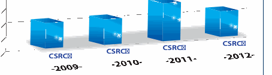

NIST SP 800-165 日本語訳
英語タイトル : Computer Security Division 2012 Annual Report日本語タイトル : コンピュータセキュリティ部門2012年度年次報告書
公開日 : 2013-07-22
原文URL : https://csrc.nist.gov/pubs/sp/800/165/final
翻訳編集 : 自動生成
[要約] SP 800-165 は、NIST情報技術研究所（ITL）のコンピュータセキュリティ部門が2012会計年度に実施した研究、標準化、連邦政府等への支援活動をまとめた年次報告書です。暗号技術グループなど同部門の5つのグループを紹介し、2012会計年度のプログラム／プロジェクトと、同年度に公表したFIPS、特別刊行物、NIST内部報告書の要旨を掲載しています。客員研究インターンシップや連邦コンピュータセキュリティ・プログラムマネージャーズ・フォーラムなど、部門の関連活動も記録した年度報告です。
有志による非公式の日本語訳です。NIST および米国商務省が作成・承認・推奨したものではありません。要件の確認にはNIST の正式版 PDFを参照してください。
NIST Special Publication 800-165
NIST Special Publication 800-165
Computer Security Division
コンピュータセキュリティ部門
2012 Annual Report
2012年年次報告書
Patrick O’Reilly, Editor
Patrick O’Reilly、編集者
Computer Security Division Information Technology Laboratory National Institute of Standards and Technology
米国国立標準技術研究所 情報技術研究所 コンピュータセキュリティ部門
Lorie Richards
Lorie Richards
Facilities Services Division Creative and Printing Service
Facilities Services Division Creative and Printing Service
http://dx.doi.org/10.6028/NIST.SP.800-165
http://dx.doi.org/10.6028/NIST.SP.800-165
June 2013
2013年6月
［米国商務省の紋章。公的な標章のため、この非公式サイトには掲載していない。原本 PDF を参照。］
U.S. Department of Commerce
米国商務省
Penny S. Pritzker, Secretary
Penny S. Pritzker、長官
National Institute of Standards and Technology
米国国立標準技術研究所
Patrick D. Gallagher, Under Secretary of Commerce for Standards and Technology and Director
Patrick D. Gallagher、標準技術担当商務次官 兼 所長
Disclaimer: Any mention of commercial products is for information only; it does not imply NIST recommendation or endorsement, nor does it imply that the products mentioned are necessarily the best available for the purpose.
免責事項：商用製品への言及はすべて情報提供のみを目的とする。それはNISTによる推奨または支持を意味するものではなく、言及した製品がその目的に対して必ずしも入手可能な最良のものであることを意味するものでもない。
National Institute of Standards and Technology Special Publication 800-165 Natl. Inst. Stand. Technol. Spec. Pub., 90 pages (June 2013) CODEN: NSPUE2
National Institute of Standards and Technology Special Publication 800-165 Natl. Inst. Stand. Technol. Spec. Pub.、90ページ（2013年6月） CODEN: NSPUE2
http://dx.doi.org/10.6028/NIST.SP.800-165
http://dx.doi.org/10.6028/NIST.SP.800-165
Table of Contents
目次
Table of Contents ........................................ iii
目次 ........................................ iii
Welcome Letter ........................................... 1
挨拶状 ........................................... 1
Division Organization .................................... 2
部門の組織 .................................... 2
Intro to CSD’s 5 Groups .................................. 3
CSDの5つのグループの紹介 .................................. 3
Cryptographic Technology Group .......................... 3
Cryptographic Technology Group .......................... 3
Security Components and Mechanisms Group........... 4
Security Components and Mechanisms Group........... 4
Secure Systems and Applications Group .................. 4
Secure Systems and Applications Group .................. 4
Security Outreach and Integration Group ................ 5
Security Outreach and Integration Group ................ 5
Security Testing, Validation, and Measurement Group ... 6
Security Testing, Validation, and Measurement Group ... 6
The Computer Security Division Implements the Federal Information Security Management Act of 2002...................................................... 7
コンピュータセキュリティ部門による2002年連邦情報セキュリティマネジメント法の実施...................................................... 7
CSD’s Programs/Projects for FY2012.................. 8
2012会計年度におけるCSDのプログラム／プロジェクト.................. 8
CSD Work in National and International Standards ..... 8
国内標準および国際標準におけるCSDの活動 ..... 8
Identity Management Standards within INCITS B10 and ISO JTC1/SC 17.........................................11
INCITS B10およびISO JTC1/SC 17におけるアイデンティティ管理標準.........................................11
Federal Information Security Management Act (FISMA) Implementation Project ...................................12
連邦情報セキュリティマネジメント法（FISMA）実施プロジェクト ...................................12
Biometric Standards and Associated Conformity Assessment Testing Tools ..................................15
バイオメトリクス標準および関連する適合性評価試験ツール ..................................15
Cybersecurity of Cyber Physical Systems ...............18
サイバーフィジカルシステムのサイバーセキュリティ ...............18
Cybersecurity Research & Development (R&D).........18
サイバーセキュリティの研究 & 開発（R&D）.........18
Security Aspects of Electronic Voting ....................20
電子投票のセキュリティ面 ....................20
Health Information Technology Security ................21
医療情報技術のセキュリティ ................21
ICT Supply Chain Risk Management.......................21
ICTサプライチェーンリスク管理.......................21
Nationwide Public Safety Broadband Network (NPSBN) Security .......................................................23
全国公共安全ブロードバンドネットワーク（NPSBN）のセキュリティ .......................................................23
Smart Grid Cybersecurity...................................23
スマートグリッドのサイバーセキュリティ...................................23
Cybersecurity Awareness, Training, Education, and Outreach ...................................................... 26
サイバーセキュリティの意識向上、トレーニング、教育およびアウトリーチ ...................................................... 26
Cryptographic Technology ..................................34
暗号技術 ..................................34
Validation Programs..........................................47
検証プログラム..........................................47
Identity Management ........................................54
アイデンティティ管理 ........................................54
Research in Emerging Technologies ......................55
新興技術の研究 ......................55
Strengthening Internet Security ..........................59
インターネットセキュリティの強化 ..........................59
Access Control and Privilege Management..............60
アクセス制御および特権管理..............60
Advanced Security Testing and Measurements ........62
高度なセキュリティ試験および測定 ........62
Honors and Awards ..................................... 72
表彰および受賞 ..................................... 72
2012 Publications Released and Abstracts ......... 73
2012年に公表した刊行物および要旨 ......... 73
Abstracts for Publications Released in FY2012 ........75
2012会計年度に公表した刊行物の要旨 ........75
Federal Information Processing Standards (FIPS) .....75
Federal Information Processing Standards (FIPS) .....75
Special Publications........................................76
Special Publications........................................76
NIST Interagency Reports .................................83
NIST Interagency Reports .................................83
Ways to Engage with Our Division and NIST ....... 89
当部門およびNISTと関わる方法 ....... 89
Guest Research Internships at NIST ......................89
NISTにおける客員研究インターンシップ ......................89
Details at NIST for Government or Military Personnel ...89
政府要員または軍人のNISTへの出向 ...89
Federal Computer Security Program Managers’ Forum (FCSPM) .......................................................89
Federal Computer Security Program Managers’ Forum (FCSPM) .......................................................89
Security Research ............................................89
セキュリティ研究 ............................................89
Funding Opportunities at NIST.............................89
NISTにおける資金提供の機会.............................89
Acknowledgements ..................................... 90
謝辞 ..................................... 90
Page intentionally left blank
このページは意図的に空白としている
With the continued proliferation of information, the explosion of devices connecting to the expanding communication infrastructure and the evolving threat environment, the need for cybersecurity standards and best practices that address interoperability, usability and privacy continues to be critical for the Nation. The Computer Security Division (CSD), a component of the Information Technology Laboratory at the National Institute of Standards and Technology (NIST) is responsible for developing standards, guidelines, tests, and metrics for the protection of non-national security federal information and communication infrastructure. These standards, guidelines, tests, and metrics are also important resources for the private sector.
情報の拡散が続き、拡大する通信インフラストラクチャに接続するデバイスが爆発的に増加し、脅威環境が変化し続ける中で、相互運用性、ユーザビリティおよびプライバシーに対処するサイバーセキュリティの標準とベストプラクティスは、米国にとって引き続き極めて重要である。米国国立標準技術研究所（NIST）の情報技術研究所の一組織であるコンピュータセキュリティ部門（CSD）は、国家安全保障に関わらない連邦政府の情報および通信インフラストラクチャを保護するための標準、ガイドライン、試験およびメトリクスを開発する責任を負う。これらの標準、ガイドライン、試験およびメトリクスは、民間部門にとっても重要な資源である。
In 2012, CSD aligned its resources to enable greater development and application of practical, innovative security technologies and methodologies, and to enhance our ability to address current and future computer and information security challenges in support of critical national and international priorities.
2012年、CSDは、実用的で革新的なセキュリティ技術および方法論の開発と適用を一層進められるように、また、国内および国際的な重要優先事項を支えるために、現在および将来のコンピュータセキュリティおよび情報セキュリティの課題に対処する能力を高められるように、資源の配分を整えた。
CSD extended its research and development agenda for high-quality, cost-effective security and privacy mechanisms to foster improved information security across the federal government and the global information security community. In 2012, NIST concluded the five-year SHA-3 Cryptographic Hash Algorithm Competition with the selection of KECCAK for standardization and worldwide adoption. The selection of this cryptographic hash algorithm, an indispensable component for the information and communication systems that support commerce in the modern era, confirmed NIST’s well-respected and trusted technical authority in this field.
CSDは、連邦政府全体および世界の情報セキュリティコミュニティにおける情報セキュリティの向上を促すため、高品質で費用対効果の高いセキュリティおよびプライバシーのメカニズムに関する研究開発の計画を拡張した。2012年、NISTは5年間にわたるSHA-3 Cryptographic Hash Algorithm Competitionを、標準化および世界的な採用の対象としてKECCAKを選定することで締めくくった。暗号ハッシュアルゴリズムは、現代の商取引を支える情報通信システムに不可欠な構成要素であり、その選定は、この分野においてNISTが高い評価と信頼を得た技術的権威であることを確かなものにした。
A strong partnership with industry is vital to the success of our technical programs. In 2012, CSD engaged the international standards community on emerging technical standards to advance continuous monitoring capabilities and to further interoperability with commercially available tools. We also devised new security testing methodologies for smart phone software app functionality. Our research in hardware-enabled security continued with the development of guidelines on mechanisms that measure and report the security state of BIOS. Our research also continued to expand into the cybersecurity aspects of cyber-physical and embedded systems, and the mechanisms for enabling and protecting public safety communications.
産業界との強固なパートナーシップは、当部門の技術プログラムの成功に不可欠である。2012年、CSDは、継続的監視の能力を前進させ、市販のツールとの相互運用性をさらに高めるため、新たに生まれつつある技術標準について国際標準コミュニティと連携した。また、スマートフォン向けソフトウェアアプリの機能に対する新しいセキュリティ試験方法論を考案した。ハードウェアによって実現するセキュリティの研究では、BIOSのセキュリティ状態を測定し報告するメカニズムに関するガイドラインの開発を続けた。さらに、サイバーフィジカルシステムおよび組込みシステムのサイバーセキュリティ面、ならびに公共安全通信を実現し保護するメカニズムへと、研究の範囲を引き続き広げた。
Our ability to interact with the broad federal community continues to be critical to our success. This interaction helps to ensure that our research is consistent with national objectives related to or impacted by information security. This interaction is most prominent in our strengthened collaborations with the Department of Defense, the Intelligence Community, and the Committee on National Security Systems to establish a common foundation for information security across the federal government. The release of Special Publication 800-30, Guide for Conducting Risk Assessments, developed by the Joint Task Force Transformation Initiative Interagency Working Group, is not only leading to more consistent ways to assess risks, but is also enabling more effective risk management and facilitating greater sharing of information across organizational boundaries.
広範な連邦政府コミュニティと交流できることは、当部門の成功にとって引き続き極めて重要である。この交流は、当部門の研究が、情報セキュリティに関連する、または情報セキュリティの影響を受ける国家目標と整合することを確実にするのに役立つ。この交流が最も顕著に表れているのは、連邦政府全体の情報セキュリティに共通の基盤を確立するために、国防総省、インテリジェンスコミュニティおよびCommittee on National Security Systemsとの間で強化した協力である。Joint Task Force Transformation Initiative Interagency Working Groupが開発したSpecial Publication 800-30, Guide for Conducting Risk Assessmentsの公表は、リスクを評価する方法の一貫性を高めているだけでなく、より効果的なリスク管理を可能にし、組織の境界を越えた情報共有の拡大を促している。
For many years, the Computer Security Division (CSD), in collaboration with our global partners from government, industry, and academia, has made great contributions to help secure the nation’s critical information and infrastructure. We look forward to furthering these relationships in 2013 as we lead in examining the diverse cybersecurity aspects of a broad set of areas, including supply chain risk management; security analytics; cloud, mobile, and privacy-enhancing technologies; hardware-enabled security; and cyber-physical and embedded systems.
コンピュータセキュリティ部門（CSD）は長年にわたり、政府、産業界および学術界の世界中のパートナーと協力して、米国の重要な情報およびインフラストラクチャの安全確保に大きく貢献してきた。2013年には、サプライチェーンリスク管理、セキュリティ分析、クラウド技術、モバイル技術およびプライバシー強化技術、ハードウェアによって実現するセキュリティ、サイバーフィジカルシステムおよび組込みシステムを含む幅広い領域について、サイバーセキュリティの多様な側面の検討を主導する中で、これらの関係をさらに深めていきたい。
Donna Dodson
Donna Dodson
Chief, Computer Security Division & Deputy Chief Cybersecurity Advisor
コンピュータセキュリティ部門長 & Deputy Chief Cybersecurity Advisor
Division Organization
部門の組織
［人物の写真。人物が写っているため、この非公式サイトには掲載していない。原本 PDF を参照。］
PDF原本のp.8にある図 ［人物の写真。人物が写っているため、この非公式サイトには掲載していない。原本 PDF を参照。］
PDF原本のp.8にある図 ［人物の写真。人物が写っているため、この非公式サイトには掲載していない。原本 PDF を参照。］
Donna Dodson, Chief, Computer Security Division, Acting Associate Director & Acting Chief Cybersecurity Advisor, Cybersecurity Advisor Office, and Acting Executive Director, National Cybersecurity Center of Excellence
Donna Dodson、コンピュータセキュリティ部門長、Cybersecurity Advisor OfficeのActing Associate Director & Acting Chief Cybersecurity Advisor、およびNational Cybersecurity Center of ExcellenceのActing Executive Director
Matthew Scholl, Deputy Chief, Computer Security Division and Acting Associate Director of Operations, National Cybersecurity Center of Excellence
Matthew Scholl、コンピュータセキュリティ部門副部門長、およびNational Cybersecurity Center of ExcellenceのActing Associate Director of Operations
GROUP MANAGERS
グループマネージャー
PDF原本のp.8にある図 ［人物の写真。人物が写っているため、この非公式サイトには掲載していない。原本 PDF を参照。］
PDF原本のp.8にある図 ［人物の写真。人物が写っているため、この非公式サイトには掲載していない。原本 PDF を参照。］
PDF原本のp.8にある図 ［人物の写真。人物が写っているため、この非公式サイトには掲載していない。原本 PDF を参照。］
Tim Polk, Cryptographic Technology Group
Tim Polk、Cryptographic Technology Group
PDF原本のp.8にある図 ［人物の写真。人物が写っているため、この非公式サイトには掲載していない。原本 PDF を参照。］
PDF原本のp.8にある図 ［人物の写真。人物が写っているため、この非公式サイトには掲載していない。原本 PDF を参照。］
Kevin Stine, Security Outreach and Integration Group
Kevin Stine、Security Outreach and Integration Group
Mark (Lee) Badger, Security Components and Mechanisms Group
Mark (Lee) Badger、Security Components and Mechanisms Group
David Ferraiolo, Secure Systems and Applications Group
David Ferraiolo、Secure Systems and Applications Group
Michael Cooper, Security Testing, Validation and Measurement Group
Michael Cooper、Security Testing, Validation and Measurement Group
Introduction to CSD’s 5 Groups
CSDの5つのグループの紹介
Cryptographic Technology Group
Cryptographic Technology Group
Mission Statement:
使命：
Research, develop, engineer, and standardize cryptographic algorithms, methods, and protocols.
暗号アルゴリズム、暗号方式および暗号プロトコルを研究、開発、設計し、標準化する。
Overview:
概要：
The Cryptographic Technology Group’s (CTG) work in cryptographic mechanisms addresses topics such as hash algorithms, symmetric and asymmetric cryptographic techniques, key management, authentication, and random number generation. Strong cryptography is used to improve the security of information systems and the information they process. Users then take advantage of the availability of secure applications in the marketplace made possible by the appropriate use of standardized, high-quality cryptography.
Cryptographic Technology Group（CTG）は暗号メカニズムの分野で、ハッシュアルゴリズム、共通鍵暗号技術および公開鍵暗号技術、鍵管理、認証、乱数生成などの主題に取り組んでいる。強力な暗号は、情報システムおよびそれが処理する情報のセキュリティを向上させるために用いられる。その結果、利用者は、標準化された高品質の暗号を適切に用いることで市場に提供されるようになった安全なアプリケーションを利用できる。
CTG continued its work in a number of cryptographic areas, including:
CTGは、次を含む多くの暗号分野で活動を続けた。
•Specifying and using cryptographic algorithms;
•暗号アルゴリズムの規定および利用
•Revising Federal Information Processing Standard (FIPS) 140-2, Security Requirements for Cryptographic Modules;
•Federal Information Processing Standard (FIPS) 140-2, Security Requirements for Cryptographic Modulesの改訂
•Developing hardware roots of trust to support reliable device authentication and establish new bases for system measurement;
•信頼できるデバイス認証を支え、システム測定の新たな基礎を確立するための、ハードウェアによる信頼の基点の開発
•Supporting the Smart Grid Interoperability Panel by assessing the security of cryptographic methods used in the security protocols for the communication and management networks used by public utility companies, and in developing security guidelines for the Smart Grid;
•公益事業会社が用いる通信ネットワークおよび管理ネットワーク向けのセキュリティプロトコルで使われる暗号方式のセキュリティの評価、ならびにスマートグリッド向けセキュリティガイドラインの開発による、Smart Grid Interoperability Panelの支援
•Advising the FIPS 140-2 Validation Program in the validation of cryptographic algorithms and cryptographic modules; and
•暗号アルゴリズムおよび暗号モジュールの検証に関する、FIPS 140-2 Validation Programへの助言
•Supporting NIST’s Personal Identity Verification (PIV) project that was initiated in response to the Homeland Security Presidential Directive 12 (HSPD-12).
•Homeland Security Presidential Directive 12（HSPD-12）を受けて開始された、NISTのPersonal Identity Verification（PIV）プロジェクトの支援
A major highlight of this year is the completion of the SHA-3 Cryptographic Hash Algorithm Competition and the selection of KECCAK as the SHA-3 algorithm.
今年の主要な成果は、SHA-3 Cryptographic Hash Algorithm Competitionを完了し、KECCAKをSHA-3アルゴリズムとして選定したことである。
CTG continued to make an impact in the field of cryptography, both within and outside the federal government, by collaborating with national and international agencies, academic and research organizations, and standards bodies to develop interoperable security standards and guidelines. Federal agency collaborators include the National Security Agency (NSA), the National Telecommunications and Information Administration (NTIA), the General Services Administration (GSA), the Election Assistance Commission (EAC) and the Federal Voting Assistance Program (FVAP). International agencies include the Communications Security Establishment of Canada, and Australia’s Defense Signals Agency and Centrelink. National and international standards bodies include the American Standards Committee (ASC) X9 (financial industry standards), the International Organization for Standardization (ISO), the Institute of Electrical and Electronics Engineers (IEEE), the Internet Engineering Task Force (IETF), the American National Standards Institute (ANSI), and the Trusted Computing Group (TCG). Industry collaborators include Intel, Dell, Hewlett Packard, VeriSign, Certicom, Entrust Technologies, Microsoft, Orion Security, RSA Security, Voltage Security, Verifone, Juniper, NTRU Cryptosystems, and Cisco. Academic collaborators include Katholieke Universiteit Leuven (KU Leuven), George Mason University, Danmarks Tekniske Universitet, George Washington University, SDU Odense (University of Southern Denmark), University of California Davis, Malaga University, and Yale University. Academic and research organizations include the International Association for Cryptologic Research (IACR), the European Network of Excellence in Cryptology (ECRYPT) II, and the Japanese Cryptography Research and Evaluation Committees (CRYPTREC).
CTGは、国内外の政府機関、学術・研究組織および標準化団体と協力して相互運用可能なセキュリティ標準およびガイドラインを開発することにより、連邦政府の内外で、暗号分野に引き続き影響を与えた。協力した連邦政府機関には、National Security Agency（NSA）、National Telecommunications and Information Administration（NTIA）、General Services Administration（GSA）、Election Assistance Commission（EAC）およびFederal Voting Assistance Program（FVAP）が含まれる。国外の政府機関には、カナダのCommunications Security Establishment、ならびにオーストラリアのDefense Signals AgencyおよびCentrelinkが含まれる。国内および国際的な標準化団体には、American Standards Committee（ASC）X9（金融業界の標準）、国際標準化機構（ISO）、Institute of Electrical and Electronics Engineers（IEEE）、Internet Engineering Task Force（IETF）、American National Standards Institute（ANSI）およびTrusted Computing Group（TCG）が含まれる。協力した産業界の組織には、Intel、Dell、Hewlett Packard、VeriSign、Certicom、Entrust Technologies、Microsoft、Orion Security、RSA Security、Voltage Security、Verifone、Juniper、NTRU CryptosystemsおよびCiscoが含まれる。協力した学術機関には、Katholieke Universiteit Leuven（KU Leuven）、George Mason University、Danmarks Tekniske Universitet、George Washington University、SDU Odense（University of Southern Denmark）、University of California Davis、Malaga UniversityおよびYale Universityが含まれる。学術・研究組織には、International Association for Cryptologic Research（IACR）、European Network of Excellence in Cryptology（ECRYPT）IIおよび日本のCryptography Research and Evaluation Committees（CRYPTREC）が含まれる。
Group Manager:
グループマネージャー：
Mr. William (Tim) Polk, william.polk@nist.gov, (301) 975-3348
Mr. William (Tim) Polk, william.polk@nist.gov, (301) 975-3348
PDF原本のp.10にある図 ［装飾の画像。本文を読むのに必要のない装飾のため、この非公式サイトには掲載していない。原本 PDF を参照。］
Security Components and Mechanisms Group
Security Components and Mechanisms Group
Mission Statement:
使命：
Research, develop, and standardize foundational security mechanisms, protocols, and services.
基盤となるセキュリティメカニズム、プロトコルおよびサービスを研究、開発し、標準化する。
Overview:
概要：
The Security Components and Mechanisms Group’s (SCMG) security research focuses on the development and management of foundational building-block security mechanisms and techniques that can be integrated into a wide variety of mission-critical U.S. information systems. The group’s work spans a spectrum from near-term hardening and improvement to the design and analysis of next-generation, leap-ahead security capabilities. Computer security depends fundamentally on the level of trust that can be established for computer software and systems. This work, therefore, focuses strongly on assurance-building activities ranging from the analysis of software configuration settings to advanced trust architectures to testing tools that surface flaws in software modules. Due to the often manual and costly nature of assurance building using current techniques, this work focuses strongly on increasing the applicability and effectiveness of automated techniques wherever feasible. SCMG conducts research collaboratively with government, industry, and academia. The outputs of this research consist of prototype systems, software tools, demonstrations, NIST Special Publications and NIST Interagency Reports, conference papers, and journal papers.
Security Components and Mechanisms Group（SCMG）のセキュリティ研究は、ミッションクリティカルな米国の多種多様な情報システムに統合できる、基盤的な構成要素としてのセキュリティメカニズムおよび技法の開発と管理に重点を置く。このグループの活動は、短期的な堅牢化および改善から、飛躍的に進んだ次世代のセキュリティ能力の設計および分析までの範囲に及ぶ。コンピュータセキュリティは、コンピュータのソフトウェアおよびシステムに対して確立できる信頼の水準に根本的に依存する。したがって、この活動は、ソフトウェアの構成設定の分析から、高度な信頼アーキテクチャ、ソフトウェアモジュールの欠陥を表面化させる試験ツールまで、保証を築く活動に強く重点を置く。現在の技法による保証の構築は手作業が多く費用がかかりがちであるため、この活動は、実現可能な場合には必ず、自動化された技法の適用可能性と有効性を高めることに強く重点を置く。SCMGは、政府、産業界および学術界と共同で研究を行う。この研究の成果は、プロトタイプシステム、ソフトウェアツール、デモンストレーション、NIST Special PublicationsおよびNIST Interagency Reports、会議論文ならびに学術誌論文である。
SCMG works on a variety of topics, such as specifications for the automated exchange of security information between systems, computer security incident handling guidelines, formulation of high-assurance software configuration settings, hardware roots of trust for mobile devices, combinatorial testing techniques, conformity assessment of software implementing biometric standards, and adoption of Internet Protocol Version 6 and Internet Protocol security extensions. SCMG collaborates extensively with government, academia, and the private sector. In the last year, collaborations have included the University of Texas Arlington, University of North Texas, University of Maryland-Baltimore County (UMBC), North Carolina State University, Johns Hopkins Applied Physics Lab (APL), National Aeronautics and Space Administration (NASA), U.S. Air Force T&E, Massachusetts Institute of Technology (MIT) Lincoln Labs, the Defense Advanced Research Projects Agency (DARPA), and Carnegie Mellon University (CMU).
SCMGは、システム間でセキュリティ情報を自動的に交換するための仕様、コンピュータセキュリティインシデント対応のガイドライン、高保証のソフトウェア構成設定の策定、モバイルデバイス向けのハードウェアによる信頼の基点、組合せテストの技法、バイオメトリクス標準を実装するソフトウェアの適合性評価、Internet Protocol Version 6およびInternet Protocolのセキュリティ拡張の採用など、さまざまな主題に取り組んでいる。SCMGは、政府、学術界および民間部門と広範に協力している。この1年間の協力先には、University of Texas Arlington、University of North Texas、University of Maryland-Baltimore County（UMBC）、North Carolina State University、Johns Hopkins Applied Physics Lab（APL）、National Aeronautics and Space Administration（NASA）、U.S. Air Force T&E、Massachusetts Institute of Technology（MIT）Lincoln Labs、Defense Advanced Research Projects Agency（DARPA）およびCarnegie Mellon University（CMU）が含まれる。
Example successes from this work include a second revision of the NIST Special Publication 800-61, Computer Security Incident Handling Guide, the Advanced Combinatorial Testing System (ACTS) software and documentation, the NIST BioCTS 2012 conformance testing tool and test assertions, a design for continuous monitoring systems, and a continuous monitoring prototype system.
この活動の成果の例には、NIST Special Publication 800-61, Computer Security Incident Handling Guideの第2次改訂、Advanced Combinatorial Testing System（ACTS）のソフトウェアおよび文書、適合性試験ツールNIST BioCTS 2012および試験アサーション、継続的監視システムの設計、ならびに継続的監視のプロトタイプシステムが含まれる。
Group Manager:
グループマネージャー：
Mr. Mark (Lee) Badger, mark.badger@nist.gov, (301) 975-3176
Mr. Mark (Lee) Badger, mark.badger@nist.gov, (301) 975-3176
PDF原本のp.10にある図 ［装飾の画像。本文を読むのに必要のない装飾のため、この非公式サイトには掲載していない。原本 PDF を参照。］
Secure Systems and Applications Group
Secure Systems and Applications Group
Mission Statement:
使命：
Integrate and apply security technologies, standards, and guidelines for computing platforms and information systems.
コンピューティングプラットフォームおよび情報システムのために、セキュリティ技術、標準およびガイドラインを統合し、適用する。
Overview:
概要：
The Secure Systems and Applications Group’s (SSAG) security research focuses on identifying emerging and high-priority technologies, and on developing security solutions that will have a high impact on the U.S. critical information infrastructure. The group conducts research and development on behalf of government and industry from the earliest stages of technology development through proof-of-concept, reference and prototype implementations, and demonstrations. SSAG works to transfer new technologies to industry, produce new standards and guidance for federal agencies and industry, and develop tests, test methodologies, and assurance methods.
Secure Systems and Applications Group（SSAG）のセキュリティ研究は、新興の技術および優先度の高い技術を特定すること、ならびに米国の重要情報インフラストラクチャに大きな影響を与えるセキュリティソリューションを開発することに重点を置く。このグループは、政府および産業界のために、技術開発の最初期の段階から、概念実証、参照実装およびプロトタイプ実装、デモンストレーションまでを通じて研究開発を行う。SSAGは、新技術を産業界に移転し、連邦政府機関および産業界のための新しい標準とガイダンスを作成し、試験、試験方法論および保証手法を開発することに取り組んでいる。
Some of the many topics the group investigates include mobile device security, cloud computing and virtualization, identity management, access control and authorization management, and software assurance. This research helps to meet federal information security requirements that may not be fully addressed by existing technology. SSAG collaborates extensively with government, academia, and private sector entities, including FY2012 collaborations with the National Security Agency (NSA), the Department of Defense (DoD), the Defense Advanced Research Projects Agency (DARPA), the Department of Homeland Security (DHS), the White House Communications Agency (WHCA), George Mason University, North Carolina State University, Microsoft Corporation, VM Ware, Symantec, Mobile System 7, One Enterprise Consulting Group, and MITRE.
このグループが調査する多くの主題には、モバイルデバイスのセキュリティ、クラウドコンピューティングおよび仮想化、アイデンティティ管理、アクセス制御および認可管理、ソフトウェア保証などがある。この研究は、既存の技術では十分に対処できない可能性のある連邦政府の情報セキュリティ要件を満たすのに役立つ。SSAGは、政府、学術界および民間部門の組織と広範に協力しており、2012会計年度の協力先には、National Security Agency（NSA）、国防総省（DoD）、Defense Advanced Research Projects Agency（DARPA）、Department of Homeland Security（DHS）、White House Communications Agency（WHCA）、George Mason University、North Carolina State University、Microsoft Corporation、VM Ware、Symantec、Mobile System 7、One Enterprise Consulting GroupおよびMITREが含まれる。
Example successes from this work include tools for access control policy testing; new concepts in access control and policy enforcement; methods for achieving comprehensive policy enforcement and data interoperability across enterprise data services; test methods for mobile device (smart phone) application security; validation of cryptography for smart phones, and several government wide technical exchange meetings on mobile device security. For the federal government’s cloud computing initiatives, SSAG led the NIST Security Working Group’s task of developing the NIST Cloud Computing - Security Reference Architecture working document, and contributed to the development of the white paper “Challenging Security Requirements for the USG Cloud Computing Adoption.” To improve access to new technologies, SSAG chaired, edited, and participated in the development of a wide variety of national and international security standards.
この活動の成果の例には、アクセス制御ポリシーの試験ツール、アクセス制御およびポリシー施行の新しい概念、エンタープライズデータサービス全体にわたる包括的なポリシー施行とデータ相互運用性を実現する方法、モバイルデバイス（スマートフォン）のアプリケーションセキュリティの試験方法、スマートフォン向け暗号の検証、ならびにモバイルデバイスのセキュリティに関する政府全体の技術交流会合の数回の開催が含まれる。連邦政府のクラウドコンピューティングの取り組みに関して、SSAGは、NIST Security Working Groupによる作業文書NIST Cloud Computing - Security Reference Architectureの開発作業を主導し、ホワイトペーパー“Challenging Security Requirements for the USG Cloud Computing Adoption”の開発に貢献した。新技術を利用しやすくするため、SSAGは、多種多様な国内および国際的なセキュリティ標準の開発において議長を務め、編集を行い、参加した。
Group Manager:
グループマネージャー：
Mr. David Ferraiolo, david.ferraiolo@nist.gov, (301) 975-3046
Mr. David Ferraiolo, david.ferraiolo@nist.gov, (301) 975-3046
PDF原本のp.11にある図 ［装飾の画像。本文を読むのに必要のない装飾のため、この非公式サイトには掲載していない。原本 PDF を参照。］
Security Outreach and Integration Group
Security Outreach and Integration Group
Mission Statement:
ミッションステートメント：
Develop, integrate, and promote the mission-specific application of information security standards, guidelines, best practices, and technologies.
情報セキュリティの標準、ガイドライン、ベストプラクティス及び技術を、それぞれのミッションに即して適用できるよう開発し、統合し、普及させる。
Overview:
概要：
The U.S. economy, citizens, and government rely on information technology. Protecting information technology, including its information and the information infrastructure, is critical for the nation. As part of the Computer Security Division, the Security Outreach and Integration Group (SOIG) leverages its broad cybersecurity and risk management expertise to develop, integrate, and promote security standards, guidelines, tools, technologies, methodologies, tests, and measurements to address critical cybersecurity needs in many areas of national and international importance.
米国の経済、国民及び政府は情報技術に依存している。情報技術を、そこで扱われる情報及び情報インフラストラクチャを含めて保護することは、国家にとって極めて重要である。コンピュータセキュリティ部門の一部であるSecurity Outreach and Integration Group（SOIG）は、サイバーセキュリティ及びリスク管理に関する幅広い専門知識を活用して、セキュリティの標準、ガイドライン、ツール、技術、方法論、試験及び測定法を開発し、統合し、普及させ、国内的及び国際的に重要な多くの分野における重大なサイバーセキュリティ上のニーズに対処している。
Major initiatives in this area include the development of standards, guidelines, tools, technologies, and methodologies to enable the security and risk management of the Information and Communications Technologies (ICT) supply chain; Smart Grid; Electronic Voting; Cyber Physical and Industrial Control Systems; Health Information Technology; National Public Safety Broadband Network, and the Federal Information Security Management Act (FISMA) implementation program. The group also serves as lead for the National Initiative for Cybersecurity Education (NICE), and provides extended outreach initiatives to stakeholders across federal, state, and local governments, industry, academia, small businesses, and the public.
この分野の主要な取り組みには、情報通信技術（ICT）サプライチェーン、スマートグリッド、電子投票、サイバーフィジカルシステム及び産業用制御システム、医療情報技術、National Public Safety Broadband Networkのセキュリティとリスク管理を可能にする標準、ガイドライン、ツール、技術及び方法論の開発、並びにFederal Information Security Management Act（FISMA）実施プログラムがある。また、このグループはNational Initiative for Cybersecurity Education（NICE）を主導する役割を担うとともに、連邦政府、州政府及び地方政府、産業界、学術界、中小企業並びに一般市民にわたる利害関係者に向けて、広範なアウトリーチ活動を行っている。
Key to the group’s success is the ability to interact with a broad constituency – government, industry, academia, and the public – in order to ensure that SOIG’s program is consistent with national objectives related to or impacted by information security. Through collaboration, cooperation, and open and transparent public engagement, SOIG works to address these critical cybersecurity challenges, enable greater U.S. industrial competitiveness, and facilitate the practical implementation of scalable and sustainable information security standards and practices.
このグループの成功の鍵は、政府、産業界、学術界及び一般市民という幅広い関係者と交流し、SOIGのプログラムを、情報セキュリティに関連する、又は情報セキュリティの影響を受ける国家目標と確実に整合させる能力にある。SOIGは、協働、協力、並びに開かれた透明性のある市民との関わりを通じて、これらの重大なサイバーセキュリティ上の課題に対処し、米国の産業競争力の向上を可能にし、拡張可能で持続可能な情報セキュリティの標準及び実践の実用的な実装を促進するよう取り組んでいる。
Group Manager:
グループマネージャー：
Mr. Kevin Stine, kevin.stine@nist.gov, (301) 975-4483
Mr. Kevin Stine, kevin.stine@nist.gov, (301) 975-4483
Security Testing, Validation, and Measurement Group
Security Testing, Validation, and Measurement Group
Mission Statement:
ミッションステートメント：
Advance information security testing, measurement science, and conformance.
情報セキュリティの試験、計測科学及び適合性を前進させる。
Overview:
概要：
Federal agencies, industry, and the public rely on cryptography for the protection of information and communications used in electronic commerce, critical infrastructure, and other application areas. At the core of all products offering cryptographic services is the cryptographic module. Cryptographic modules, which contain cryptographic algorithms, are used in products and systems to provide security services such as confidentiality, integrity, and authentication. Although cryptography is used to provide security, weaknesses such as poor design or weak algorithms can render a product insecure and place highly sensitive information at risk. When protecting their sensitive data, federal government agencies require a minimum level of assurance that cryptographic products meet their security requirements. Also, federal agencies are required to use only tested and validated cryptographic modules. Adequate testing and validation of the cryptographic module and its underlying cryptographic algorithms against established standards is essential to provide security assurance.
連邦政府機関、産業界及び一般市民は、電子商取引、重要インフラストラクチャその他の応用分野で使用される情報及び通信の保護を暗号に依存している。暗号サービスを提供するすべての製品の中核にあるのが暗号モジュールである。暗号モジュールは暗号アルゴリズムを含み、機密性、完全性、認証などのセキュリティサービスを提供するために製品及びシステムで使用される。暗号はセキュリティを提供するために使用されるが、不十分な設計や脆弱なアルゴリズムといった弱点があると、製品が安全でなくなり、機微性の高い情報が危険にさらされるおそれがある。連邦政府機関は、機微なデータを保護するにあたり、暗号製品が自らのセキュリティ要件を満たしていることについて最低限の水準の保証を必要とする。また、連邦政府機関は、試験され検証された暗号モジュールのみを使用することが義務付けられている。セキュリティの保証を与えるには、確立された標準に照らして、暗号モジュール及びその基礎となる暗号アルゴリズムを適切に試験し検証することが不可欠である。
The group’s testing-focused activities include validating cryptographic algorithm implementations, cryptographic modules, and Security Content Automation Protocol (SCAP)-compliant products; developing test suites and test methods; providing implementation guidance and technical support to industry forums; and conducting education, training, and outreach programs.
このグループの試験に重点を置いた活動には、暗号アルゴリズム実装、暗号モジュール及びSecurity Content Automation Protocol（SCAP）準拠製品の検証、テストスイート及び試験方法の開発、業界フォーラムへの実装ガイダンス及び技術支援の提供、並びに教育、訓練及びアウトリーチプログラムの実施がある。
All of the Security Testing, Validation, and Measurement Group’s validation programs work together with independent Cryptographic and Security Testing laboratories that are accredited by the NIST National Voluntary Laboratory Accreditation Program (NVLAP). Based on the independent laboratory test report and test evidence, the Validation Program then validates the implementation under test. The validations awarded to vendor implementations are publicly posted on the NIST website.
Security Testing, Validation, and Measurement Groupの検証プログラムはすべて、NISTのNational Voluntary Laboratory Accreditation Program（NVLAP）の認定を受けた独立のCryptographic and Security Testing試験所と連携して運営されている。検証プログラムは、独立試験所の試験報告書及び試験証拠に基づいて、試験対象の実装を検証する。ベンダーの実装に与えられた検証結果は、NISTのウェブサイトで公開されている。
Group Manager:
グループマネージャー：
Mr. Michael Cooper, michael.cooper@nist.gov, (301) 975-8077
Mr. Michael Cooper, michael.cooper@nist.gov, (301) 975-8077
The Computer Security Division Implements the Federal Information Security Management Act of 2002
コンピュータセキュリティ部門によるFederal Information Security Management Act of 2002の実施
The E-Government Act, Public Law 107-347, passed by the 107th Congress and signed into law by the President in December 2002, recognized the importance of information security to the economic and national security interests of the United States. Title III of the E-Government Act, entitled the Federal Information Security Management Act (FISMA) of 2002, included duties and responsibilities for the National Institute of Standards and Technology, Information Technology Laboratory, Computer Security Division (CSD). In 2012, CSD addressed its assignments through the following activities:
E-Government Act（Public Law 107-347）は、第107議会で可決され、2002年12月に大統領の署名により成立した法律であり、米国の経済及び国家安全保障上の利益にとっての情報セキュリティの重要性を認めたものである。E-Government Actの第III編はFederal Information Security Management Act（FISMA）of 2002と題され、米国国立標準技術研究所のInformation Technology Laboratoryに属するコンピュータセキュリティ部門（CSD）の任務及び責任を定めている。2012年、CSDは次の活動を通じて、割り当てられた任務に取り組んだ。
•Issued one final and two draft Federal Information Processing Standards (FIPS) that specify hash algorithms used to generate message digests, algorithms used to generate digital signatures, and technical requirements for a common identification standard for federal employees and contractors;
•Federal Information Processing Standards（FIPS）の最終版1件及び草案2件を発行した。これらは、メッセージダイジェストの生成に使用するハッシュアルゴリズム、デジタル署名の生成に使用するアルゴリズム、並びに連邦政府の職員及び契約業者のための共通の身分証明標準に関する技術要件を規定するものである。
•Issued 28 draft and final NIST Special Publications (SPs) that provide management, operational, and technical security guidelines in areas such as BIOS management and measurement, key management and derivation, media sanitization, electronic authentication, security automation, Bluetooth and wireless protocols, incident handling and intrusion detection, malware, cloud computing, public key infrastructure, and risk assessments. In addition, 12 draft and final NIST Interagency Reports were issued on a variety of topics including supply chain risk management, personal identity verification, access control, security automation and continuous monitoring, and the Smart Grid Advanced Metering Infrastructure;
•NIST Special Publications（SP）の草案及び最終版を合わせて28件発行した。これらは、BIOSの管理及び測定、鍵の管理及び導出、媒体のサニタイズ、電子認証、セキュリティ自動化、Bluetooth及び無線プロトコル、インシデント対応及び侵入検知、マルウェア、クラウドコンピューティング、公開鍵基盤、リスクアセスメントなどの分野における管理面、運用面及び技術面のセキュリティガイドラインを提供するものである。加えて、サプライチェーンリスク管理、個人の身元確認、アクセス制御、セキュリティ自動化及び継続的モニタリング、スマートグリッドのAdvanced Metering Infrastructureなど、さまざまなテーマについて、NIST Interagency Reportsの草案及び最終版を合わせて12件発行した。
•Produced guidelines concerning the handling of information security incidents to help agencies analyze incident-related data and determine the appropriate response to each incident;
•情報セキュリティインシデントの取扱いに関するガイドラインを作成した。これは、各機関がインシデント関連データを分析し、個々のインシデントに対する適切な対応を決定するのに役立つものである。
•Continued the successful collaboration with the Office of the Director of National Intelligence, the Committee on National Security Systems, and the Department of Defense to establish a common foundation for information security across the federal government, including a structured, yet flexible approach for managing information security risk across an organization. In 2012, this collaboration produced foundational guidelines for conducting risk assessments, and updated guidelines for selecting and specifying security controls for federal information systems and organizations;
•Office of the Director of National Intelligence、Committee on National Security Systems及び国防総省との協働を引き続き成功裏に進め、組織全体にわたって情報セキュリティリスクを管理するための、体系的でありながら柔軟なアプローチを含め、連邦政府全体に共通する情報セキュリティの基盤を確立することに取り組んだ。2012年には、この協働により、リスクアセスメントの実施に関する基礎的なガイドラインと、連邦情報システム及び連邦組織のためのセキュリティ管理策の選択及び規定に関する改訂版ガイドラインが作成された。
•Provided assistance to agencies and the private sector: conducted ongoing, substantial reimbursable and non-reimbursable assistance to the government and private sector, including many outreach efforts through the Federal Information Systems Security Educators’ Association (FISSEA), the Federal Computer Security Program Managers’ Forum, and the Small Business Information Security Corner;
•各機関及び民間部門に支援を提供した。すなわち、政府及び民間部門に対して、有償及び無償の実質的な支援を継続的に行った。これには、Federal Information Systems Security Educators’ Association（FISSEA）、Federal Computer Security Program Managers’ Forum及びSmall Business Information Security Cornerを通じた多くのアウトリーチ活動が含まれる。
•Reviewed security policies and technologies from the private sector and national security systems for potential federal agency use: hosted a repository of federal agency security practices, public/private security practices, and security configuration checklists for IT products. Continued to lead, in conjunction with the Government of Canada’s Communications Security Establishment, the Cryptographic Module Validation Program (CMVP). The Common Criteria Evaluation and Validation Scheme (CCEVS) and CMVP facilitate security testing of IT products usable by the federal government;
•民間部門及び国家安全保障システムのセキュリティポリシー及び技術を、連邦政府機関での利用可能性の観点からレビューした。すなわち、連邦政府機関のセキュリティプラクティス、官民のセキュリティプラクティス、及びIT製品向けのセキュリティ設定チェックリストのリポジトリを運営した。また、カナダ政府のCommunications Security Establishmentと共同で、Cryptographic Module Validation Program（CMVP）を引き続き主導した。Common Criteria Evaluation and Validation Scheme（CCEVS）及びCMVPは、連邦政府が利用できるIT製品のセキュリティ試験を促進している。
•Solicited recommendations of the Information Security and Privacy Advisory Board (ISPAB) on draft standards and guidelines, and on information security and privacy issues;
•標準及びガイドラインの草案、並びに情報セキュリティ及びプライバシーに関する課題について、Information Security and Privacy Advisory Board（ISPAB）の勧告を求めた。
•Conducted workshops, awareness briefings, and outreach to CSD customers to ensure comprehension of standards and guidelines, to share ongoing and planned activities, and to aid in scoping guidelines in a collaborative, open, and transparent manner. CSD also held workshops on diverse information security and technology topics including security automation, identity management, information and communications technologies supply chain risk management, information security awareness and training, cybersecurity of cyber physical systems, technical aspects of botnets, health information security, and mobile computing; and
•CSDの顧客に対してワークショップ、意識向上のためのブリーフィング及びアウトリーチを実施した。その目的は、標準及びガイドラインが確実に理解されるようにすること、進行中及び計画中の活動を共有すること、並びに協働的で開かれた透明性のある方法でガイドラインの範囲の設定に役立てることである。CSDはまた、セキュリティ自動化、アイデンティティ管理、情報通信技術サプライチェーンのリスク管理、情報セキュリティの意識向上及び訓練、サイバーフィジカルシステムのサイバーセキュリティ、ボットネットの技術的側面、医療情報セキュリティ、モバイルコンピューティングなど、情報セキュリティ及び技術に関する多様なテーマでワークショップを開催した。
•Produced an annual report as a NIST Special Publication (SP). The 2003-2011 Annual Reports are available on the Computer Security Resource Center (CSRC) at http://csrc.nist.gov.
•年次報告書をNIST Special Publication（SP）として作成した。2003年から2011年までの年次報告書は、Computer Security Resource Center（CSRC）（http://csrc.nist.gov）で入手できる。
CSD’s Programs/Projects for FY2012
2012会計年度におけるCSDのプログラム及びプロジェクト
CSD Work in National and International Standards
国内標準及び国際標準におけるCSDの取り組み
CSD’s Part in National and International ISO Security Standards Processes
国内及び国際的なISOセキュリティ標準の策定プロセスにおけるCSDの役割
Figure 1 (below) shows the many national and international standards-developing organizations (SDOs) involved in cybersecurity standardization. CSD participates in many cybersecurity standards activities in many of these organizations, either in leadership positions or as editors and contributors. Many of CSD’s publications have been the basis for both national and international standards projects. This section discusses CSD standards activities in conjunction with InterNational Committee for Information Technology Standards (INCITS) Technical Committee Cyber Security (CS) 1, where Dan Benigni serves as Chair and U.S. Head of Delegation to SC 27.
図1（下記）は、サイバーセキュリティの標準化に関与している国内及び国際的な多数の標準化団体（SDO）を示している。CSDは、これらの団体の多くで、主導的な立場で、又は編集者及び寄稿者として、数多くのサイバーセキュリティ標準化活動に参加している。CSDの刊行物の多くは、国内及び国際的な標準化プロジェクトの基礎となってきた。本節では、InterNational Committee for Information Technology Standards（INCITS）Technical Committee Cyber Security（CS）1と連携したCSDの標準化活動について述べる。同委員会ではDan Benigniが議長を務め、SC 27への米国代表団長も務めている。
The International Organization for Standardization
国際標準化機構
The International Organization for Standardization (ISO) is a network of the national standards institutes of 148 countries, with the representation of one member per country. The scope of ISO covers standardization in all fields except electrical and electronic engineering standards, which are the responsibility of the International Electrotechnical Commission (IEC).
国際標準化機構（ISO）は、148か国の国家標準化機関からなるネットワークであり、1か国につき1会員が代表する。ISOの対象範囲は、電気及び電子工学の標準を除くすべての分野の標準化に及び、電気及び電子工学の標準は国際電気標準会議（IEC）が担当している。
The IEC prepares and publishes international standards for all electrical, electronic, and related technologies, including electronics, magnetics and electromagnetics, electroacoustics, multimedia, telecommunication, and energy production and distribution, as well as associated general disciplines such as terminology and symbols, electromagnetic compatibility, measurement and performance, dependability, design and development, safety, and the environment.
IECは、電子工学、磁気及び電磁気、電気音響、マルチメディア、電気通信、エネルギーの生産及び配給を含む、電気、電子及び関連するすべての技術について、また、用語及び記号、電磁両立性、測定及び性能、ディペンダビリティ、設計及び開発、安全、環境といった関連する一般分野について、国際標準を作成し発行している。
Figure 1: SDOs involved in Cybersecurity
図1：サイバーセキュリティに関与しているSDO
Joint Technical Committee 1 (JTC 1) was formed by ISO and IEC to be responsible for international standardization in the field of Information Technology. It develops, maintains, promotes, and facilitates IT standards required by global markets, meeting business and user requirements concerning—
Joint Technical Committee 1（JTC 1）は、情報技術分野の国際標準化を担当する組織として、ISOとIECによって設置された。JTC 1は、グローバル市場が必要とするIT標準を開発し、維持し、普及させ、その利用を促進しており、次の事項に関するビジネス及び利用者の要求事項を満たすものとしている。
•Design and development of IT systems and tools;
•ITシステム及びツールの設計及び開発
•Performance and quality of IT products and systems;
•IT製品及びシステムの性能及び品質
•Security of IT systems and information;
•ITシステム及び情報のセキュリティ
•Portability of application programs;
•アプリケーションプログラムの移植性
•Interoperability of IT products and systems;
•IT製品及びシステムの相互運用性
•Unified tools and environments;
•統一されたツール及び環境
•Harmonized IT vocabulary; and
•整合のとれたIT用語
•User-friendly and ergonomically designed user interfaces.
•使いやすく人間工学的に設計されたユーザインタフェース
JTC 1 consists of a number of subcommittees (SCs) and working groups that address specific technologies. SCs that produce standards relating to IT security include:
JTC 1は、特定の技術を扱う複数の分科委員会（SC）及び作業グループで構成されている。ITセキュリティに関連する標準を作成しているSCには次のものがある。
•SC 06 - Telecommunications and Information Exchange Between Systems;
•SC 06 - 通信とシステム間の情報交換
•SC 17 - Cards and Personal Identification;
•SC 17 - カード及び個人識別
•SC 27 - IT Security Techniques; and
•SC 27 - ITセキュリティ技術
•SC 37 – Biometrics (Fernando Podio of NIST serves as Chair).
•SC 37 – バイオメトリクス（NISTのFernando Podioが議長を務める）
JTC1 also has—
JTC1には、このほか次のものもある。
•Technical Committee 68 – Financial Services;
•Technical Committee 68 – 金融サービス
•SC 2 - Operations and Procedures including Security;
•SC 2 - セキュリティを含む運用及び手続
•SC 4 – Securities;
•SC 4 – 証券
•SC 6 - Financial Transaction Cards, Related Media and Operations; and
•SC 6 - 金融取引カード、関連媒体及び運用
•SC 7 – Software and Systems Engineering.
•SC 7 – ソフトウェア及びシステム工学
The American National Standards Institute
米国国家規格協会
The American National Standards Institute (ANSI) is a private, nonprofit organization (501(c)(3)) that administers and coordinates the U.S. voluntary standardization and conformity assessment system.
米国国家規格協会（ANSI）は、米国の任意の標準化及び適合性評価の制度を運営し調整する、民間の非営利団体（501(c)(3)）である。
ANSI facilitates the development of American National Standards (ANSs) by accrediting the procedures of standards-developing organizations (SDOs). The InterNational Committee for Information Technology Standards (INCITS) is accredited by ANSI.
ANSIは、標準化団体（SDO）の手続を認定することにより、American National Standards（ANS）の開発を促進している。InterNational Committee for Information Technology Standards（INCITS）は、ANSIの認定を受けている。
ANSI promotes the use of U.S. standards internationally, advocates U.S. policy and technical positions in international and regional standards organizations, and encourages the adoption of international standards as national standards where they meet the needs of the user community. ANSI is the sole U.S. representative and dues-paying member of the two major non-treaty international standards organizations, ISO and, via the United States National Committee (USNC), the IEC.
ANSIは、米国標準の国際的な利用を推進し、国際的及び地域的な標準化機関において米国の政策上及び技術上の立場を主張し、国際標準が利用者コミュニティのニーズを満たす場合には、それを国家標準として採用するよう奨励している。ANSIは、条約に基づかない二大国際標準化機関であるISO、及びUnited States National Committee（USNC）を通じてIECにおいて、米国の唯一の代表であり、会費を納める会員である。
INCITS serves as the ANSI Technical Advisory Group (TAG) for ISO/IEC Joint Technical Committee 1. INCITS is sponsored by the Information Technology Industry (ITI) Council, a trade association representing the leading U.S. providers of information technology products and services. INCITS currently has more than 975 published standards.
INCITSは、ISO/IEC Joint Technical Committee 1に対するANSIのTechnical Advisory Group（TAG）を務めている。INCITSは、情報技術の製品及びサービスを提供する米国の主要企業を代表する業界団体であるInformation Technology Industry（ITI）Councilの後援を受けている。INCITSには現在、975件を超える発行済みの標準がある。
INCITS is organized into Technical Committees that focus on the creation of standards for different technology areas. Technical committees that focus on IT security and IT security-related technologies, or that may require separate security standards include:
INCITSは、技術分野ごとの標準の作成に取り組む複数のTechnical Committeeで構成されている。ITセキュリティ及びITセキュリティ関連技術に重点を置いている、又は個別のセキュリティ標準を必要とする可能性のあるTechnical Committeeには、次のものがある。
•B10 – Identification Cards and Related Devices (Sal Francomacaro, Chair Task Group B10.12, Integrated Circuit Cards with Contacts);
•B10 – Identification Cards and Related Devices（Sal Francomacaroが、Task Group B10.12, Integrated Circuit Cards with Contactsの議長を務める）
•CS1 – Cyber Security (Dan Benigni, Chair and Richard Kissel, NIST Principal voting member);
•CS1 – Cyber Security（Dan Benigniが議長、Richard KisselがNISTの主たる投票権者を務める）
•E22 – Item Authentication;
•E22 – Item Authentication
•M1 – Biometrics (Fernando Podio, Chair);
•M1 – Biometrics（Fernando Podioが議長を務める）
•T3 – Open Distributed Processing (ODP);
•T3 – Open Distributed Processing (ODP)
•T6 – Radio Frequency Identification (RFID) Technology;
•T6 – Radio Frequency Identification (RFID) Technology
•CGIT1 – Corporate Governance of IT (Richard Kissel, NIST Principal voting member and International Representative); and
•CGIT1 – Corporate Governance of IT（Richard KisselがNISTの主たる投票権者及び国際代表を務める）
•DAPS38 – Distributed Application Platforms and Services.
•DAPS38 – Distributed Application Platforms and Services
As a technical committee of INCITS, CS1 develops United States, national, ANSI-accredited standards in the area of cybersecurity. Its scope encompasses—
CS1は、INCITSのTechnical Committeeとして、サイバーセキュリティ分野における、ANSI認定の米国の国家標準を開発している。その対象範囲には次のものが含まれる。
•Management of information security and systems;
•情報セキュリティ及びシステムの管理
•Management of third-party information security service providers;
•第三者である情報セキュリティサービス提供者の管理
•Intrusion detection;
•侵入検知
•Network security;
•ネットワークセキュリティ
•Cloud computing security;
•クラウドコンピューティングのセキュリティ
•Supply chain risk management;
•サプライチェーンリスク管理
•Incident handling;
•インシデント対応
•IT security evaluation and assurance;
•ITセキュリティの評価及び保証
•Security assessment of operational systems;
•運用中のシステムのセキュリティアセスメント
•Security requirements for cryptographic modules;
•暗号モジュールのセキュリティ要件
•Protection profiles;
•プロテクションプロファイル
•Role-based access control;
•ロールベースアクセス制御
•Security checklists;
•セキュリティチェックリスト
•Security metrics;
•セキュリティメトリクス
•Cryptographic and non-cryptographic techniques and mechanisms including confidentiality, entity authentication, non-repudiation, key management, data integrity, message authentication, hash functions, and digital signatures;
•機密性、エンティティ認証、否認防止、鍵管理、データ完全性、メッセージ認証、ハッシュ関数及びデジタル署名を含む、暗号及び非暗号の技術及びメカニズム
•Future service and applications standards supporting the implementation of control objectives and controls as defined in ISO 27001, in the areas of business continuity, and outsourcing;
•事業継続及びアウトソーシングの分野において、ISO 27001に定義された管理目的及び管理策の実装を支援する、将来のサービス及びアプリケーションの標準
•Identity management, including identity management framework, role-based access control, and single sign-on; and
•アイデンティティ管理フレームワーク、ロールベースアクセス制御及びシングルサインオンを含む、アイデンティティ管理
•Privacy technologies, including privacy framework, privacy reference architecture, privacy infrastructure, anonymity and credentials, and specific privacy-enhancing technologies.
•プライバシーフレームワーク、プライバシー参照アーキテクチャ、プライバシーインフラストラクチャ、匿名性及びクレデンシャル、並びに個別のプライバシー強化技術を含む、プライバシー技術
The scope of CS1 explicitly excludes the areas of work on cybersecurity standardization presently under way in INCITS B10, M1, T3, T10, and T11, as well as other standard groups, such as the Alliance for Telecommunications Industry Solutions (ATIS), the Institute of Electrical and Electronics Engineers, Inc. (IEEE), the Internet Engineering Task Force (IETF), the Travel Industry Association of America (TIAA), and Accredited Standards Committee (ASC) X9. The CS1 scope of work includes standardization in most of the same cybersecurity areas as are covered in the NIST CSD.
CS1の対象範囲からは、INCITSのB10、M1、T3、T10及びT11、並びにAlliance for Telecommunications Industry Solutions（ATIS）、Institute of Electrical and Electronics Engineers, Inc.（IEEE）、Internet Engineering Task Force（IETF）、Travel Industry Association of America（TIAA）、Accredited Standards Committee（ASC）X9などの他の標準化グループで現在進められているサイバーセキュリティ標準化の作業分野が、明示的に除外されている。CS1の作業範囲には、NIST CSDが扱っているのとほぼ同じサイバーセキュリティ分野の標準化が含まれる。
As the U.S. TAG to ISO/IEC JTC 1/SC 27, CS1 contributes to the SC 27 program of work on IT Security Techniques in terms of comments and contributions on SC27 standards projects; votes on SC 27 standards documents at various stages of development; and nominates U.S. experts to work on various SC 27 projects as editors, coeditors, or in other SC 27 leadership positions. Currently a number of CS1 members are serving as SC 27 document editors or coeditors on various standards projects, including CSD staff Randy Easter and Richard Kissel.
CS1は、ISO/IEC JTC 1/SC 27に対する米国のTAGとして、SC 27のITセキュリティ技術に関する作業プログラムに貢献している。具体的には、SC27の標準化プロジェクトに対してコメント及び寄書を提出し、さまざまな開発段階にあるSC 27の標準文書について投票し、SC 27の各種プロジェクトで編集者、共同編集者その他のSC 27の主導的な役職として活動する米国の専門家を指名している。現在、CSDの職員であるRandy Easter及びRichard Kisselを含め、CS1の多数のメンバーが、さまざまな標準化プロジェクトでSC 27の文書の編集者又は共同編集者を務めている。
All input from CS1 is processed through INCITS to ANSI, then to SC 27. It is also a conduit for getting U.S. - based new work item proposals and U.S.-developed national standards into the international SC 27 standards development process. In its international efforts, CS1 responded to all calls for U.S. contributions and/or voting positions on all international security standards projects in ISO/IEC JTC1 SC 27 in a consistent, efficient, and timely manner.
CS1からのすべてのインプットは、INCITSを経由してANSIに送られ、次いでSC 27に送られる。CS1はまた、米国発の新規作業項目提案及び米国で開発された国家標準を、SC 27の国際標準開発プロセスに持ち込むための経路でもある。国際的な取り組みにおいて、CS1は、ISO/IEC JTC1 SC 27のすべての国際セキュリティ標準化プロジェクトについて、米国の寄書及び／又は投票上の立場を求めるすべての要請に、一貫性をもって、効率的かつ適時に対応した。
NIST contributes to many of CS1’s national and international IT security standards efforts through its membership on CS1, where Dan Benigni serves as the nonvoting chair and Richard Kissel as the NIST Principal voting member. Internationally, there are over 100 published standards, and almost all have been adopted as U.S. national standards. There are more than 100 current international standards projects.
NISTは、CS1の構成員であることを通じて、CS1の国内及び国際的なITセキュリティ標準化の取り組みの多くに貢献しており、CS1ではDan Benigniが投票権のない議長を、Richard KisselがNISTの主たる投票権者を務めている。国際的には、100件を超える標準が発行されており、そのほぼすべてが米国の国家標準として採用されている。現在進行中の国際標準化プロジェクトは100件を超える。
CSD’s Role in Cybersecurity Standardization
サイバーセキュリティ標準化におけるCSDの役割
CSD’s cybersecurity research also plays a direct role in the Cybersecurity Standardization efforts of CS1 at the national level. During FY2012:
CSDのサイバーセキュリティ研究は、国内レベルでのCS1のサイバーセキュリティ標準化の取り組みにおいても、直接的な役割を果たしている。2012会計年度には、次のことが行われた。
•Through the CS1 Ad hoc Group on Role-Based Access Control (RBAC), ANSI has published three national standards:
•CS1のAd hoc Group on Role-Based Access Control（RBAC）を通じて、ANSIは次の3件の国家標準を発行した。
•“Requirements for the Implementation and Interoperability of Role Based Access Control”;
•“Requirements for the Implementation and Interoperability of Role Based Access Control”
•“Revision of INCITS 359 – 2004, Role Based Access Control (RBAC)”; and
•“Revision of INCITS 359 – 2004, Role Based Access Control (RBAC)”
•“Information technology -- Role Based Access Control – Policy Enhanced” and Project 2214-D.
•“Information technology -- Role Based Access Control – Policy Enhanced”及びProject 2214-D
NIST originally authored RBAC, and Rick Kuhn is the NIST lead in the Ad hoc group.
RBACはもともとNISTが考案したものであり、Rick KuhnがこのAd hocグループにおけるNISTの主導者である。
•The NIST Policy Machine research and development has resulted in three ongoing national standards projects in CS1 in the early stages of development. They include:
•NIST Policy Machineの研究開発からは、CS1において、開発の初期段階にある3件の国内規格プロジェクトが生まれ、現在進行中である。それらは次のとおりである。
•“Next Generation Access Control -Implementation Requirements, Protocols and API Definitions (NGAC-IRPADS).” Its assigned project number is 2193-D;
•“Next Generation Access Control -Implementation Requirements, Protocols and API Definitions (NGAC-IRPADS)”。割り当てられたプロジェクト番号は2193-Dである。
•Just published “Next Generation Access Control –Functional Architecture (NGAC-FA).” Its assigned project number is 2194-D; David Ferraiolo of NIST is editor; and
•発行されたばかりの“Next Generation Access Control –Functional Architecture (NGAC-FA)”。割り当てられたプロジェクト番号は2194-Dであり、NISTのDavid Ferraioloが編集者を務める。
•“Next Generation Access Control – Generic Operations & Abstract Data Structures (NGAC-GOADS).” Its assigned project number is 2195-D, and Serban Gavrila of NIST is editor.
•“Next Generation Access Control – Generic Operations & Abstract Data Structures (NGAC-GOADS)”。割り当てられたプロジェクト番号は2195-Dであり、NISTのSerban Gavrilaが編集者を務める。
Within CS1, liaisons are maintained with nearly 20 organizations. They include the following:
CS1では、20近くの組織とのリエゾン関係を維持している。それらには次の組織が含まれる。
•Open Group;
•Open Group
•IEEE P1700 and P1619;
•IEEE P1700およびP1619
•Forum of Incident Response and Security Teams (FIRST);
•Forum of Incident Response and Security Teams (FIRST)
•American Bar Association (ABA), section on Science and Technology;
•American Bar Association (ABA)のScience and Technology部会
•ABA Federated Identity Management Legal (IdM Legal) Task Force;
•ABA Federated Identity Management Legal (IdM Legal) Task Force
•INCITS T11, M1, CGIT1, DAPS38, and PL22;
•INCITS T11、M1、CGIT1、DAPS38およびPL22
•Internet Security Alliance;
•Internet Security Alliance
•Trusted Computing Group;
•Trusted Computing Group
•Kantara Initiative Identity Assurance Working Group (IAWG);
•Kantara Initiative Identity Assurance Working Group (IAWG)
•Cloud Security Alliance;
•Cloud Security Alliance
•SC 7 TAG;
•SC 7 TAG
•Scientific Working Group on Digital Evidence (SWGDE); and
•Scientific Working Group on Digital Evidence (SWGDE)
•The Storage Networking Industry Association (SNIA).
•Storage Networking Industry Association (SNIA)
Dan Benigni also serves as cybersecurity standards coordinator in CSD.
Dan Benigniは、CSDのサイバーセキュリティ標準コーディネーターも務めている。
Contact:
連絡先:
Mr. Daniel Benigni, (301) 975-3279, benigni@nist.gov
Mr. Daniel Benigni, (301) 975-3279, benigni@nist.gov
Identity Management Standards within INCITS B10 and ISO JTC1/SC 17
INCITS B10およびISO JTC1/SC 17におけるアイデンティティ管理の標準
CSD supports Identity Management standardization activities through participation in national and international standards bodies and organizations. CSD actively participates in InterNational Committee for Information Technology Standards (INCITS) B10 committee which is focused on interoperability of Identification Cards and Related Devices. CSD staff serves as Chair and Vice Chair of the B10.12 committee which develops interoperable standards for Integrated Circuit Cards with Contacts. CSD staff also serves as the U.S. Head of delegation to Working Group 4 and Working Group 11 of the International Organization for Standardization / International Electrotechnical Commission (ISO/IEC) Joint Technical Committee (JTC) 1 Subcommittee 17.
CSDは、国内および国際的な標準化団体・組織への参加を通じて、アイデンティティ管理の標準化活動を支援している。CSDは、識別カードおよび関連デバイスの相互運用性を対象とするInterNational Committee for Information Technology Standards (INCITS) B10委員会に積極的に参加している。CSDの職員は、接触型ICカードの相互運用可能な標準を策定するB10.12委員会の議長および副議長を務めている。CSDの職員はまた、国際標準化機構／国際電気標準会議 (ISO/IEC) Joint Technical Committee (JTC) 1 Subcommittee 17のWorking Group 4およびWorking Group 11への米国代表団長も務めている。
In addition to chairing the B10.12 committee, CSD provides technical and editorial support in the development of national and international standards. Specifically, CSD staff serves as the technical editor of ANSI 504-1, Generic Identity Command Set (GICS). GICS provides for Personal Identity Verification (PIV), PIV-I (PIV-Interoperable) and Common Access Card (CAC) card applications (but not limited to these applications) to be built from a single platform. GICS defines an open platform where identity applications can be instantiated, deployed, and used in an interoperable way between the credential issuers and credential users. CSD staff also provides significant input to standards of major interest to U.S. government agencies and U.S. markets. CSD influences the development and revision of ISO/IEC 7816 (Identification Cards, Integrated Circuit Cards), ISO/IEC 24727 (Identification Cards, Integrated Circuit Card Programming Interfaces), and ISO/IEC 24787 (Biometrics ‘Match On Card’ Comparison).
B10.12委員会の議長を務めることに加えて、CSDは、国内規格および国際規格の策定において技術面および編集面の支援を提供している。具体的には、CSDの職員はANSI 504-1, Generic Identity Command Set (GICS)の技術編集者を務めている。GICSは、Personal Identity Verification (PIV)、PIV-I (PIV-Interoperable)およびCommon Access Card (CAC)のカードアプリケーションを（ただし、これらのアプリケーションに限らない）単一のプラットフォームから構築できるようにする。GICSは、アイデンティティアプリケーションを、クレデンシャル発行者とクレデンシャル利用者との間で相互運用可能な形でインスタンス化し、展開し、利用できるオープンなプラットフォームを定義する。CSDの職員はまた、米国政府機関および米国市場にとって関心の高い標準に対しても、重要な寄与を行っている。CSDは、ISO/IEC 7816 (Identification Cards, Integrated Circuit Cards)、ISO/IEC 24727 (Identification Cards, Integrated Circuit Card Programming Interfaces)およびISO/IEC 24787 (Biometrics ‘Match On Card’ Comparison)の策定および改訂に影響を与えている。
During FY2012, many of these standards reached important milestones: ANSI 504 was published; ISO/IEC 24727 amendments to part 2, 3, and 4 were published; ISO/IEC 7816 part 4 was updated to add significant functionality: several modifications requested by the U.S. delegation are now part of this standard. CSD provides contributions and feedback on many other INCITS B10 standards projects that support identity management.
2012会計年度には、これらの標準の多くが重要な節目を迎えた。ANSI 504が発行され、ISO/IEC 24727の第2部、第3部、第4部の追補が発行され、ISO/IEC 7816の第4部が更新されて重要な機能が追加された。米国代表団が求めた複数の修正が、現在ではこの標準の一部となっている。CSDは、アイデンティティ管理を支えるその他多くのINCITS B10標準化プロジェクトにも、寄書とフィードバックを提供している。
CSD’s investment in this section is motivated by the “new technical ideas” that are supported by these standards. For example, ANSI 504 (GICS) is an ID platform that leverages the existing FIPS 201 (PIV) infrastructure to offer support to a larger number of initiatives for both government agencies and enterprises. In particular, it aims to support initiatives like the National Strategy for Trusted Identities in Cyberspace (NSTIC). ISO/IEC 24727 aims to create an interoperability framework to increase resilience and scalability of identity management solutions and provide interoperability domestically and internationally.
この分野へのCSDの投資は、これらの標準が支える「新しい技術的アイデア」を動機としている。例えば、ANSI 504（GICS）は、既存のFIPS 201（PIV）基盤を活用して、政府機関と企業の双方のより多くの取り組みを支援するIDプラットフォームである。特に、National Strategy for Trusted Identities in Cyberspace（NSTIC）のような取り組みの支援を狙いとしている。ISO/IEC 24727は、アイデンティティ管理ソリューションのレジリエンスと拡張性を高め、国内および国際的な相互運用性を提供するための相互運用性フレームワークの構築を狙いとしている。
Contact:
連絡先：
Mr. Salvatore Francomacaro, (301) 975-6414, salvatore.francomacaro@nist.gov
Mr. Salvatore Francomacaro, (301) 975-6414, salvatore.francomacaro@nist.gov
Federal Information Security Management Act (FISMA) Implementation Project
Federal Information Security Management Act（FISMA）実施プロジェクト
The FISMA Implementation Project focuses on:
FISMA実施プロジェクトは、次の事項に重点を置いている。
•Developing a comprehensive series of standards and guidelines to help federal agencies build strong cybersecurity programs, defend against increasingly sophisticated cyber attacks, and demonstrate compliance to security requirements set forth in legislation, Executive Orders, Homeland Security Directives, and Office of Management and Budget (OMB) polices;
•連邦機関が強固なサイバーセキュリティプログラムを構築し、巧妙化し続けるサイバー攻撃から防御し、法律、大統領令、国土安全保障指令、およびOffice of Management and Budget（OMB）の方針で定められたセキュリティ要件への準拠を実証できるよう支援する、包括的な一連の標準とガイドラインの策定
•Building common understanding and reference guides for organizations applying the NIST suite of standards and guidelines that support the NIST Risk Management Framework (RMF);
•NIST Risk Management Framework（RMF）を支える一連のNIST標準とガイドラインを適用する組織のための、共通理解の醸成と参考ガイドの作成
•Developing minimum criteria and guidelines for recognizing security assessment organization provider’s as capable of assessing information systems consistent with NIST standards and guidelines supporting the RMF; and
•RMFを支えるNIST標準とガイドラインに沿って情報システムを評価する能力を持つセキュリティ評価機関を認定するための、最低限の基準とガイドラインの策定
•Conducting FISMA outreach to public and private sector organizations.
•官民の組織に向けたFISMAのアウトリーチ活動の実施
During 2011-2012, CSD strengthened its collaboration with the Department of Defense, the Intelligence Community, and the Committee on National Security Systems, in partnership with the Joint Task Force Transformation Initiative, which continues to develop key cybersecurity guidelines for protecting federal information and information systems for the Unified Information Security Framework. Previously, the Joint Task Force developed common security guidance in the critical areas of security controls for information systems and organizations, security assessment procedures to demonstrate security control effectiveness, security authorizations for risk acceptance decisions, and continuous monitoring activities to ensure that decision makers receive the most up-to-date information on the security state of their information systems. In addition, CSD worked with the General Services Administration’s (GSAs), Federal Risk and Authorization Management Program to identify security assessment requirements, and prototype a process for approving Third-Party Assessment Organizations (3PAOs) that demonstrate capability in assessing Cloud Service Providers (CSPs) information systems for conformance to NIST standards and guidelines.
2011年から2012年にかけて、CSDは、Joint Task Force Transformation Initiativeと連携して、国防総省、インテリジェンスコミュニティ、およびCommittee on National Security Systemsとの協力を強化した。同イニシアティブは、Unified Information Security Frameworkのために、連邦政府の情報と情報システムを保護するための主要なサイバーセキュリティガイドラインの策定を続けている。Joint Task Forceはこれまでに、情報システムと組織のためのセキュリティ管理策、セキュリティ管理策の有効性を実証するためのセキュリティ評価手順、リスク受容の判断のためのセキュリティ認可、および意思決定者が自らの情報システムのセキュリティ状態に関する最新の情報を確実に受け取れるようにするための継続的監視活動という重要な領域で、共通のセキュリティガイダンスを策定した。さらに、CSDは、General Services Administration（GSA）のFederal Risk and Authorization Management Programと協力して、セキュリティ評価の要件を特定し、Cloud Service Provider（CSP）の情報システムがNIST標準とガイドラインに適合しているかを評価する能力を実証したThird-Party Assessment Organization（3PAO）を承認するプロセスを試作した。
In FY2012, CSD worked on the following three initiatives:
2012会計年度に、CSDは次の3つの取り組みを進めた。
(i)Risk Management and Risk Assessment Guidelines: Developed a comprehensive risk assessment guideline examining the relationships among key risk factors including threats, vulnerabilities, impact, and likelihood. NIST Special Publication (SP) 800-30, Revision 1, Guide for Conducting Risk Assessments, is the fifth in the series of risk management and information security guidelines being developed by the Joint Task Force. This revision changes the focus of SP 800-30, originally published as a risk management guideline, to focus exclusively on conducting risk assessments. The risk assessment guidance in SP 800-30 has been significantly expanded to include more in-depth information on a wide variety of risk factors essential to determining information security risk (e.g., threat sources and events, vulnerabilities and predisposing conditions, impact, and likelihood of threat occurrence). A three-step process is described including key activities to prepare for risk assessments, activities to successfully conduct risk assessments, and approaches to maintain the currency of assessment results.
(i)リスク管理とリスクアセスメントのガイドライン：脅威、脆弱性、影響、起こりやすさなどの主要なリスク要因の間の関係を検討する、包括的なリスクアセスメントのガイドラインを策定した。NIST Special Publication (SP) 800-30, Revision 1, Guide for Conducting Risk Assessmentsは、Joint Task Forceが策定しているリスク管理と情報セキュリティのガイドラインのシリーズの5番目にあたる。この改訂により、当初はリスク管理のガイドラインとして発行されたSP 800-30の焦点が、リスクアセスメントの実施のみに絞られた。SP 800-30のリスクアセスメントのガイダンスは大幅に拡充され、情報セキュリティリスクの判定に不可欠な多様なリスク要因（例えば、脅威源と脅威事象、脆弱性と素因となる状況、影響、脅威の起こりやすさ）について、より詳細な情報を含むようになった。リスクアセスメントを準備するための主要な活動、リスクアセスメントを適切に実施するための活動、およびアセスメント結果を最新の状態に維持するためのアプローチからなる3段階のプロセスが記述されている。
In addition to providing a comprehensive process for assessing information security risk, this publication also describes how to apply the process at the three tiers in the risk management hierarchy—the organization level, the mission/business process level, and the information system level. To facilitate ease of use for individuals or groups conducting risk assessments within organizations, this publication also provides a set of exemplary templates, tables, and assessment scales for common risk factors. The templates, tables, and assessment scales give maximum flexibility in designing risk assessments based on the express purpose, scope, assumptions, and constraints established by organizations. The Figure 2 on previous page illustrates a generic risk model with key risk factors.
情報セキュリティリスクを評価する包括的なプロセスを提供することに加えて、本書は、リスク管理階層の3つの層、すなわち組織レベル、ミッション／ビジネスプロセスレベル、情報システムレベルにおいて、そのプロセスをどのように適用するかについても説明している。組織内でリスクアセスメントを実施する個人またはグループが使いやすいよう、本書は、一般的なリスク要因に関するテンプレート、表、評価尺度の例も提供している。これらのテンプレート、表、評価尺度は、組織が定めた明確な目的、範囲、前提条件、制約に基づいてリスクアセスメントを設計する際に、最大限の柔軟性をもたらす。前ページの図2は、主要なリスク要因を含む汎用的なリスクモデルを示している。
GENERIC RISK MODEL WITH KEY RISK FACTORS
主要なリスク要因を含む汎用リスクモデル
![Figure 2. Generic risk model with key risk factors. A light blue panel. Along the top, left to right: a box Threat Source (with Characteristics, e.g., Capability, Intent, and Targeting for Adversarial Threats); an arrow labeled initiates (with Likelihood of Initiation); a box Threat Event (with Sequence of actions, activities, or scenarios); an arrow labeled exploits (with Likelihood of Success); a box Vulnerability (with Severity); an arrow labeled causing (with Degree); and a box Adverse Impact (with Risk as a combination of Impact and Likelihood). Vulnerability heads a dark blue column that continues: In the context of, Predisposing Conditions (with Pervasiveness), and a white box Security Controls, Planned / Implemented (with Effectiveness). From Adverse Impact, a large downward arrow labeled producing points to a rounded box ORGANIZATIONAL RISK: To organizational operations (mission, functions, image, reputation), organizational assets, individuals, other organizations, and the Nation. At lower left, a dark blue box reads Inputs from Risk Framing Step (Risk Management Strategy or Approach), Influencing and Potentially Modifying Key Risk Factors.](assets/sp800-165/p0019-drawing-01.png)
図2。主要なリスク要因を含む汎用リスクモデル。薄い青のパネルである。上段に左から、Threat Source（脅威源。特性を伴う。例: 敵対的脅威の能力、意図、標的）の箱、initiates（引き起こす。開始の起こりやすさを伴う）と記された矢印、Threat Event（脅威事象。行動、活動、またはシナリオの連なりを伴う）の箱、exploits（悪用する。成功の起こりやすさを伴う）と記された矢印、Vulnerability（脆弱性。深刻度を伴う）の箱、causing（生じさせる。程度を伴う）と記された矢印、Adverse Impact（悪影響。影響と起こりやすさの組み合わせとしてのリスクを伴う）の箱が並ぶ。Vulnerability は濃い青の縦の列の先頭にあり、列は In the context of（の文脈で）、Predisposing Conditions（素因となる条件。広がりを伴う）、白い箱の Security Controls, Planned / Implemented（セキュリティ管理策、計画済み／実装済み。有効性を伴う）と続く。Adverse Impact から producing（もたらす）と記された大きな下向きの矢印が、ORGANIZATIONAL RISK（組織のリスク）の角丸の箱を指す。この箱には「組織の業務（使命、機能、イメージ、評判）、組織の資産、個人、他の組織、および国家に対する組織リスク」と記されている。左下の濃い青の箱には、Inputs from Risk Framing Step (Risk Management Strategy or Approach)（リスクフレーミングの段階からの入力（リスク管理戦略または手法））、Influencing and Potentially Modifying Key Risk Factors（主要なリスク要因に影響し、修正しうる）と記されている。
Figure 2
図2
(ii)Criteria and Guidelines for Recognizing Security Assessment Provider Organizations: CSD developed proficiency tests and capability demonstration requirements for evaluating the capability of security assessment organizations to conduct security assessments of information systems security controls for compliance to NIST standards and guidelines. The technical capability requirements were derived from draft NIST Interagency Report (NISTIR) 7328, Security Assessment Provider Requirements and Customer Responsibilities: Building a Security Assessment Credentialing Program for Federal Information Systems.
(ii)セキュリティ評価提供組織を認定するための基準およびガイドライン: CSDは、セキュリティ評価組織が、NISTの標準およびガイドラインへの準拠について情報システムのセキュリティ管理策のセキュリティ評価を実施する能力を評価するための、技能試験および能力実証の要件を策定した。この技術的能力の要件は、NIST Interagency Report (NISTIR) 7328, Security Assessment Provider Requirements and Customer Responsibilities: Building a Security Assessment Credentialing Program for Federal Information Systemsの草案から導出された。
(iii)FISMA Outreach Activity to Public and Private Sector Organizations: CSD conducted cybersecurity outreach briefings and provided support to state and local governments as well as private sector organizations on topics of interest, such as effective implementation of the NIST Risk Management Framework. In addition, CSD conducted outreach activities with academic institutions, providing information on NIST’s security standards and guidelines and exploring new areas of cybersecurity research and development.
(iii)公共部門および民間部門の組織に対するFISMAアウトリーチ活動: CSDは、NIST Risk Management Frameworkの効果的な実施など、関心の高いテーマについて、州政府および地方政府ならびに民間部門の組織に対し、サイバーセキュリティに関するアウトリーチの説明会を実施し、支援を提供した。加えて、CSDは学術機関に対するアウトリーチ活動を実施し、NISTのセキュリティ標準およびガイドラインに関する情報を提供するとともに、サイバーセキュリティの研究開発の新たな領域を探った。
In FY2012, CSD completed the following activities:
2012会計年度に、CSDは次の活動を完了した。
•Developed NIST SP 800-30, Revision 1, Guide for Conducting Risk Assessments;
•NIST SP 800-30, Revision 1, Guide for Conducting Risk Assessmentsを策定した。
•Developed draft SP 800-53, Revision 4, Recommended Security Controls for Federal Information Systems and Organizations;
•SP 800-53, Revision 4, Recommended Security Controls for Federal Information Systems and Organizationsの草案を策定した。
•Released example security assessment cases for assessment procedures in SP 800-53A, Revision 1, Guide for Security Assessment of Federal Information Systems and Organizations: Building Effective Security Assessment Plans; and
•SP 800-53A, Revision 1, Guide for Security Assessment of Federal Information Systems and Organizations: Building Effective Security Assessment Plansの評価手順に対するセキュリティ評価ケースの例を公開した。
•Collaborated with the ITL Software and Systems Division and the NIST Standards Coordination Office using the International Standard ISO/IEC 17020:2008 General criteria for the operation of various types of bodies performing inspections, in support of GSA in establishing a process for qualifying Third Party Assessment Organizations (3PAOs) to conduct security assessments of Cloud Service Providers (CSPs) information systems consistent with GSA requirements based on NIST standards and guidelines.
•GSAが、NISTの標準およびガイドラインに基づくGSAの要件に沿ってCloud Service Providers (CSPs)の情報システムのセキュリティ評価を実施するThird Party Assessment Organizations (3PAOs)の資格を認定するプロセスを確立することを支援するため、国際規格ISO/IEC 17020:2008 General criteria for the operation of various types of bodies performing inspectionsを用いて、ITLのSoftware and Systems DivisionおよびNIST Standards Coordination Officeと協力した。
In FY2013, CSD intends to:
2013会計年度に、CSDは次のことを予定している。
•Finalize SP 800-53, Revision 4, Recommended Security Controls for Federal Information Systems and Organizations;
•SP 800-53, Revision 4, Recommended Security Controls for Federal Information Systems and Organizationsを最終化する。
•Develop SP 800-53A, Revision 2, Guide for Assessing the Security and Privacy Controls in Federal Information Systems and Organizations;
•SP 800-53A, Revision 2, Guide for Assessing the Security and Privacy Controls in Federal Information Systems and Organizationsを策定する。
•Develop draft SP 800-18, Revision 2, Guide for Developing Security Plans for Federal Information Systems and Organizations;
•SP 800-18, Revision 2, Guide for Developing Security Plans for Federal Information Systems and Organizationsの草案を策定する。
•Develop an information system security and engineering guideline; and
•情報システムのセキュリティおよびエンジニアリングに関するガイドラインを策定する。
•Expand cybersecurity outreach to include additional state, local, and tribal governments as well as private sector organizations and academic institutions. Additionally, the outreach program will continue to support federal agencies in effective implementation of the NIST Risk Management Framework.
•サイバーセキュリティのアウトリーチを拡大し、さらに多くの州政府、地方政府および部族政府、ならびに民間部門の組織および学術機関を対象に含める。加えて、このアウトリーチプログラムは、連邦機関によるNIST Risk Management Frameworkの効果的な実施を引き続き支援する。
http://csrc.nist.gov/sec-cert
http://csrc.nist.gov/sec-cert
Contacts:
連絡先:
Dr. Ron Ross, (301) 975-5390, ron.ross@nist.gov
Dr. Ron Ross, (301) 975-5390, ron.ross@nist.gov
Ms. Pat Toth, (301) 975-5140, patricia.toth@nist.gov
Ms. Pat Toth, (301) 975-5140, patricia.toth@nist.gov
Mr. Arnold Johnson, (301) 975-3247, arnold.johnson@nist.gov
Mr. Arnold Johnson, (301) 975-3247, arnold.johnson@nist.gov
Ms. Kelley Dempsey, (301) 975-2827, kelley.dempsey@nist.gov
Ms. Kelley Dempsey, (301) 975-2827, kelley.dempsey@nist.gov
Ms. Peggy Himes, (301) 975-2489, peggy.himes@nist.gov
Ms. Peggy Himes, (301) 975-2489, peggy.himes@nist.gov
Biometric Standards and Associated Conformity Assessment Testing Tools
バイオメトリクス標準および関連する適合性評価試験ツール
CSD staff responds to government, industry, and market requirements for open systems standards by:
CSDの職員は、オープンシステム標準に対する政府、産業界および市場の要求に、次のことによって応えている。
•Accelerating development of formal biometric standards;
•正式なバイオメトリクス標準の策定を加速すること
•Providing effective leadership and technical participation in the development of these standards;
•これらの標準の策定において、効果的なリーダーシップを発揮し、技術面で参加すること
•Developing Conformance Test Architectures and Test Suites designed to test implementations of biometric standards;
•バイオメトリクス標準の実装を試験するために設計されたConformance Test ArchitectureおよびTest Suiteを開発すること
•Supporting harmonization of biometric, tokens, and security standards;
•バイオメトリクス、トークンおよびセキュリティの各標準の整合化を支援すること
•Promoting biometric standards adoption; and
•バイオメトリクス標準の採用を促進すること
•Promoting conformity assessment efforts.
•適合性評価の取り組みを促進すること
CSD continues to work in close partnership with government agencies, industry, and academic institutions to achieve the project goals delineated above. CSD actively participates in a number of biometric standards development projects, contributes to the development of biometric standards, and leads national and international biometric standards bodies. Nationally, CSD’s staff leads InterNational Committee for Information Technology Standards (INCITS) Technical Committee 1 (M1) – Biometrics; international efforts include Joint Technical Committee 1 (JTC 1) of the International Standards Organization (ISO) and the International Electrotechnical Commission (IEC) Subcommittee SC 37 - Biometrics - JTC 1/SC 37. CSD plans to continue this work in FY2013.
CSDは、上に挙げたプロジェクト目標を達成するため、政府機関、産業界および学術機関と緊密に連携して引き続き作業している。CSDは、数多くのバイオメトリクス標準策定プロジェクトに積極的に参加し、バイオメトリクス標準の策定に寄与し、国内および国際的なバイオメトリクス標準化団体を主導している。国内では、CSDの職員がInterNational Committee for Information Technology Standards (INCITS) Technical Committee 1 (M1) – Biometricsを主導している。国際的な取り組みとしては、国際標準化機構 (ISO) および国際電気標準会議 (IEC) のJoint Technical Committee 1 (JTC 1) Subcommittee SC 37 - Biometrics、すなわちJTC 1/SC 37がある。CSDは、2013会計年度もこの作業を継続する予定である。
During FY2012, CSD developed and publicly released one advanced Conformance Test Architecture (CTA) designed to test implementations of the International Standards Organization/International Electrotechnical Commission (ISO/IEC) biometric standards called BioCTS2012 for ISO/IEC and another CTA designed to test implementations of the American National Standards Institute (ANSI)/NIST-ITL 1-2011 (AN-2011) standard.1 This architecture is called BioCTS2012 for ANSI/NIST 2011.
2012会計年度に、CSDは、国際標準化機構／国際電気標準会議 (ISO/IEC) のバイオメトリクス標準の実装を試験するために設計された高度なConformance Test Architecture (CTA)を1つ開発して一般に公開した。これはBioCTS2012 for ISO/IECと呼ばれる。また、American National Standards Institute (ANSI)/NIST-ITL 1-2011 (AN-2011)標準の実装を試験するために設計されたCTAをもう1つ開発して一般に公開した。1このアーキテクチャはBioCTS2012 for ANSI/NIST 2011と呼ばれる。
Eight Conformance Test Suites (CTSs) to test implementations of binary-encoded data formats were developed and released. These test implementations of the first and second generation of binary-encoded data formats developed by the Joint Technical Commission 1 Subcommittee 37 – Biometrics (JTC 1/SC 37) (finger minutiae and finger image, face, and iris image data formats). The CTS set also includes two CTSs designed to support testing of on-card and off-card Personal Identity Verification (PIV) iris data format profiles specified in draft NIST Special Publication (SP) 800-76-2, Biometric Data Specification for Personal Identity Verification (released June 2012). These CTSs run under BioCTS 2012 for ISO/IEC.
バイナリ符号化データフォーマットの実装を試験する8つのConformance Test Suite (CTS)を開発し、公開した。これらは、Joint Technical Commission 1 Subcommittee 37 – Biometrics (JTC 1/SC 37)が策定した第1世代および第2世代のバイナリ符号化データフォーマット（指紋マニューシャおよび指紋画像、顔、ならびに虹彩画像のデータフォーマット）の実装を試験する。このCTS群には、NIST Special Publication (SP) 800-76-2, Biometric Data Specification for Personal Identity Verificationの草案（2012年6月公開）で規定された、カード上およびカード外のPersonal Identity Verification (PIV)虹彩データフォーマットプロファイルの試験を支援するために設計された2つのCTSも含まれる。これらのCTSはBioCTS 2012 for ISO/IECの下で動作する。
BioCTS2012 for AN-2011 incorporates over 1,200 test assertions designed to test the requirements of selected Record Types of AN-2011. Other Record Types included in AN-2011 Transactions are detected and their length and location in the transactions are reported. The test assertions implemented in code for BioCTS2012 for AN-2011 are documented in NIST SP 500-295, Conformance Testing Methodology for ANSI/NIST-ITL 2011, American National Standard for Information Systems, Data Format for the Interchange of Fingerprint, Facial & Other Biometric Information (September 2012), developed by the NIST/ITL AN-2011 Conformance Testing Methodology Working Group.
BioCTS2012 for AN-2011には、AN-2011のうち選択されたRecord Typeの要件を試験するために設計された1,200を超えるテストアサーションが組み込まれている。AN-2011のトランザクションに含まれるその他のRecord Typeについては、それを検出し、トランザクション内での長さと位置を報告する。BioCTS2012 for AN-2011のコードに実装されたテストアサーションは、NIST/ITL AN-2011 Conformance Testing Methodology Working Groupが作成したNIST SP 500-295, Conformance Testing Methodology for ANSI/NIST-ITL 2011, American National Standard for Information Systems, Data Format for the Interchange of Fingerprint, Facial & Other Biometric Information（2012年9月）に文書化されている。
These tools were designed to achieve significant functionality, usability, and performance. NIST Interagency Report (NISTIR) 7877, BioCTS 2012: Advanced Conformance Test Architectures and Test Suites for Biometric Data Interchange Formats and Biometric Information Records (September 2012), and a presentation delivered at the last Biometric Consortium conference2 discussed these test tools and provided technical implementation details. This work is sponsored, in part, by DHS/US-VISIT.
これらのツールは、高い機能性、ユーザビリティおよび性能を実現するように設計された。NIST Interagency Report (NISTIR) 7877, BioCTS 2012: Advanced Conformance Test Architectures and Test Suites for Biometric Data Interchange Formats and Biometric Information Records（2012年9月）および前回のBiometric Consortium conferenceで行われた発表2は、これらの試験ツールを論じ、実装の技術的詳細を示した。この作業は、一部、DHS/US-VISITの支援を受けている。
PDF原本のp.22にある図 ［組織・プログラムのロゴ。ロゴのため、この非公式サイトには掲載していない。原本 PDF を参照。］
In FY2013, CSD plans to develop additional CTSs to test implementations of international biometric data interchange formats under development in JTC 1/SC 37 for both binary and Extensible Markup Language (XML) data-encoded formats as well as extending BioCTS for AN-2011 to other record types (for Traditional and XML encoding). CSD plans to research handling large number of files concurrently to increase still further test report capabilities and analysis. CSD will also continue researching and developing additional test environments support (such as web services and tools in the cloud).
2013会計年度に、CSDは、JTC 1/SC 37で策定中の国際的なバイオメトリクスデータ交換フォーマットの実装を、バイナリ符号化フォーマットとExtensible Markup Language (XML)符号化フォーマットの双方について試験するCTSを追加で開発するとともに、BioCTS for AN-2011を他のレコードタイプ（TraditionalおよびXMLの符号化）へ拡張することを計画している。CSDは、試験報告の機能と分析をさらに高めるため、多数のファイルを同時に処理する方法を研究することを計画している。CSDはまた、追加の試験環境（Webサービスやクラウド上のツールなど）への対応についても、研究開発を継続する。
A more detailed discussion on the need for conformance testing and roadmaps of conformance test tools development for the following period can be found in NISTIR 7877 and two related presentations delivered during 20123, 4. CSD is currently evaluating the users’ needs for conformance test tools to support testing of additional biometric standard profile implementations.
適合性試験の必要性、および今後の期間における適合性試験ツール開発のロードマップについてのより詳細な議論は、NISTIR 7877および2012年に行われた2つの関連する発表3, 4に示されている。CSDは現在、さらなるバイオメトリクス標準プロファイルの実装の試験を支援する適合性試験ツールに対する利用者のニーズを評価している。
CSD cochaired the Biometric Consortium conferences and developed the conference technical programs in cooperation with a member of the National Security Agency’s staff. The 2012 annual conference, held September 18-20, 2012 in Tampa, Florida, included nearly 1,700 attendees from 30 countries representing government, industry, and academia. The four-track conference included presentations given by internationally recognized experts in biometric technologies, system and application developers, IT business strategists, and government and commercial officers. It focused on biometric technologies for homeland security, identity management, border crossing, electronic commerce, and other applications.
CSDは、Biometric Consortium conferenceの共同議長を務め、国家安全保障局の職員1名と協力して会議の技術プログラムを作成した。2012年9月18日から20日までフロリダ州タンパで開催された2012年の年次会議には、政府、産業界および学術界を代表する30か国からの約1,700名が参加した。4つのトラックで構成されたこの会議では、バイオメトリクス技術の国際的に著名な専門家、システムおよびアプリケーションの開発者、ITビジネス戦略の担当者、ならびに政府および民間の責任者による発表が行われた。会議は、国土安全保障、アイデンティティ管理、国境通過、電子商取引およびその他の用途のためのバイオメトリクス技術に焦点を当てた。
Dr. Charles H. Romine, Director of the Information Technology Laboratory at NIST, was a keynote speaker. Other keynote and featured speakers were Mr. Steven Martinez, Executive Assistant Director, Science and Technology Branch, Federal Bureau of Investigation; Mr. Peter F. Verga, Chief of Staff for the Under Secretary of Defense for Policy; Dr. Husni Fahmi, Chief of Sub-directorate Population Administration, Head of the e-KPT Technical Team, Ministry of Home Affairs, Indonesia; Mr. Stephen Dennis, Technical Director HSARPA (Homeland Security Advanced Research Projects Agency), Science and Technology Directorate, Department of Homeland Security; Mr. Duane Blackburn, Multi-Discipline Systems Engineer, MITRE; and Mr. R. S. Sharma, Director General and Mission Director, Unique Identification Authority of India.
NISTのInformation Technology Laboratoryの所長であるDr. Charles H. Romineが基調講演者の一人を務めた。その他の基調講演者および招待講演者は、Federal Bureau of InvestigationのScience and Technology BranchのExecutive Assistant DirectorであるMr. Steven Martinez、Under Secretary of Defense for PolicyのChief of StaffであるMr. Peter F. Verga、インドネシアのMinistry of Home AffairsのChief of Sub-directorate Population Administrationでありe-KPT Technical TeamのHeadであるDr. Husni Fahmi、Department of Homeland SecurityのScience and Technology DirectorateのHSARPA (Homeland Security Advanced Research Projects Agency)のTechnical DirectorであるMr. Stephen Dennis、MITREのMulti-Discipline Systems EngineerであるMr. Duane Blackburn、およびUnique Identification Authority of IndiaのDirector General兼Mission DirectorであるMr. R. S. Sharmaであった。
The conference program included sessions on federal government programs, advances on biometric technologies (e.g., face recognition, rapid DNA [Deoxyribonucleic acid], iris) and standards, Institute of Electrical and Electronics Engineers (IEEE) Biometrics - Identity and Security (BIdS) research, international biometric programs, and an Armed Forces Communications and Electronics Association (AFCEA) Identity Management session. NIST’s session highlighted achievements and ongoing biometric research, testing, and standards projects delivered by experts from the NIST Information Access and Computer Security Divisions, the Standards Coordination Office, and the Office of Law Enforcement Standards. In addition, a number of workshops and special sessions were held addressing topics such as biometric security, large-scale identity solutions, Organization for the Advancement of Structured Information Standards (OASIS) biometrics, the role of biometrics in the National Strategy for Trusted Identities in Cyberspace (NSTIC) identity ecosystem, a new biometrics domain for XML, and biometrics in a cloud computing environment. Over 135 speakers participated in the program. CSD coordinated NIST’s booth at the Technology Expo presented by AFCEA, which was collocated with the conference. The NIST booth showcased NIST/ITL ongoing projects and provided attendees with technology demonstrations and technical information on these projects. CSD plans to continue supporting the Biometric Consortium at its 2013 annual conference scheduled for September 17–19 in Tampa, Florida.
会議のプログラムには、連邦政府のプログラム、バイオメトリクス技術（例えば、顔認識、迅速DNA［デオキシリボ核酸］、虹彩）および標準の進展、Institute of Electrical and Electronics Engineers (IEEE) Biometrics - Identity and Security (BIdS)の研究、国際的なバイオメトリクスプログラムに関するセッション、ならびにArmed Forces Communications and Electronics Association (AFCEA)のアイデンティティ管理セッションが含まれた。NISTのセッションでは、NISTのInformation Access DivisionおよびComputer Security Division、Standards Coordination Office、ならびにOffice of Law Enforcement Standardsの専門家が、バイオメトリクスの研究、試験および標準に関するプロジェクトの成果と進行中の内容を紹介した。加えて、バイオメトリクスのセキュリティ、大規模なアイデンティティソリューション、Organization for the Advancement of Structured Information Standards (OASIS)のバイオメトリクス、National Strategy for Trusted Identities in Cyberspace (NSTIC)のアイデンティティエコシステムにおけるバイオメトリクスの役割、XMLの新しいバイオメトリクスドメイン、クラウドコンピューティング環境におけるバイオメトリクスといったテーマを扱うワークショップおよび特別セッションが数多く開催された。135名を超える講演者がプログラムに参加した。CSDは、会議と併催されたAFCEA主催のTechnology ExpoにおけるNISTのブースを取りまとめた。NISTのブースは、NIST/ITLの進行中のプロジェクトを紹介し、参加者に対してこれらのプロジェクトに関する技術デモンストレーションと技術情報を提供した。CSDは、9月17日から19日までフロリダ州タンパで予定されている2013年の年次会議においても、Biometric Consortiumを引き続き支援する予定である。
ITL’s Biometric Resource Center: http://www.nist.gov/biometrics
ITLのBiometric Resource Center: http://www.nist.gov/biometrics
BioCTS 2012 - Biometric Conformance Test Tool Downloads: http://www.nist.gov/itl/csd/biometrics/biocta_download.cfm#CTAdownloads
BioCTS 2012 - Biometric Conformance Test Tool Downloads: http://www.nist.gov/itl/csd/biometrics/biocta_download.cfm#CTAdownloads
Biometric Consortium website: http://www.biometrics.org
Biometric ConsortiumのWebサイト: http://www.biometrics.org
Biometric Consortium 2012 conference program (released presentations are linked): http://www.biometrics.org/bc2012/program.pdf
Biometric Consortium 2012 conferenceのプログラム（公開された発表資料へのリンクあり）: http://www.biometrics.org/bc2012/program.pdf
References:
参考文献:
(1)ANSI/NIST-ITL 1-2011, NIST Special Publication 500-290, Data Format for the Interchange of Fingerprint, Facial & Other Biometric Information, NIST/ITL, B. Wing (Editor), November 2011.
(1)ANSI/NIST-ITL 1-2011, NIST Special Publication 500-290, Data Format for the Interchange of Fingerprint, Facial & Other Biometric Information, NIST/ITL, B. Wing (Editor), 2011年11月.
(2)Conformance Test Architectures for Biometric Data Interchange Formats – Implementation Characteristics, Standards Session, Biometric Consortium conference, D. Yaga and F. Podio, September 2012.
(2)Conformance Test Architectures for Biometric Data Interchange Formats – Implementation Characteristics, Standards Session, Biometric Consortium conference, D. Yaga and F. Podio, 2012年9月.
(3)Performance Without Conformance? Value of Level 1, 2 and 3 Conformance, International Biometric Performance Conference, NIST, F. Podio, March 2012: http://biometrics.nist.gov/cs_links/ibpc2012/presentations/Day3/339_podio_IBPC.pdf
(3)Performance Without Conformance? Value of Level 1, 2 and 3 Conformance, International Biometric Performance Conference, NIST, F. Podio, 2012年3月: http://biometrics.nist.gov/cs_links/ibpc2012/presentations/Day3/339_podio_IBPC.pdf
(4)Biometric Conformance Test Tools Development Roadmaps, NIST Session, Biometric Consortium conference, F. Podio, September 2012: http://biometrics.org/bc2012/presentations/NIST/PODIOFINALSEPT18NISTSESSION440-455.pdf.
(4)Biometric Conformance Test Tools Development Roadmaps, NIST Session, Biometric Consortium conference, F. Podio, 2012年9月: http://biometrics.org/bc2012/presentations/NIST/PODIOFINALSEPT18NISTSESSION440-455.pdf.
Contact:
連絡先:
Mr. Fernando Podio, (301) 975-2947, fernando.podio@nist.gov
Mr. Fernando Podio, (301) 975-2947, fernando.podio@nist.gov
PDF原本のp.24にある図 ［装飾の画像。本文を読むのに必要のない装飾のため、この非公式サイトには掲載していない。原本 PDF を参照。］
Cybersecurity of Cyber Physical Systems
サイバーフィジカルシステムのサイバーセキュリティ
Since 2009, NIST has been very active in the area of the Smart Grid. The Computer Security Division (CSD) has provided leadership and expertise to the Smart Grid Interoperability Panel’s Cyber Security Working Group. Leveraging CSD’s broad expertise in relevant areas, CSD is now looking at the cybersecurity needs of the broader landscape of cyber-physical systems.
2009年以降、NISTはスマートグリッドの分野で非常に活発に活動してきた。コンピュータセキュリティ部門（CSD）は、Smart Grid Interoperability PanelのCyber Security Working Groupに指導力と専門知識を提供してきた。関連分野での幅広い専門知識を活用して、CSDは現在、より広範なサイバーフィジカルシステム全体のサイバーセキュリティのニーズを検討している。
Cyber-physical systems (CPS), hybrid networked cyber and engineered physical elements codesigned to create adaptive and predictive systems for enhanced performance, are commonly used in the nation’s critical infrastructure. Such systems control the electrical grid, provide clean water, produce chemicals, and underlie transportation systems. CPS are gaining in capability as advances are made in technology, and they are critical to future engines of growth such as advanced manufacturing, as well as safety initiatives such as autonomous driving cars.
サイバーフィジカルシステム（CPS）とは、性能向上のための適応的かつ予測的なシステムを作り出すよう協調設計された、ネットワーク化されたサイバー要素と工学的な物理要素の複合体であり、国の重要インフラで広く使われている。このようなシステムは、電力網を制御し、清浄な水を供給し、化学製品を生産し、輸送システムの基盤となっている。CPSは技術の進歩とともに能力を高めており、先進製造のような将来の成長の原動力にとっても、自動運転車のような安全への取り組みにとっても不可欠である。
Cybersecurity is an important cross-cutting discipline that is critical to provide confidence that CPS and their information and supporting communications and information infrastructure are adequately safeguarded. CPS have many unique characteristics, including the need for real-time response and extremely high availability, predictability, and reliability. However, despite the ubiquity and criticality of CPS, little thought has been given so far to secure design. As a result, there have been successful and major attacks such as Stuxnet, Duqu, Flame, and Gauss that target CPS controlling critical infrastructure.
サイバーセキュリティは、CPSとその情報、およびそれを支える通信・情報インフラが十分に保護されているという信頼を与えるうえで不可欠な、重要な分野横断的領域である。CPSには、リアルタイム応答の必要性や、極めて高い可用性、予測可能性、信頼性など、多くの固有の特性がある。しかし、CPSが広く普及し重要であるにもかかわらず、セキュアな設計についてはこれまでほとんど考慮されてこなかった。その結果、重要インフラを制御するCPSを標的としたStuxnet、Duqu、Flame、Gaussのような大規模な攻撃が成功している。
In April 2012, CSD hosted a two-day workshop to explore CPS cybersecurity needs, with a focus on research results and real-world deployment experiences across multiple industries, including healthcare, manufacturing, automotive, and the electric Smart Grid. The goals of the workshop were to gain a better understanding of the cybersecurity challenges faced by CPS across multiple industries, and to determine if there are security requirements that are unique to CPS as opposed to strictly cyber or physical systems. More information on this workshop, including the agenda, session abstracts, and slides, is available at http://www.nist.gov/itl/csd/cyberphysical-workshop.cfm.
2012年4月、CSDは、CPSのサイバーセキュリティのニーズを探るための2日間のワークショップを開催した。このワークショップは、医療、製造、自動車、電力スマートグリッドを含む複数の産業にわたる研究成果と実環境での導入経験に焦点を当てた。ワークショップの目標は、複数の産業にわたってCPSが直面するサイバーセキュリティの課題をより深く理解すること、および純粋なサイバーシステムや物理システムとは異なるCPS固有のセキュリティ要件があるかどうかを見極めることであった。議事次第、セッションの概要、スライドを含むこのワークショップの詳細は、http://www.nist.gov/itl/csd/cyberphysical-workshop.cfm で入手できる。
In 2013, CSD plans to host a workshop to identify and evaluate the current and needed CPS standards and practices, as well as tools, technologies, and safeguards that protect CPS. CSD, in conjunction with NIST’s Engineering Laboratory, will also be updating SP 800-82, Guide to Industrial Control Systems (ICS) Security. CSD will continue participating with the International Society of Automation (ISA) 99 Committee, which develops and establishes standards, recommended practices, technical reports, and related information that define procedures for implementing electronically secure industrial automation and control systems and security practices, and for assessing electronic security performance.
2013年に、CSDは、CPSの現行の標準と実践および必要とされる標準と実践、ならびにCPSを保護するツール、技術、保護策を特定して評価するためのワークショップを開催する予定である。CSDはまた、NISTのEngineering Laboratoryと共同で、SP 800-82, Guide to Industrial Control Systems (ICS) Securityを更新する。CSDは、International Society of Automation（ISA）の99 Committeeへの参加を継続する。同委員会は、電子的にセキュアな産業オートメーション・制御システムとセキュリティの実践を実装するための手順、および電子的セキュリティの性能を評価するための手順を定める、標準、推奨される実践、技術報告書、および関連情報を策定し確立している。
Contacts:
連絡先：
Ms. Tanya Brewer, (301) 975-4534, tbrewer@nist.gov
Ms. Tanya Brewer, (301) 975-4534, tbrewer@nist.gov
PDF原本のp.24にある図 ［装飾の画像。本文を読むのに必要のない装飾のため、この非公式サイトには掲載していない。原本 PDF を参照。］
Ms. Suzanne Lightman, (301) 975-6442, suzanne.lightman@nist.gov
Ms. Suzanne Lightman, (301) 975-6442, suzanne.lightman@nist.gov
Cybersecurity Research & Development (R&D)
サイバーセキュリティ研究開発（Research & Development: R&D）
The Networking and Information Technology Research and Development (NITRD) Program provides a framework in which many federal agencies come together to coordinate their networking and information technology (IT) research and development (R&D) efforts. CSD remained committed to the value of communicating its R&D efforts to other federal colleagues and identifying the opportunities to support the R&D efforts of federal colleagues throughout the federal government.
Networking and Information Technology Research and Development（NITRD）Programは、多くの連邦機関が集まってネットワーキングと情報技術（IT）の研究開発（R&D）の取り組みを調整するための枠組みを提供している。CSDは、自らのR&Dの取り組みを他の連邦機関の関係者に伝えること、および連邦政府全体の関係者のR&Dの取り組みを支援する機会を見いだすことの価値を、引き続き重視した。
The NITRD Program operates under the aegis of the NITRD Subcommittee of the National Science and Technology Council (NSTC) Committee on Technology. The Subcommittee, made up of representatives from each of NITRD's member agencies, provides overall coordination for NITRD activities.
NITRD Programは、National Science and Technology Council（NSTC）Committee on TechnologyのNITRD Subcommitteeの下で運営されている。このSubcommitteeは、NITRDの各参加機関の代表者で構成され、NITRDの活動の全体的な調整を行っている。
Federal IT R&D, which launched and fueled the digital revolution, continues to drive innovation in scientific research, national security, communication, and commerce to sustain U.S. technological leadership. The NITRD agencies' collaborative efforts increase the overall effectiveness and productivity of these federal R&D investments, leveraging strengths, avoiding duplication, and increasing interoperability of R&D products.
連邦政府のIT R&Dは、デジタル革命を起こし推進してきたものであり、米国の技術的優位を維持するために、科学研究、国家安全保障、通信、商業におけるイノベーションを牽引し続けている。NITRD参加機関の協調的な取り組みは、強みを活用し、重複を避け、R&Dの成果物の相互運用性を高めることで、これらの連邦政府のR&D投資の全体的な有効性と生産性を高めている。
The NITRD Program has its focus on the following research areas:
NITRD Programは、次の研究領域に重点を置いている。
•Big Data (BD);
•Big Data (BD)
•Cyber-Physical Systems (CPS);
•Cyber-Physical Systems (CPS)
•Cyber Security and Information Assurance (CSIA);
•Cyber Security and Information Assurance (CSIA)
•Health Information Technology Research and Development (Health IT R&D);
•Health Information Technology Research and Development (Health IT R&D)
•Human Computer Interaction and Information Management (HCI&IM);
•Human Computer Interaction and Information Management (HCI&IM)
•High-Confidence Software and Systems (HCSS);
•High-Confidence Software and Systems (HCSS)
•High-End Computing (HEC);
•High-End Computing (HEC)
•Large-Scale Networking (LSN);
•Large-Scale Networking (LSN)
•Software Design and Productivity (SDP);
•Software Design and Productivity (SDP)
•Social, Economic, and Workforce Implications of IT and IT Workforce Development (SEW); and
•Social, Economic, and Workforce Implications of IT and IT Workforce Development (SEW)
•Wireless Spectrum Research and Development (WSRD).
•Wireless Spectrum Research and Development（WSRD）。
CSD maintains a strong presence in many of these groups with leadership roles in the CSIA Interagency Working Group (IWG) cochaired by Bill Newhouse and the SEW Education Team cochaired by Dr. Ernest McDuffie. Colleagues from other divisions within the Information Technology Laboratory maintain leadership roles in Faster Administration of Science and Technology Education and Research (FASTER) Community of Practice (CoP), HCI&IM, and SDP. NIST colleagues from the Engineering Laboratory have leadership roles in HCSS and the Senior Steering Group for Cyber-Physical Systems.
CSDはこれらのグループの多くで強い存在感を保っており、Bill Newhouseが共同議長を務めるCSIA Interagency Working Group（IWG）と、Dr. Ernest McDuffieが共同議長を務めるSEW Education Teamで指導的な役割を担っている。Information Technology Laboratory内の他部門の同僚は、Faster Administration of Science and Technology Education and Research（FASTER）Community of Practice（CoP）、HCI&IM、SDPで指導的な役割を担っている。Engineering Laboratoryに所属するNISTの同僚は、HCSSとSenior Steering Group for Cyber-Physical Systemsで指導的な役割を担っている。
The CSIA IWG used its monthly meetings to explore the themes and thrusts expressed in the Strategic Plan for the Federal Cybersecurity Research and Development.1 This plan represents the culmination of focused interactions with academia and industry on forward-thinking concepts and was published by the CSIA IWG in December 2011. The plan introduces four game-changing themes (Tailored Trustworthy Spaces, Moving Target, Cyber Economic Incentives, and Designed-In Security); describes the need to develop Scientific Foundations which minimize future cybersecurity problems by developing the science of security; identifies the relevant national priorities where CSD can maximize research impact by catalyzing coordination, collaboration, and integration of research activities across federal agencies for maximum effectiveness; and accelerates Transition to Practice by expediting improvements in cyberspace from research findings through focused transition programs.
CSIA IWGは月例会合を利用して、Strategic Plan for the Federal Cybersecurity Research and Development.1に示されたテーマと重点を検討した。この計画は、将来を見据えた概念について学術界および産業界と重ねてきた集中的な意見交換の集大成であり、2011年12月にCSIA IWGが公表した。この計画は、状況を一変させる4つのテーマ（Tailored Trustworthy Spaces、Moving Target、Cyber Economic Incentives、Designed-In Security）を導入し、セキュリティの科学を発展させることで将来のサイバーセキュリティ問題を最小限に抑えるScientific Foundationsを構築する必要性を述べ、連邦機関全体にわたる研究活動の調整、協力、統合を促進して最大の効果を引き出すことによりCSDが研究の影響を最大化できる、関連する国家的優先事項を特定し、さらに、重点的な移行プログラムを通じて研究成果からサイバー空間の改善を早めることによりTransition to Practiceを加速するものである。
The breadth of CSD’s work was shared over the course of the year’s monthly meetings. Specific briefings were given on CSD’s efforts in the area of Continuous Monitoring, Smart Grid, and Healthcare IT Security.
CSDの業務の幅広さは、この1年間の月例会合を通じて共有された。Continuous Monitoring、Smart Grid、Healthcare IT Securityの分野におけるCSDの取り組みについて、個別の説明が行われた。
In addition to coordination via the NITRD programs, CSD is a regular participant in the coordination activities of the Federal Special Cyber Operations Research and Engineering (SCORE) Committee, which was established based on recognition by the architects of the Comprehensive National Cybersecurity Initiative (CNCI) that expanded R&D coordination was vital to allow the nation to leap ahead of today’s cybersecurity challenges.
NITRDプログラムを通じた調整に加えて、CSDはFederal Special Cyber Operations Research and Engineering（SCORE）Committeeの調整活動に定常的に参加している。この委員会は、国が今日のサイバーセキュリティの課題を一足飛びに乗り越えるためにはR&D調整の拡大が不可欠であるという、Comprehensive National Cybersecurity Initiative（CNCI）の立案者らの認識に基づいて設置された。
On behalf of SCORE, CSD hosted an October 2011 cybersecurity “assumption buster” workshop focused on cloud computing. It was the fourth in a series of workshops designed to explore the assumptions that cyber space is an adversarial domain, and the adversary is tenacious, clever, and capable. By reexamining cybersecurity solutions in the context of these assumptions, the workshops aimed to identify key insights that will lead to novel solutions for some of the nation’s needs.
CSDはSCOREに代わって、クラウドコンピューティングに焦点を当てたサイバーセキュリティの「assumption buster」ワークショップを2011年10月に開催した。これは、サイバー空間は敵対的な領域であり、敵対者は執拗で、巧妙で、有能であるという前提を検討するために企画された一連のワークショップの4回目であった。これらのワークショップは、こうした前提に照らしてサイバーセキュリティの解決策を再検討することにより、国のニーズの一部に対する新しい解決策につながる重要な知見を特定することを目指した。
The SCORE committee interacts with CNCI leadership. CSD not only represents the breadth of its work to this committee, but also shares the progress and relevance of research initiatives from other divisions across NIST’s Information Technology Laboratory (ITL), such as Foundations of Measurement Science for Information System (Applied and Computational Mathematics Division) and Usability (Information Access Division).
SCORE委員会はCNCIの指導部と連携している。CSDはこの委員会に対して自らの業務の幅広さを示すだけでなく、Foundations of Measurement Science for Information System（Applied and Computational Mathematics Division）やUsability（Information Access Division）など、NISTのInformation Technology Laboratory（ITL）の他部門における研究イニシアチブの進捗と意義も共有している。
ITL has been charged to lead the nation in utilizing existing and emerging IT to meet national priorities that reflect the country’s broad-based social, economic, and political values and goals. ITL seeks to scale new frontiers in Information Measurement Science to enable international social, economic, and political advancement by collaborating and partnering with industry, academia, and other NIST laboratories to advance science and engineering, setting standards and requirements for unique scientific instrumentation and experiments, data, and communications. The NIST investment in providing leadership in R&D collaboration, particularly CSD’s focus on cybersecurity, remains a focus.
ITLは、国の幅広い社会的、経済的、政治的な価値と目標を反映した国家的優先事項を満たすために、既存および新興のITの活用において国を主導する任務を負っている。ITLは、産業界、学術界、NISTの他の研究所と協力し連携して科学と工学を前進させ、独自の科学計測機器と実験、データ、通信のための標準と要件を定めることにより、Information Measurement Scienceの新たな領域を切り開き、国際的な社会、経済、政治の発展を可能にすることを目指している。R&D協力において主導的役割を果たすためのNISTの投資、とりわけCSDによるサイバーセキュリティへの注力は、引き続き重点事項である。
Contacts:
連絡先：
Mr. Bill Newhouse, CSIA IWG, CSIA SSG, and SCORE rep., (301) 975-2869, william.newhouse@nist.gov
Mr. Bill Newhouse, CSIA IWG, CSIA SSG, and SCORE rep., (301) 975-2869, william.newhouse@nist.gov
Dr. Ernest McDuffie, SEW Education Team, (301) 975-8897, ernest.mcduffie@nist.gov
Dr. Ernest McDuffie, SEW Education Team, (301) 975-8897, ernest.mcduffie@nist.gov
PDF原本のp.26にある図 ［装飾の画像。本文を読むのに必要のない装飾のため、この非公式サイトには掲載していない。原本 PDF を参照。］
Security Aspects of Electronic Voting
電子投票のセキュリティ面
In 2002, Congress passed the Help America Vote Act (HAVA) to encourage the upgrade of voting equipment across the United States. HAVA established the Election Assistance Commission (EAC) and the Technical Guidelines Development Committee (TGDC), chaired by the Director of NIST. HAVA calls on NIST to provide technical support to the EAC and TGDC in efforts related to human factors, security, and laboratory accreditation. As part of NIST’s efforts, CSD supports the activities of the EAC and the TGDC related to voting equipment security.
2002年、議会は米国全土で投票機器の更新を促すためにHelp America Vote Act（HAVA）を可決した。HAVAは、Election Assistance Commission（EAC）と、NIST所長が議長を務めるTechnical Guidelines Development Committee（TGDC）を設置した。HAVAはNISTに対し、人的要因、セキュリティ、試験所認定に関連する取り組みにおいてEACとTGDCに技術支援を提供するよう求めている。NISTの取り組みの一環として、CSDは投票機器のセキュリティに関連するEACとTGDCの活動を支援している。
In the past year, CSD supported the EAC in updating the Voluntary Voting System Guidelines (VVSG), VVSG 1.1, by assisting the EAC with the development of a new draft of the guidelines for public comment. The security guidelines were updated to improve the auditability of voting systems, to provide greater software integrity protections, to expand and improve access control requirements, and to help ensure that cryptographic security mechanisms are implemented properly. In addition, CSD supported the efforts of the EAC and the Federal Voting Assistance Program (FVAP) of the Department of Defense (DoD) to improve the voting process for citizens under the Uniformed and Overseas Citizens Voting Act (UOCAVA) by leveraging electronic technologies. CSD worked with the TDCG’s UOCAVA Working Group to develop a narrative risk analysis on current UOCAVA voting processes, including vote-by-mail and electronic ballot delivery. CSD’s work on voting technologies has also spun off interesting research topics, including the Rabin Beacon project that is discussed separately in this annual report.
この1年間、CSDは、パブリックコメント用の新しい指針草案の作成についてEACを支援することにより、EACによるVoluntary Voting System Guidelines（VVSG）のVVSG 1.1への更新を支援した。セキュリティ指針は、投票システムの監査可能性を高め、ソフトウェア完全性の保護を強化し、アクセス制御要件を拡充および改善し、暗号によるセキュリティメカニズムが適切に実装されることを確実にする助けとなるように更新された。加えて、CSDは、電子技術を活用してUniformed and Overseas Citizens Voting Act（UOCAVA）の対象となる市民の投票プロセスを改善するための、EACと国防総省（DoD）のFederal Voting Assistance Program（FVAP）の取り組みを支援した。CSDはTDCGのUOCAVA Working Groupと協力して、郵便投票や投票用紙の電子的送付を含む現行のUOCAVA投票プロセスに関する記述的なリスク分析を作成した。投票技術に関するCSDの業務からは興味深い研究テーマも派生しており、その中には本年次報告書で別途取り上げるRabin Beaconプロジェクトが含まれる。
In FY2013, CSD will assist the EAC in developing responses to public comments and provide updates to VVSG 1.1 and the associated security test suites. CSD will continue to support the efforts for the EAC and FVAP to improve the voting process for UOCAVA voters. CSD will also continue to expand on research activities, particularly in the areas of risks to voting systems and innovative voting system architectures.
2013会計年度に、CSDはEACによるパブリックコメントへの回答の作成を支援し、VVSG 1.1および関連するセキュリティテストスイートの更新を提供する。CSDは、UOCAVAの対象となる有権者の投票プロセスを改善するためのEACとFVAPの取り組みを引き続き支援する。CSDはまた、特に投票システムに対するリスクと革新的な投票システムアーキテクチャの分野で、研究活動を引き続き拡大する。
In addition, CSD will support the NIST National Voluntary Laboratory Accreditation Program (NVLAP) efforts to accredit voting system test laboratories by developing proficiency tests and testing artifacts, and by updating Handbook 150-22 used to accredit voting system test laboratories. CSD plans to engage voting system manufacturers, voting system test laboratories, state election officials, and the academic community to explore ways to increase voting system security and transparency.
加えて、CSDは、技能試験と試験用成果物を開発し、投票システム試験所の認定に用いられるHandbook 150-22を更新することにより、投票システム試験所を認定するためのNIST National Voluntary Laboratory Accreditation Program（NVLAP）の取り組みを支援する。CSDは、投票システムの製造業者、投票システム試験所、州の選挙管理当局者、学術界と連携し、投票システムのセキュリティと透明性を高める方法を探る計画である。
http://vote.nist.gov/
http://vote.nist.gov/
Contacts:
連絡先：
Dr. Nelson Hastings, (301) 975-5237, nelson.hastings@nist.gov
Dr. Nelson Hastings, (301) 975-5237, nelson.hastings@nist.gov
Mr. Andrew Regenscheid, (301) 975-5155, andrew.regenscheid@nist.gov
Mr. Andrew Regenscheid, (301) 975-5155, andrew.regenscheid@nist.gov
Mr. Joshua Franklin, (301) 975-8463, joshua.franklin@nist.gov
Mr. Joshua Franklin, (301) 975-8463, joshua.franklin@nist.gov
Health Information Technology Security
医療情報技術のセキュリティ
Health information technology (HIT) makes it possible for healthcare providers to better manage patient care through secure use and sharing of health information, leading to improvements in healthcare quality, reduced medical errors, increased efficiencies in care delivery and administration, and improved population health. Central to reaching these goals is the assurance of the confidentiality, integrity, and availability of health information. CSD works actively with government, industry, academia, and others to provide security tools, technologies, and methodologies that provide for the security and privacy of health information.
医療情報技術（HIT）は、医療情報の安全な利用と共有を通じて医療提供者が患者のケアをよりよく管理することを可能にし、医療の質の向上、医療過誤の減少、ケアの提供と管理運営の効率化、集団の健康の改善につながる。これらの目標を達成するうえで中心となるのは、医療情報の機密性、完全性、可用性の保証である。CSDは、政府、産業界、学術界などと積極的に協力し、医療情報のセキュリティとプライバシーを確保するセキュリティツール、技術、方法論を提供している。
In FY2012, NIST issued the Health Insurance Portability and Accountability Act (HIPAA) Security Rule self-assessment toolkit to help organizations better understand the requirements of the HIPAA Security Rule, implement those requirements, and assess those implementations in their operational environment. This project enabled NIST to leverage security automation specifications within the context of the healthcare use case.
2012会計年度に、NISTは、組織がHIPAA Security Ruleの要件をよりよく理解し、それらの要件を実装し、自らの運用環境でその実装を評価できるよう支援するために、Health Insurance Portability and Accountability Act（HIPAA）Security Ruleの自己評価ツールキットを公表した。このプロジェクトにより、NISTは医療分野のユースケースという文脈でセキュリティ自動化の仕様を活用することができた。
NIST continued its HIT security outreach efforts. NIST and the Department of Health and Human Services’ (DHHS) Office for Civil Rights (OCR) cohosted the fifth annual HIPAA Security Rule conference, “Safeguarding Health Information: Building Assurance through HIPAA Security,” in June 2012 at the Ronald Reagan Building and International Trade Center in Washington, D.C. The conference offered important sessions that focused on broad topics of interest to the healthcare and health IT security community. Over 500 attendees from federal, state, and local governments, academia, HIPAA-covered entities and business associates, industry groups, and vendors heard from, and interacted with, healthcare, security, and privacy experts on technologies and methodologies for safeguarding health information and for implementing the requirements of the HIPAA Security Rule. Presentations covered a variety of current topics including updates on OCR’s health information privacy and security audit and enforcement activities; establishing an access audit program; securing mobile devices; securing health information in the Cloud; improving the usability and accessibility of HIT; managing breaches of health information; and the relationship between the HIPAA Security Rule and Meaningful Use.
NISTはHITセキュリティに関するアウトリーチ活動を継続した。NISTと保健福祉省（DHHS）のOffice for Civil Rights（OCR）は、第5回年次HIPAA Security Rule会議「Safeguarding Health Information: Building Assurance through HIPAA Security」を、2012年6月にWashington, D.C.のRonald Reagan Building and International Trade Centerで共催した。この会議では、医療および医療ITセキュリティのコミュニティが関心を寄せる幅広い話題に焦点を当てた重要なセッションが提供された。連邦政府、州政府、地方政府、学術界、HIPAAの対象事業者とビジネスアソシエイト、業界団体、ベンダーからの500人を超える参加者が、医療情報を保護しHIPAA Security Ruleの要件を実装するための技術と方法論について、医療、セキュリティ、プライバシーの専門家の話を聞き、意見を交わした。発表では、OCRによる医療情報のプライバシーおよびセキュリティに関する監査と執行の活動の最新状況、アクセス監査プログラムの確立、モバイルデバイスのセキュリティ確保、クラウドにおける医療情報のセキュリティ確保、HITのユーザビリティとアクセシビリティの向上、医療情報の侵害への対処、HIPAA Security RuleとMeaningful Useの関係など、さまざまな最新の話題が取り上げられた。
In FY2013, NIST plans to issue a draft revision to Special Publication (SP) 800-66, An Introductory Resource Guide for Implementing the HIPAA Security Rule. As part of its continued outreach efforts, NIST also plans to host the sixth annual “Safeguarding Health Information” conference with OCR.
2013会計年度に、NISTはSpecial Publication（SP）800-66, An Introductory Resource Guide for Implementing the HIPAA Security Ruleの改訂草案を公表する計画である。継続的なアウトリーチ活動の一環として、NISTはまた、第6回年次「Safeguarding Health Information」会議をOCRと共催する計画である。
http://www.nist.gov/healthcare/security/index.cfm
http://www.nist.gov/healthcare/security/index.cfm
Contacts:
連絡先：
Mr. Kevin Stine, (301) 975-4483, kevin.stine@nist.gov
Mr. Kevin Stine, (301) 975-4483, kevin.stine@nist.gov
Mr. Matthew Scholl, (301) 975-2941, matthew.scholl@nist.gov
Mr. Matthew Scholl, (301) 975-2941, matthew.scholl@nist.gov
PDF原本のp.27にある図 ［装飾の画像。本文を読むのに必要のない装飾のため、この非公式サイトには掲載していない。原本 PDF を参照。］
ICT Supply Chain Risk Management
ICTサプライチェーンリスク管理
Federal agency information systems are increasingly at risk of both intentional and unintentional supply chain compromise due to the growing sophistication of information and communications technologies (ICT) and the growing speed and scale of a complex, distributed global supply chain. A lack of visibility into, and control over, the ICT supply chain increases the risk technologies will be vulnerable to a variety of threats, including counterfeit materials, malicious software, disruption in logistics, and makes it increasingly difficult for federal agencies to understand their exposure and manage the associated supply chain risks.
情報通信技術（ICT）の高度化が進み、複雑で分散したグローバルなサプライチェーンの速度と規模が増大していることから、連邦機関の情報システムは、意図的なものと意図的でないものの双方について、サプライチェーンの侵害を受けるリスクが高まっている。ICTサプライチェーンに対する可視性と統制の欠如は、偽造材料、悪意のあるソフトウェア、物流の混乱を含むさまざまな脅威に対して技術が脆弱となるリスクを高め、連邦機関が自らの曝露の程度を理解し、関連するサプライチェーンリスクを管理することをますます困難にしている。
The ICT Supply Chain Risk Management (SCRM) project seeks to provide federal agencies with a standardized, repeatable, and feasible toolkit of technical and intelligence resources to strategically manage supply chain risk throughout the entire life cycle of ICT products, systems and services.
ICT Supply Chain Risk Management（SCRM）プロジェクトは、ICTの製品、システム、サービスのライフサイクル全体を通じてサプライチェーンリスクを戦略的に管理するための、技術的資源およびインテリジェンス資源からなる標準化され、反復可能で、実行可能なツールキットを連邦機関に提供することを目指している。
In 2012, CSD continued to collaborate with several industry, standards, academic, and government organizations in order to learn about their efforts related to SCRM, and provide technical input as appropriate. NIST’s CSD issued draft NISTIR 7622, Notional Supply Chain Risk Management Practices for Federal Information Systems, in FY2012. This draft document provides an initial set of means and methods for reducing the risk associated with ICT supply chain vulnerabilities. It also seeks to equip federal departments and agencies with implementation guidance as well as offer a set of practices acquiring organizations can implement to increase their understanding of, and visibility throughout, the supply chain.
2012年、CSDは、SCRMに関連する各組織の取り組みを把握し、必要に応じて技術的な意見を提供するために、産業界、標準化団体、学術界、政府の複数の組織との協力を継続した。NISTのCSDは2012会計年度に、草案NISTIR 7622, Notional Supply Chain Risk Management Practices for Federal Information Systemsを公表した。この草案文書は、ICTサプライチェーンの脆弱性に伴うリスクを低減するための手段と方法の初期セットを提供する。また、連邦の省庁および機関に実装の手引きを提供するとともに、調達を行う組織がサプライチェーンに対する理解とサプライチェーン全体にわたる可視性を高めるために実装できる一連のプラクティスを示すことも目指している。
With a grant issued by NIST, the University of Maryland (UMD), Robert H. Smith School of Business, Supply Chain Management Center published a report which inventories the proliferating array of existing public and private sector ICT supply chain initiatives across diverse ICT segment and formulates a framework for defining various initiative within a single SCRM architecture. This framework has three tiers: enterprise risk governance, system integration, and operations. Within each tier, the report defines a core set of attributes or distinct organizational capabilities to facilitate the identification and assessment of gaps in coverage in the ICT SCRM community.
NISTが交付した助成金により、University of Maryland（UMD）、Robert H. Smith School of BusinessのSupply Chain Management Centerは報告書を公表した。この報告書は、多様なICT分野にわたって増え続けている官民の既存のICTサプライチェーン関連イニシアチブを一覧化し、さまざまなイニシアチブを単一のSCRMアーキテクチャの中で定義するためのフレームワークを策定している。このフレームワークは、エンタープライズリスクガバナンス、システム統合、運用の3つの階層からなる。報告書は各階層の中で、ICT SCRMコミュニティにおける対応範囲の欠落の特定と評価を容易にするために、中核となる一連の属性、すなわち個別の組織的能力を定義している。
CSD also awarded a grant to UMD’s Supply Chain Management Center to develop a prototype web portal, which will include:
CSDはまた、プロトタイプのウェブポータルを開発するための助成金をUMDのSupply Chain Management Centerに交付した。このポータルには次のものが含まれる。
•Enterprise Risk Assessments: Three-tier risk score-carding system based on the ICT SCRM Community Framework Reference Architecture: Strategic Assessment/ Organizational Readiness, Practices from NISTIR 7622, and composite network vulnerability map of physical and cyber hubs and nodes, with CVSS ratings;
•エンタープライズリスクアセスメント：ICT SCRM Community Framework Reference Architectureに基づく3階層のリスクスコアカード方式。すなわち、戦略的アセスメント／組織の準備状況、NISTIR 7622のプラクティス、およびCVSS評価を付した、物理的およびサイバー上のハブとノードの複合的なネットワーク脆弱性マップ。
•Collaboration / Crowdsourcing: User-documented ICT SCRM use/abuse cases and real-time polling about vulnerabilities and responses;
•協働／クラウドソーシング：ユーザーが文書化したICT SCRMのユースケース／アビューズケース、および脆弱性と対応に関するリアルタイムの意見調査。
•ICT SCRM Initiatives: A dynamic matrix of current industry and public sector ICT SCRM best practices, standards, and policy reform initiatives which can be updated by appropriate individuals from across industry, academia, and government; and
•ICT SCRMイニシアチブ：産業界および公共部門における現行のICT SCRMのベストプラクティス、標準、政策改革イニシアチブの動的なマトリクスであり、産業界、学術界、政府の適切な個人が更新できるもの。
•ICT SCRM Digital Library: An online repository of policy and academic documents related to ICT SCRM.
•ICT SCRMデジタルライブラリ：ICT SCRMに関連する政策文書および学術文書のオンラインリポジトリ。
In FY2013, CSD will continue to research and develop tools and guidance to help agencies more effectively manage their ICT supply chain risk. In October 2013, CSD intends to publish final NISTIR 7622, Notional Supply Chain Risk Management Practices for Federal Information Systems.
2013会計年度に、CSDは、各機関がICTサプライチェーンリスクをより効果的に管理できるよう支援するツールとガイダンスの研究開発を継続する。2013年10月に、CSDは最終版のNISTIR 7622, Notional Supply Chain Risk Management Practices for Federal Information Systemsを公表する意向である。
CSD also plans to host a workshop in October 2012 to bring together a varied group of stakeholders and thought leaders from industry, academia and government to future NIST/CSD efforts relating to ICT SCRM. Outputs from this workshop will include:
CSDはまた、産業界、学術界、政府からさまざまな利害関係者とオピニオンリーダーを集め、ICT SCRMに関する今後のNIST/CSDの取り組みに向けたワークショップを2012年10月に開催する計画である。このワークショップの成果には次のものが含まれる。
•Fundamental underpinnings of ICT SCRM (terms, definitions, characterizations);
•ICT SCRMの基本的な土台（用語、定義、特性の記述）。
•Current and needed commercially reasonable ICT SCRM-related standards and practices (need, scope, and development approach);
•商業的に合理的なICT SCRM関連の標準およびプラクティスのうち、現行のものと必要なもの（必要性、範囲、開発手法）。
•Current and needed ICT SCRM tools, technology and techniques useful in securing the ICT supply chain; and
•ICTサプライチェーンのセキュリティ確保に役立つICT SCRMのツール、技術、手法のうち、現行のものと必要なもの。
•Current and needed research and resources.
•現行の、および必要な研究と資源。
CSD plans to use the proceedings of this workshop to transition into producing a draft Special Publication (SP) 800-161 to provide federal departments and agencies guidance on managing the risk to their ICT supply chains. In addition, a number of small forums with academia, industry, and government stakeholders will also be used to inform the development of draft SP 800-161.
CSDは、このワークショップの議事録を足がかりとして、連邦の省庁および機関にICTサプライチェーンに対するリスクの管理に関するガイダンスを提供する草案Special Publication（SP）800-161の作成へ移行する計画である。加えて、学術界、産業界、政府の利害関係者との小規模なフォーラムも複数開催し、草案SP 800-161の作成に役立てる。
Contacts:
連絡先：
Mr. Jon Boyens, ICT SCRM Project Lead, (301) 975-5549, jon.boyens@nist.gov
Mr. Jon Boyens, ICT SCRM Project Lead, (301) 975-5549, jon.boyens@nist.gov
Ms. Celia Paulsen, (301) 975-5981, celia.paulsen@nist.gov
Ms. Celia Paulsen, (301) 975-5981, celia.paulsen@nist.gov
Nationwide Public Safety Broadband Network (NPSBN) Security
全国公共安全ブロードバンドネットワーク（NPSBN）のセキュリティ
In February 2012, Congress passed the Middle Class Tax Relief and Job Creation Act. One portion of this legislation calls for the establishment of a nationwide, interoperable public safety broadband network based on Long-Term Evolution (LTE) technology to be deployed and operated by the First Responder Network Authority (FirstNet). The planned National Public Safety Broadband Network (NPSBN) is intended to “create a much-needed nationwide interoperable broadband network that will help police, firefighters, emergency medical service professionals and other public safety officials stay safe and do their jobs.” (http://www.ntia.doc.gov/category/public-safety). In addition, the Director of NIST is called upon to establish a list of certified devices and components to be adhered to when interacting with the nationwide network for the use of public safety officials, vendors, and other interested parties; and to conduct research and development that supports the acceleration and advancement of the nationwide network.
2012年2月、議会はMiddle Class Tax Relief and Job Creation Actを可決した。この法律の一部は、Long-Term Evolution（LTE）技術に基づく、全国規模で相互運用可能な公共安全ブロードバンドネットワークの構築を求めており、その展開と運用はFirst Responder Network Authority（FirstNet）が担う。計画されているNational Public Safety Broadband Network（NPSBN）は、「警察官、消防士、救急医療サービスの専門職、その他の公共安全当局者が安全を保ち職務を遂行する助けとなる、切望されてきた全国規模の相互運用可能なブロードバンドネットワークを構築する」ことを意図している。（http://www.ntia.doc.gov/category/public-safety）。加えて、NIST所長は、公共安全当局者、ベンダー、その他の関係者が利用できるように、全国ネットワークとやり取りする際に準拠すべき認証済みのデバイスおよびコンポーネントの一覧を定めること、ならびに全国ネットワークの加速と進展を支える研究開発を実施することを求められている。
PDF原本のp.29にある図 ［装飾の画像。本文を読むのに必要のない装飾のため、この非公式サイトには掲載していない。原本 PDF を参照。］
Image Source: http://www.pscr.gov/index.php
画像の出典：http://www.pscr.gov/index.php
In FY2012, CSD advised the National Telecommunications and Information Administration (NTIA) and NIST’s Engineering Laboratory on the security of the proposed NPSBN.
2012会計年度に、CSDは、提案されているNPSBNのセキュリティについて、National Telecommunications and Information Administration（NTIA）とNISTのEngineering Laboratoryに助言した。
NTIA is helping the National Public Safety Telecommunications Council (NPSTC) develop a Statement of Requirements (SoR) to submit to FirstNet that will describe, in increasing levels of detail, the technical requirements of the NPSBN infrastructure, equipment, and communications. This undertaking has required the involvement of representatives of numerous professional communities and a wide variety of disciplines, including federal, state, local, and tribal officials; public safety and other First Responder personnel; mobile carrier operators; and mobile device vendors. CSD commented and contributed text for the security-related aspects of the SoR.
NTIAは、National Public Safety Telecommunications Council（NPSTC）がFirstNetに提出するStatement of Requirements（SoR）を作成するのを支援している。このSoRは、NPSBNのインフラストラクチャ、機器、通信の技術要件を、段階的に詳細度を上げながら記述するものである。この取り組みには、連邦、州、地方、部族の当局者、公共安全その他のFirst Responderの要員、モバイル通信事業者、モバイルデバイスのベンダーなど、数多くの専門家コミュニティと多種多様な分野の代表者の関与が必要であった。CSDは、SoRのセキュリティに関連する側面について意見を述べ、文案を提供した。
In FY2013, CSD plans to continue supporting the development and refinement of the NPSTC SoR and represent public safety in international standardization efforts, such as the Internet Engineering Task Force (IETF) and the 3rd Generation Partnership Project (3GPP), that impact their communication requirements. In addition, CSD will identify gaps between NIST security guidelines and NPSBN security requirements as well as relevant 3GPP LTE specifications. CSD also plans to research some of the currently unresolved issues and risks related to public safety security.
2013会計年度に、CSDは、NPSTC SoRの作成と改良を引き続き支援するとともに、Internet Engineering Task Force（IETF）や3rd Generation Partnership Project（3GPP）など、公共安全分野の通信要件に影響を与える国際標準化の取り組みにおいて公共安全分野を代表する計画である。加えて、CSDは、NISTのセキュリティ指針とNPSBNのセキュリティ要件および関連する3GPP LTE仕様との間のギャップを特定する。CSDはまた、公共安全のセキュリティに関連する現時点で未解決の課題とリスクの一部を研究する計画である。
Contacts:
連絡先：
Ms. Sheila Frankel, (301) 975-3297, sheila.frankel@nist.gov
Ms. Sheila Frankel, (301) 975-3297, sheila.frankel@nist.gov
Dr. Nelson Hastings, (301) 975-5237, nelson.hastings@nist.gov
Dr. Nelson Hastings, (301) 975-5237, nelson.hastings@nist.gov
PDF原本のp.29にある図 ［装飾の画像。本文を読むのに必要のない装飾のため、この非公式サイトには掲載していない。原本 PDF を参照。］
Smart Grid Cybersecurity
スマートグリッドのサイバーセキュリティ
The major elements of the Smart Grid are the information technology, the industrial control systems, and the communications infrastructure used to send command information across the electric grid from generation to distribution systems, and to exchange usage and billing information between utilities and their customers. Key to the successful deployment of the Smart Grid infrastructure is the development of the cybersecurity strategy for the Smart Grid. In fact, cybersecurity needs to be designed into the deploying systems that support Smart Grid, and added into existing systems. The electric grid is critical to the economic and physical well-being of the nation, and emerging cyber threats targeting power systems highlight the need to integrate advanced security to protect critical assets.
スマートグリッドの主要な要素は、情報技術、産業用制御システム、および通信インフラストラクチャである。通信インフラストラクチャは、発電から配電システムまで電力網全体に指令情報を送り、電気事業者とその顧客との間で使用量および課金の情報を交換するために使われる。スマートグリッドのインフラストラクチャの展開を成功させる鍵は、スマートグリッドのサイバーセキュリティ戦略の策定である。実際、サイバーセキュリティは、スマートグリッドを支える展開中のシステムに設計段階から組み込み、既存のシステムには追加する必要がある。電力網は国家の経済的および物理的な健全性にとって不可欠であり、電力システムを標的とする新たなサイバー脅威は、重要な資産を保護するために高度なセキュリティを統合する必要性を浮き彫りにしている。
Markets
市場
Operations
運用
Retailer / RTO/ISO Transmission
小売事業者 / RTO/ISO 送電
Ops
運用
Wholesaler
卸売事業者
Ops
運用
EMS
EMS
Aggregator
アグリゲータ
EMS
EMS
WAMS
WAMS
Service Providers
サービスプロバイダ
Distribution Ops
配電運用
Utility Third-Party
電気事業者 第三者
Provider Provider
プロバイダ プロバイダ
DMS Asset
DMS 資産
Mgmt
管理
Demand
デマンド
CIS
CIS
Retail CIS Energy
小売 CIS エネルギー
Response MDMS
レスポンス MDMS
Enterprise
エンタープライズ
Energy Market
エネルギー市場
Bus
バス
Clearinghouse
クリアリングハウス
Enterprise
エンタープライズ
Bus
バス
RTO SCADA
RTO SCADA
Transmission
送電
SCADA
SCADA
Internet / e-Business
インターネット / e-ビジネス
Market
市場
LANs
LANs
Bulk Generation
大規模発電
Substation
変電所
Billing Provider Billing
課金 プロバイダ 課金
Enterprise
エンタープライズ
Home / Building
家庭 / ビル
Manager
マネージャ
Bus
バス
Aggregator Metering Distribution System SCADA
アグリゲータ 計量 配電 システム SCADA
Others
その他
Internet / e-Business
インターネット / e-ビジネス
Appliances
家電機器
Electric Electric Storage Vehicle
電気 電力 貯蔵 自動車
Actor
アクター
Transmission
送電
Domain Gateway Actor
ドメイン ゲートウェイ アクター
Distribution
配電
Comms Path Comms Path Changes Owner / Domain
通信経路 通信経路が所有者 / ドメインを変更
Thermostat
サーモスタット
Distributed Generation
分散型発電
Customer
顧客
Distributed Energy Resources
分散型エネルギー資源
NIST Conceptual Model of the Smart Grid1
NISTによるスマートグリッドの概念モデル1
NIST established the Smart Grid Interoperability Panel (SGIP) Cyber Security Working Group (CSWG) in support of the Energy Independence and Security Act of 2007 to address the crosscutting issue of cybersecurity. The CSWG has more than 750 participants worldwide from the private sector (including utilities, vendors, and service providers), academia, regulatory organizations, state and local government, and U.S. federal agencies. Membership in the CSWG has been free and open to all since its inception. Many members participate from around the world by monitoring the minutes and email conversations of the subgroups.
NISTは、Energy Independence and Security Act of 2007を支援し、サイバーセキュリティという分野横断的な課題に取り組むため、Smart Grid Interoperability Panel（SGIP）Cyber Security Working Group（CSWG）を設置した。CSWGには、民間部門（電気事業者、ベンダー、サービスプロバイダを含む）、学術界、規制機関、州政府および地方政府、ならびに米国連邦政府機関から、世界中で750名を超える参加者がいる。CSWGへの参加は、発足以来、無料で誰にでも開かれている。多くのメンバーは、サブグループの議事録および電子メールでの議論を追うことにより、世界各地から参加している。
PDF原本のp.30にある図 ［組織・プログラムのロゴ。ロゴのため、この非公式サイトには掲載していない。原本 PDF を参照。］
The CSWG membership collaborated to deliver the NIST Interagency Report (NISTIR) 7628, Guidelines for Smart Grid Cyber Security, in August 2010. Since then the group has focused on specific topics such as risk management processes, key management in the Smart Grid, the Smart Grid security architecture, security testing and certification, Advanced Metering Infrastructure (AMI) security, and privacy in the Smart Grid. In addition, the group is conducting security reviews of many Smart Grid-related standards and beginning to develop a User’s Guide for NISTIR 7628.
CSWGのメンバーは協力して、2010年8月にNIST Interagency Report（NISTIR）7628, Guidelines for Smart Grid Cyber Securityを完成させた。それ以降、このグループは、リスク管理プロセス、スマートグリッドにおける鍵管理、スマートグリッドのセキュリティアーキテクチャ、セキュリティの試験および認証、Advanced Metering Infrastructure（AMI）のセキュリティ、スマートグリッドにおけるプライバシーといった個別のテーマに注力してきた。さらに、このグループは、スマートグリッドに関連する多くの標準のセキュリティレビューを実施しており、NISTIR 7628のUser’s Guideの作成にも着手している。
To complete the work, there are seven subgroups that focus on specific topics. During the development of NISTIR 7628, the subgroups performed detailed technical analyses on an array of security-related topics, and then documented the research, issues, and guidance in specific sections. The approach that has been taken by all subgroups is an open and collaborative process in which any CSWG member is welcome to participate and contribute.
この作業を遂行するために、個別のテーマに注力する7つのサブグループがある。NISTIR 7628の作成中、各サブグループは、セキュリティに関連する多様なテーマについて詳細な技術的分析を行い、その調査内容、課題、およびガイダンスをそれぞれの節に文書化した。すべてのサブグループが採ってきたアプローチは、CSWGのメンバーであれば誰でも参加し貢献できる、開かれた協調的なプロセスである。
The CSWG creates and disbands subgroups in order to meet present needs. Since the NISTIR 7628 publication, some of the CSWG subgroups have merged, while others are regrouping as they determine their next set of tasks. The CSWG currently consists of the following subgroups:
CSWGは、その時々の必要に応じてサブグループを設置し、解散する。NISTIR 7628の公開以降、CSWGのサブグループの一部は統合され、他のサブグループは次の作業内容を定めながら再編を進めている。CSWGは現在、以下のサブグループで構成されている。
•The Architecture subgroup focuses on the enhancement of the logical security architecture for the Smart Grid. This group’s work is used as input to the SGIP Architecture Committee;
•Architectureサブグループは、スマートグリッドの論理セキュリティアーキテクチャの強化に注力する。このグループの成果は、SGIP Architecture Committeeへの入力として使われる。
•The High-Level Requirements subgroup addresses the procedural and technical security requirements of the Smart Grid to be addressed by stakeholders in Smart Grid security. To create the initial set of security requirements in NISTIR 7628, this subgroup adapted industry-accepted security source documents for the Smart Grid;
•High-Level Requirementsサブグループは、スマートグリッドのセキュリティに関わる利害関係者が対処すべき、スマートグリッドの手続き上および技術上のセキュリティ要件を扱う。NISTIR 7628における最初のセキュリティ要件一式を作成するにあたり、このサブグループは、業界で受け入れられているセキュリティの原典文書をスマートグリッド向けに適合させた。
•The NISTIR 7628 User’s Guide subgroup will provide an easy-to-understand tool that utilities and other entities involved in implementing Smart Grid-based systems can use to navigate NISTIR 7628 to identify and select the security requirements needed to help protect those systems;
•NISTIR 7628 User’s Guideサブグループは、スマートグリッドに基づくシステムの実装に関わる電気事業者その他の主体が、NISTIR 7628を読み進めて、それらのシステムの保護に役立てるために必要なセキュリティ要件を特定し選択する際に使える、分かりやすいツールを提供する予定である。
•The Privacy subgroup continues to investigate privacy concerns between utilities, consumers, and nonutility third parties;
•Privacyサブグループは、電気事業者、消費者、および電気事業者以外の第三者の間におけるプライバシー上の懸念の調査を継続している。
•The Standards subgroup assesses standards and other documents with respect to the cybersecurity and privacy requirements from NISTIR 7628. These assessments are performed on the standards contained in NIST Special Publication (SP) 1108, Framework and Roadmap for Smart Grid Interoperability Standards, or in support of the SGIP’s Priority Action Plans (PAPs). The group has reviewed over 75 documents to date; and
•Standardsサブグループは、NISTIR 7628のサイバーセキュリティおよびプライバシーの要件に照らして、標準その他の文書を評価する。これらの評価は、NIST Special Publication（SP）1108, Framework and Roadmap for Smart Grid Interoperability Standardsに含まれる標準について、またはSGIPのPriority Action Plans（PAPs）を支援するために実施される。このグループは、これまでに75件を超える文書をレビューしている。
•The Testing and Certification subgroup establishes guidance and methodologies for cybersecurity testing of Smart Grid systems, subsystems, and components.
•Testing and Certificationサブグループは、スマートグリッドのシステム、サブシステム、およびコンポーネントのサイバーセキュリティ試験に関するガイダンスおよび方法論を確立する。
During the past year, members of the CSWG collaborated with the Department of Energy (DOE) and the North American Electric Reliability Corporation (NERC) to develop a harmonized electricity sector enterprise-wide risk management process. This was published by DOE as “Electricity Subsector Cybersecurity Risk Management Process Guideline” in May 2012. The CSWG also collaborated with the National Electric Sector Cybersecurity Organization Resource (NESCOR) to develop a technical white paper on Smart Energy Profile (SEP) 1.0 and 1.1. The CSWG Lead, Marianne Swanson, also served as a subject-matter expert on the DOE Electricity Subsector Cybersecurity Capability Maturity Model (ES-C2M2) project.
この1年間、CSWGのメンバーは、Department of Energy（DOE）およびNorth American Electric Reliability Corporation（NERC）と協力して、電力部門における整合の取れた全社的リスク管理プロセスを策定した。これは、2012年5月にDOEにより“Electricity Subsector Cybersecurity Risk Management Process Guideline”として公開された。CSWGはまた、National Electric Sector Cybersecurity Organization Resource（NESCOR）と協力して、Smart Energy Profile（SEP）1.0および1.1に関する技術ホワイトペーパーを作成した。CSWGのリードであるMarianne Swansonは、DOEのElectricity Subsector Cybersecurity Capability Maturity Model（ES-C2M2）プロジェクトにおいて、主題専門家も務めた。
Members of the CSWG produced a white paper on automating Smart Grid security in December 2011. The group produced a mapping between the NERC Critical Infrastructure Protection standards, version 5, and the high-level security requirements found in NISTIR 7628. For the SGIP’s second version of the Interoperability Process Reference Manual, the group produced a chapter on cybersecurity testing. The group also developed an SGIP document, Guide for Testing the NISTIR 7628 High-level Security Requirements, in order to help utilities and other Smart Grid organizations assess how well they are meeting those high-level security requirements.
CSWGのメンバーは、2011年12月に、スマートグリッドのセキュリティの自動化に関するホワイトペーパーを作成した。このグループは、NERC Critical Infrastructure Protection標準のバージョン5と、NISTIR 7628に示された高位セキュリティ要件との対応付けを作成した。SGIPのInteroperability Process Reference Manualの第2版に向けては、サイバーセキュリティ試験に関する章を作成した。このグループはまた、電気事業者その他のスマートグリッド関連組織が、これらの高位セキュリティ要件をどの程度満たしているかを評価できるよう、SGIPの文書であるGuide for Testing the NISTIR 7628 High-level Security Requirementsを作成した。
The CSWG’s Privacy subgroup developed customizable train-the-trainer privacy briefings for utilities, public utility commissions, and those dealing with consumers. This subgroup also developed a set of recommended practices for how third parties should protect consumers’ privacy when handling customer energy usage data received from a source other than a utility (e.g., an in-home device).
CSWGのPrivacyサブグループは、電気事業者、公益事業委員会、および消費者に対応する者に向けて、カスタマイズ可能な講師養成用のプライバシー説明資料を作成した。このサブグループはまた、第三者が、電気事業者以外の提供元（例えば宅内機器）から受け取った顧客のエネルギー使用データを取り扱う際に、消費者のプライバシーをどのように保護すべきかについて、一連の推奨プラクティスを作成した。
CSD also supports CSWG by assessing the security of cryptographic methods used in security protocols for utilities’ communication and management networks and by developing cryptographic security guidelines for the Smart Grid. During the past year, CSD reviewed and analyzed cryptographic techniques in the Smart Energy Profile (SEP) standards, and provided guidance to the CSWG. The EAX’ block cipher mode of operation, specified in the ANSI C12.22-2008 standard, was intended by industry to serve as a solution for cybersecurity needs in smart meters. CSD reviewed the EAX’ scheme, submitted by members of the ANSI C11.22 SC 17 Committee, and decided not to include it in the toolkit of NIST-approved algorithms. CSD also reviewed the IEC 62541-6 standard (OPC unified architecture - Part 6: Mappings)2 and identified issues with the cryptographic methods used in the standard that could potentially create a substantial security risk for communication networks running the standard protocol. CSD provided recommendations to improve the security and performance of this standard.
CSDはまた、電気事業者の通信ネットワークおよび管理ネットワーク向けのセキュリティプロトコルで使われる暗号方式のセキュリティを評価し、スマートグリッド向けの暗号セキュリティガイドラインを策定することにより、CSWGを支援している。この1年間、CSDはSmart Energy Profile（SEP）標準における暗号技術をレビューおよび分析し、CSWGにガイダンスを提供した。ANSI C12.22-2008標準で規定されているブロック暗号利用モードEAX’は、スマートメーターにおけるサイバーセキュリティ上の必要を満たす解決策として、業界が意図したものであった。CSDは、ANSI C11.22 SC 17 Committeeのメンバーから提出されたEAX’方式をレビューし、これをNIST承認アルゴリズムのツールキットに含めないと決定した。CSDはまた、IEC 62541-6標準（OPC unified architecture - Part 6: Mappings）2をレビューし、この標準で使われている暗号方式に、この標準のプロトコルを実行する通信ネットワークに重大なセキュリティリスクを生じさせるおそれのある問題を特定した。CSDは、この標準のセキュリティおよび性能を改善するための勧告を提供した。
CSD also represented the CSWG, in collaboration with the Electric Power Research Institute (EPRI) and Department of Energy/NESCOR, in identifying requirements, features, and capabilities for a cryptographic key-management system for an Advanced Metering Infrastructure (AMI). This is an ongoing work project.
CSDはまた、Electric Power Research Institute（EPRI）およびDepartment of Energy/NESCORと協力し、CSWGを代表して、Advanced Metering Infrastructure（AMI）向けの暗号鍵管理システムの要件、機能、および能力の特定に当たった。これは継続中の作業プロジェクトである。
Future work includes working with the SGIP — the Committees, the Domain Expert Working Groups, and the Priority Action Plans — to integrate cybersecurity into their work efforts. Collaboration will continue with DOE and NERC to produce a cybersecurity risk management process use case for the electricity sector to accompany the Risk Management Process document. Reviewing and updating NISTIR 7628 will occur in the next year. This will result in the issuance of NISTIR 7628 Revision 1. Afterwards, the group will update the Guide for Testing the NISTIR 7628 High-level Security Requirements to reflect any changes in the high-level security requirements from NISTIR 7628 Rev. 1. Members of the group will produce a white paper on cloud computing and the Smart Grid, as well as the NISTIR 7628 User’s Guide. The Standards subgroup will continue to review documents for the SGIP. CSD will continue to support the CSWG in the evaluation of the cryptographic methods used in security protocols for the communication and management networks used by utility companies.
今後の作業には、SGIP、すなわちCommittees、Domain Expert Working Groups、およびPriority Action Plansと連携して、それらの作業にサイバーセキュリティを統合することが含まれる。DOEおよびNERCとの協力を継続し、Risk Management Process文書に付随する、電力部門向けのサイバーセキュリティリスク管理プロセスのユースケースを作成する。NISTIR 7628のレビューおよび更新は、来年中に行われる。その結果として、NISTIR 7628 Revision 1が発行される。その後、このグループは、NISTIR 7628 Rev. 1による高位セキュリティ要件の変更を反映するために、Guide for Testing the NISTIR 7628 High-level Security Requirementsを更新する。このグループのメンバーは、クラウドコンピューティングとスマートグリッドに関するホワイトペーパー、およびNISTIR 7628 User’s Guideを作成する。Standardsサブグループは、SGIPのために文書のレビューを継続する。CSDは、電気事業者が使用する通信ネットワークおよび管理ネットワーク向けのセキュリティプロトコルで使われる暗号方式の評価において、引き続きCSWGを支援する。
http://collaborate.nist.gov/twiki-sggrid/bin/view/SmartGrid/WebHome
http://collaborate.nist.gov/twiki-sggrid/bin/view/SmartGrid/WebHome
Contacts:
連絡先：
Ms. Marianne Swanson, (301) 975-3293, marianne.swanson@nist.gov
Ms. Marianne Swanson, (301) 975-3293, marianne.swanson@nist.gov
Ms. Tanya Brewer, (301) 975-4534, tbrewer@nist.gov
Ms. Tanya Brewer, (301) 975-4534, tbrewer@nist.gov
Mr. Quynh Dang, (301) 975-3610, qdang@nist.gov
Mr. Quynh Dang, (301) 975-3610, qdang@nist.gov
Cybersecurity Awareness, Training, Education, and Outreach
サイバーセキュリティの意識向上、訓練、教育、およびアウトリーチ
National Initiative for Cybersecurity Education (NICE)
National Initiative for Cybersecurity Education（NICE）
NIST became the lead for the National Initiative for Cybersecurity Education (NICE) in 2010 based on a recommendation of the Information and Communications Infrastructure – Interagency Policy Committee (ICI-IPC). This recommendation was built out of chapter two of the May 2009 Cyberspace Policy Review titled “Building Capacity for a Digital Nation” and is responsive to President Obama’s declaration that the “cyber threat is one of the most serious economic and national security challenges we face as a nation” and that “America’s economic prosperity in the 21st century will depend on cybersecurity.”
NISTは、Information and Communications Infrastructure – Interagency Policy Committee（ICI-IPC）の勧告に基づき、2010年にNational Initiative for Cybersecurity Education（NICE）の主導機関となった。この勧告は、2009年5月のCyberspace Policy Reviewの第2章“Building Capacity for a Digital Nation”を基に作られたものであり、「サイバー脅威は、国家として我々が直面する最も深刻な経済上および国家安全保障上の課題の一つである」、および「21世紀における米国の経済的繁栄はサイバーセキュリティに左右される」というオバマ大統領の宣言に応えるものである。
The goal of NICE is to enhance the overall cybersecurity posture of the United States by accelerating the availability of educational and training resources designed to improve the cyber behavior, skills, and knowledge of every segment of the population, enabling a safer cyberspace for all. NICE addresses this challenging goal by:
NICEの目標は、国民のあらゆる層のサイバー上の行動、スキル、および知識を向上させるよう設計された教育および訓練のリソースを、より早く利用できるようにすることにより、米国全体のサイバーセキュリティ態勢を強化し、すべての人にとってより安全なサイバー空間を実現することである。NICEは、この困難な目標に以下により取り組む。
•Raising national awareness about risks in cyberspace;
•サイバー空間におけるリスクについての国民の意識を高める。
•Broadening the pool of individuals prepared to enter the cybersecurity workforce; and
•サイバーセキュリティ人材に加わる準備のできた個人の層を広げる。
•Cultivating a globally competitive cybersecurity workforce.
•国際的な競争力を持つサイバーセキュリティ人材を育成する。
This initiative comprises four component areas: 1) National Cybersecurity Awareness; 2) Formal Cybersecurity Education; 3) Cybersecurity Workforce Structure; and 4) Cybersecurity Workforce Training and Professional Development.
このイニシアチブは、4つの構成領域からなる。1) National Cybersecurity Awareness、2) Formal Cybersecurity Education、3) Cybersecurity Workforce Structure、および4) Cybersecurity Workforce Training and Professional Developmentである。
The Computer Security Division (CSD) is home to the NIST NICE Leadership Team (NNLT), and they focus on the following activities for NICE:
コンピュータセキュリティ部門（CSD）にはNIST NICE Leadership Team（NNLT）が置かれており、NNLTはNICEのために以下の活動に注力している。
•Developing planning documents, and building consensus on the strategy and implementation activities of NICE;
•計画文書を作成し、NICEの戦略および実施活動について合意を形成する。
•Facilitating cross-functional cooperation among NICE component lead agencies;
•NICEの各構成領域の主導機関の間で、機能横断的な協力を促進する。
•Fostering communication between the component lead agencies by coordinating meetings, facilitating discussions, and disseminating information;
•会合の調整、議論の進行、および情報の周知により、各構成領域の主導機関の間のコミュニケーションを促す。
•Promoting the initiative and its efforts by representing NICE and speaking at cybersecurity events nationwide;
•全米各地のサイバーセキュリティ関連イベントでNICEを代表し講演することにより、このイニシアチブとその取り組みを広める。
•Planning and hosting an annual workshop to promote and support the evolving issues in cybersecurity education;
•サイバーセキュリティ教育における変化しつつある課題への取り組みを促進し支援するために、年次ワークショップを企画し主催する。
•Coordinating with other federal initiatives and efforts related to NICE; and
•NICEに関連する他の連邦政府のイニシアチブおよび取り組みと調整する。
•Maintaining and updating the NICE website.
•NICEのウェブサイトを維持し更新する。
In FY2012, NIST updated the draft NICE Strategic Plan and stewarded the National Cybersecurity Workforce Framework, developed within NICE’s Cybersecurity Workforce Training and Professional Development Component, through government-wide review. Both documents can be found on the NICE website, http://csrc.nist.gov/nice/.
2012会計年度に、NISTはNICE Strategic Planの草案を更新し、NICEのCybersecurity Workforce Training and Professional Development構成領域の中で策定されたNational Cybersecurity Workforce Frameworkについて、政府全体でのレビューを取りまとめた。両文書は、NICEのウェブサイト http://csrc.nist.gov/nice/ で入手できる。
NIST organized and planned to host the third annual NICE Workshop, “Shaping the Future of Cybersecurity Education, Connecting the Dots in Cyberspace,” from October 30 – November 1, 2012. However, the workshop was cancelled due to Hurricane Sandy. The next NICE workshop will be held in the fall of 2013 and will serve as a forum to develop the connections within the cybersecurity and education communities to make progress on the strategic goals and objectives of NICE.
NISTは、第3回年次NICE Workshop “Shaping the Future of Cybersecurity Education, Connecting the Dots in Cyberspace”を2012年10月30日から11月1日まで主催するよう準備し計画していた。しかし、このワークショップはハリケーン・サンディのため中止された。次回のNICEワークショップは2013年秋に開催され、NICEの戦略的な目標および目的を前進させるために、サイバーセキュリティのコミュニティと教育のコミュニティの中でのつながりを築く場となる。
The NNLT attended more than 100 events, symposia, forums, competitions, educational outreach meetings, and workshops to promote the activities within NICE. In FY2012, the National Cybersecurity Education Council was established with the signing of a Memorandum of Understanding between the Department of Education, NIST, and over 50 private sector organizations convened by the National Cyber Security Alliance.
NNLTは、NICEにおける活動を広めるために、100件を超えるイベント、シンポジウム、フォーラム、競技会、教育アウトリーチの会合、およびワークショップに参加した。2012会計年度には、National Cyber Security Allianceが招集した50を超える民間部門の組織とDepartment of Education、NISTとの間で覚書が署名され、National Cybersecurity Education Councilが設立された。
In FY2013, the NNLT plans to develop innovative strategies to support the Office of Personnel Management (OPM) issuance and the governmentwide adoption of cybersecurity function codes that will, for the first time, allow agencies to identify their cybersecurity workforce. The NNLT will also demonstrate the value of framework adoption to government agencies and private sector organizations who are formalizing their cybersecurity training needs. The NNLT will be identifying opportunities to tie the framework to existing and new training initiatives.
2013会計年度に、NNLTは、Office of Personnel Management（OPM）によるサイバーセキュリティ職務コードの発行と、その政府全体での採用を支援するための革新的な戦略を策定する計画である。このコードにより、各機関は初めて自らのサイバーセキュリティ人材を識別できるようになる。NNLTはまた、サイバーセキュリティ訓練の必要事項を正式に定めつつある政府機関および民間部門の組織に対して、フレームワークを採用することの価値を示す。NNLTは、このフレームワークを既存および新規の訓練イニシアチブに結び付ける機会を特定していく。
The NNLT has cultivated the trust of the Component lead agencies. In FY2013, NNLT will use that trust to best support the Department of Homeland Security (DHS) development of the National Initiative for Cybersecurity Careers and Studies (NICCS) web portal. All of the Components have identified deliverables and milestones, and the NNLT will work to publicize the accomplishments of the Components.
NNLTは、各構成領域の主導機関の信頼を培ってきた。2013会計年度に、NNLTはその信頼を生かして、Department of Homeland Security（DHS）によるNational Initiative for Cybersecurity Careers and Studies（NICCS）ウェブポータルの開発を最大限に支援する。すべての構成領域が成果物およびマイルストーンを定めており、NNLTは各構成領域の成果の周知に努める。
http://www.nist.gov/nice/
http://www.nist.gov/nice/
Contacts:
連絡先：
Dr. Ernest McDuffie, NICE Project Lead, (301) 975-8897, ernest.mcduffie@nist.gov
Dr. Ernest McDuffie, NICE Project Lead, (301) 975-8897, ernest.mcduffie@nist.gov
Mr. Bill Newhouse, NICE Program Lead, (301) 975-2869, william.newhouse@nist.gov
Mr. Bill Newhouse, NICE Program Lead, (301) 975-2869, william.newhouse@nist.gov
Ms. Magdalena Benitez, (301) 975-6182, mbenitez@nist.gov
Ms. Magdalena Benitez, (301) 975-6182, mbenitez@nist.gov
Ms. Pat Toth, (301) 975-5140, ptoth@nist.gov
Ms. Pat Toth, (301) 975-5140, ptoth@nist.gov
Computer Security Resource Center (CSRC)
Computer Security Resource Center（CSRC）
The Computer Security Resource Center (CSRC), CSD’s website, is one of the most visited websites at NIST. CSRC encourages broad sharing of information security tools and practices, provides a resource for information security standards and guidelines, and identifies and links key security web resources to support industry and government users. CSRC is an integral component of all of the work that CSD conducts and produces. It is CSD’s repository for anyone wanting to access these documents and other valuable security-related information. During FY2012, CSRC had more than 51 million requests.1
CSDのウェブサイトであるComputer Security Resource Center（CSRC）は、NISTで最も多く閲覧されているウェブサイトの一つである。CSRCは、情報セキュリティのツールおよびプラクティスの幅広い共有を奨励し、情報セキュリティの標準およびガイドラインの情報源を提供し、産業界および政府の利用者を支援するために主要なセキュリティ関連ウェブリソースを特定してリンクしている。CSRCは、CSDが実施し生み出すすべての業務に不可欠な構成要素である。CSRCは、これらの文書およびその他の有用なセキュリティ関連情報を入手したい人すべてに向けた、CSDのリポジトリである。2012会計年度中、CSRCへのリクエストは5,100万件を超えた。1
TOTAL NUMBER OF WEBSITE REQUESTS: CSRC
ウェブサイトへのリクエスト総数：CSRC

ウェブサイトへのリクエスト総数：CSRC。枠で囲まれた立体の棒グラフである。縦軸は Millions（百万）で、0 から 250 まで 25 刻みである。2009、2010、2011、2012 の各年に CSRC と記された青い棒が 1 本ずつ立つ。2011 年の棒が最も高く、次いで 2012 年の棒が高く、2009 年と 2010 年の棒はそれより低い。棒は遠近法で描かれ、データの値は記されていない。
CSRC is the primary gateway for gaining access to NIST computer security publications, standards, and guidelines, and serves as a vital link to CSD’s customers.
CSRCは、NISTのコンピュータセキュリティに関する刊行物、標準、およびガイドラインを入手するための主要な入口であり、CSDの顧客との重要な接点となっている。
The URL for the Publications homepage is: http://csrc.nist.gov/publications. Publications are organized by Topic, Family categories, and Legal Requirements to help users locate relevant information quickly.
Publicationsのホームページの URL は http://csrc.nist.gov/publications である。刊行物は、利用者が関連情報を素早く見つけられるよう、Topic、Familyのカテゴリ、およびLegal Requirementsにより整理されている。
During FY2012, the top ten most popular publications were:
2012会計年度中に最もよく利用された刊行物の上位10件は、以下のとおりである。
(1)SP 800-53 Revision 3, Recommended Security Controls for Federal Information Systems and Organizations;
(1)SP 800-53 Revision 3, Recommended Security Controls for Federal Information Systems and Organizations;
(2)SP 800-12, An Introduction to Computer Security: The NIST Handbook;
(2)SP 800-12, An Introduction to Computer Security: The NIST Handbook;
(3)Draft SP 800-53 Revision 4, Security and Privacy Controls for Federal Information Systems and Organizations;
(3)草案 SP 800-53 Revision 4, Security and Privacy Controls for Federal Information Systems and Organizations;
(4)FIPS 140-2, Security Requirements for Cryptographic Modules;
(4)FIPS 140-2, Security Requirements for Cryptographic Modules;
(5)SP 800-94, Guide to Intrusion Detection and Prevention Systems (IDPS);
(5)SP 800-94, Guide to Intrusion Detection and Prevention Systems (IDPS);
(6)SP 800-77, Guide to IPsec VPNs;
(6)SP 800-77, Guide to IPsec VPNs;
(7)SP 800-61 Revision 2, Computer Security Incident Handling Guide;
(7)SP 800-61 Revision 2, Computer Security Incident Handling Guide;
(8)SP 800-100, Information Security Handbook: A Guide for Managers;
(8)SP 800-100, Information Security Handbook: A Guide for Managers;
(9)SP 800-30, Guide for Conducting Risk Assessments; and
(9)SP 800-30, Guide for Conducting Risk Assessments; および
(10)SP 800-64 Revision 2, Security Considerations in the System Development Life Cycle.
(10)SP 800-64 Revision 2, Security Considerations in the System Development Life Cycle.
In addition to CSRC, CSD maintains a publication announcement mailing list. This free email list notifies subscribers about publications that have been posted to the CSRC website. The email list is a valuable tool for more than 20,000 subscribers from the federal government, industry, and academia, and individuals with a personal interest in IT security. Individuals who are interested in subscribing to this list should visit http://csrc.nist.gov/publications/subscribe.html for more information.
CSRCに加えて、CSDは刊行物の告知用メーリングリストを運営している。この無料の電子メールリストは、CSRCのウェブサイトに掲載された刊行物について購読者に通知する。この電子メールリストは、連邦政府、産業界、学術界、およびITセキュリティに個人的な関心を持つ個人からなる20,000人を超える購読者にとって、有用なツールである。このリストの購読に関心のある人は、詳細について http://csrc.nist.gov/publications/subscribe.html を参照されたい。
Questions on the website should be sent to the CSRC Webmaster at: webmaster-csrc@nist.gov.
ウェブサイトに関する質問は、CSRC Webmaster（webmaster-csrc@nist.gov）に送付されたい。
Contacts:
連絡先：
Mr. Patrick O’Reilly, (301) 975-4751, patrick.oreilly@nist.gov
Mr. Patrick O’Reilly, (301) 975-4751, patrick.oreilly@nist.gov
Ms. Judy Barnard, (301) 975-5502, jbarnard@nist.gov
Ms. Judy Barnard, (301) 975-5502, jbarnard@nist.gov
Federal Computer Security Program Managers’ Forum
Federal Computer Security Program Managers’ Forum
The Federal Computer Security Program Managers’ Forum is a group that is sponsored by NIST to promote the sharing of security-related information among federal agencies. The Forum, which serves more than 1,100 members, strives to provide an ongoing opportunity for managers of federal information security programs to exchange information security materials in a timely manner, build upon the experiences of other programs, and reduce possible duplication of effort. It provides a mechanism for NIST to share information directly with federal agency information security program managers in fulfillment of NIST’s leadership mandate under FISMA. It also assists NIST in establishing and maintaining relationships with other individuals or organizations that are actively addressing information security issues within the federal government. NIST serves as the Secretariat of the Forum, providing necessary administrative and logistical support. Kevin Stine serves as the Chairperson for the Forum. Participation in Forum meetings is open to federal government employees who participate in the management of their organization’s information security program as well as their designated support contractors. There are no membership dues.
Federal Computer Security Program Managers’ Forumは、連邦機関の間でセキュリティ関連情報の共有を促進するためにNISTが後援するグループである。1,100人を超える会員を擁する同フォーラムは、連邦政府の情報セキュリティプログラムの管理者が情報セキュリティに関する資料を適時に交換し、他のプログラムの経験を踏まえて取り組みを進め、起こり得る作業の重複を減らすための継続的な機会を提供することに努めている。同フォーラムは、FISMAに基づくNISTの指導的役割の責務を果たすものとして、NISTが連邦機関の情報セキュリティプログラム管理者と直接情報を共有するための仕組みとなっている。また、連邦政府内で情報セキュリティの課題に積極的に取り組んでいる他の個人や組織との関係をNISTが構築し維持することも支援している。NISTは同フォーラムの事務局を務め、必要な運営上および後方支援上のサポートを提供している。同フォーラムの議長はKevin Stineが務めている。フォーラムの会合には、所属組織の情報セキュリティプログラムの管理に携わる連邦政府職員、およびその指定を受けた支援契約業者が参加できる。会費はない。
The Forum maintains an extensive email list, holds bimonthly meetings and an annual two-day conference to discuss current issues and developments of interest to those responsible for protecting sensitive (unclassified) federal systems. The Forum plays a valuable role in helping NIST and other federal agencies to develop and maintain a strong, proactive stance in the identification and resolution of new strategic and tactical IT security issues as they emerge.
同フォーラムは大規模な電子メールリストを維持し、隔月の会合と年1回の2日間の会議を開催して、機微な（非機密の）連邦システムの保護に責任を負う者にとって関心のある現在の課題と動向について議論している。同フォーラムは、戦略上および戦術上の新たなITセキュリティ課題が現れた際に、NISTおよび他の連邦機関がそれらを特定し解決するうえで強固かつ積極的な姿勢を築き維持することを助けるという、貴重な役割を果たしている。
Topics of discussion at Forum meetings in FY2012 included briefings from various federal agencies on a telework reference architecture; National Archives and Records Administration’s (NARA) Controlled Unclassified Information (CUI) Implementation Guidance for Executive Order 13556; Federal Public Key Infrastructure (PKI) Security Profile; Combinatorial Methods in Software Testing; NIST SP 800-63-1, Electronic Authentication Guide; Federal Risk and Authorization Management Program (FedRAMP); Treasury’s PIV Program Implementation; and Electricity Subsector Cybersecurity Risk Management.
2012会計年度のフォーラム会合で取り上げられた議題には、さまざまな連邦機関による次の事項についての説明が含まれていた。テレワークの参照アーキテクチャ、国立公文書記録管理局（NARA）のControlled Unclassified Information (CUI) Implementation Guidance for Executive Order 13556、Federal Public Key Infrastructure (PKI) Security Profile、ソフトウェアテストにおける組合せ手法、NIST SP 800-63-1, Electronic Authentication Guide、Federal Risk and Authorization Management Program (FedRAMP)、財務省のPIVプログラムの導入、および電力サブセクターのサイバーセキュリティリスク管理である。
This year’s annual two-day offsite meeting featured updates on the computer security activities of the Government Accountability Office (GAO), United States Computer Emergency Readiness Team (US-CERT), the National Security Staff, and NIST. Technical sessions included briefings on evolving cybersecurity strategies, Basic Input/Output System (BIOS) security mechanisms, the Cryptographic Module Validation Program (CMVP), Supply Chain Risk Management, Big Data, the National Initiative for Cybersecurity Education (NICE), Transportation’s privacy program implementation, and a General Services Administration (GSA) Cloud implementation case study.
今年の年1回の2日間の外部会場での会合では、米国会計検査院（GAO）、United States Computer Emergency Readiness Team (US-CERT)、国家安全保障スタッフ、およびNISTのコンピュータセキュリティ活動に関する最新情報が紹介された。技術セッションでは、進化するサイバーセキュリティ戦略、Basic Input/Output System (BIOS) のセキュリティ機構、Cryptographic Module Validation Program (CMVP)、サプライチェーンリスク管理、ビッグデータ、National Initiative for Cybersecurity Education (NICE)、運輸省のプライバシープログラムの導入、および一般調達局（GSA）のクラウド導入の事例研究についての説明が行われた。
The number of members on the email list has grown steadily and provides a valuable resource for federal security program managers. To join, email your name, affiliation, address, phone number, title, and confirmation that you are a federal employee to sec-forum@nist.gov.
電子メールリストの登録者数は着実に増加しており、このリストは連邦政府のセキュリティプログラム管理者にとって貴重な情報源となっている。参加するには、氏名、所属、住所、電話番号、役職、および連邦政府職員であることの確認を sec-forum@nist.gov 宛てに電子メールで送付すること。
http://csrc.nist.gov/groups/SMA/forum/
http://csrc.nist.gov/groups/SMA/forum/
Contacts:
連絡先：
Mr. Kevin Stine, Chair, (301) 975-4483, kevin.stine@nist.gov
Mr. Kevin Stine, Chair, (301) 975-4483, kevin.stine@nist.gov
Ms. Peggy Himes, Administration, (301) 975-2489, peggy.himes@nist.gov
Ms. Peggy Himes, Administration, (301) 975-2489, peggy.himes@nist.gov
Federal Information Systems Security Educators’ Association (FISSEA)
Federal Information Systems Security Educators’ Association (FISSEA)
The Federal Information Systems Security Educators’ Association (FISSEA), founded in 1987, is an organization run by and for information systems security professionals to assist federal agencies in meeting their information systems security awareness, training, and education responsibilities. FISSEA strives to elevate the general level of information systems security knowledge for the federal government and the federal workforce. FISSEA serves as a professional forum for the exchange of information and improvement of information systems security awareness, training, and education programs. It also seeks to assist the professional development of its members.
1987年に設立されたFederal Information Systems Security Educators’ Association (FISSEA) は、情報システムセキュリティの専門家が自ら運営する、専門家のための組織であり、連邦機関が情報システムセキュリティの意識向上、訓練、および教育に関する責任を果たすことを支援する。FISSEAは、連邦政府および連邦政府の職員全体の情報システムセキュリティに関する知識の水準を全般的に高めることに努めている。FISSEAは、情報システムセキュリティの意識向上、訓練、および教育のプログラムについて情報を交換し改善を図るための、専門家のフォーラムとしての役割を果たしている。また、会員の専門能力の開発を支援することも目指している。
During the 2011 conference business meeting, it was announced that NIST would make a deeper commitment to FISSEA. NIST’s plan includes a graceful transition to a NIST program supported by the current Executive Board, and include direct and formal connections with the National Initiative for Cybersecurity Education (NICE).
2011年の会議のビジネスミーティングにおいて、NISTがFISSEAへの関与をさらに深めることが発表された。NISTの計画には、現在のExecutive Boardの支援を受けたNISTのプログラムへの円滑な移行が含まれ、National Initiative for Cybersecurity Education (NICE) との直接かつ正式な連携も含まれる。
FISSEA membership is open to information systems security professionals, professional trainers and educators, and managers responsible for information systems security training programs in federal agencies, as well as contractors of these agencies and faculty members of accredited educational institutions who are involved in information security training and education. There are no membership fees to join FISSEA; all that is required is a willingness to share products, information, and experiences. Business is administered by a working group that meets monthly.
FISSEAの会員資格は、情報システムセキュリティの専門家、専門の訓練担当者および教育者、ならびに連邦機関において情報システムセキュリティ訓練プログラムに責任を負う管理者に開かれているほか、これらの機関の契約業者、および情報セキュリティの訓練と教育に携わる認定教育機関の教員にも開かれている。FISSEAへの入会に会費はかからず、求められるのは成果物、情報、および経験を共有する意思だけである。運営業務は、毎月会合を開くワーキンググループが行っている。
FISSEA maintains a website, a mailing list, and participates in a social networking site as a means of improving communication for its members. NIST assists FISSEA with its operations by providing staff support for several of its activities and by being FISSEA’s host agency.
FISSEAは、会員間のコミュニケーションを改善する手段として、ウェブサイトとメーリングリストを維持し、ソーシャルネットワーキングサイトにも参加している。NISTは、FISSEAのいくつかの活動に職員による支援を提供し、またFISSEAのホスト機関となることで、その運営を支援している。
FISSEA membership in 2012 spanned federal agencies, industry, military, contractors, state governments, academia, the press, and foreign organizations to reach over 1,295 members in a total of ten countries. The 700 federal agency members represent 89 agencies from the executive and legislative branches of government.
2012年のFISSEAの会員は、連邦機関、産業界、軍、契約業者、州政府、学術界、報道機関、および外国の組織にわたり、合計10か国で1,295人を超えた。連邦機関に所属する700人の会員は、行政府および立法府の89機関を代表している。
The 2012 FISSEA conference returned to NIST on March 27-29, 2012, and the theme was “A New Era in Cybersecurity Awareness, Training, and Education.” The theme was chosen to reflect current projects, trends, and initiatives that provide pathways to future solutions. Approximately 184 information systems security professionals and trainers from federal agencies, academia, and industry attended. Attendees received an update on NICE activities, gained new techniques for developing and conducting training, as well as awareness and training ideas, resources, and contacts. Presenters represented NIST, the Department of Homeland Security (DHS), the Defense Intelligence Agency (DIA), the U.S. Department of State (DOS), the Department of Energy (DOE), the Department of Defense (DoD), the Department of Veterans Affairs (VA), the National Aeronautics and Space Administration (NASA), the National Security Agency (NSA), the Department of Interior, the Bureau of the Public Debt (BPD), and the Library of Congress. Presenters also represented private industry and academia. Attendees had an opportunity to visit 22 vendors on the second day. Another bonus of attending the FISSEA conference is networking.
2012年のFISSEA会議は2012年3月27日から29日にかけて再びNISTで開催され、テーマは「A New Era in Cybersecurity Awareness, Training, and Education」であった。このテーマは、将来の解決策への道筋を示す現在のプロジェクト、動向、および取り組みを反映するように選ばれた。連邦機関、学術界、および産業界から、約184人の情報システムセキュリティの専門家および訓練担当者が出席した。出席者はNICEの活動に関する最新情報を受け、訓練を開発し実施するための新たな技法のほか、意識向上と訓練に関するアイデア、リソース、および人脈を得た。発表者は、NIST、国土安全保障省（DHS）、国防情報局（DIA）、米国国務省（DOS）、エネルギー省（DOE）、国防総省（DoD）、退役軍人省（VA）、米国航空宇宙局（NASA）、国家安全保障局（NSA）、内務省、公債局（BPD）、および米国議会図書館に所属する者であった。民間企業および学術界からの発表者もいた。出席者には、2日目に22のベンダーを訪れる機会があった。FISSEA会議に出席することのもう一つの利点は、人的ネットワークづくりである。
The conference continues to be a valuable forum in which individuals from government, industry, and academia involved with information systems/cybersecurity workforce development – awareness, training, education, certification, and professionalization – may learn of ongoing and planned training and education programs and initiatives.
この会議は、情報システム／サイバーセキュリティの人材開発（意識向上、訓練、教育、資格認定、および専門職化）に携わる政府、産業界、および学術界の個人が、進行中および計画中の訓練・教育のプログラムと取り組みについて知ることのできる貴重な場であり続けている。
At each annual conference, an award is presented to a candidate selected as FISSEA Educator of the Year; this award honors distinguished accomplishments in information systems security training programs. Susan Hansche, Avaya Government Solutions/U.S. Department of State was awarded the Educator of the Year for 2011 at the 2012 FISSEA Conference. The annual FISSEA Security Awareness, Training and Education Contest consists of five categories from one of FISSEA’s three key areas of Awareness, Training, and Education. The categories are: (1) awareness poster, (2) motivational item (aka: trinkets - pens, stress relief items, t-shirts, etc.), (3) awareness website, (4) awareness newsletter, and (5) role-based training and education. Winning entries for the security awareness contest are posted to the FISSEA website. The winners for the FY2012 contest were:
毎年の会議では、FISSEA Educator of the Yearに選ばれた候補者に賞が授与される。この賞は、情報システムセキュリティ訓練プログラムにおける卓越した業績を称えるものである。2012年のFISSEA会議では、Avaya Government Solutions／米国国務省のSusan Hanscheに2011年のEducator of the Yearが授与された。年1回のFISSEA Security Awareness, Training and Education Contestは、FISSEAの三つの主要領域である意識向上、訓練、および教育のいずれかに属する五つの部門で構成される。部門は、(1) 意識向上ポスター、(2) 動機づけ用品（いわゆる記念品。ペン、ストレス解消グッズ、Tシャツなど）、(3) 意識向上ウェブサイト、(4) 意識向上ニュースレター、および (5) 役割に基づく訓練と教育である。セキュリティ意識向上コンテストの受賞作品はFISSEAのウェブサイトに掲載される。2012会計年度のコンテストの受賞者は次のとおりであった。
•David Kurtz and Bruce Sharp, Bureau of the Public Debt, U.S. Treasury Department won the Poster Contest;
•米国財務省公債局のDavid KurtzおよびBruce Sharpが、ポスターコンテストで受賞した。
•Maureen Moore, Sara Fitzgerald, Kimberly Conway, and Mechelle Munn, Food and Drug Administration, was selected as winners for their Security Motivation Item as well as for their Security Newsletter; and
•食品医薬品局のMaureen Moore、Sara Fitzgerald、Kimberly Conway、およびMechelle Munnが、セキュリティ動機づけ用品およびセキュリティニュースレターの受賞者に選ばれた。
•Shelly Tzoumas, U.S. House of Representatives, had the winning security website and was selected as the Role-Based Training Contest winner.
•米国下院のShelly Tzoumasが、セキュリティウェブサイトで受賞し、役割に基づく訓練コンテストの受賞者にも選ばれた。
New in FY 2012 was a poster session which provided an opportunity to share and tell about their specific awareness and training programs. During the poster session, conference attendees voted for their favorite selection in each category to select the “Peer’s Choice” award. Attendees selected the same newsletter, motivational item, and security training winners as the contest judging committee. However, peers selected the poster submitted by Terri Cinnamon, Department of Veterans Affairs, and Alexis Benjamin, Department of State, as the peer’s choice for website.
2012会計年度には新たにポスターセッションが設けられ、各自の意識向上・訓練プログラムを紹介し説明する機会となった。ポスターセッションの間、会議の出席者は各部門で最も気に入った作品に投票し、「Peer’s Choice」賞を選んだ。出席者は、ニュースレター、動機づけ用品、およびセキュリティ訓練について、コンテストの審査委員会と同じ受賞者を選んだ。しかし、ウェブサイトのPeer’s Choiceとしては、退役軍人省のTerri Cinnamonと国務省のAlexis Benjaminが提出したポスターが出席者によって選ばれた。
The 2013 FISSEA conference is being planned for March 19-21, 2013, at NIST.
2013年のFISSEA会議は、2013年3月19日から21日にNISTで開催する方向で計画されている。
http://csrc.nist.gov/fissea fisseamembership@nist.gov
http://csrc.nist.gov/fissea fisseamembership@nist.gov
Contacts:
連絡先：
Ms. Patricia Toth, (301) 975-5140, patricia.toth@nist.gov
Ms. Patricia Toth, (301) 975-5140, patricia.toth@nist.gov
Ms. Peggy Himes, (301) 975-2489, peggy.himes@nist.gov
Ms. Peggy Himes, (301) 975-2489, peggy.himes@nist.gov
Information Security and Privacy Advisory Board (ISPAB)
Information Security and Privacy Advisory Board (ISPAB)
The Information Security and Privacy Advisory Board (ISPAB) is a federal advisory committee. It brings together senior professionals from industry, government, and academia to advise NIST, the Office of Management and Budget (OMB), the Secretary of Commerce, and appropriate committees of the U.S. Congress about information security and privacy issues pertaining to unclassified federal government information systems.
Information Security and Privacy Advisory Board (ISPAB) は、連邦諮問委員会である。産業界、政府、および学術界の上級専門家を集め、非機密の連邦政府情報システムに関わる情報セキュリティとプライバシーの課題について、NIST、行政管理予算局（OMB）、商務長官、および米国議会の関係委員会に助言する。
In accordance with 15 U.S.C. 278g-4, the ISPAB is rechartered by the Secretary of Commerce for 2012-2013 in pursuant to the Federal Advisory Committee Act, 5 U.S.C. App. The scope and objectives of the Board are to—
15 U.S.C. 278g-4に従い、ISPABは、Federal Advisory Committee Act, 5 U.S.C. App. に基づいて、2012年から2013年について商務長官により設置が更新されている。同Boardの範囲と目的は次のとおりである。
•Identify emerging managerial, technical, administrative, and physical safeguard issues relative to information security and privacy;
•情報セキュリティとプライバシーに関して、管理上、技術上、運営上、および物理上の保護措置について新たに生じつつある課題を特定すること。
•Advise NIST, the Secretary of Commerce, and the Director of OMB on information security and privacy issues pertaining to federal government information systems, including thorough review of proposed standards and guidelines developed by NIST; and
•連邦政府情報システムに関わる情報セキュリティとプライバシーの課題について、NIST、商務長官、およびOMB長官に助言すること。これには、NISTが策定する標準およびガイドラインの案の徹底的なレビューが含まれる。
•Annually submit a report to the Secretary of Commerce, the Director of OMB, the Director of the National Security Agency, and the appropriate committees of the Congress.
•商務長官、OMB長官、国家安全保障局長官、および議会の関係委員会に毎年報告書を提出すること。
The charter (http://csrc.nist.gov/groups/SMA/ispab/documents/ispab_charter-2012-2014.pdf) defines that the Board’s membership consists of twelve members and a Chairperson. The Chairperson is appointed by the Secretary of Commerce, and the Board members are selected for their preeminence in the information technology industry or related disciplines. The term of office for each board member is four years. The ISPAB Board members are:
憲章（http://csrc.nist.gov/groups/SMA/ispab/documents/ispab_charter-2012-2014.pdf）は、同Boardが12人の委員と1人の議長で構成されると定めている。議長は商務長官が任命し、委員は情報技術産業または関連分野における卓越性に基づいて選任される。各委員の任期は4年である。ISPABの委員は次のとおりである。
•Daniel Chenok (Chair), IBM Center for The Business of Government;
•Daniel Chenok (Chair), IBM Center for The Business of Government;
•Julie Boughn, Center for Medicare and Medicaid Innovation, Department of Human Health and Services, Centers for Medicare & Medicaid Services (DHHS/CMS);
•Julie Boughn, Center for Medicare and Medicaid Innovation, Department of Human Health and Services, Centers for Medicare & Medicaid Services (DHHS/CMS);
•Christopher Boyer, AT&T;
•Christopher Boyer, AT&T;
•Kevin Fu, University of Massachusetts Amherst;
•Kevin Fu, University of Massachusetts Amherst;
•Gregory Garcia, Garcia Cyber Partners;
•Gregory Garcia, Garcia Cyber Partners;
•Brian Gouker, National Security Agency (NSA) - U.S. Army War College;
•Brian Gouker, National Security Agency (NSA) - U.S. Army War College;
•Toby Levin, (retired);
•Toby Levin（退職）
•Edward Roback, U.S. Department of the Treasury;
•Edward Roback, U.S. Department of the Treasury;
•Phyllis Schneck, McAfee, Inc.;
•Phyllis Schneck, McAfee, Inc.;
•Gale Stone, Social Security Administration;
•Gale Stone, Social Security Administration;
•Matthew Thomlinson, Microsoft; and
•Matthew Thomlinson, Microsoft; および
•Peter Weinberger, Google, Inc.
•Peter Weinberger, Google, Inc.
This advisory board of experienced, dynamic, and knowledgeable professionals provides NIST and the federal government with a rich, varied pool of people conversant with an extraordinary range of topics.
経験豊かで活力にあふれ、見識のある専門家からなるこの諮問委員会は、きわめて広範な主題に通じた豊かで多様な人材を、NISTおよび連邦政府に提供している。
PDF原本のp.38にある図 ［人物の写真。人物が写っているため、この非公式サイトには掲載していない。原本 PDF を参照。］
Left to Right: Annie Sokol, Chris Boyer, Kevin Fu, Toby Levin, Ed Roback, Greg Garcia, Phyllis Schneck, Dr. Pat Gallagher (NIST Director), Peter Weinberger, Charles Romine (ITL Director), and Dan Chenok (Chair, ISPAB)
左から右へ：Annie Sokol、Chris Boyer、Kevin Fu、Toby Levin、Ed Roback、Greg Garcia、Phyllis Schneck、Dr. Pat Gallagher（NIST長官）、Peter Weinberger、Charles Romine（ITL所長）、およびDan Chenok（ISPAB議長）
The Board’s membership draws from experience at all levels of information security and privacy work. The members’ careers cover government, industry, and academia. Members have worked in the executive and legislative branches of the federal government, civil service, senior executive service, the military, some of the largest corporations worldwide, small and medium-size businesses, and some of the top universities in the nation. The members’ experience, likewise, covers a broad spectrum of activities including many different engineering disciplines, computer programming, systems analysis, mathematics, management, information technology auditing, privacy, and law. Members also have an extensive history of professional publications and professional journalism. Members have worked (and in many cases, continue to work) on the development and evolution of some of the most important pieces of information security and privacy legislation in the federal government, including the Privacy Act of 1974, the Computer Security Act of 1987, the E-Government Act (including FISMA), and other e-government services and initiatives.
同Boardの委員は、情報セキュリティとプライバシーの業務のあらゆるレベルでの経験を持つ人々から構成されている。委員の経歴は、政府、産業界、および学術界にわたる。委員は、連邦政府の行政府および立法府、一般公務員、上級管理職（senior executive service）、軍、世界有数の大企業、中小企業、ならびに国内トップクラスの大学で勤務してきた。委員の経験も同様に、多くの異なる工学分野、コンピュータプログラミング、システム分析、数学、マネジメント、情報技術監査、プライバシー、および法律を含む幅広い活動に及ぶ。委員には、専門的な出版物および専門ジャーナリズムにおける豊富な実績もある。委員は、Privacy Act of 1974、Computer Security Act of 1987、E-Government Act（FISMAを含む）、およびその他の電子政府サービスと取り組みなど、連邦政府における情報セキュリティとプライバシーに関する最も重要な法律のいくつかの策定と発展に携わってきた（多くの場合、現在も携わっている）。
In FY2012, the board lost a valuable member, Joseph Guirreri, who had diligently served the Board for the past six years. In the same year, F. Lynn McNulty, a board member (2005-2011) and a significant contributor to information security in the government, passed away on June 4th.
2012会計年度に、同Boardは、過去6年間にわたり熱心に務めてきた貴重な委員であるJoseph Guirreriを失った。同じ年、委員（2005年～2011年）を務め、政府における情報セキュリティに大きく貢献したF. Lynn McNultyが6月4日に逝去した。
The Board usually meets three times per year and meetings are open to the public. NIST provides the Board with its Secretariat and meetings are usually located in Washington, D.C. In June 2012, NIST requested to host ISPAB at NIST and showcased a range of research for the Board’s discussion. The Board has received numerous briefings from federal and private sector representatives on a wide range of privacy and security topics in the past year. Areas of interest that the Board followed in FY2011-FY2012 were:
同Boardは通常、年3回会合を開き、会合は一般に公開されている。NISTは同Boardに事務局を提供しており、会合は通常ワシントンD.C.で開催される。2012年6月には、NISTがISPABをNISTで開催することを要請し、同Boardの議論のためにさまざまな研究を紹介した。同Boardはこの1年間、プライバシーとセキュリティの幅広い主題について、連邦政府および民間部門の代表者から数多くの説明を受けた。2011会計年度から2012会計年度に同Boardが注視した関心領域は次のとおりである。
•Special Publication (SP) 800-53 Revision 4, Security and Privacy Controls for Federal Information Systems and Organizations, and its appendices;
•Special Publication (SP) 800-53 Revision 4, Security and Privacy Controls for Federal Information Systems and Organizationsおよびその付録
•Federal Communications Commission (FCC) and technology;
•連邦通信委員会（FCC）と技術
•Cyber defense;
•サイバー防衛
•Prospects for and content of cyber legislature;
•サイバー関連立法の見通しと内容
•Consumer privacy;
•消費者のプライバシー
•Security in the next generation mobility;
•次世代モビリティにおけるセキュリティ
•Cloud Computing - data location, data storage, and data sovereignty;
•クラウドコンピューティング － データの所在、データの保存、およびデータ主権
•Legislature and security;
•立法とセキュリティ
•Derived credentials;
•派生クレデンシャル
•Economic incentives for medical device cybersecurity;
•医療機器のサイバーセキュリティに対する経済的インセンティブ
•Cyber ecosystem and automated cyber indicator sharing;
•サイバーエコシステムとサイバー指標の自動共有
•Key Management;
•鍵管理
•Defense Industrial Base (DIB) pilot and its potential application to other private sectors;
•Defense Industrial Base (DIB) パイロットと、他の民間セクターへのその適用可能性
•Progress for modernizing federal desktop platforms;
•連邦政府のデスクトッププラットフォームの近代化の進捗
•Trustworthy cyberspace: Strategic Plan for the Federal Cybersecurity Research and Development Program; and
•Trustworthy cyberspace: Strategic Plan for the Federal Cybersecurity Research and Development Program、および
•Federal initiatives such as:
•次のような連邦政府の取り組み：
•National Initiative for Cybersecurity Education (NICE);
•National Initiative for Cybersecurity Education (NICE)
•National Strategy for Trusted Identities in Cyberspace (NSTIC);
•National Strategy for Trusted Identities in Cyberspace (NSTIC)
•Federal Risk and Authorization Management Pilot program (FedRAMP);
•Federal Risk and Authorization Management Pilot program (FedRAMP)
•United States Computer Emergency Readiness Team (US-CERT);
•United States Computer Emergency Readiness Team (US-CERT)
•Homeland Security Presidential Directive (HSPD) 12;
•Homeland Security Presidential Directive (HSPD) 12
•Draft FIPS 201-2, Personal Identity Verification (PIV) of Federal Employees and Contractors;
•草案 FIPS 201-2, Personal Identity Verification (PIV) of Federal Employees and Contractors
•National Cybersecurity and Communications Integration Center (NCCIC) and Cyber Storm - Automated Indicator Sharing;
•National Cybersecurity and Communications Integration Center (NCCIC) およびCyber Storm － 指標の自動共有
•Continuous Monitoring;
•継続的監視
•IT System Performance and Conformity;
•ITシステムの性能と適合性
•Federal Guide to Privacy and Security of Health;
•Federal Guide to Privacy and Security of Health
•Securities and Exchange Commission (SEC) Security Breach Notification;
•証券取引委員会（SEC）のセキュリティ侵害通知
•Federal Information Security Management Act (FISMA); and
•Federal Information Security Management Act (FISMA)、および
•NIST’s outreach, research, and strategies.
•NISTのアウトリーチ、研究、および戦略
http://csrc.nist.gov/groups/SMA/ispab/index.html
http://csrc.nist.gov/groups/SMA/ispab/index.html
Contact:
連絡先：
Ms. Annie Sokol, (301) 975-2006, annie.sokol@nist.gov
Ms. Annie Sokol, (301) 975-2006, annie.sokol@nist.gov
Small and Medium-Size Business (SMB) Outreach
中小企業（SMB）へのアウトリーチ
What do business invoices have in common with email? If both are done on the same computer, the business owner may want to think more about computer security information – payroll records, proprietary information, client or employee data – as essential to a business’s success. A computer failure or system breach could cost a business anything from its reputation to damages and recovery costs. The small business owner who recognizes the threat of computer crime and takes steps to deter inappropriate activities is less likely to become a victim.
事業の請求書と電子メールに共通するものは何か。両方が同じコンピュータで処理されているのであれば、事業主は、コンピュータセキュリティの対象となる情報（給与記録、専有情報、顧客や従業員のデータ）を事業の成功に不可欠なものとして、より深く考えたほうがよいかもしれない。コンピュータの故障やシステムへの侵害は、評判の失墜から損害賠償や復旧費用に至るまで、事業にさまざまな損失をもたらし得る。コンピュータ犯罪の脅威を認識し、不適切な行為を抑止する措置を講じる中小企業の事業主は、被害者になる可能性が低い。
PDF原本のp.39にある図 ［組織・プログラムのロゴ。ロゴのため、この非公式サイトには掲載していない。原本 PDF を参照。］
The vulnerability of any one small business may not seem significant to many people, other than the owner and employees of that business. However, over 25 million U.S. businesses, comprising more than 99 percent of all U.S. businesses, are small and medium-size businesses (SMBs) of 500 employees or less (http://www.sba.gov/sites/default/files/us11_0.pdf). Therefore, a vulnerability common to a large percentage of SMBs could pose a threat to the nation’s information infrastructure and economic base. SMBs frequently cannot justify the employment of an extensive security program or a full-time expert. Nonetheless, they confront serious security challenges.
個々の中小企業の脆弱性は、その企業の事業主と従業員を除けば、多くの人にとって重大なものには見えないかもしれない。しかし、米国の全企業の99パーセント超を占める2,500万を超える米国企業が、従業員500人以下の中小企業（SMB）である（http://www.sba.gov/sites/default/files/us11_0.pdf）。したがって、SMBの大部分に共通する脆弱性は、国の情報インフラストラクチャと経済基盤に対する脅威となり得る。SMBは、大規模なセキュリティプログラムの導入や常勤の専門家の雇用を正当化できないことが多い。それでも、SMBは深刻なセキュリティ上の課題に直面している。
The difficulty for these businesses is to identify security mechanisms and training that are practical and cost-effective. Such businesses also need to become more educated in terms of security so that limited resources are well applied to meet the most relevant and serious threats. To address this need, NIST, the Small Business Administration (SBA), and the Federal Bureau of Investigation (FBI) are cosponsoring a series of training workshops on computer security for small businesses. The purpose of the workshops is to provide an overview of information security threats, vulnerabilities, and corresponding protective tools and techniques, with a special emphasis on providing useful information that small business personnel can apply directly.
こうした企業にとって難しいのは、実用的で費用対効果の高いセキュリティの仕組みと訓練を見極めることである。また、限られた資源を、最も関連が深く深刻な脅威への対処にうまく振り向けられるよう、こうした企業はセキュリティについての知識を深める必要もある。このニーズに応えるため、NIST、Small Business Administration (SBA) 及び連邦捜査局 (FBI) は、中小企業向けのコンピュータセキュリティに関する一連の訓練ワークショップを共催している。ワークショップの目的は、情報セキュリティの脅威、脆弱性、及びそれらに対応する保護のためのツールと技法を概観することであり、中小企業の従業員がそのまま適用できる有用な情報の提供に特に重点を置いている。
In FY2012, twenty-five SMB outreach workshops were provided in twenty-four cities: Tulsa, Oklahoma; Oklahoma City, Oklahoma; Lake Charles, Louisiana; Lafayette, Louisiana; Baton Rouge, Louisiana; Slidell, Louisiana; New Orleans, Louisiana; Denver, Colorado; Nashua, New Hampshire; New Haven, Connecticut; Rochester, Minnesota; St Paul, Minnesota; St Cloud, Minnesota; Austin, Texas; San Antonio, Texas; San Diego, California; Los Angeles, California; Albuquerque, New Mexico; Indianapolis, Indiana; Sacramento, California; Cincinnati, Ohio; Dayton, Ohio; Columbus, Ohio; and Chillicothe, Ohio.
2012会計年度には、25回のSMBアウトリーチワークショップを次の24都市で開催した: Tulsa, Oklahoma; Oklahoma City, Oklahoma; Lake Charles, Louisiana; Lafayette, Louisiana; Baton Rouge, Louisiana; Slidell, Louisiana; New Orleans, Louisiana; Denver, Colorado; Nashua, New Hampshire; New Haven, Connecticut; Rochester, Minnesota; St Paul, Minnesota; St Cloud, Minnesota; Austin, Texas; San Antonio, Texas; San Diego, California; Los Angeles, California; Albuquerque, New Mexico; Indianapolis, Indiana; Sacramento, California; Cincinnati, Ohio; Dayton, Ohio; Columbus, Ohio; 及び Chillicothe, Ohio。
In collaboration with the SBA and the FBI, planning is under way to identify locations for small business information security workshops in FY2013.
SBA及びFBIと協力して、2013会計年度の中小企業向け情報セキュリティワークショップの開催地を特定するための計画を進めている。
http://sbc.nist.gov
http://sbc.nist.gov
Contact:
連絡先:
Mr. Richard Kissel, (301) 975-5017, richard.kissel@nist.gov
Mr. Richard Kissel, (301) 975-5017, richard.kissel@nist.gov
PDF原本のp.40にある図 ［装飾の画像。本文を読むのに必要のない装飾のため、この非公式サイトには掲載していない。原本 PDF を参照。］
Cryptographic Technology
暗号技術
Crypto Standards Program
暗号標準プログラム
Hash Algorithms and the Secure Hash Algorithm (SHA-3) Competition
ハッシュアルゴリズムと Secure Hash Algorithm (SHA-3) コンペティション
The Cryptographic Technology Group (CTG) is responsible for the maintenance and development of the Secure Hash Standard (SHS), FIPS 180. A hash algorithm processes a message, which can be very large, and produces a condensed representation of the message, called a message digest. A cryptographic hash algorithm is a fundamental component of many cryptographic functions, such as digital signature algorithms, key-derivation functions, keyed-hash message authentication codes (HMAC), or random number generators. Cryptographic hash algorithms are frequently used in Internet protocols or in other security applications.
Cryptographic Technology Group (CTG) は、Secure Hash Standard (SHS) である FIPS 180 の維持と開発を担当している。ハッシュアルゴリズムは、非常に大きい場合もあるメッセージを処理し、メッセージダイジェストと呼ばれる、メッセージを凝縮した表現を生成する。暗号学的ハッシュアルゴリズムは、デジタル署名アルゴリズム、鍵導出関数、鍵付きハッシュメッセージ認証コード (HMAC)、乱数生成器など、多くの暗号機能の基本的な構成要素である。暗号学的ハッシュアルゴリズムは、インターネットプロトコルやその他のセキュリティアプリケーションで頻繁に使用されている。
In 2005, researchers developed an attack method that threatened the security of the Secure Hash Algorithm-1 (SHA-1), a NIST-approved hash algorithm. Researchers at NIST and elsewhere also discovered several generic limitations in the basic Merkle-Damgard construct that is used in SHA-1 and most other existing hash algorithms. To address these vulnerabilities, NIST opened a public competition in November 2007 to develop a new cryptographic hash algorithm, which would be called “SHA-3,” and would augment the Secure Hash Standard by adding the new hash algorithm.
2005年に、研究者らが、NIST承認のハッシュアルゴリズムである Secure Hash Algorithm-1 (SHA-1) のセキュリティを脅かす攻撃手法を開発した。NIST内外の研究者は、SHA-1及び他の既存のハッシュアルゴリズムの大半で使用されている基本的な Merkle-Damgard 構成に、一般的な限界がいくつかあることも発見した。これらの脆弱性に対処するため、NISTは2007年11月に、新しい暗号学的ハッシュアルゴリズムを開発するための公開コンペティションを開始した。このアルゴリズムは「SHA-3」と呼ばれ、新しいハッシュアルゴリズムとして追加されることで Secure Hash Standard を拡充するものとされた。
NIST received sixty-four entries from cryptographers around the world by October 31, 2008, and selected fifty-one first-round candidates in December 2008; fourteen second-round candidates in July 2009; and five third-round candidates – BLAKE, Grøstl, JH, Keccak and Skein, on December 9, 2010, to enter the third and final round of the competition. Status reports for the first and second rounds were published as NISTIR 7620, Status Report on the First Round of the SHA-3 Cryptographic Hash Algorithm Competition, and NISTIR 7764, Status Report on the Second Round of the SHA-3 Cryptographic Hash Algorithm Competition, respectively.
NISTは2008年10月31日までに世界中の暗号研究者から64件の応募を受け、2008年12月に第1ラウンドの候補51件を、2009年7月に第2ラウンドの候補14件を選定し、2010年12月9日には、コンペティションの第3ラウンドすなわち最終ラウンドに進む第3ラウンドの候補5件（BLAKE、Grøstl、JH、Keccak 及び Skein）を選定した。第1ラウンド及び第2ラウンドの状況報告は、それぞれ NISTIR 7620, Status Report on the First Round of the SHA-3 Cryptographic Hash Algorithm Competition 及び NISTIR 7764, Status Report on the Second Round of the SHA-3 Cryptographic Hash Algorithm Competition として公表された。
Submitters of the SHA-3 finalists were allowed to make minor adjustments to their algorithms by January 16, 2011, and the third round of the competition began on January 31, 2011, when the final submissions were posted on NIST’s hash website. A one-year public review period was provided before NIST hosted the (last) Third SHA-3 Candidate Conference (URL: http://csrc.nist.gov/groups/ST/hash/sha-3/Round3/March2012/) in Washington, D.C. on March 22-23, 2012, to receive public feedback on the finalists.
SHA-3の最終候補の提出者は、2011年1月16日までにアルゴリズムに軽微な調整を加えることが認められ、最終提出物がNISTのハッシュウェブサイトに掲載された2011年1月31日に、コンペティションの第3ラウンドが始まった。1年間の公開レビュー期間を設けたのち、NISTは最終候補に対する一般からのフィードバックを受けるため、2012年3月22〜23日に Washington, D.C. で（最後の）Third SHA-3 Candidate Conference (URL: http://csrc.nist.gov/groups/ST/hash/sha-3/Round3/March2012/) を開催した。
The cryptographic community provided an enormous amount of expert feedback throughout the competition. Most of the comments were sent to NIST and a public hash forum; in addition, many of the cryptanalysis and performance studies were published as papers in major cryptographic conferences or leading cryptographic journals. Based on the public comments and internal review of the candidates, NIST announced KECCAK as the SHA-3 winner on October 2, 2012, thus ending the five-year-long competition.
暗号コミュニティは、コンペティションの全期間を通じて、専門的なフィードバックを膨大に提供した。コメントの大半はNIST及び公開のハッシュフォーラムに寄せられた。加えて、暗号解読及び性能に関する研究の多くが、主要な暗号学の会議又は一流の暗号学の学術誌で論文として発表された。パブリックコメント及び候補に対する内部レビューに基づき、NISTは2012年10月2日に KECCAK を SHA-3 の勝者として発表し、5年にわたるコンペティションはこれをもって終了した。
KECCAK was selected because of its large security margin, good general performance, excellent efficiency in hardware implementations, flexible design, and because its design and implementation properties complement the existing SHA-2 family of hash algorithms well. The evaluation of the finalists and the selection process was summarized in a third-round report, which was published as NISTIR 7896 in early FY2013.
KECCAK が選ばれたのは、セキュリティマージンが大きく、全般的な性能が良好で、ハードウェア実装での効率が優れており、設計が柔軟であること、さらに、その設計及び実装上の特性が既存の SHA-2 ファミリーのハッシュアルゴリズムをよく補完することによる。最終候補の評価及び選定プロセスは第3ラウンドの報告書にまとめられ、2013会計年度の初めに NISTIR 7896 として公表された。
NIST plans to augment the current hash standard, FIPS 180-4, to include the new SHA-3 algorithm, and publish a draft FIPS 180-5 for public review. After the close of the public comment period, NIST will revise the draft standard, as appropriate, in response to the public comments that NIST receives. A final review, approval, and promulgation process will then follow.
NISTは、現行のハッシュ標準である FIPS 180-4 を拡充して新しい SHA-3 アルゴリズムを含め、公開レビューのために FIPS 180-5 の草案を公表する計画である。パブリックコメント期間の終了後、NISTは、受け取ったパブリックコメントに応じて、標準の草案を適宜改訂する。その後、最終的なレビュー、承認及び公布のプロセスが続く。
http://www.nist.gov/hash-competition
http://www.nist.gov/hash-competition
Contact:
連絡先:
Ms. Shu-jen Chang, (301) 975-2940, shu-jen.chang@nist.gov
Ms. Shu-jen Chang, (301) 975-2940, shu-jen.chang@nist.gov
Hash Algorithm Standards and Security Guidelines
ハッシュアルゴリズムの標準とセキュリティガイドライン
FIPS 180 is the SHA standard. This standard has had several revisions. FIPS 180-3 was approved in October 2008 and contained five hash algorithms: SHA-1, SHA-224, SHA-256, SHA-384 and SHA-512.
FIPS 180 は SHA の標準である。この標準は何度か改訂されている。FIPS 180-3 は2008年10月に承認され、SHA-1、SHA-224、SHA-256、SHA-384 及び SHA-512 の5つのハッシュアルゴリズムを収めていた。
In March 2012, another revision of FIPS 180 was approved: FIPS 180-4. This revision provides a general procedure for creating an initialization hash value, adds two additional secure hash algorithms (SHA-512/224 and SHA-512/256) to the SHA standard, and removes a restriction that padding must be done before hash computation begins, which was required in FIPS 180-3. SHA-512/224 and SHA-512/256 are more efficient alternatives to SHA-224 and SHA-256 on platforms that are optimized for 64-bit operations. Removing the restriction on the padding operation in the secure hash algorithms potentially allowed more flexibility and efficiency in implementing the secure hash algorithms in many computer network applications.
2012年3月には、FIPS 180 のさらなる改訂版である FIPS 180-4 が承認された。この改訂版は、初期ハッシュ値を作成するための一般的な手順を定め、2つのセキュアハッシュアルゴリズム（SHA-512/224 及び SHA-512/256）を SHA の標準に追加し、FIPS 180-3 で要求されていた、ハッシュ計算の開始前にパディングを行わなければならないという制約を取り除いている。SHA-512/224 及び SHA-512/256 は、64ビット演算に最適化されたプラットフォームでは、SHA-224 及び SHA-256 に代わるより効率的な選択肢となる。セキュアハッシュアルゴリズムのパディング処理に関する制約を取り除いたことで、多くのコンピュータネットワークアプリケーションにおいて、セキュアハッシュアルゴリズムをより柔軟かつ効率的に実装できる可能性が生まれた。
General guidelines for using hash functions are provided in NIST Special Publication (SP) 800-107, Revision 1, Recommendation for Applications Using Approved Hash Algorithms. This document provides security guidelines for achieving the desired security strengths for cryptographic applications that employ the approved cryptographic hash functions specified in FIPS 180. SP 800-107 has been revised to address the security properties of SHA-512/224 and SHA-512/256, the new hash algorithms approved in FIPS 180-4. Additional security information about Hash Message Authentication Code (HMAC) has been provided, and the hash-based key-derivation function section has been revised to provide updated information about approved hash-based key-derivation functions that are specified in many other NIST Special Publications.
ハッシュ関数の使用に関する一般的なガイドラインは、NIST Special Publication (SP) 800-107, Revision 1, Recommendation for Applications Using Approved Hash Algorithms に示されている。この文書は、FIPS 180 に規定された承認済みの暗号学的ハッシュ関数を用いる暗号アプリケーションについて、所望のセキュリティ強度を達成するためのセキュリティガイドラインを示す。SP 800-107 は、FIPS 180-4 で承認された新しいハッシュアルゴリズムである SHA-512/224 及び SHA-512/256 のセキュリティ特性を扱うよう改訂された。Hash Message Authentication Code (HMAC) に関するセキュリティ情報が追加され、ハッシュベースの鍵導出関数の節は、他の多くの NIST Special Publication に規定されている承認済みのハッシュベースの鍵導出関数について最新の情報を示すよう改訂された。
A draft of the SP 800-107 revision was issued for public comment in September 2011 and was extensively revised to address the received comments and to include discussions of the security of HMAC and randomized hashing for digital signatures. The discussions on hash-based key-derivation functions were revised to incorporate the “extraction-then-expansion” key-derivation procedure specified in SP 800-56C, Recommendation for Key Derivation through Extraction-then-Expansion, and to discuss different approved hash-based key derivation functions. The revision was completed and published in August 2012.
SP 800-107 の改訂版の草案は2011年9月にパブリックコメントのために発行され、受け取ったコメントに対処するとともに、HMAC のセキュリティ及びデジタル署名のためのランダム化ハッシュに関する議論を含めるよう、大幅に改訂された。ハッシュベースの鍵導出関数に関する議論は、SP 800-56C, Recommendation for Key Derivation through Extraction-then-Expansion に規定された「extraction-then-expansion（抽出してから拡張）」の鍵導出手順を取り入れ、承認済みのさまざまなハッシュベースの鍵導出関数を論じるよう改訂された。改訂は2012年8月に完了し、公表された。
In 2013, work will begin on a new revision of the standard (FIPS 180-5), which will contain the new hash algorithm resulting from the SHA-3 competition discussed in the Hash Algorithms and the Secure Hash Algorithm (SHA)-3 Competition section of this report.
2013年には、この標準の新しい改訂版 (FIPS 180-5) の作業が始まる。この改訂版は、本報告書の Hash Algorithms and the Secure Hash Algorithm (SHA)-3 Competition の節で述べた SHA-3 コンペティションから生まれた新しいハッシュアルゴリズムを収める。
Contacts:
連絡先:
Mr. Quynh Dang, (301)-975-3610, quynh.dang@nist.gov
Mr. Quynh Dang, (301)-975-3610, quynh.dang@nist.gov
Ms. Elaine Barker, (301)-975-2911, ebarker@nist.gov
Ms. Elaine Barker, (301)-975-2911, ebarker@nist.gov
Random Number Generation (RNG)
乱数生成 (RNG)
Random numbers are needed to provide the required security for most cryptographic algorithms. For example, random numbers are used to generate the keys needed for encryption and digital signature applications.
乱数は、大半の暗号アルゴリズムに求められるセキュリティを提供するために必要である。例えば、乱数は、暗号化及びデジタル署名のアプリケーションに必要な鍵の生成に使用される。
In the late 1990s, a project to develop more rigorous requirements and specifications for random number generation (RNG) was initiated in coordination with the American National Standards Institute’s (ANSI) Accredited Standards Committee (ASC) X9. The resulting standard (X9.82) is being developed in four parts: Part 1 provides general information; Part 2 will provide requirements for entropy sources; Part 3 provides specifications for deterministic random bit generator (DRBG) mechanisms; and Part 4 provides guidance on constructing random bit generators (RBGs) from entropy sources and DRBG mechanisms. Parts 1, 3 and 4 have been completed; Part 2 is nearing completion.
1990年代後半に、American National Standards Institute (ANSI) の Accredited Standards Committee (ASC) X9 と連携して、乱数生成 (RNG) に関するより厳密な要求事項及び仕様を策定するプロジェクトが開始された。その成果である標準 (X9.82) は、4部構成で策定が進められている。Part 1 は一般的な情報を示し、Part 2 はエントロピー源に関する要求事項を示す予定であり、Part 3 は決定論的乱数ビット生成器 (DRBG) メカニズムの仕様を示し、Part 4 はエントロピー源と DRBG メカニズムから乱数ビット生成器 (RBG) を構成するためのガイダンスを示す。Part 1、3 及び 4 は完成しており、Part 2 は完成間近である。
In March 2007, NIST published SP 800-90, Recommendation for Random Number Generation Using Deterministic Random Bit Generators, which contained the DRBG mechanisms in Part 3 of ANS X9.82, plus an additional DRBG mechanism. This Recommendation was revised as SP 800-90A, Recommendation for Random Number Generation Using Deterministic Random Bit Generators, in January 2012 to include additional capabilities identified during the development of Part 4 of ANS X9.82. The document number for SP 800-90 was modified so that two additional documents (i.e., SP 800-90B, Recommendation for the Entropy Sources Used for Random Bit Generation and SP 800-90C, Recommendation for Random Bit Generator (RBG) Constructions) could be included in a series on random number generation. SP 800-90A is available at http://csrc.nist.gov/publications/PubsSPs.html.
2007年3月に、NISTは SP 800-90, Recommendation for Random Number Generation Using Deterministic Random Bit Generators を公表した。これは、ANS X9.82 の Part 3 にある DRBG メカニズムに加えて、もう1つの DRBG メカニズムを収めていた。この Recommendation は、ANS X9.82 の Part 4 の策定中に特定された追加の機能を含めるため、2012年1月に SP 800-90A, Recommendation for Random Number Generation Using Deterministic Random Bit Generators として改訂された。SP 800-90 の文書番号は、さらに2つの文書（すなわち、SP 800-90B, Recommendation for the Entropy Sources Used for Random Bit Generation 及び SP 800-90C, Recommendation for Random Bit Generator (RBG) Constructions）を乱数生成に関するシリーズに含められるように変更された。SP 800-90A は http://csrc.nist.gov/publications/PubsSPs.html で入手できる。
SP 800-90B will address the development and testing of entropy sources, including descriptions of the validation tests that will be used by NIST’s Cryptographic Algorithm Validation Program to validate candidate entropy sources. SP 800-90C will provide basic guidance on the construction of RBGs from entropy sources and DRBG mechanisms, pointing to Part 4 of ANS X9.82 for additional constructions and examples. Both documents have been provided for public comment at http://csrc.nist.gov/publications/PubsDrafts.html.
SP 800-90B は、エントロピー源の開発及び試験を扱い、NIST の Cryptographic Algorithm Validation Program がエントロピー源の候補を検証するために使用する検証試験の説明を含む予定である。SP 800-90C は、エントロピー源と DRBG メカニズムから RBG を構成するための基本的なガイダンスを示し、追加の構成及び例については ANS X9.82 の Part 4 を参照先とする予定である。両文書とも、http://csrc.nist.gov/publications/PubsDrafts.html でパブリックコメントに付されている。
NIST’s standards activities in FY2013 will include a workshop to discuss the drafts of SP 800-90B and C, and adjudication of the comments received during the public-comment period and the workshop.
2013会計年度のNISTの標準化活動には、SP 800-90B 及び C の草案を議論するワークショップと、パブリックコメント期間中及びワークショップで受け取ったコメントの裁定が含まれる。
Contacts:
連絡先:
Ms. Elaine Barker, (301) 975-2911, ebarker@nist.gov
Ms. Elaine Barker, (301) 975-2911, ebarker@nist.gov
Dr. John Kelsey, (301) 975-5101, john.kelsey@nist.gov
Dr. John Kelsey, (301) 975-5101, john.kelsey@nist.gov
Key Management
鍵管理
NIST continues to address cryptographic key management for the federal government, and to coordinate this guidance with other national and international organizations, industry, and academia. This guidance has been published as NIST Special Publications (SPs), which are available at http://csrc.nist.gov/publications/PubsSPs.html.
NISTは、連邦政府のための暗号鍵管理に引き続き取り組み、このガイダンスを国内外の他の組織、産業界及び学術界と調整している。このガイダンスは NIST Special Publication (SP) として公表されており、http://csrc.nist.gov/publications/PubsSPs.html で入手できる。
SP 800-56A, Recommendation for Pair-Wise Key Establishment Schemes Using Discrete Logarithm Cryptography, specifies approved methods for key establishment using Diffie-Hellman and Menezes-Qu-Vanstone (MQV) schemes. This document, which was first published in 2006, is being revised to provide further clarification and additional methods for key derivation; this revision has been made available for public comment at http://csrc.nist.gov/publications/PubsDrafts.html and will be completed in FY2013.
SP 800-56A, Recommendation for Pair-Wise Key Establishment Schemes Using Discrete Logarithm Cryptography は、Diffie-Hellman 方式及び Menezes-Qu-Vanstone (MQV) 方式を用いた鍵確立の承認済みの方法を規定している。この文書は2006年に初めて公表されたもので、さらなる明確化を図り、鍵導出の方法を追加するために改訂が進められている。この改訂版は http://csrc.nist.gov/publications/PubsDrafts.html でパブリックコメントに付されており、2013会計年度に完成する予定である。
A newly approved method for key derivation in SP 800-56A is specified in SP 800-56C, Recommendation for Key Derivation through Extraction-then-Expansion, which was completed in November 2011. SP 800-56C specifies a two-step key-derivation procedure that extracts randomness from a shared secret produced during a key-agreement computation and expands the result into the required keying material. The procedure in SP 800-56C is one of the new key-derivation methods referenced in the revision of SP 800-56A.
SP 800-56A で新たに承認された鍵導出の方法は、2011年11月に完成した SP 800-56C, Recommendation for Key Derivation through Extraction-then-Expansion に規定されている。SP 800-56C は、鍵合意の計算で生成された共有シークレットからランダム性を抽出し、その結果を必要な鍵素材に拡張する、2段階の鍵導出手順を規定している。SP 800-56C の手順は、SP 800-56A の改訂版で参照されている新しい鍵導出方法の1つである。
Another related publication, SP 800-135, Recommendation for Existing Application-Specific Key Derivation Functions, was completed in December 2010 and revised in December 2011; this document approves existing application-specific key-derivation functions used in commonly deployed protocols. These key-derivation functions are among the new key-derivation methods referenced in the revision of SP 800-56A.
もう1つの関連文書である SP 800-135, Recommendation for Existing Application-Specific Key Derivation Functions は、2010年12月に完成し、2011年12月に改訂された。この文書は、広く展開されているプロトコルで使用されている既存のアプリケーション固有の鍵導出関数を承認している。これらの鍵導出関数は、SP 800-56A の改訂版で参照されている新しい鍵導出方法に含まれる。
Part 1 of SP 800-57, Recommendation for Key Management: Part 1: General, provides general key-management guidance. This document was first published in 2005, and later revised in 2007. This document has been updated to include information on and references to recent work performed by the CTG; the revision was completed in July 2012.
SP 800-57 の Part 1 である Recommendation for Key Management: Part 1: General は、鍵管理に関する一般的なガイダンスを示している。この文書は2005年に初めて公表され、その後2007年に改訂された。この文書は、CTG が近年実施した作業に関する情報及びその参照を含めるよう更新され、改訂は2012年7月に完了した。
Part 3 of SP 800-57, Recommendation for Key Management, Part 3 Application-Specific Key Management Guidance, was first published in 2009; this document provides application-specific key management guidance and is being revised to reflect recent work on the applications and protocols discussed in the document. The revision will also include an additional section on the Secure Shell (SSH) protocol. In FY2013, the revision of this document will be provided for public comment.
SP 800-57 の Part 3 である Recommendation for Key Management, Part 3 Application-Specific Key Management Guidance は、2009年に初めて公表された。この文書はアプリケーション固有の鍵管理ガイダンスを示しており、文書で論じているアプリケーション及びプロトコルに関する近年の作業を反映するために改訂が進められている。改訂版には、Secure Shell (SSH) プロトコルに関する節も追加される。2013会計年度には、この文書の改訂版がパブリックコメントに付される。
SP 800-130, A Framework for Designing Cryptographic Key Management Systems, is being developed to provide guidance on the framework of a Cryptographic Key Management System (CKMS). The first draft of this document was provided for public comment in 2010 and was discussed in a subsequent workshop at NIST in late FY2010. A revised draft of this document that addressed the comments received during the public comment period and during the workshop was provided for a second public-comment period in April 2012 and discussed at a public key management workshop in September 2012. This document will be completed by mid FY2013.
SP 800-130, A Framework for Designing Cryptographic Key Management Systems は、Cryptographic Key Management System (CKMS) のフレームワークに関するガイダンスを示すために策定が進められている。この文書の最初の草案は2010年にパブリックコメントに付され、その後2010会計年度の終盤にNISTで開かれたワークショップで議論された。パブリックコメント期間中及びワークショップで受け取ったコメントに対処した改訂草案が、2012年4月に2回目のパブリックコメント期間に付され、2012年9月の公開の鍵管理ワークショップで議論された。この文書は2013会計年度の半ばまでに完成する予定である。
SP 800-152, A Profile for U.S. Federal Cryptographic Key Management Systems (CKMS), is under development. This document is intended to provide refinements of the framework requirements in SP 800-130 that are appropriate for use in a CKMS used by the federal government, plus guidance on implementing, procuring, installing, configuring, and operating a Federal CKMS. A table of proposed requirements to be included in SP 800-152 was provided for public comment in August 2012 and discussed at a key management workshop in September 2012. SP 800-152 will continue to be developed during FY2013, including refining the requirements provided for public comment.
SP 800-152, A Profile for U.S. Federal Cryptographic Key Management Systems (CKMS) は策定中である。この文書は、SP 800-130 のフレームワーク要求事項を、連邦政府が使用する CKMS での利用に適するよう精緻化したものに加え、連邦 CKMS の実装、調達、設置、設定及び運用に関するガイダンスを示すことを意図している。SP 800-152 に含める要求事項の案をまとめた表が、2012年8月にパブリックコメントに付され、2012年9月の鍵管理ワークショップで議論された。SP 800-152 の策定は2013会計年度も継続し、パブリックコメントに付した要求事項の精緻化もこれに含まれる。
SP 800-133, Recommendation for Cryptographic Key Generation, which discusses the generation of the keys to be managed and used by NIST’s approved cryptographic algorithms, was issued for public comment in August 2011. It addresses the generation of a key using the output of a random bit generator, the derivation of a key from another key, the derivation of a key from a password, and keys generated during the use of a key-agreement scheme. This document was completed in November 2012.
SP 800-133, Recommendation for Cryptographic Key Generation は、NISTの承認済み暗号アルゴリズムが管理及び使用する鍵の生成を論じる文書であり、2011年8月にパブリックコメントのために発行された。この文書は、乱数ビット生成器の出力を用いた鍵の生成、別の鍵からの鍵の導出、パスワードからの鍵の導出、及び鍵合意方式の使用中に生成される鍵を扱う。この文書は2012年11月に完成した。
A new publication is under development that is intended to provide guidance on the security strength of a cryptographic key that is used to protect data (i.e., a data-protection key), given the manner in which the key was generated and handled prior to its use to protect the target data. This document, SP 800-158, Key Management: Obtaining a Targeted Security Strength, involves a considerable amount of new research since it is an area that has not been fully addressed to date.
データの保護に使用する暗号鍵（すなわち、データ保護鍵）のセキュリティ強度について、対象データの保護に使用される前にその鍵がどのように生成され取り扱われたかを踏まえたガイダンスを示すことを意図した、新しい文書を策定中である。この文書 SP 800-158, Key Management: Obtaining a Targeted Security Strength は、これまで十分に扱われてこなかった領域であるため、相当量の新たな研究を伴う。
Key Management: http://csrc.nist.gov/groups/ST/key_mgmt/
鍵管理: http://csrc.nist.gov/groups/ST/key_mgmt/
Contacts: Ms. Elaine Barker (301) 975-2911 ebarker@nist.gov
連絡先: Ms. Elaine Barker (301) 975-2911 ebarker@nist.gov
Mr. Quynh Dang (301) 975-3610 qdang@nist.gov
Mr. Quynh Dang (301) 975-3610 qdang@nist.gov
Dr. Lily Chen (301) 975-6974 llchen@nist.gov
Dr. Lily Chen (301) 975-6974 llchen@nist.gov
Dr. Allen Roginsky (301) 975-3603 roginsky@nist.gov
Dr. Allen Roginsky (301) 975-3603 roginsky@nist.gov
Digital Signatures
デジタル署名
FIPS 186, The Digital Signature Standard, specifies three techniques for the generation and verification of digital signatures that can be used for the protection of data: the Digital Signature Algorithm (DSA), the Elliptic Curve Digital Signature Algorithm (ECDSA), and the Rivest-Shamir Adelman (RSA) algorithm. A digital signature is represented in a computer as a string of bits and is computed using a set of rules and a set of parameters that allow the identity of the signatory and the integrity of the data to be verified.
FIPS 186, The Digital Signature Standard は、データの保護に使用できるデジタル署名の生成及び検証のための3つの技法、すなわち Digital Signature Algorithm (DSA)、Elliptic Curve Digital Signature Algorithm (ECDSA) 及び Rivest-Shamir Adelman (RSA) アルゴリズムを規定している。デジタル署名は、コンピュータ内ではビット列として表現され、署名者の身元及びデータの完全性を検証できるようにする一組の規則と一組のパラメータを用いて計算される。
FIPS 186, first published in 1994, has been revised several times since then, and in April 2012, a list of changes to the current version of the standard, FIPS 186-3, was provided for public comment. The proposed changes included a reduction of restrictions on the use of random number generators and the retention and use of prime number generation seeds, and further aligns the FIPS with Public Key Cryptography Standard (PKCS) #1. The comments received have been incorporated into the draft of a new version of the standard, which will be proposed to the Secretary of Commerce for adoption as FIPS 186-4 in FY2013. FIPS 186-3 and the proposed changes are provided at http://csrc.nist.gov/publications/PubsFIPS.html
FIPS 186 は1994年に初めて公表され、それ以降何度か改訂されており、2012年4月には、この標準の現行版である FIPS 186-3 に対する変更点の一覧がパブリックコメントに付された。提案された変更には、乱数生成器の使用並びに素数生成シードの保持及び使用に関する制約の緩和が含まれ、さらにこの FIPS を Public Key Cryptography Standard (PKCS) #1 と整合させるものである。受け取ったコメントは標準の新版の草案に反映されており、この草案は2013会計年度に、FIPS 186-4 として採択するよう商務長官に提案される。FIPS 186-3 及び提案された変更は http://csrc.nist.gov/publications/PubsFIPS.html で提供されている
Contacts: Ms. Elaine Barker (301) 975-2911 ebarker@nist.gov
連絡先: Ms. Elaine Barker (301) 975-2911 ebarker@nist.gov
Dr. Allen Roginsky (301) 975-3603 roginsky@nist.gov
Dr. Allen Roginsky (301) 975-3603 roginsky@nist.gov
Block Cipher Modes of Operation
ブロック暗号の利用モード
The engine for many of the techniques in NIST’s cryptographic toolkit is a block cipher algorithm, such as the Advanced Encryption Standard (AES) algorithm or the Triple Data Encryption Algorithm (TDEA). A block cipher transforms data of a fixed length, called the block size, into seemingly random data of the same length. There are many cryptographic methods that feature block ciphers to achieve an information service, such as confidentiality or authentication. Such a method is called a block cipher mode of operation, or, simply, a mode.
NISTの暗号ツールキットに含まれる技術の多くは、Advanced Encryption Standard(AES)アルゴリズムやTriple Data Encryption Algorithm(TDEA)などのブロック暗号アルゴリズムを中核としている。ブロック暗号は、ブロックサイズと呼ばれる固定長のデータを、同じ長さの一見ランダムなデータに変換する。機密性や認証などの情報サービスを実現するためにブロック暗号を用いる暗号手法は数多くある。このような手法をブロック暗号の利用モード、または単にモードと呼ぶ。
NIST has formally approved modes in the area of “key wrapping”, i.e., the protection of the confidentiality and integrity of cryptographic keys. NIST Special Publication (SP) 800-38F, Recommendation for Block Cipher Modes of Operation: Methods for Key Wrapping, describes existing methods that are approved for key wrapping, and also specifies three deterministic authenticated-encryption modes: the AES Key Wrap (KW) mode, the AES Key Wrap with Padding (KWP) mode, and one TDEA mode, called TKW.
NISTは、「鍵ラッピング」、すなわち暗号鍵の機密性と完全性の保護の分野のモードを正式に承認した。NIST Special Publication (SP) 800-38F, Recommendation for Block Cipher Modes of Operation: Methods for Key Wrappingは、鍵ラッピング用として承認されている既存の手法を説明するとともに、3つの決定的認証付き暗号モード、すなわちAES Key Wrap(KW)モード、AES Key Wrap with Padding(KWP)モード、およびTKWと呼ばれるTDEAのモード1つを規定している。
NIST is also developing a set of modes in the area of “format preserving encryption” (FPE). A format is a sequence of decimal digits, such as a credit card number or a social security number; formats can also be defined for other sets of characters besides decimal digits. FPE is expected to be very useful because, in order to retrofit encryption to existing applications, it is sometimes necessary for the encrypted data to have the same format as the original data.
NISTは、「フォーマット保持暗号」(FPE)の分野のモード群も開発している。フォーマットとは、クレジットカード番号や社会保障番号のような10進数字の列である。10進数字以外の文字集合についてもフォーマットを定義できる。既存のアプリケーションに暗号化を後から組み込むには、暗号化後のデータが元のデータと同じフォーマットを持たなければならない場合があるため、FPEは非常に有用であると期待されている。
NIST intends to approve three schemes of the FFX framework for FPE that were submitted for consideration in recent years: FFX-base, VAES3, and BPS. (The submission documents are available at http://csrc.nist.gov/groups/ST/toolkit/BCM/modes_development.html). A draft SP to specify and approve these methods is expected to be ready for public comment in early 2013.
NISTは、近年検討対象として提出されたFPE用のFFXフレームワークの3つの方式、すなわちFFX-base、VAES3、およびBPSを承認する意向である。(提出文書はhttp://csrc.nist.gov/groups/ST/toolkit/BCM/modes_development.htmlで入手できる。)これらの手法を規定し承認するSPの草案は、2013年初めにパブリックコメントに付せる状態になる見込みである。
Contact: Dr. Morris Dworkin (301) 975-2354 morris.dworkin@nist.gov
連絡先: Dr. Morris Dworkin (301) 975-2354 morris.dworkin@nist.gov
Crypto Research
暗号研究
Post Quantum Cryptography
耐量子計算機暗号
In recent years, there has been a substantial amount of research on quantum computers – machines that exploit quantum mechanical phenomena to solve problems that would be intractable for conventional computers. An early breakthrough in this area was Shor’s algorithm, which demonstrated that quantum computers could efficiently factor integers and compute discrete logarithms. These two problems play an essential role in cryptography: they are believed to be hard for classical computers, and they are the basis for nearly all of the public-key cryptosystems that are in widespread use today. If large-scale quantum computers are ever built, they will be able to break the existing public-key infrastructure.
近年、量子コンピュータ、すなわち量子力学的現象を利用して従来のコンピュータでは手に負えない問題を解く機械について、相当な量の研究が行われてきた。この分野の初期の画期的成果がShorのアルゴリズムであり、量子コンピュータが整数の素因数分解と離散対数の計算を効率的に行えることを示した。この2つの問題は暗号において本質的な役割を果たしている。これらは古典コンピュータにとって困難であると考えられており、今日広く使われている公開鍵暗号システムのほぼすべての基礎となっている。大規模な量子コンピュータが構築されることがあれば、既存の公開鍵基盤を破ることができるようになる。
The threat posed by quantum computers appears to be serious, but not immediate. While there has been dramatic progress in experimental quantum physics, the construction of large-scale quantum computers still seems to be many years away. Moreover, the discovery of Shor’s algorithm has also motivated researchers to propose so-called “post-quantum” cryptosystems – public-key cryptosystems that would be secure against quantum computers. It is hoped that these cryptosystems will allow us to maintain the public-key infrastructure in a world with quantum computers. For these reasons, NIST has started a project on post-quantum cryptography, with a view to possible future standards.
量子コンピュータがもたらす脅威は深刻ではあるが、差し迫ったものではないと思われる。実験量子物理学には目覚ましい進歩があったものの、大規模な量子コンピュータの構築にはまだ何年もかかるとみられる。さらに、Shorのアルゴリズムの発見は、研究者がいわゆる「耐量子」暗号システム、すなわち量子コンピュータに対して安全な公開鍵暗号システムを提案する動機ともなった。これらの暗号システムによって、量子コンピュータが存在する世界でも公開鍵基盤を維持できるようになることが期待されている。こうした理由から、NISTは、将来の標準の可能性を視野に入れて、耐量子計算機暗号に関するプロジェクトを開始した。
The primary focus of this project is to identify candidate quantum-resistant systems, based on algebraic codes, lattices, multivariate systems of equations, cryptographic hash functions, or any other construct that may be secure against both quantum and classical computers, as well as the impact that such post-quantum algorithms will have on current protocols and security infrastructures. The project endeavors to establish the viability of algorithms in these areas, the security of which have yet to be explained well even in the classical model, and further, to verify the claims of quantum-resistance as quantum complexity theory matures. In the event that no candidate algorithm survives this examination, NIST intends to establish computer security architectures that are not dependent upon the classical public-key cryptographic algorithms, such as the Rivest-Shamir-Adleman (RSA) algorithm or the Elliptic Curve Digital Signature Algorithm (ECDSA) algorithm.
このプロジェクトの主眼は、代数的符号、格子、多変数連立方程式、暗号学的ハッシュ関数、または量子コンピュータと古典コンピュータの双方に対して安全でありうるその他の構成に基づく、耐量子性を持つ候補システムを特定すること、ならびにそのような耐量子アルゴリズムが現行のプロトコルとセキュリティ基盤に与える影響を明らかにすることである。このプロジェクトは、古典モデルにおいてさえ安全性がまだ十分に説明されていないこれらの分野のアルゴリズムの実現可能性を確立し、さらに、量子計算量理論の成熟に合わせて耐量子性の主張を検証することに努める。この検証に耐える候補アルゴリズムが一つもなかった場合、NISTは、Rivest-Shamir-Adleman（RSA）アルゴリズムやElliptic Curve Digital Signature Algorithm（ECDSA）アルゴリズムのような古典的な公開鍵暗号アルゴリズムに依存しないコンピュータセキュリティアーキテクチャを確立する考えである。
In FY2012, NIST researchers Stephen Jordan, Yi-Kai Liu, Ray Perlner, and Daniel Smith-Tone internally presented preliminary status reports in the areas of quantum computation, coding-based cryptography, lattice-based cryptography, and multivariate cryptography, which included detailed surveys of the respective fields, as well as security overviews and specific results. These reports were further supplemented with a presentation from William Whyte and John Schanck from NTRU Cryptosystems on April 25, 2012, discussing the specific countermeasures being deployed in the wake of a serious attack on NTRUSign. NIST also engaged the international cryptographic community with presentations and publications by NIST researchers. At the very end of FY2011, on September 23, 2011, Stephen Jordan presented “Complexity Implications of Quantum Field Theory,” at the Schloss Dagstuhl Workshop on Quantum Cryptanalysis, discussing evidence that more modern quantum field theories may not give rise to greater computational power than the standard quantum circuit model. In the first quarter of FY2012, Daniel Smith-Tone published the paper, “On the Differential Security of Multivariate Cryptosystems,” at the Fourth International Conference on Post-Quantum Cryptography, suggesting a new security metric for multivariate cryptography. Daniel Smith-Tone also published, “The TriTon Transformation,” discussing risky design philosophies in multivariate cryptography at the Third Workshop on Mathematical Cryptology on July 9, 2012. On September 28, 2012, at the Quantum Information Science workshop at the NIST-University of Maryland (UMD) Joint Quantum Institute, Yi-Kai Liu gave a talk on “Applications of Quantum Information in Machine Learning and Cryptography,” which discussed the role played by quantum information in security proofs for lattice-based cryptosystems.
2012会計年度に、NISTの研究者であるStephen Jordan、Yi-Kai Liu、Ray Perlner、Daniel Smith-Toneは、量子計算、符号ベース暗号、格子ベース暗号、多変数暗号の各分野について予備的な状況報告を内部で発表した。これらの報告には、それぞれの分野の詳細なサーベイのほか、安全性の概観と具体的な結果が含まれていた。これらの報告は、2012年4月25日に行われたNTRU CryptosystemsのWilliam WhyteとJohn Schanckによる発表によってさらに補われた。この発表は、NTRUSignへの深刻な攻撃を受けて導入されつつある具体的な対策を論じたものである。NISTはまた、NISTの研究者による発表と論文公表を通じて、国際的な暗号コミュニティとも関わりを持った。2011会計年度の最終盤にあたる2011年9月23日には、Stephen JordanがSchloss Dagstuhl Workshop on Quantum Cryptanalysisで“Complexity Implications of Quantum Field Theory”を発表し、より現代的な場の量子論が標準的な量子回路モデルを上回る計算能力を生じさせない可能性があることを示す証拠を論じた。2012会計年度の第1四半期には、Daniel Smith-ToneがFourth International Conference on Post-Quantum Cryptographyで論文“On the Differential Security of Multivariate Cryptosystems”を発表し、多変数暗号のための新しい安全性の尺度を提案した。Daniel Smith-Toneはまた、2012年7月9日のThird Workshop on Mathematical Cryptologyで“The TriTon Transformation”を発表し、多変数暗号における危険な設計思想を論じた。2012年9月28日には、NIST-University of Maryland (UMD) Joint Quantum InstituteでのQuantum Information Science workshopで、Yi-Kai Liuが“Applications of Quantum Information in Machine Learning and Cryptography”と題する講演を行い、格子ベース暗号システムの安全性証明において量子情報が果たす役割を論じた。
In FY2013, NIST will continue to explore the security capacity of purported quantum-resistant technologies with the ultimate goal of uncovering the fundamental mechanisms necessary for efficient, trustworthy, and cost-effective information assurance in the post-quantum market. Upon the successful completion of this phase of the project, NIST will be prepared for possible standardization.
2013会計年度に、NISTは、耐量子計算機暗号の市場において効率的で信頼でき費用対効果の高い情報保証に必要な基本的な仕組みを解明することを最終目標として、耐量子性を持つとされる技術のセキュリティ上の能力を引き続き探究する。プロジェクトのこの段階が成功裏に完了すれば、NISTは標準化の可能性に備えた状態となる。
Contacts:
連絡先：
Dr. Daniel Smith-Tone, (502) 852-6010, daniel.smith@nist.gov
Dr. Daniel Smith-Tone, (502) 852-6010, daniel.smith@nist.gov
Mr. Ray Perlner, (301) 975-3357, ray.perlner@nist.gov
Mr. Ray Perlner, (301) 975-3357, ray.perlner@nist.gov
Dr. Yi-Kai Liu, (301) 975-6499, yi-kai.liu@nist.gov
Dr. Yi-Kai Liu, (301) 975-6499, yi-kai.liu@nist.gov
Dr. Lily Chen, (301) 975-6974, lily.chen@nist.gov
Dr. Lily Chen, (301) 975-6974, lily.chen@nist.gov
Dr. Dustin Moody, (301) 975-8136, dustin.moody@nist.gov
Dr. Dustin Moody, (301) 975-8136, dustin.moody@nist.gov
NIST Beacon – A Prototype Implementation of a Randomness Beacon
NIST Beacon – 乱数ビーコンのプロトタイプ実装
NIST is developing a Secure Randomness Beacon that will broadcast full-entropy bit-strings. The Beacon could be used in many applications that require a secure random value (e.g., for privacy-enhanced cryptography, multiparty contract bidding, and tamper-proof voting), but is not intended for generating values that must remain secret, such as cryptographic keys. The Beacon will be designed to provide unpredictability, autonomy, and consistency. Unpredictability means that users cannot algorithmically predict bits before they are made available by the source. Autonomy means that the source is resistant to attempts by outside parties to alter the distribution of the random bits. Consistency means that a set of users can access the source in such a way that they are confident that they all receive the same random string.
NISTは、フルエントロピーのビット列を配信するSecure Randomness Beaconを開発している。Beaconは、安全な乱数値を必要とする多くの用途（例えば、プライバシー強化暗号、多者間の契約入札、改ざん防止型の投票）に利用できるが、暗号鍵のように秘密に保たなければならない値の生成を意図したものではない。Beaconは、予測不可能性、自律性、一貫性を提供するように設計される。予測不可能性とは、ビットが発生源から提供される前に、利用者がそれをアルゴリズムによって予測できないことを意味する。自律性とは、乱数ビットの分布を変えようとする外部の者の試みに対して発生源が耐性を持つことを意味する。一貫性とは、利用者の集団が、全員が同じ乱数列を受け取っていると確信できる方法で発生源にアクセスできることを意味する。
Strings of bits produced by the Beacon will be posted in blocks of 512 bits every few seconds, with the number of seconds being an adjustable parameter that can vary from one second to a few minutes. Each such value will be provided as an output packet that is sequence-numbered, time-stamped, and signed, and includes the hash of the previous value, in order to chain the sequence of values together and prevent an undetected change of an output package, even by the source. Each packet will be stored for subsequent online access.
Beaconが生成するビット列は、512ビットのブロック単位で数秒ごとに公開され、その秒数は1秒から数分までの範囲で変えられる調整可能なパラメータである。各値は、シーケンス番号とタイムスタンプと署名が付けられ、直前の値のハッシュを含む出力パケットとして提供される。これは、一連の値を連鎖させ、発生源自身によるものであっても、出力パッケージが検知されずに変更されることを防ぐためである。各パケットは、後からオンラインでアクセスできるように保存される。
In pursuit of this goal, a prototype implementation of a public source of randomness is being developed that is conformant to SP 800-90A, Recommendation for Random Number Generation Using Deterministic Random Bit Generators. The Beacon’s engine uses multiple sources of entropy and leverages recently developed tests to validate an entropy source.
この目標に向けて、SP 800-90A, Recommendation for Random Number Generation Using Deterministic Random Bit Generatorsに適合する、公開の乱数源のプロトタイプ実装が開発されている。Beaconのエンジンは、複数のエントロピー源を使用し、エントロピー源の妥当性を確認するために最近開発された試験を活用している。
During FY2012, NIST continued working on implementing and enhancing the NIST Secure Randomness Beacon. CSD also initiated collaboration with NIST’s Physical Measurement Laboratory (PML) to enhance the input source of entropy for the NIST Randomness Beacon by integrating at least one quantum source, also referred to as a “truly random number.” The joint project, Quantum Randomness as a Secure Resource, received ITL’s Innovations in Measurement Science (IMS) award.
2012会計年度に、NISTは、NIST Secure Randomness Beaconの実装と機能強化の作業を続けた。CSDはまた、少なくとも1つの量子源（「真の乱数」とも呼ばれる）を統合することでNIST Randomness Beaconのエントロピー入力源を強化するために、NISTのPhysical Measurement Laboratory（PML）との協力を開始した。この共同プロジェクトであるQuantum Randomness as a Secure Resourceは、ITLのInnovations in Measurement Science（IMS）awardを受けた。
The ITL and PML collaborative work toward the integration of at least one quantum-secure source of entropy for the NIST Randomness Beacon will continue in FY2013. A quantum source will be a sequence of truly random numbers that is guaranteed by the laws of physics to be unknowable in advance of its generation, and uncorrelated with anything in the universe. With such a quantum source, the NIST Randomness Beacon can be used for a variety of security and privacy applications that could lead to unprecedented levels of network security for confidential digital applications, thus setting the foundation for a trusted common standard.
NIST Randomness Beaconに少なくとも1つの量子安全なエントロピー源を統合するためのITLとPMLの共同作業は、2013会計年度も継続する。量子源とは、生成される前には知りえないこと、および宇宙のいかなるものとも相関を持たないことが物理法則によって保証された、真の乱数の列である。このような量子源があれば、NIST Randomness Beaconはセキュリティとプライバシーのさまざまな用途に利用でき、機密性を要するデジタルアプリケーションにかつてない水準のネットワークセキュリティをもたらす可能性があり、それによって信頼される共通標準の基礎が築かれる。
http://www.nist.gov/itl/csd/ct/nist_beacon.cfm
http://www.nist.gov/itl/csd/ct/nist_beacon.cfm
http://www.nist.gov/pml/div684/random_numbers_bell_test.cfm
http://www.nist.gov/pml/div684/random_numbers_bell_test.cfm
Contacts:
連絡先：
Dr. Michaela Iorga, (301) 975-8431, michaela.iorga@nist.gov
Dr. Michaela Iorga, (301) 975-8431, michaela.iorga@nist.gov
Dr. Rene Peralta, (301) 975-8702, rene.peralta@nist.gov
Dr. Rene Peralta, (301) 975-8702, rene.peralta@nist.gov
Pairing-Based Cryptography
ペアリングベース暗号
Recently, what are known as “pairings” on elliptic curves have been a very active area of research in cryptography. A pairing is a function that maps a pair of points on an elliptic curve into a finite field. Their unique properties have enabled many new cryptographic protocols that had not previously been feasible.
近年、楕円曲線上の「ペアリング」と呼ばれるものが、暗号の分野で非常に活発な研究領域となっている。ペアリングとは、楕円曲線上の点の対を有限体へ写す関数である。その独特の性質により、これまで実現できなかった多くの新しい暗号プロトコルが可能になった。
In particular, identity-based encryption (IBE) is a pairing-based scheme that has received considerable attention. IBE uses some form of a person (or entity’s) identification to generate a public key. This could be an email address, for instance. An IBE scheme allows a sender to encrypt a message without needing a receiver’s public key to have been certified and distributed for subsequent use. Such a scenario is quite useful if the pre-distribution of public keys is impractical. Besides IBE, there are a number of other applications of pairing-based cryptography. These include many other identity-based cryptosystems (including signature schemes), key establishment schemes, functional and attribute-based encryption, and privacy-enhancing techniques, such as the use of anonymous credentials.
なかでも、IDベース暗号（IBE）は、大きな注目を集めてきたペアリングベースの方式である。IBEは、個人（またはエンティティ）を識別する何らかの情報を用いて公開鍵を生成する。たとえば、電子メールアドレスがこれに当たる。IBE方式では、受信者の公開鍵があらかじめ証明され、後の利用に備えて配布されていなくても、送信者はメッセージを暗号化できる。公開鍵の事前配布が現実的でない場合には、このような仕組みが非常に有用である。IBE以外にも、ペアリングベース暗号には数多くの応用がある。これには、ほかの多くのIDベース暗号システム（署名方式を含む）、鍵確立方式、関数型暗号および属性ベース暗号、ならびに匿名クレデンシャルの利用などのプライバシー強化技術が含まれる。
In 2008, NIST held a workshop on pairing-based cryptography. While the workshop showed that there was interest in pairing-based schemes, a common understanding was that further study was needed before NIST approved any such schemes. Starting in 2011, members of the Cryptography Technology Group (CTG) have conducted an extensive study on pairing-based cryptographic schemes. This included topics such as: the construction of pairing-friendly elliptic curves, a survey of pairing-based cryptographic schemes, implementation efficiency with respect to the required security, standard activities involving pairing-based schemes, use cases, and practical implications. This work was summarized in a technical report, presented in the first quarter of 2012. Throughout 2012, project members have been identifying use cases for pairing-based cryptography. At the NIST Cryptography for Emerging Technologies and Applications (CETA) Workshop in November 2011, there was a public call for feedback on potential use cases.
2008年に、NISTはペアリングベース暗号に関するワークショップを開催した。このワークショップではペアリングベースの方式への関心があることが示されたが、NISTがそのような方式を承認する前にさらなる研究が必要であるというのが共通の認識であった。2011年から、Cryptography Technology Group（CTG）のメンバーは、ペアリングベースの暗号方式について広範な調査を行ってきた。この調査では、ペアリングに適した楕円曲線の構成、ペアリングベースの暗号方式のサーベイ、求められるセキュリティに対する実装効率、ペアリングベースの方式に関わる標準化活動、ユースケース、実用上の影響といった主題を扱った。この作業は技術報告書にまとめられ、2012年の第1四半期に発表された。2012年を通じて、プロジェクトのメンバーはペアリングベース暗号のユースケースの特定を進めてきた。2011年11月のNIST Cryptography for Emerging Technologies and Applications (CETA) Workshopでは、想定されるユースケースについての意見が公募された。
Pairing operations appear to be important tools for various cryptographic schemes used in cloud computing and privacy-enhancing environments. Besides IBE, other demanding applications have also motivated the continuation of this study. Short signatures and broadcast encryption are examples of such applications.
ペアリング演算は、クラウドコンピューティングやプライバシー強化環境で用いられるさまざまな暗号方式にとって重要な道具であると考えられる。IBE以外にも、要求の厳しい応用がこの調査を継続する動機となっている。短い署名やブロードキャスト暗号は、そのような応用の例である。
Contacts:
連絡先：
Dr. Dustin Moody, (301) 975- 8136, dustin.moody@nist.gov
Dr. Dustin Moody, (301) 975- 8136, dustin.moody@nist.gov
Dr. Lily Chen, (301) 975-6974, lily.chen@nist.gov
Dr. Lily Chen, (301) 975-6974, lily.chen@nist.gov
Privacy-Enhancing Cryptography Project
プライバシー強化暗号プロジェクト
Modern cryptography provides powerful tools for protecting private information, but current standards are often blunt instruments for privacy protection. There are many ways CSD can develop and standardize new methods to use cryptography that enhance privacy. For example, public-key certificates used for authentication often reveal more personally identifiable information about the certificate holder than is required for a given application.
現代の暗号は、個人情報を保護するための強力な道具を提供するが、現行の標準は、プライバシー保護の手段としては粗いものであることが多い。CSDには、プライバシーを強化する新しい暗号の利用方法を開発し、標準化する道が数多くある。たとえば、認証に用いられる公開鍵証明書は、証明書の保有者について、そのアプリケーションに必要とされる以上の個人識別可能情報を明らかにしてしまうことが多い。
What is often at issue in accessing data or resources is not the identity of the customer, but whether the customer is a member of an eligible group. Methods that allow a user to selectively reveal and prove only a specific property (such as that the user is at least 21 years old, has a particular place of residence, or citizenship) are approaching commercial practicality. Other techniques, such as those that will eventually allow us to search encrypted databases, are still in the research stage. However, these techniques are sufficiently advanced that it behooves us to take stock of the state of the art at this point. Still other techniques, such as those that allow us to hold sealed-bid auctions without ever opening the bids, are known to be practical, yet have received little attention by those that might benefit from them. Such applications fall within the scope of what are known as secure multiparty computations.
データやリソースへのアクセスで問題となるのは、多くの場合、顧客の身元ではなく、顧客が資格のあるグループの一員であるかどうかである。利用者が特定の属性（21歳以上である、特定の居住地を持つ、特定の市民権を持つなど）だけを選択的に開示して証明できるようにする手法は、商業的に実用可能な段階に近づいている。暗号化されたデータベースの検索をいずれ可能にする技術など、ほかの技術はまだ研究段階にある。しかし、これらの技術は十分に進んでおり、現時点で最新の技術水準を整理しておくべきである。さらに、入札書を一度も開封することなく封印入札方式のオークションを実施できるようにする技術などは、実用的であることが知られているにもかかわらず、その恩恵を受けうる人々からほとんど注目されていない。このような応用は、秘密マルチパーティ計算と呼ばれるものの範囲に含まれる。
In FY2012, NIST held a workshop on Privacy-Enhancing Cryptographic Techniques to explore processes, procedures, and potential applications that could benefit from the ability to operate on encrypted data without decrypting it (see http://www.nist.gov/itl/csd/ct/pec-workshop.cfm). Participants at the workshop included scientists, privacy advocates, and policy experts. Having planted the seeds for cooperation among these different groups, CSD will continue to pursue this objective in FY2013.
2012会計年度に、NISTはPrivacy-Enhancing Cryptographic Techniquesに関するワークショップを開催し、暗号化されたデータを復号せずに処理できることから恩恵を受けうるプロセス、手順、および想定される応用を検討した（http://www.nist.gov/itl/csd/ct/pec-workshop.cfm を参照）。ワークショップの参加者には、科学者、プライバシー擁護者、政策の専門家が含まれていた。これらの異なるグループ間の協力の種をまいたことを受け、CSDは2013会計年度もこの目標を引き続き追求する。
Another major activity for this project was in support of the National Strategy for Trusted Identities in Cyberspace (NSTIC) (see http://www.nist.gov/nstic). Different cryptographic techniques that may be important for this initiative are being continuously evaluated.
このプロジェクトのもう1つの主要な活動は、National Strategy for Trusted Identities in Cyberspace(NSTIC)(http://www.nist.gov/nsticを参照)の支援であった。この取り組みにとって重要となりうるさまざまな暗号技術を継続的に評価している。
Contact:
連絡先:
Dr. Rene Peralta, (301) 975-8702, peralta@nist.gov
Dr. Rene Peralta, (301) 975-8702, peralta@nist.gov
Cryptography for Constrained Environments
制約のある環境向けの暗号
Pervasive computing is the emerging area in which many highly constrained devices are interconnected, typically communicating wirelessly with one another, and working in concert to accomplish some task. These systems can be found in a wide variety of fields. Sample application areas include: sensor networks, medical devices, distributed control systems, and the Smart Grid. Security can be very important in all of these areas. For example, an unauthorized party should not be able to take control of an insulin pump or the brakes on a car. There are also privacy concerns, particularly in the area of Health IT.
パーベイシブコンピューティングは、制約の厳しい多数のデバイスが相互に接続され、通常は無線で互いに通信し、協調して何らかのタスクを遂行するという新興の分野である。こうしたシステムは幅広い分野に見られる。応用分野の例には、センサーネットワーク、医療機器、分散制御システム、スマートグリッドがある。これらの分野のいずれにおいても、セキュリティは非常に重要になりうる。たとえば、権限のない者がインスリンポンプや自動車のブレーキを制御できてはならない。プライバシー上の懸念もあり、特に医療ITの分野で顕著である。
Because the majority of the current cryptographic algorithms were designed for desktop/server environments, many of these algorithms do not fit into the constrained resources currently available. If current algorithms can be made to fit into the limited resources of constrained environments, their performance is typically not acceptable. A particular problem is the use of asymmetric (public key) algorithms. These algorithms tend to be much more computational and resource-intensive than can be easily accommodated in such constrained environments.
現在の暗号アルゴリズムの大半はデスクトップやサーバーの環境向けに設計されたため、その多くは、現時点で利用できる制約のあるリソースに収まらない。現在のアルゴリズムを制約のある環境の限られたリソースに収められたとしても、その性能は通常、許容できるものではない。特に問題となるのは非対称(公開鍵)アルゴリズムの使用である。これらのアルゴリズムは、このような制約のある環境で無理なく対応できる水準よりも、計算量とリソース消費がはるかに大きい傾向がある。
As a result, NIST is currently focusing on studying the NIST-approved symmetric algorithms in constrained environments. Symmetric algorithms can be used to perform encryption for confidentiality, as well as to generate message authentication codes (MAC) for message authentication. NIST has implemented the current 256-bit version of the Secure Hash Algorithm (SHA-256) to provide a Hash-based Message Authentication Code (HMAC) for authentication. Additionally, NIST has implemented the Advanced Encryption Standard (AES) to provide confidentiality, as well as the cipher-based message authentication code (CMAC) mode for authentication. An outline of these plans was provided at the Workshop on Cryptography for Emerging Technologies and Applications hosted by NIST in November 2011.
そのためNISTは現在、制約のある環境におけるNIST承認の共通鍵アルゴリズムの研究に注力している。共通鍵アルゴリズムは、機密性のための暗号化に使用できるほか、メッセージ認証のためのメッセージ認証コード(MAC)の生成にも使用できる。NISTは、認証のためのHash-based Message Authentication Code(HMAC)を提供するために、Secure Hash Algorithmの現行の256ビット版(SHA-256)を実装した。さらにNISTは、機密性を提供するためにAdvanced Encryption Standard(AES)を、認証のためにcipher-based message authentication code(CMAC)モードを実装した。これらの計画の概要は、NISTが2011年11月に主催したWorkshop on Cryptography for Emerging Technologies and Applicationsで示された。
During the next year, NIST will investigate algorithms other than those currently in its Cryptographic Toolbox to find algorithms that are optimized for operating in constrained environments. NIST will analyze the resource requirements and performance characteristics of these algorithms, and utilize these block ciphers as building blocks to perform other cryptographic functions beyond encryption.
来年にかけてNISTは、現在のCryptographic Toolboxに含まれるもの以外のアルゴリズムを調査し、制約のある環境での動作に最適化されたアルゴリズムを探す。NISTは、これらのアルゴリズムのリソース要件と性能特性を分析し、これらのブロック暗号を構成要素として利用して、暗号化以外の暗号機能を実現する。
Contact:
連絡先:
Mr. Lawrence Bassham, (301) 975-3292, lbassham@nist.gov
Mr. Lawrence Bassham, (301) 975-3292, lbassham@nist.gov
New Research Areas in Cryptographic Techniques for Emerging Applications
新興アプリケーション向け暗号技術の新たな研究分野
In FY2012, NIST explored a few new research areas in cryptographic techniques for emerging applications. In particular, the research focused on stream ciphers, secure group communications, group signatures, and circuit complexity.
2012会計年度にNISTは、新興アプリケーション向け暗号技術の新たな研究分野をいくつか探索した。特に、ストリーム暗号、セキュアなグループ通信、グループ署名、および回路計算量に重点を置いて研究した。
(1)Stream Ciphers
(1)ストリーム暗号
Currently, the use of AES in the Output Feedback Mode (OFB) mode and the counter (CTR) mode are approved by NIST as block cipher-based stream ciphers. However, classical stream ciphers have performance advantages for software implementations that satisfy high-throughput requirements, or for hardware implementations with constrained resources. The security and performance of some of the well-understood stream ciphers will be studied during FY2013, with a focus on stream ciphers designed for constrained environments.
現在NISTは、ブロック暗号に基づくストリーム暗号として、Output Feedback Mode(OFB)モードおよびカウンター(CTR)モードでのAESの使用を承認している。しかし、古典的なストリーム暗号には、高スループットの要件を満たすソフトウェア実装や、リソースに制約のあるハードウェア実装において、性能上の利点がある。2013会計年度には、十分に理解されているストリーム暗号のいくつかについて、制約のある環境向けに設計されたストリーム暗号を中心に、セキュリティと性能を研究する。
(2)Secure Group Communications
(2)セキュアなグループ通信
Secure group communications has been shown to be important in public-safety networks, smart grids, and sensor networks. The existing schemes proposed in the research literature, such as multicast encryption schemes and group key-distribution schemes, have been considered as general solutions, but are less scalable for practical applications. In FY2012, CSD looked into existing results and explored different application scenarios. The requirements and the restrictions were also discussed. In FY2013, NIST will pursue well-tailored solutions for secure group communications.
セキュアなグループ通信は、公共安全ネットワーク、スマートグリッド、およびセンサーネットワークにおいて重要であることが示されている。マルチキャスト暗号方式やグループ鍵配布方式など、研究文献で提案されている既存の方式は、汎用的な解決策とみなされてきたが、実際のアプリケーションに対するスケーラビリティは低い。2012会計年度にCSDは、既存の成果を調査し、さまざまな適用シナリオを探索した。要件と制約についても議論した。2013会計年度にNISTは、セキュアなグループ通信に適切に合わせた解決策を追求する。
(3)Group Signatures
(3)グループ署名
Group signatures have been investigated for more than two decades. In general, a group signature scheme allows a group member to generate a signature on behalf of the group without revealing information about the specific signer. Numerous schemes have been proposed and analyzed in the research literature. Such an anonymity feature is useful for security applications in cloud computing. In FY2013, NIST will further explore the features and underlying mathematical structures for the existing schemes.
グループ署名は20年以上にわたって研究されてきた。一般に、グループ署名方式では、グループのメンバーが、署名者が誰であるかについての情報を明かすことなく、グループを代表して署名を生成できる。研究文献では数多くの方式が提案され、分析されている。このような匿名性は、クラウドコンピューティングにおけるセキュリティアプリケーションに有用である。2013会計年度にNISTは、既存の方式の特徴とその基礎にある数学的構造をさらに探索する。
(4)Circuit Complexity
(4)回路計算量
Any function can be described as a circuit with operations modulo 2. If the circuit contains only additions, then the function is linear. Nonlinearity, which is fundamental to cryptographic applications, can be achieved only by the use of multiplications. The standard description of the AES S-Box, which is the nonlinearity component for AES, is that it does inversion in the field of 256 elements. The field’s standard measure of nonlinearity of a function F is the Hamming distance of the spectrum of F to the closest linear spectrum. A different measure of nonlinearity is simply the number of multiplications necessary and sufficient to compute the function. This measure is called “multiplicative complexity.” CSD’s research in Boolean circuit optimization has yielded circuits with optimal or near-optimal multiplicative complexity for a large class of functions. The resulting circuits have large linear components. CSD developed new heuristics for reducing the number of gates in these components. The net result is a significant reduction in the size and/or depth of many circuits used in cryptography. These include a circuit of depth 16 and size 128 for the AES S-Box, as well as reduced size/depth circuits for high-speed cryptography in characteristic 2. Additionally, circuits with a small number of multiplications can be used to significantly improve the communication complexity of secure multiparty computations, as well as the size of non-interactive zero-knowledge proofs of knowledge.
どのような関数も、2を法とする演算からなる回路として記述できる。回路が加算のみを含む場合、その関数は線形である。暗号アプリケーションの根幹をなす非線形性は、乗算を使用することによってのみ得られる。AESの非線形成分であるAES S-Boxの標準的な記述は、256個の元からなる体における逆元計算を行うというものである。この分野における関数Fの非線形性の標準的な尺度は、Fのスペクトルから最も近い線形スペクトルまでのハミング距離である。非線形性の別の尺度は、単純に、その関数を計算するために必要十分な乗算の回数である。この尺度は「乗算計算量」と呼ばれる。CSDによるブール回路最適化の研究により、広範な関数のクラスについて、乗算計算量が最適またはほぼ最適な回路が得られた。得られた回路は大きな線形成分を持つ。CSDは、これらの成分のゲート数を削減する新しいヒューリスティクスを開発した。その結果として、暗号で使用される多くの回路のサイズや深さが大幅に削減された。これには、AES S-Box用の深さ16、サイズ128の回路や、標数2における高速暗号用のサイズや深さを削減した回路が含まれる。さらに、乗算の回数が少ない回路は、セキュアなマルチパーティ計算の通信計算量や、非対話型の知識のゼロ知識証明のサイズを大幅に改善するためにも使用できる。
Contacts:
連絡先:
Dr. Meltem Sonmez Turan, (301) 975-4391, meltem.turan@nist.gov
Dr. Meltem Sonmez Turan, (301) 975-4391, meltem.turan@nist.gov
Dr. Rene Peralta, (301) 975-8702, rene.peralta@nist.gov
Dr. Rene Peralta, (301) 975-8702, rene.peralta@nist.gov
Dr. Lily Chen, (301) 975-6974, llchen@nist.gov
Dr. Lily Chen, (301) 975-6974, llchen@nist.gov
Dr. James Nechvatal, (301) 975-5048, james.nechvatal@nist.gov
Dr. James Nechvatal, (301) 975-5048, james.nechvatal@nist.gov
Dr. Dustin Moody, (301) 975-8136, dustin.moody@nist.gov
Dr. Dustin Moody, (301) 975-8136, dustin.moody@nist.gov
Workshop on Cryptography for Emerging Technologies and Applications
Workshop on Cryptography for Emerging Technologies and Applications
NIST hosted a workshop on Cryptography for Emerging Technologies and Applications on November 7-8, 2011. The purpose of the workshop was to identify the cryptographic requirements for emerging technologies and applications.
NISTは、2011年11月7日から8日にかけて、Cryptography for Emerging Technologies and Applicationsに関するワークショップを主催した。このワークショップの目的は、新興の技術およびアプリケーションに対する暗号上の要件を特定することであった。
The workshop provided an opportunity for the government, industry, research and academic communities to identify cryptographic challenges encountered in their development of emerging technologies and applications, and to learn about NIST’s current cryptographic research activities, programs, and standards development.
このワークショップは、政府、産業界、研究機関および学術界の各コミュニティが、新興の技術およびアプリケーションの開発において直面した暗号上の課題を明らかにし、NISTの現在の暗号研究活動、プログラム、および標準策定について知る機会となった。
In preparation for the workshop, NIST called for the submission of abstracts that highlight the cryptographic challenges identified during the research and development of emerging technologies and applications. Examples of emerging or evolving technology spaces include: sensor and building networks, mobile devices, smart objects/Internet of things, and cyber physical systems (CPSs). Examples of cryptographic requirements for emerging sectors include performance or resource issues, cryptographic services (such as anonymous or group signatures), or key management challenges. Abstract submitters were also encouraged to identify, through their submissions, other areas of cryptography for emerging technologies and applications.
ワークショップの準備として、NISTは、新興の技術およびアプリケーションの研究開発の過程で明らかになった暗号上の課題に焦点を当てたアブストラクトの提出を募集した。新興の、または発展中の技術領域の例には、センサーネットワークおよびビルネットワーク、モバイルデバイス、スマートオブジェクト/モノのインターネット、サイバーフィジカルシステム(CPS)がある。新興分野に対する暗号上の要件の例には、性能やリソースの問題、暗号サービス(匿名署名やグループ署名など)、鍵管理上の課題がある。アブストラクトの提出者には、提出を通じて、新興の技術およびアプリケーション向け暗号のその他の領域を明らかにすることも奨励した。
NIST received twenty-eight abstracts. Out of these abstracts, eleven were selected for presentation during the workshop. In addition to these presentations, the workshop included two keynote talks, an invited talk, and six presentations by NIST. An open floor discussion concluded the workshop. The workshop agenda and its slide presentations are available at http://www.nist.gov/itl/csd/ct/ceta-2011-agenda.cfm.
NISTは28件のアブストラクトを受け取った。このうち11件がワークショップでの発表に選ばれた。これらの発表に加えて、ワークショップでは2件の基調講演、1件の招待講演、およびNISTによる6件の発表が行われた。ワークショップは自由討論で締めくくられた。ワークショップの議事日程と発表スライドは、http://www.nist.gov/itl/csd/ct/ceta-2011-agenda.cfmで入手できる。
Contacts:
連絡先:
Dr. Michaela Iorga, (301) 975-8431, michaela.iorga@nist.gov
Dr. Michaela Iorga, (301) 975-8431, michaela.iorga@nist.gov
Mr. Quynh Dang, (301) 975-3610, quynh.dang@nist.gov
Mr. Quynh Dang, (301) 975-3610, quynh.dang@nist.gov
Ms. Elaine Barker, (301) 975-2911, ebarker@nist.gov
Ms. Elaine Barker, (301) 975-2911, ebarker@nist.gov
Applied Cryptography
応用暗号
Development of Federal Information Processing Standard (FIPS) 140-3, Security Requirements for Cryptographic Modules
Federal Information Processing Standard (FIPS) 140-3, Security Requirements for Cryptographic Modulesの策定
The FIPS 140, Security Requirements for Cryptographic Modules, standard defines the security requirements for cryptographic modules and is applicable to all federal agencies that use cryptography-based security systems to protect sensitive information in computer and telecommunication systems (including voice systems) as defined in Section 5131 of the Information Technology Management Reform Act of 1996, Public Law 104-106, and the Federal Information Security Management Act of 2002, Public Law 107-347. The standard must be used in designing and implementing cryptographic modules that federal departments and agencies operate or are operated for them under contract.
標準であるFIPS 140, Security Requirements for Cryptographic Modulesは、暗号モジュールに対するセキュリティ要件を定めるものであり、Information Technology Management Reform Act of 1996(Public Law 104-106)のSection 5131およびFederal Information Security Management Act of 2002(Public Law 107-347)で定義されるコンピュータシステムおよび電気通信システム(音声システムを含む)において、機微な情報を保護するために暗号に基づくセキュリティシステムを使用するすべての連邦機関に適用される。連邦の省庁および機関が運用する暗号モジュール、または契約に基づきそれらのために運用される暗号モジュールの設計および実装にあたっては、この標準を使用しなければならない。
The current version of the standard is FIPS 140-2. A proposed revision, FIPS 140-3, will supersede FIPS 140-2, and is under development as a result of the reexamination and reaffirmation of FIPS 140-2. The draft revision of the standard adds new security requirements that are imposed on cryptographic modules to reflect the latest advances in technology and security, and to mirror other new or updated standards published by NIST in the areas of cryptography and key management. Additionally, software and firmware requirements are addressed in a new area dedicated to software and firmware security, while another new area specifying requirements to protect against non-invasive attacks is also provided.
この標準の現行版はFIPS 140-2である。改訂案であるFIPS 140-3はFIPS 140-2に取って代わるものであり、FIPS 140-2の再検討および再確認の結果として策定が進められている。この標準の改訂草案は、技術とセキュリティの最新の進歩を反映し、かつ暗号および鍵管理の分野でNISTが発行した他の新規または更新された標準に合わせるために、暗号モジュールに課される新たなセキュリティ要件を追加している。さらに、ソフトウェアおよびファームウェアの要件は、ソフトウェアおよびファームウェアのセキュリティに特化した新しい領域で扱われ、非侵襲攻撃から保護するための要件を規定するもう1つの新しい領域も設けられている。
Draft FIPS 140-3 provides four increasing qualitative levels of security that are intended to cover a wide range of potential applications and environments. The security requirements cover areas related to the secure design and implementation of a cryptographic module. These areas include cryptographic module specification; cryptographic module physical ports and logical interfaces; roles, authentication, and services; software security; operational environment; physical security; physical security – non-invasive attacks; sensitive security parameter management; self-tests; life-cycle assurance; and mitigation of other attacks. The standard provides users with a specification of security features that are required at each of four security levels, flexibility in choosing security requirements, a guide to ensuring that the cryptographic modules incorporate necessary security features, and the assurance that the modules are compliant with cryptography-based standards.
FIPS 140-3の草案は、想定される幅広いアプリケーションと環境に対応することを意図した、段階的に高くなる4つの定性的なセキュリティレベルを定めている。セキュリティ要件は、暗号モジュールのセキュアな設計および実装に関する領域を対象とする。これらの領域には、暗号モジュールの仕様、暗号モジュールの物理ポートおよび論理インターフェース、役割・認証・サービス、ソフトウェアセキュリティ、動作環境、物理セキュリティ、物理セキュリティ(非侵襲攻撃)、機微なセキュリティパラメータの管理、自己テスト、ライフサイクル保証、およびその他の攻撃の緩和が含まれる。この標準は利用者に、4つのセキュリティレベルのそれぞれで要求されるセキュリティ機能の仕様、セキュリティ要件を選択する際の柔軟性、暗号モジュールが必要なセキュリティ機能を確実に組み込むための指針、およびモジュールが暗号に基づく標準に適合しているという保証を提供する。
During FY2011, the majority of the resolutions to the public comments received on the second draft were incorporated in the draft FIPS and provided to NIST and CSE Canada for a final internal technical review. In response to comments received on the second draft, the following possible changes or additions to the previous draft document were proposed: a description of the assumed thread models for each security level; an insertion of missing definitions for terms and acronyms; changes to the Trusted Channel requirements; the removal of the Trusted Role; the inclusion of an identity-based authentication mechanism that would be allowed at Security Level (SL) 2; the addition of a self-initiated cryptographic output capability and remote control capability; the inclusion of additional integrity-technique requirements for the software components of a cryptographic module; a restructure of the annexes and enhancement of the requirements for the allowed operator-authentication mechanisms; an update of the list of the non-invasive attacks methods for the security functions; and an update of the requirements for the allowed modifiable operating environments.
2011会計年度には、第2次草案に対して寄せられたパブリックコメントへの対応結果の大半がFIPSの草案に反映され、最終の内部技術レビューのためにNISTおよびCSE Canadaに提供された。第2次草案に対して寄せられたコメントを受けて、以前の草案文書に対する変更または追加の候補として次のものが提案された。各セキュリティレベルで想定する脅威モデルの記述、欠けていた用語および略語の定義の挿入、Trusted Channelの要件の変更、Trusted Roleの削除、Security Level(SL)2で許容されるIDベースの認証メカニズムの追加、自己起動による暗号出力機能および遠隔制御機能の追加、暗号モジュールのソフトウェアコンポーネントに対する完全性技術の追加要件の導入、附属書の再構成および許容されるオペレーター認証メカニズムに対する要件の強化、セキュリティ機能に対する非侵襲攻撃手法の一覧の更新、ならびに許容される変更可能な動作環境に対する要件の更新である。
During the process of addressing the public comments received on the second draft, NIST determined that additional feedback would be required from the public to resolve gaps and inconsistencies between the comments received for particular sections of the second draft of FIPS 140-3. As a result, NIST requested additional public comments in August 2012 on several clearly identified sections. More details about the project and a timetable can be found at: http://csrc.nist.gov/groups/ST/FIPS140_3/.
第2次草案に対して寄せられたパブリックコメントに対応する過程で、NISTは、FIPS 140-3の第2次草案の特定のセクションに寄せられたコメント間の欠落や不整合を解消するには、一般からの追加のフィードバックが必要であると判断した。その結果、NISTは2012年8月に、明確に特定したいくつかのセクションについて追加のパブリックコメントを求めた。このプロジェクトの詳細と日程表は、http://csrc.nist.gov/groups/ST/FIPS140_3/ で確認できる。
During FY2013, all received comments on the identified issues will be addressed and the final FIPS 140-3 document will be prepared for a final internal review and approval by the Secretary of Commerce.
2013会計年度には、特定した論点について寄せられたすべてのコメントに対応し、最終の内部レビューおよび商務長官による承認に向けてFIPS 140-3の最終文書を準備する。
http://csrc.nist.gov/groups/ST/FIPS140_3/
http://csrc.nist.gov/groups/ST/FIPS140_3/
Contact:
連絡先:
Dr. Michaela Iorga, (301) 975-8431, michaela.iorga@nist.gov
Dr. Michaela Iorga, (301) 975-8431, michaela.iorga@nist.gov
Personal Identity Verification (PIV) Test Cards
Personal Identity Verification(PIV)テストカード
Federal Information Processing Standard (FIPS) 201, Personal Identity Verification (PIV) of Federal Employees and Contractors, was published in February 2005 to satisfy policy directives specified in Homeland Security Presidential Directive-12 (HSPD-12). The majority of federal workers now have Personal Identity Verification (PIV) cards; however, the PIV card has not yet been embraced as a mechanism for logical access to IT resources. The unavailability of test PIV cards has been identified as an impediment to deployment for this purpose.
Federal Information Processing Standard (FIPS) 201, Personal Identity Verification (PIV) of Federal Employees and Contractorsは、Homeland Security Presidential Directive-12(HSPD-12)に定められた政策指令を満たすために2005年2月に発行された。現在では連邦職員の大多数がPersonal Identity Verification(PIV)カードを所持している。しかし、PIVカードは、ITリソースへの論理アクセスのためのメカニズムとしてはまだ広く受け入れられていない。テスト用のPIVカードが入手できないことが、この目的での導入を妨げる要因の1つとして指摘されてきた。
To facilitate the development of applications and middleware that support the PIV card, CSD developed a reference set of smart cards. Each set includes sixteen cards: nine valid cards and seven cards that contain invalid data. The valid cards differ in terms of the cryptographic algorithms used to sign the data objects, the types and sizes of the cardholder’s key pairs, and in the presence or absence of optional data objects. The invalid cards include cards that are expired, cards that have certificates that have been revoked, and cards with data objects that have invalid signatures.
PIVカードに対応するアプリケーションおよびミドルウェアの開発を促進するために、CSDはスマートカードの参照セットを開発した。各セットは16枚のカードからなり、9枚は有効なカード、7枚は無効なデータを含むカードである。有効なカードは、データオブジェクトの署名に使用される暗号アルゴリズム、カード所持者の鍵ペアの種類とサイズ、および任意のデータオブジェクトの有無の点で互いに異なる。無効なカードには、有効期限が切れたカード、失効した証明書を持つカード、および無効な署名の付いたデータオブジェクトを持つカードが含まれる。
This set of test cards includes not only examples that are similar to cards that are currently issued today, but also examples of cards with features that are expected to appear in cards that will be issued in the future. For example, while the certificates and data objects on most, if not all, cards issued today are signed using RSA PKCS #1 v1.5, the set of test cards includes examples of certificates and data objects that are signed using each of the algorithms and key sizes approved for use with PIV cards, including the RSA Probabilistic Signature Scheme (RSASSA-PSS) and the Elliptic Curve Digital Signature Algorithm (ECDSA). Similarly, the infrastructure supporting the test cards provides examples of Certificate Revocation Lists (CRLs) and Online Certificate Status Protocol (OCSP) responses that are signed using each of these signature algorithms. The set of test cards also includes certificates with elliptic curve cryptography (ECC) subject public keys, in addition to RSA subject public keys, as is permitted by Table 3-1 of SP 800-78-3, Interfaces for Personal Identity Verification. The set of test cards, collectively, also includes all of the mandatory and optional data objects listed in Section 3 of SP 800-73-3 Part 1, except for Cardholder Iris Images. Several of the cards include a Key History object, along with retired key management keys. The certificates that appear on the test cards, both the cardholders’ certificates and the content signers’ certificates, were issued from a simple two-level hierarchy.
このテストカードのセットには、現在発行されているカードに類似した例だけでなく、将来発行されるカードに現れると見込まれる機能を備えたカードの例も含まれる。たとえば、現在発行されているカードのすべてではないにしても大半では、証明書およびデータオブジェクトがRSA PKCS #1 v1.5を使用して署名されているが、このテストカードのセットには、RSA Probabilistic Signature Scheme(RSASSA-PSS)およびElliptic Curve Digital Signature Algorithm(ECDSA)を含め、PIVカードでの使用が承認されている各アルゴリズムおよび鍵サイズを使用して署名された証明書およびデータオブジェクトの例が含まれる。同様に、テストカードを支える基盤は、これらの各署名アルゴリズムを使用して署名されたCertificate Revocation List(CRL)およびOnline Certificate Status Protocol(OCSP)応答の例を提供する。また、このテストカードのセットには、SP 800-78-3, Interfaces for Personal Identity VerificationのTable 3-1で認められているとおり、RSAのサブジェクト公開鍵に加えて、楕円曲線暗号(ECC)のサブジェクト公開鍵を持つ証明書も含まれる。さらに、このテストカードのセットは全体として、Cardholder Iris Imagesを除き、SP 800-73-3 Part 1のSection 3に列挙されている必須および任意のデータオブジェクトをすべて含む。カードのいくつかには、Key Historyオブジェクトが、使用を終了した鍵管理鍵とともに含まれる。テストカードに格納されている証明書は、カード所持者の証明書もコンテンツ署名者の証明書も、単純な2階層の階層構造から発行された。
The initial work of developing the test cards was performed during FY2011. In early FY2012, CSD created a few sets of test cards, which were distributed to organizations that had previously volunteered to serve as beta testers. During the beta-testing period, the test cards were used in a few different environments, and it was determined that no changes needed to be made to the specifications for the cards. In late FY2012, NIST began the production of the final sets of test cards, and the cards are now available as NIST Special Database 33 (http://csrc.nist.gov/groups/SNS/piv/testcards.html).
テストカード開発の初期作業は2011会計年度に行われた。2012会計年度の初めに、CSDは数セットのテストカードを作成し、ベータテスターを務めることを以前に申し出ていた組織に配布した。ベータテスト期間中、テストカードはいくつかの異なる環境で使用され、カードの仕様に変更を加える必要はないと判断された。2012会計年度の終わりに、NISTは最終版のテストカードセットの製造を開始し、カードは現在、NIST Special Database 33（http://csrc.nist.gov/groups/SNS/piv/testcards.html）として入手できる。
［米国商務省の紋章。公的な標章のため、この非公式サイトには掲載していない。原本 PDF を参照。］
For further details on the PIV project, see the Personal Identity Verification (PIV) and FIPS 201 Revision Efforts section.
PIVプロジェクトの詳細については、「Personal Identity Verification (PIV) and FIPS 201 Revision Efforts」の節を参照のこと。
http://csrc.nist.gov/groups/SNS/piv/testcards.html
http://csrc.nist.gov/groups/SNS/piv/testcards.html
Contacts:
連絡先：
Dr. David Cooper, (301) 975-3194, david.cooper@nist.gov
Dr. David Cooper, (301) 975-3194, david.cooper@nist.gov
Mr. William Polk, (301) 975-3348, william.polk@nist.gov
Mr. William Polk, (301) 975-3348, william.polk@nist.gov
Authentication
認証
To support the Office of Management and Budget (OMB) Memorandum M-04-04, E-Authentication Guidance for Federal Agencies, NIST developed SP 800-63, Electronic Authentication Guideline, and its subsequent revision, SP 800-63-1, was published at the end of last year. The OMB policy memorandum defines four levels of authentication in terms of assurance about the validity of an asserted identity. SP 800-63-1 gives technical requirements and examples of authentication technologies that meet the requirements by making individuals demonstrate possession and control of a secret for each of the four levels. In FY2013, NIST plans to develop a minor revision to the SP 800-63-1 identity-proofing requirements to better accommodate medical professionals.
行政管理予算局（OMB）の覚書M-04-04, E-Authentication Guidance for Federal Agenciesを支援するために、NISTはSP 800-63, Electronic Authentication Guidelineを策定し、その後の改訂版であるSP 800-63-1が昨年末に公表された。このOMBの政策覚書は、主張されたアイデンティティの正当性に関する保証の観点から、4つの認証レベルを定義している。SP 800-63-1は、4つのレベルのそれぞれについて、技術的要件と、個人に秘密情報の所持および管理を実証させることによってその要件を満たす認証技術の例を示している。2013会計年度に、NISTは、医療専門職により適切に対応できるよう、SP 800-63-1の身元確認要件の小規模な改訂を策定する予定である。
In the course of developing the revision to the Electronic Authentication Guideline, NIST researchers have come across gaps that prevent large-scale adoption of secure authentication online. Two such areas are revocation in complex federated environments and biometric authentication in unattended scenarios.
Electronic Authentication Guidelineの改訂版を策定する過程で、NISTの研究者は、安全なオンライン認証の大規模な普及を妨げているギャップに行き当たった。そのような領域の2つが、複雑なフェデレーション環境における失効と、無人のシナリオにおける生体認証である。
With regard to revocation, a large number of Identity Management Systems (IDMSs) are being deployed worldwide that use different technologies for the population of their users. With the diverse set of technologies, and the unique business requirements for organizations to federate, there is no uniform approach to the federation process. Similarly, there is no uniform method to revoke credentials or their associated attribute(s) in a federated community. In the absence of a uniform revocation method, NIST researchers have been exploring and developing a model for revocation of credentials and attributes in a federated environment, with a particular focus on identifying missing requirements.
失効に関しては、利用者集団に対して異なる技術を用いるアイデンティティ管理システム（IDMS）が、世界中で多数導入されつつある。技術が多様であり、また組織がフェデレーションを行ううえでの業務要件がそれぞれ固有であるため、フェデレーションのプロセスに統一的なアプローチは存在しない。同様に、フェデレーションを構成するコミュニティにおいて、クレデンシャルまたはそれに関連付けられた属性を失効させる統一的な方法も存在しない。統一的な失効方法がない中で、NISTの研究者は、不足している要件の特定に特に重点を置きながら、フェデレーション環境におけるクレデンシャルおよび属性の失効のモデルを検討し、開発してきた。
To address the use of biometrics in authentication for transactions online, NIST is considering high-level requirements for the use of biometrics in a multi-factor authentication framework, such as liveness detection (sometimes called biometric spoof detection), biometric template protection (for revoking and renewing biometric credentials), and web services standards for securely and uniformly handling biometric data online. NIST is leading multi-year projects and collaborating with the international research and standards communities in all three of these areas.
オンライン取引の認証における生体情報の利用に対処するため、NISTは、多要素認証の枠組みにおける生体情報の利用についての上位レベルの要件を検討している。これには、生体検知（生体情報のなりすまし検知と呼ばれることもある）、生体テンプレート保護（生体クレデンシャルの失効および更新のため）、ならびに生体データをオンラインで安全かつ統一的に取り扱うためのWebサービス標準などがある。NISTは、これら3つの領域のすべてにおいて、複数年にわたるプロジェクトを主導し、国際的な研究コミュニティおよび標準化コミュニティと協力している。
With respect to liveness detection, NIST is leading the development of the first standards activity on liveness detection and held a workshop to discuss a framework for measurement, interchangeable data, and testing in March 2012. On the topic of biometric template protection, a paper on “Criteria Towards Metrics for Benchmarking Template Protection Algorithms” was published at this year’s International Conference on Biometrics, the result of a grant from NIST and collaboration with researchers in CSD. This work was followed up with a workshop in July 2012, co-hosted with Fraunhofer and the Biometrics Institute, at the Association Française de Normalisation (AFNOR) (co-located with a biometric standards meeting). Finally, NIST’s continued efforts in the area of biometric web services have yielded NIST SP 500-288, Specification for WS-Biometric Devices, and a reference implementation of the Specification for Web Service Biometric Device (WS-BD) in both Java and .NET.
生体検知に関しては、NISTは生体検知に関する初の標準化活動の策定を主導しており、2012年3月には、測定、交換可能なデータおよび試験のための枠組みを議論するワークショップを開催した。生体テンプレート保護については、論文「Criteria Towards Metrics for Benchmarking Template Protection Algorithms」が今年のInternational Conference on Biometricsで発表された。これは、NISTからの助成金とCSDの研究者との協力による成果である。この研究に続いて、2012年7月に、FraunhoferおよびBiometrics Instituteとの共催によるワークショップが、Association Française de Normalisation（AFNOR）で（生体認証標準の会合と同じ場所で）開催された。最後に、生体認証Webサービスの領域におけるNISTの継続的な取り組みにより、NIST SP 500-288, Specification for WS-Biometric Devicesと、Specification for Web Service Biometric Device（WS-BD）のJavaおよび.NETの両方による参照実装が生み出された。
Contact:
連絡先：
Dr. Lily Chen, (301) 975-6974, llchen@nist.gov
Dr. Lily Chen, (301) 975-6974, llchen@nist.gov
Security in Wireless and Mobility Networks
無線ネットワークおよびモバイルネットワークにおけるセキュリティ
Today, wireless networks often provide connections for end mobile devices using multiple and different radio technologies. In such a heterogeneous network, a mobile device may switch its connection to the network between different wireless technologies. Inter-technology handover has brought many challenges to existing security solutions, such as the delays caused by access authentication for each handover. New trust models for key management are also required. NIST has conducted intensive research in the security for media-independent handover and has actively participated in the IEEE 802 wireless standard activities. In FY2012, the mechanisms to provide services for proactive authentications and key distributions for inter-technology handover have been standardized in Amendment 2 for the IEEE 802.21 Media Independent Handover Services. The mechanisms will enable secure media-independent handover in heterogeneous networks.
今日、無線ネットワークは、複数の異なる無線技術を用いて末端のモバイルデバイスに接続を提供することが多い。このような異種混在ネットワークでは、モバイルデバイスは、ネットワークへの接続を異なる無線技術の間で切り替えることがある。異なる技術間のハンドオーバーは、ハンドオーバーのたびに行われるアクセス認証によって生じる遅延など、既存のセキュリティソリューションに多くの課題をもたらしている。鍵管理のための新たなトラストモデルも必要とされる。NISTは、メディア非依存ハンドオーバーのセキュリティについて集中的な研究を行い、IEEE 802の無線標準化活動に積極的に参加してきた。2012会計年度には、異なる技術間のハンドオーバーのための事前認証および鍵配送のサービスを提供するメカニズムが、IEEE 802.21 Media Independent Handover ServicesのAmendment 2として標準化された。これらのメカニズムにより、異種混在ネットワークにおける安全なメディア非依存ハンドオーバーが可能になる。
In FY2013, NIST will continue to conduct research on the security mechanisms for next-generation wireless networks and pursue security solutions for group management through participation in the standards activities of the IEEE 802.21d task group.
2013会計年度に、NISTは、次世代無線ネットワークのためのセキュリティメカニズムに関する研究を引き続き行い、IEEE 802.21dタスクグループの標準化活動への参加を通じて、グループ管理のためのセキュリティソリューションを追求する。
Contact:
連絡先：
Dr. Lily Chen, (301) 975-6974, llchen@nist.gov
Dr. Lily Chen, (301) 975-6974, llchen@nist.gov
PDF原本のp.53にある図 ［装飾の画像。本文を読むのに必要のない装飾のため、この非公式サイトには掲載していない。原本 PDF を参照。］
Validation Programs
検証プログラム
Cryptographic Programs and Laboratory Accreditation
暗号プログラムおよび試験所認定
The Cryptographic Algorithm Validation Program (CAVP) and the Cryptographic Module Validation Program (CMVP) were developed by NIST to support the needs of the user community for strong, independently tested, and commercially available cryptographic algorithms and modules. Through these programs, NIST works with private and governmental sectors and the cryptographic community to achieve security, interoperability, and assurance of correct implementation. The goal of these programs is to promote the use of validated algorithms, modules, and products and to provide federal agencies with a security metric to use in procuring cryptographic modules. The testing carried out by independent third-party laboratories accredited by the NIST National Voluntary Laboratory Accreditation Program (NVLAP) and the validations performed by the CMVP and CAVP programs provide this metric. Federal agencies, industry, and the public can choose cryptographic modules and/or products containing cryptographic modules from the CMVP Validated Modules List and have confidence in the claimed level of security and assurance of correct implementation.
Cryptographic Algorithm Validation Program（CAVP）およびCryptographic Module Validation Program（CMVP）は、強力で、独立した試験を受けており、かつ商業的に入手可能な暗号アルゴリズムおよび暗号モジュールを求める利用者コミュニティのニーズに応えるために、NISTによって策定された。これらのプログラムを通じて、NISTは、民間部門および政府部門ならびに暗号コミュニティと協力して、セキュリティ、相互運用性、および正しく実装されていることの保証を実現する。これらのプログラムの目標は、検証済みのアルゴリズム、モジュールおよび製品の利用を促進すること、ならびに連邦機関が暗号モジュールを調達する際に用いるセキュリティの評価尺度を提供することである。この評価尺度は、NISTのNational Voluntary Laboratory Accreditation Program（NVLAP）によって認定された独立した第三者試験所が実施する試験と、CMVPおよびCAVPの両プログラムが行う検証によって提供される。連邦機関、産業界および一般の人々は、CMVP Validated Modules Listから暗号モジュールや暗号モジュールを含む製品を選ぶことができ、主張されているセキュリティのレベルと、正しく実装されていることの保証を信頼できる。
Cryptographic algorithm and cryptographic module testing and validation are based on underlying published standards and guidance that are developed within the Computer Security Division (CSD) in collaboration with many other organizations. As federal agencies are required to use validated cryptographic modules for the protection of sensitive nonclassified information, the validated modules and the validated algorithms that the modules contain represent the culmination and delivery of the division’s cryptography-based work to the end user.
暗号アルゴリズムおよび暗号モジュールの試験と検証は、その基礎となる公表済みの標準およびガイダンスに基づいており、それらはコンピュータセキュリティ部門（CSD）において他の多くの組織と協力して策定されている。連邦機関は、機微な非機密情報の保護に検証済みの暗号モジュールを使用することを義務付けられているため、検証済みモジュールとそれに含まれる検証済みアルゴリズムは、同部門の暗号に基づく業務の集大成であり、それを最終利用者に届けるものである。
The CAVP and the CMVP are separate, collaborative programs based on a partnership between NIST’s CSD and the Communication Security Establishment Canada (CSEC). The programs provide federal agencies — in the United States and Canada — confidence that a validated cryptographic algorithm has been implemented correctly and that a validated cryptographic module meets a claimed level of security assurance. The CAVP and the CMVP validate algorithms and modules used in a wide variety of products, including secure Internet browsers, secure radios, smart cards, space-based communications, munitions, security tokens, storage devices, and products supporting Public Key Infrastructure (PKI) and electronic commerce. A module may be a standalone product, such as a virtual private network (VPN), smart card or toolkit, or one module may be used in several products; as a result, a small number of modules may be incorporated within hundreds of products. Likewise, the CAVP validates cryptographic algorithms that may be integrated in one or more cryptographic modules.
CAVPとCMVPは、NISTのCSDとCommunication Security Establishment Canada（CSEC）とのパートナーシップに基づく、別個の協働プログラムである。これらのプログラムは、米国およびカナダの連邦機関に対し、検証済みの暗号アルゴリズムが正しく実装されていること、および検証済みの暗号モジュールが主張されたセキュリティ保証のレベルを満たしていることへの信頼を提供する。CAVPとCMVPは、安全なインターネットブラウザ、セキュア無線機、スマートカード、宇宙通信、軍需品、セキュリティトークン、ストレージデバイス、ならびに公開鍵基盤（PKI）および電子商取引を支える製品を含む、多種多様な製品で使用されるアルゴリズムとモジュールを検証する。モジュールは、仮想プライベートネットワーク（VPN）、スマートカード、ツールキットのような単体の製品である場合もあれば、1つのモジュールが複数の製品で使用される場合もある。その結果、少数のモジュールが数百の製品に組み込まれることがある。同様に、CAVPは、1つまたは複数の暗号モジュールに組み込まれうる暗号アルゴリズムを検証する。
The two validation programs (the CAVP and CMVP) provide documented methodologies for conformance testing through defined sets of security requirements. Security requirements for the CAVP are found in the individual validation system documents containing the validation test suites that are required to assure that the algorithm has been implemented correctly. The validation system documents are designed for each FIPS-approved and NIST-recommended cryptographic algorithm. Security requirements for the CMVP are found in FIPS 140-2, Security Requirements for Cryptographic Modules, and the associated test metrics and methods in Derived Test Requirements for FIPS 140-2. Annexes to FIPS 140-2 reference the underlying cryptographic algorithm standards or methods. Federal agencies are required to use modules that were validated as conforming to the provisions of FIPS 140-2. The CMVP developed Derived Test Requirements associated with FIPS 140-2 to define the security requirements and the test metrics and methods to ensure repeatability of tests and equivalency in results across the testing laboratories.
2つの検証プログラム（CAVPおよびCMVP）は、定義された一連のセキュリティ要件を通じて、適合性試験のための文書化された方法論を提供する。CAVPのセキュリティ要件は、個々の検証システム文書に示されている。これらの文書には、アルゴリズムが正しく実装されていることを保証するために必要な検証テストスイートが含まれている。検証システム文書は、FIPS承認およびNIST推奨の暗号アルゴリズムごとに作成されている。CMVPのセキュリティ要件は、FIPS 140-2, Security Requirements for Cryptographic Modulesに示されており、関連する試験の評価尺度および方法は、Derived Test Requirements for FIPS 140-2に示されている。FIPS 140-2の附属書は、基礎となる暗号アルゴリズムの標準または方法を参照している。連邦機関は、FIPS 140-2の規定に適合していると検証されたモジュールを使用することを義務付けられている。CMVPは、セキュリティ要件ならびに試験の評価尺度および方法を定義し、試験の再現性と、試験所間での結果の同等性を確保するために、FIPS 140-2に関連するDerived Test Requirementsを策定した。
General Flow of FIPS 140-2 Testing and Validation
FIPS 140-2の試験および検証の一般的な流れ
Vendor selects a lab; NVLAP Accredited Submits module for testing;
ベンダーが試験所を選定する；NVLAP認定 モジュールを試験のために提出する；
Module IUT
モジュール IUT
FIPS 140-2 CST Lab
FIPS 140-2 CST試験所
Lab submits questions for guidance and clarification Test for conformance To FIPS 140-2; 1a Completes test report
試験所がガイダンスおよび明確化を求める質問を提出する FIPS 140-2への適合性を試験する； 1a 試験報告書を完成させる
4M
o
d
u
le
Co
o
r
d
ination
ination
Cryptographic Module Vendor
暗号モジュールベンダー
1
Issue validation certificate NIST/CSEC issue testing and I
検証証明書を発行する NIST/CSECが試験および I
m
p
le
m
e
ntation G
ntation G
u
id
a
nc
e
(via lab to the vendor)
（試験所を経由してベンダーへ）
5a
Cost Recovery Fee Received Prior to Validation
検証の前に費用回収手数料を受領
2 CST Test Report to NIST/CSEC for validation;
2 検証のためにCST試験報告書をNIST/CSECへ；
NIST/CSEC
NIST/CSEC
Module Review Pending
モジュールのレビュー待ち
3
Reviewer Assigned 5 FNiInSaTl iaz ad tdi os nm; odule to validated modules list at www.nist.gov/cmvp
レビュー担当者を割り当て 5 FNiInSaTl iaz ad tdi os nm; odule を www.nist.gov/cmvp の検証済みモジュール一覧へ
Module Under Review
モジュールのレビュー中
The CMVP reviews the cryptographic modules validation requests and, as a byproduct of the review, is attentive to emerging and/or changing technologies and the evolution of operating environments and complex systems during the module validation review activities. Likewise, the CAVP reviews the cryptographic algorithm validation requests submitted by the accredited laboratories. With these insights, the CAVP and CMVP can perform research and development of new test metrics and methods as they evolve. Based on this research, the CAVP and CMVP publish implementation guidance to assist vendors, testing laboratories, and the user community in the latest programmatic and technical guidance. This guidance provides clarity, consistency of interpretation, and insight for successful conformance testing, validation, and revalidation.
CMVPは、暗号モジュールの検証依頼をレビューし、その副産物として、モジュール検証のレビュー活動の中で、新たに登場する技術や変化する技術、ならびに運用環境および複雑なシステムの進化に注意を払っている。同様に、CAVPは、認定試験所から提出される暗号アルゴリズムの検証依頼をレビューする。こうして得られる知見により、CAVPとCMVPは、新たな試験の評価尺度および方法について、その進展に合わせて研究開発を行うことができる。この研究に基づいて、CAVPとCMVPは、ベンダー、試験所および利用者コミュニティが最新のプログラム運営上および技術上のガイダンスを把握できるよう支援するために、実装ガイダンスを公表している。このガイダンスは、適合性試験、検証および再検証を成功させるための明確さ、解釈の一貫性、および知見を提供する。
FIPS 140-1 and FIPS 140-2 Validated Modules by Year and Level
年別およびレベル別のFIPS 140-1およびFIPS 140-2検証済みモジュール
(November 30, 2012)
（2012年11月30日）
The unique position of the validation programs gives CMVP the opportunity to acquire insight during the validation review activities and results in practical, timely, and up-to-date guidance that is needed by the testing laboratories and vendors to move their modules and products out to the user community in a timely and cost-effective manner and with the assurance of third-party conformance testing. This knowledge and insight provide a foundation for future standards development.
検証プログラムは独自の立場にあるため、CMVPは検証のレビュー活動の中で知見を得る機会を持つ。その結果、試験所およびベンダーが、第三者による適合性試験の保証を伴って、モジュールおよび製品を適時かつ費用対効果の高い方法で利用者コミュニティに送り出すために必要とする、実用的で時宜にかなった最新のガイダンスが生まれる。この知識と知見は、将来の標準策定の基盤となる。
The CAVP and the CMVP have stimulated improved quality and security assurance of cryptographic modules. The latest set of statistics, which are collected quarterly from each of the testing laboratories, shows that 8 percent of the cryptographic algorithms and 61 percent of the cryptographic modules brought in for voluntary testing had security flaws that were corrected during testing. Without this program, the federal government would have had less than a 50 percent chance of buying correctly implemented cryptography. To date, over 1,850 cryptographic module validation certificates have been issued, representing over 4,275 modules that were validated by the CMVP. These modules have been developed by more than 400 domestic and international vendors.
CAVPとCMVPは、暗号モジュールの品質およびセキュリティ保証の向上を促してきた。各試験所から四半期ごとに収集される最新の統計によれば、任意の試験のために持ち込まれた暗号アルゴリズムの8パーセント、暗号モジュールの61パーセントにセキュリティ上の欠陥があり、それらは試験中に修正された。このプログラムがなければ、連邦政府が正しく実装された暗号を購入できる確率は50パーセントに満たなかったことになる。これまでに1,850件を超える暗号モジュール検証証明書が発行されており、これはCMVPによって検証された4,275を超えるモジュールに相当する。これらのモジュールは、国内外の400を超えるベンダーによって開発されたものである。
FIPS 140-1 and FIPS 140-2 Validation Certificates by Fiscal Year and Level
会計年度別およびレベル別のFIPS 140-1およびFIPS 140-2検証証明書
(November 30, 2012)
（2012年11月30日）
The CAVP issued 2,225 algorithm validations and the CMVP issued 191 module validation certificates in FY2012. The number of algorithms and modules submitted for validation continues to grow, representing significant growth in the number of validated products expected to be available in the future.`
2012会計年度に、CAVPは2,225件のアルゴリズム検証を発行し、CMVPは191件のモジュール検証証明書を発行した。検証のために提出されるアルゴリズムおよびモジュールの数は増え続けており、将来利用可能になると見込まれる検証済み製品の数が大幅に増加することを示している。`
CAVP Validation Status By FYs
会計年度別のCAVP検証状況
CAVP Validated Implementation Actual Numbers
CAVP検証済み実装の実際の件数
Updated As Wednesday, October 03, 2012
2012年10月3日（水）時点で更新
| FiscalYear | AES | Comp. | DES | DSA | DRBG | ECDSA | HMAC | KAS | KDF | RNG | RSA | SHA | SJ | TDES | Total |
|---|---|---|---|---|---|---|---|---|---|---|---|---|---|---|---|
| FY1996 | 0 | 0 | 2 | 0 | 0 | 0 | 0 | 0 | 0 | 0 | 0 | 0 | 0 | 0 | 2 |
| FY1997 | 0 | 0 | 11 | 6 | 0 | 0 | 0 | 0 | 0 | 0 | 0 | 7 | 2 | 0 | 26 |
| FY1998 | 0 | 0 | 27 | 9 | 0 | 0 | 0 | 0 | 0 | 0 | 0 | 6 | 0 | 0 | 42 |
| FY1999 | 0 | 0 | 30 | 14 | 0 | 0 | 0 | 0 | 0 | 0 | 0 | 12 | 1 | 0 | 57 |
| FY2000 | 0 | 0 | 29 | 7 | 0 | 0 | 0 | 0 | 0 | 0 | 0 | 12 | 1 | 28 | 77 |
| FY2001 | 0 | 0 | 41 | 15 | 0 | 0 | 0 | 0 | 0 | 0 | 0 | 28 | 0 | 51 | 135 |
| FY2002 | 30 | 0 | 44 | 21 | 0 | 0 | 0 | 0 | 0 | 0 | 0 | 59 | 6 | 58 | 218 |
| FY2003 | 66 | 0 | 49 | 24 | 0 | 0 | 0 | 0 | 0 | 0 | 0 | 63 | 3 | 73 | 278 |
| FY2004 | 82 | 0 | 41 | 17 | 0 | 0 | 0 | 0 | 0 | 28 | 22 | 77 | 0 | 70 | 337 |
| FY2005 | 145 | 0 | 54 | 31 | 0 | 14 | 115 | 0 | 0 | 108 | 80 | 122 | 2 | 102 | 773 |
| FY2006 | 131 | 0 | 3 | 33 | 0 | 19 | 87 | 0 | 0 | 91 | 63 | 120 | 1 | 83 | 631 |
| FY2007 | 238 | 0 | 0 | 63 | 0 | 35 | 127 | 0 | 0 | 137 | 130 | 171 | 1 | 136 | 1038 |
| FY2008 | 270 | 0 | 0 | 77 | 4 | 41 | 158 | 0 | 0 | 137 | 129 | 191 | 0 | 122 | 1129 |
| FY2009 | 373 | 0 | 0 | 71 | 23 | 33 | 193 | 6 | 0 | 142 | 143 | 224 | 1 | 138 | 1347 |
| FY2010 | 399 | 0 | 0 | 70 | 31 | 39 | 179 | 12 | 0 | 150 | 155 | 239 | 0 | 142 | 1416 |
| FY2011 | 440 | 7 | 0 | 102 | 79 | 68 | 201 | 34 | 0 | 148 | 183 | 255 | 0 | 177 | 1694 |
| FY2012 | 599 | 24 | 0 | 121 | 122 | 92 | 283 | 20 | 3 | 158 | 231 | 323 | 1 | 248 | 2225 |
| Total | 2773 | 31 | 331 | 681 | 259 | 341 | 1343 | 72 | 3 | 1099 | 1136 | 1909 | 19 | 1428 | 11425 |
| 会計年度 | AES | Comp. | DES | DSA | DRBG | ECDSA | HMAC | KAS | KDF | RNG | RSA | SHA | SJ | TDES | 合計 |
|---|---|---|---|---|---|---|---|---|---|---|---|---|---|---|---|
| 1996年度 | 0 | 0 | 2 | 0 | 0 | 0 | 0 | 0 | 0 | 0 | 0 | 0 | 0 | 0 | 2 |
| 1997年度 | 0 | 0 | 11 | 6 | 0 | 0 | 0 | 0 | 0 | 0 | 0 | 7 | 2 | 0 | 26 |
| 1998年度 | 0 | 0 | 27 | 9 | 0 | 0 | 0 | 0 | 0 | 0 | 0 | 6 | 0 | 0 | 42 |
| 1999年度 | 0 | 0 | 30 | 14 | 0 | 0 | 0 | 0 | 0 | 0 | 0 | 12 | 1 | 0 | 57 |
| 2000年度 | 0 | 0 | 29 | 7 | 0 | 0 | 0 | 0 | 0 | 0 | 0 | 12 | 1 | 28 | 77 |
| 2001年度 | 0 | 0 | 41 | 15 | 0 | 0 | 0 | 0 | 0 | 0 | 0 | 28 | 0 | 51 | 135 |
| 2002年度 | 30 | 0 | 44 | 21 | 0 | 0 | 0 | 0 | 0 | 0 | 0 | 59 | 6 | 58 | 218 |
| 2003年度 | 66 | 0 | 49 | 24 | 0 | 0 | 0 | 0 | 0 | 0 | 0 | 63 | 3 | 73 | 278 |
| 2004年度 | 82 | 0 | 41 | 17 | 0 | 0 | 0 | 0 | 0 | 28 | 22 | 77 | 0 | 70 | 337 |
| 2005年度 | 145 | 0 | 54 | 31 | 0 | 14 | 115 | 0 | 0 | 108 | 80 | 122 | 2 | 102 | 773 |
| 2006年度 | 131 | 0 | 3 | 33 | 0 | 19 | 87 | 0 | 0 | 91 | 63 | 120 | 1 | 83 | 631 |
| 2007年度 | 238 | 0 | 0 | 63 | 0 | 35 | 127 | 0 | 0 | 137 | 130 | 171 | 1 | 136 | 1038 |
| 2008年度 | 270 | 0 | 0 | 77 | 4 | 41 | 158 | 0 | 0 | 137 | 129 | 191 | 0 | 122 | 1129 |
| 2009年度 | 373 | 0 | 0 | 71 | 23 | 33 | 193 | 6 | 0 | 142 | 143 | 224 | 1 | 138 | 1347 |
| 2010年度 | 399 | 0 | 0 | 70 | 31 | 39 | 179 | 12 | 0 | 150 | 155 | 239 | 0 | 142 | 1416 |
| 2011年度 | 440 | 7 | 0 | 102 | 79 | 68 | 201 | 34 | 0 | 148 | 183 | 255 | 0 | 177 | 1694 |
| 2012年度 | 599 | 24 | 0 | 121 | 122 | 92 | 283 | 20 | 3 | 158 | 231 | 323 | 1 | 248 | 2225 |
| 合計 | 2773 | 31 | 331 | 681 | 259 | 341 | 1343 | 72 | 3 | 1099 | 1136 | 1909 | 19 | 1428 | 11425 |
http://csrc.nist.gov/groups/STM
http://csrc.nist.gov/groups/STM
Contacts:
連絡先：
CMVP Contact:
CMVP連絡先：
Mr. Randall J. Easter, (301) 975-4641, randall.easter@nist.gov
Mr. Randall J. Easter, (301) 975-4641, randall.easter@nist.gov
CAVP Contact:
CAVP連絡先：
Ms. Sharon Keller, (301) 975-2910, sharon.keller@nist.gov
Ms. Sharon Keller, (301) 975-2910, sharon.keller@nist.gov
Automated Security Testing and Test Suite Development
セキュリティ試験の自動化と試験スイートの開発
NIST’s Cryptographic Technology Group (CTG) and Cryptographic Algorithm Validation Program (CAVP) work closely throughout the specification and guideline development process to develop guidance and specifications for cryptographic-based security that can be tested at the algorithm level to provide assurance that the algorithms are implemented correctly. The CTG is responsible for developing Federal Information Processing Standards (FIPS) and Special Publications (SPs), which contain guidance for cryptographic-based security. This includes the specification of approved cryptographic algorithms and the development of guidelines for using these cryptographic mechanisms to provide secure and reliable protection for federal information. NIST’s Cryptographic Algorithm Validation Program (CAVP) is responsible for providing assurance that the algorithms are implemented correctly. The CAVP does this by designing and developing conformance testing for implementations of these algorithms.
NISTの暗号技術グループ（CTG）と暗号アルゴリズム検証プログラム（CAVP）は、仕様およびガイドラインの策定過程を通じて緊密に連携し、アルゴリズムが正しく実装されていることを保証できるよう、アルゴリズムレベルで試験可能な、暗号ベースのセキュリティに関する指針と仕様を作成している。CTGは、暗号ベースのセキュリティに関する指針を含む連邦情報処理標準（FIPS）および特別刊行物（SP）の作成を担当する。これには、承認された暗号アルゴリズムの仕様、および連邦情報に対する安全で信頼できる保護を提供するためにこれらの暗号メカニズムを使用するためのガイドラインの作成が含まれる。NISTの暗号アルゴリズム検証プログラム（CAVP）は、アルゴリズムが正しく実装されていることの保証を担当する。CAVPは、これらのアルゴリズムの実装に対する適合性試験を設計・開発することによって、これを行っている。
The conformance tests consist of a suite of validation tests for each approved cryptographic algorithm. These tests exercise the mathematical formulas and the algorithmic requirements detailed in the algorithm to assure that the detailed specifications are implemented correctly and completely. If the implementer deviates from or excludes any part of these instructions or requirements, the validation test will fail, indicating that the algorithm implementation does not function properly or is incomplete.
適合性試験は、承認された暗号アルゴリズムごとの一連の検証試験からなる。これらの試験は、アルゴリズムに詳述された数式とアルゴリズム上の要件を実際に動かし、詳細な仕様が正しくかつ完全に実装されていることを保証する。実装者がこれらの指示や要件のいずれかの部分から逸脱するか、それを除外すると、検証試験は不合格となり、そのアルゴリズム実装が正しく機能していないか、不完全であることが示される。
CAVP developed validation tests are performed by accredited testing laboratories on a vendor’s algorithm implementation using automated known-answer tests, which compare the result from a cryptographic operation with a specific input against the expected result. They provide a uniform way to assure that the cryptographic algorithm implementation adheres to the detailed specifications.
CAVPが開発した検証試験は、認定試験機関がベンダーのアルゴリズム実装に対して、自動化された既知解テスト（known-answer test）を用いて実施する。この試験は、特定の入力に対する暗号演算の結果を、期待される結果と比較するものである。これにより、暗号アルゴリズムの実装が詳細な仕様に準拠していることを保証する統一的な方法が提供される。
There are several types of validation tests, all designed to satisfy the testing requirements of the cryptographic algorithms and their specifications. These include, but are not limited to, Known-Answer Tests, Monte Carlo Tests, and Multi-Block Message Tests. The Known-Answer Tests are designed to test the conformance of the implementation under test (IUT) to the various specifications in the reference document. This involves testing the components of the algorithm to assure that they are implemented correctly. The Monte Carlo Test is designed to exercise the entire IUT. This test is designed to detect the presence of implementation flaws that are not detected with the controlled input of the Known-Answer Tests. The types of implementation flaws detected by this validation test include pointer problems, insufficient allocation of space, improper error handling, and incorrect behavior of the IUT. The Multi-Block Message Test (MMT) is designed to test the ability of the implementation to process multi-block messages, which require the chaining of information from one block to the next.
検証テストにはいくつかの種類があり、いずれも暗号アルゴリズムとその仕様の試験要件を満たすように設計されている。これには、Known-Answer Test、Monte Carlo Test、Multi-Block Message Testなどが含まれるが、これらに限定されない。Known-Answer Testは、試験対象実装（IUT）が参照文書のさまざまな仕様に適合していることを試験するように設計されている。これは、アルゴリズムの構成要素が正しく実装されていることを保証するために、それらを試験するものである。Monte Carlo Testは、IUT全体を動作させるように設計されている。このテストは、Known-Answer Testの統制された入力では検出されない実装上の欠陥の存在を検出するように設計されている。この検証テストによって検出される実装上の欠陥の種類には、ポインタの問題、領域の割り当て不足、不適切なエラー処理、およびIUTの誤った動作が含まれる。Multi-Block Message Test（MMT）は、あるブロックから次のブロックへの情報の連鎖を必要とする複数ブロックのメッセージを、実装が処理できるかどうかを試験するように設計されている。
Automated security testing and test suite development are integral components of the CAVP. The CAVP encompasses validation testing for FIPS-approved and NIST-recommended cryptographic algorithms. Cryptographic algorithm validation is a prerequisite to the cryptographic module validation performed by the Cryptographic Module Validation Program (CMVP). The testing of cryptographic algorithm implementations is performed by independent third-party laboratories. The CAVP develops and maintains a Cryptographic Algorithm Validation System (CAVS) tool that automates the cryptographic algorithm validation testing.
自動化されたセキュリティ試験およびテストスイートの開発は、CAVPに不可欠な構成要素である。CAVPは、FIPS承認およびNIST推奨の暗号アルゴリズムの検証試験を対象とする。暗号アルゴリズムの検証は、Cryptographic Module Validation Program（CMVP）が行う暗号モジュールの検証の前提条件である。暗号アルゴリズムの実装の試験は、独立した第三者試験所によって行われる。CAVPは、暗号アルゴリズムの検証試験を自動化するCryptographic Algorithm Validation System（CAVS）ツールを開発し、維持している。
During the last few years, the scope of requirements within the CTG’s publications has expanded to include not only an algorithm’s specification, but also how an algorithm should be used. Many of these requirements are outside the scope of the algorithm boundary and therefore cannot be tested at the algorithm level by the CAVP. Some of the requirements are routinely tested within NIST’s Cryptographic Module Validation Program (CMVP), which validates cryptographic modules. Other requirements could potentially be tested by the CMVP, while others cannot; in the latter case, the fulfillment of the requirements is the responsibility of entities using, installing, or configuring applications or protocols that use the cryptographic algorithms. For example, depending on the design of a cryptographic module, it may not be possible for the module to determine whether or not a specific key is used for multiple purposes, a situation that is strongly discouraged.
過去数年の間に、CTGの刊行物における要件の範囲は拡大し、アルゴリズムの仕様だけでなく、アルゴリズムをどのように使用すべきかも含むようになった。これらの要件の多くはアルゴリズム境界の範囲外にあり、したがってCAVPがアルゴリズムのレベルで試験することはできない。要件の一部は、暗号モジュールを検証するNISTのCryptographic Module Validation Program（CMVP）の中で日常的に試験されている。その他の要件には、CMVPによって試験できる可能性のあるものもあれば、できないものもある。後者の場合、要件を満たすことは、その暗号アルゴリズムを使用するアプリケーションまたはプロトコルを使用、インストールまたは設定するエンティティの責任となる。例えば、暗号モジュールの設計によっては、特定の鍵が複数の目的に使用されているかどうかをモジュールが判定できないことがあるが、そのような使用は強く非推奨とされている。
The CAVS tool currently has algorithm validation testing for the following cryptographic algorithms:
CAVSツールは現在、以下の暗号アルゴリズムについてアルゴリズム検証試験を備えている。
| Cryptographic Algorithm/Component | Special Publication or FIPS |
|---|---|
| Triple Data Encryption Standard (TDES) | SP 800-67, Recommendation for the Triple Data Encryption Algorithm (TDEA) Block Cipher, and SP 800-38A, Recommendation for Block Cipher Modes of Operation– Methods and Techniques |
| Advanced Encryption Standard (AES) | FIPS 197, Advanced Encryption Standard, and SP 800-38A |
| Digital Signature Standard (DSS) | FIPS 186-2, Digital Signature Standard (DSS), with change notice 1, dated October 5, 2001 |
| FIPS 186-3, Digital Signature Standard (DSS), dated June 2009 | |
| Elliptic Curve Digital Signature Algorithm (ECDSA) | FIPS 186-2, Digital Signature Standard (DSS), with change notice 1, dated October 5, 2001 and ANSI X9.62 |
| FIPS 186-3, Digital Signature Standard (DSS), dated June 2009 and ANSI X9.62 | |
| RSA algorithm | ANSI X9.31 and Public Key Cryptography Standards (PKCS) #1 v2.1: RSA Cryptography Standard-2002 |
| FIPS 186-3, Digital Signature Standard (DSS), dated June 2009 and ANSI X9.31 and Public Key Cryptography Standards (PKCS) #1 v2.1: RSA Cryptography Standard-2002 |
| 暗号アルゴリズム／構成要素 | 特別刊行物またはFIPS |
|---|---|
| トリプルデータ暗号化標準（TDES） | SP 800-67「トリプルデータ暗号化アルゴリズム（TDEA）ブロック暗号に関する推奨事項」およびSP 800-38A「ブロック暗号動作モード：方法および技法に関する推奨事項」 |
| Advanced Encryption Standard（AES） | FIPS 197「Advanced Encryption Standard」およびSP 800-38A |
| デジタル署名標準（DSS） | FIPS 186-2「デジタル署名標準（DSS）」2001年10月5日付変更通知1付き |
| FIPS 186-3「デジタル署名標準（DSS）」2009年6月付 | |
| 楕円曲線デジタル署名アルゴリズム（ECDSA） | FIPS 186-2「デジタル署名標準（DSS）」2001年10月5日付変更通知1付き、およびANSI X9.62 |
| FIPS 186-3「デジタル署名標準（DSS）」2009年6月付、およびANSI X9.62 | |
| RSAアルゴリズム | ANSI X9.31および公開鍵暗号標準（PKCS）#1 v2.1「RSA暗号標準－2002」 |
| FIPS 186-3「デジタル署名標準（DSS）」2009年6月付、およびANSI X9.31および公開鍵暗号標準（PKCS）#1 v2.1「RSA暗号標準－2002」 |
| Cryptographic Algorithm/Component | Special Publication or FIPS |
|---|---|
| Hashing algorithms SHA-1, SHA-224, SHA-256, SHA-384, SHA-512, SHA-512/224, SHA-512/256 | FIPS 180-4, Secure Hash Standard (SHS), dated March 2012 |
| Random number generator (RNG) algorithms | FIPS 186-2 Appendix 3.1 and 3.2; ANSI X9.62 Appendix A.4 |
| Deterministic Random Bit Generators (DRBG) | SP 800-90, Recommendation for Random Number Generation Using Deterministic Random Bit Generators |
| Keyed-Hash Message Authentication Code (HMAC) | FIPS 198, The Keyed-Hash Message Authentication Code (HMAC) |
| Counter with Cipher Block Chaining-Message Authentication Code (CCM) mode | SP 800-38C, Recommendation for Block Cipher Modes of Operation: the CCM Mode for Authentication and Confidentiality |
| Cipher-based Message Authentication Code (CMAC) Mode for Authentication | SP 800-38B, Recommendation for Block Cipher Modes of Operation: The CMAC Mode for Authentication |
| Galois/Counter Mode (GCM) GMAC Mode of Operation | SP 800-38D, Recommendation for Block Cipher Modes of Operation: Galois/Counter Mode (GCM) and GMAC, dated November 2007 |
| XTS Mode of Operation | SP800-38E, Recommendation for Block Cipher Modes of Operation: The XTS-AES Mode for Confidentiality on Block-Oriented Storage Devices, dated January 2010 |
| Key Agreement Schemes and Key Confirmation | SP 800-56A, Recommendation for Pair-Wise Key Establishment Schemes Using Discrete Logarithm Cryptography, dated March 2007 |
| All of SP 800-56A except KDF | SP 800-56A All sections except Section 5.8 Key Derivation Functions for Key Agreement Schemes |
| SP 800-56A Section 5.7.1.2 ECC CDH function | SP 800-56A Section 5.7.1.2 Elliptic Curve Cryptography Cofactor Diffie-Hellman (ECC CDH) Primitive Testing |
| Key-Based Key Derivation functions (KBKDF) | SP800-108, Recommendation for Key Derivation using Pseudorandom Functions, dated October 2009 |
| 暗号アルゴリズム／構成要素 | 特別刊行物またはFIPS |
|---|---|
| ハッシュアルゴリズム SHA-1、SHA-224、SHA-256、SHA-384、SHA-512、SHA-512/224、SHA-512/256 | FIPS 180-4「セキュアハッシュ標準（SHS）」2012年3月付 |
| 乱数生成器（RNG）アルゴリズム | FIPS 186-2附属書3.1および3.2；ANSI X9.62附属書A.4 |
| 決定論的ランダムビット生成器（DRBG） | SP 800-90「決定論的ランダムビット生成器を用いた乱数生成に関する推奨事項」 |
| 鍵付きハッシュメッセージ認証コード（HMAC） | FIPS 198「鍵付きハッシュメッセージ認証コード（HMAC）」 |
| カウンタ付き暗号ブロック連鎖－メッセージ認証コード（CCM）モード | SP 800-38C「ブロック暗号動作モード：認証および機密性のためのCCMモードに関する推奨事項」 |
| 認証用暗号ベースメッセージ認証コード（CMAC）モード | SP 800-38B「ブロック暗号動作モード：認証用CMACモードに関する推奨事項」 |
| Galois/Counter Mode（GCM）のGMAC動作モード | SP 800-38D「ブロック暗号動作モード：Galois/Counter Mode（GCM）およびGMACに関する推奨事項」2007年11月付 |
| XTS動作モード | SP800-38E「ブロック暗号動作モード：ブロック指向記憶装置の機密性確保のためのXTS-AESモードに関する推奨事項」2010年1月付 |
| 鍵合意方式および鍵確認 | SP 800-56A「離散対数暗号を用いたペアワイズ鍵確立方式に関する推奨事項」2007年3月付 |
| SP 800-56AのKDFを除く全節 | SP 800-56Aの第5.8節「鍵合意方式の鍵導出関数」を除く全節 |
| SP 800-56A第5.7.1.2節のECC CDH関数 | SP 800-56A第5.7.1.2節「楕円曲線暗号コファクタDiffie-Hellman（ECC CDH）プリミティブ試験」 |
| 鍵ベース鍵導出関数（KBKDF） | SP800-108「疑似乱数関数を用いた鍵導出に関する推奨事項」2009年10月付 |
| Cryptographic Algorithm/Component | Special Publication or FIPS |
|---|---|
| Application-Specific Key Derivation functions (ASKDF) (includes KDFs used by IKEv1, IKEv2, TLS, ANS X9.63-2001, SSH, SRTP, SNMP, and TPM | SP800-135 (Revision 1) Recommendation for Existing Application-Specific key Derivation Functions, dated December 2011 |
| Component test – ECDSA Signature Generation of hash value (This component test verifies the signing of a hash-sized input. It does not verify the hashing of the original message to be signed.) | FIPS 186-3, Digital Signature Standard (DSS), dated June 2009 and ANSI X9.62 |
| Component test – RSA PKCS#1 1.5 Signature Generation of encoded message EM (This component test verifies the signing of an EM. It does not verify the formatting of the EM.) | FIPS 186-3, Digital Signature Standard (DSS), dated June 2009 and Public Key Cryptography Standards (PKCS) #1 v2.1: RSA Cryptography Standard-2002 |
| Component test – RSA PKCS#1 PSS Signature Generation of encoded message EM (This component test verifies the RSASP1 function.) | FIPS 186-3, Digital Signature Standard (DSS), dated June 2009 and Public Key Cryptography Standards (PKCS) #1 v2.1: RSA Cryptography Standard-2002 |
| 暗号アルゴリズム／構成要素 | 特別刊行物またはFIPS |
|---|---|
| アプリケーション固有鍵導出関数（ASKDF）（IKEv1、IKEv2、TLS、ANS X9.63-2001、SSH、SRTP、SNMP、TPMが使用するKDFを含む） | SP 800-135改訂第1版「既存のアプリケーション固有鍵導出関数に関する推奨事項」2011年12月付 |
| 構成要素試験－ECDSAハッシュ値署名生成（この試験はハッシュ長の入力への署名の正しさを確認する。署名対象の元メッセージのハッシュ化は確認しない。） | FIPS 186-3「デジタル署名標準（DSS）」2009年6月付およびANSI X9.62 |
| 構成要素試験－RSA PKCS#1 1.5符号化メッセージEMの署名生成（この試験はEMへの署名の正しさを確認する。EMの書式設定は確認しない。） | FIPS 186-3「デジタル署名標準（DSS）」2009年6月付、および公開鍵暗号標準（PKCS）#1 v2.1「RSA暗号標準－2002」 |
| 構成要素試験－RSA PKCS#1 PSS符号化メッセージEMの署名生成（この試験はRSASP1関数の動作を確認する。） | FIPS 186-3「デジタル署名標準（DSS）」2009年6月付、および公開鍵暗号標準（PKCS）#1 v2.1「RSA暗号標準－2002」 |
In FY2013, the CAVP expects to augment the CAVS tool to provide, at a minimum, algorithm validation testing for:
2013会計年度に、CAVPは、少なくとも次の事項についてアルゴリズム検証試験を提供できるよう、CAVSツールを拡張することを見込んでいる。
•SP 800-56C, Recommendation for Key Derivation through Extraction-then-Expansion, dated November 2011;
•SP 800-56C, Recommendation for Key Derivation through Extraction-then-Expansion, 2011年11月付、
•SP 800-132, Recommendation for Password-Based Key Derivation Part 1: Storage Applications, dated December 2010;
•SP 800-132, Recommendation for Password-Based Key Derivation Part 1: Storage Applications, 2010年12月付、
•Addition of SHA 512/224 and SHA 512/256 to other algorithms that utilize the hashing function, and
•ハッシュ関数を利用する他のアルゴリズムへのSHA 512/224およびSHA 512/256の追加、
•SP 800-56A Revision 1, Recommendation for Pair-Wise Key Establishment Schemes Using Discrete Logarithm Cryptography, dated March 2007.
•SP 800-56A Revision 1, Recommendation for Pair-Wise Key Establishment Schemes Using Discrete Logarithm Cryptography, 2007年3月付。
http://csrc.nist.gov/groups/STM/cavp
http://csrc.nist.gov/groups/STM/cavp
Contacts:
連絡先：
Ms. Sharon Keller, (301) 975-2910, sharon.keller@nist.gov
Ms. Sharon Keller, (301) 975-2910, sharon.keller@nist.gov
Ms. Elaine Barker, (301) 975-2911, elaine.barker@nist.gov
Ms. Elaine Barker, (301) 975-2911, elaine.barker@nist.gov
ISO Standardization of Security Requirements for Cryptographic Modules
暗号モジュールのセキュリティ要件のISO標準化
CSD has contributed to the activities of the International Organization for Standardization/International Electrotechnical Commission (ISO/IEC), which issued ISO/IEC 19790, Security Requirements for Cryptographic Modules, on March 1, 2006, and ISO/IEC 24759, Test Requirements for Cryptographic Modules, on July 1, 2008. These efforts bring consistent testing of cryptographic modules to the global community.
CSDは、国際標準化機構／国際電気標準会議（ISO/IEC）の活動に貢献してきた。ISO/IECは、2006年3月1日にISO/IEC 19790, Security Requirements for Cryptographic Modulesを、2008年7月1日にISO/IEC 24759, Test Requirements for Cryptographic Modulesを発行した。これらの取り組みは、暗号モジュールの一貫した試験を世界のコミュニティにもたらす。
ISO/IEC JTC 1/SC 27 WG3 has progressed on the revision of ISO/IEC 19790 and the revision of ISO/IEC 24759 for which Randall J. Easter of CSD is the editor. The revision of 19790 was completed, and it was published August 15, 2012. ISO/IEC 19790:2012 was also adopted by the American National Standards Institute (ANSI). The first Committee Draft (CD) of 24759 was completed in July 2012 and circulated for national body comment. It is expected that the revision of 24759 will be published in FY2013.
ISO/IEC JTC 1/SC 27 WG3は、ISO/IEC 19790の改訂およびISO/IEC 24759の改訂を進めてきており、CSDのRandall J. Easterがそのエディタを務めている。19790の改訂は完了し、2012年8月15日に発行された。ISO/IEC 19790:2012は、米国国家規格協会（ANSI）にも採用された。24759の最初の委員会原案（CD）は2012年7月に完成し、各国代表団体からのコメントを求めて回付された。24759の改訂版は2013会計年度に発行される見込みである。
Work is nearing completion on the Technical Report document, ISO/IEC 30104 “Physical Security Attacks, Mitigation Techniques and Security Requirements,” for which Randall J. Easter of CSD is the editor. A final draft of 30104 was completed in June 2012 and circulated for national body comment.
技術報告書であるISO/IEC 30104「Physical Security Attacks, Mitigation Techniques and Security Requirements」の作業は完了に近づいており、CSDのRandall J. Easterがそのエディタを務めている。30104の最終草案は2012年6月に完成し、各国代表団体からのコメントを求めて回付された。
Work is progressing on a new standard document, ISO/IEC 17825 “Testing methods for the mitigation of non-invasive attack classes against cryptographic,” for which Randall J. Easter of CSD is the editor. The second working draft of 17825 was completed in June 2012 and circulated for national body comment.
新たな標準文書であるISO/IEC 17825「Testing methods for the mitigation of non-invasive attack classes against cryptographic」の作業が進行しており、CSDのRandall J. Easterがそのエディタを務めている。17825の第2次作業草案は2012年6月に完成し、各国代表団体からのコメントを求めて回付された。
National body comments for the above three documents will be addressed at the 45th SC 27 WG 3 meeting to be held in Rome, Italy, in October 2012.
上記3文書に対する各国代表団体のコメントは、2012年10月にイタリアのローマで開催される第45回SC 27 WG 3会合で対処される。
A new work item was proposed (NWIP) at the 44th SC 27 WG 3 meeting, which was held in May 2012, to address “Cryptographic algorithms and security mechanisms conformance testing.” It is expected to be approved as a new work item at the 45th SC 27 WG 3 with Randall J. Easter of CSD appointed as editor.
2012年5月に開催された第44回SC 27 WG 3会合において、「Cryptographic algorithms and security mechanisms conformance testing」を扱う新業務項目の提案（NWIP）が行われた。これは第45回SC 27 WG 3で新業務項目として承認され、CSDのRandall J. Easterがエディタに任命される見込みである。
http://csrc.nist.gov/groups/STM/cmvp/
http://csrc.nist.gov/groups/STM/cmvp/
Contact: Mr. Randall J. Easter (301) 975-4641 randall.easter@nist.gov
連絡先: Mr. Randall J. Easter (301) 975-4641 randall.easter@nist.gov
Security Content Automation Protocol (SCAP) Validation Program
Security Content Automation Protocol (SCAP) Validation Program
The SCAP Validation Program performs conformance testing to ensure that products correctly implement SCAP as defined in SP 800-126, The Technical Specification for the Security Content Automation Protocol (SCAP): SCAP Version 1.2. Conformance testing is necessary because SCAP is a complex specification consisting of eleven individual specifications that work together to meet various use cases. A single error in product implementation could result in undetected vulnerabilities or policy noncompliance within agency and industry networks.
SCAP Validation Programは、SP 800-126, The Technical Specification for the Security Content Automation Protocol (SCAP): SCAP Version 1.2に定義されたとおりに製品がSCAPを正しく実装していることを確認するため、適合性試験を実施する。SCAPは、さまざまなユースケースを満たすために連携して動作する11の個別仕様からなる複雑な仕様であるため、適合性試験が必要となる。製品の実装に誤りが一つあるだけで、政府機関や産業界のネットワーク内で脆弱性やポリシー不適合が検出されないままになるおそれがある。
The SCAP Validation Program was created by request of the Office of Management and Budget (OMB) to support the Federal Desktop Core Configuration (FDCC) and United States Government Configuration Baseline (USGCB). The program coordinates its work with the NIST National Voluntary Laboratory Accreditation Program (NVLAP) to set up independent conformance testing laboratories that conduct the testing based on draft NISTIR 7511 Revision 3, Security Content Automation Protocol (SCAP) Version 1.2 Validation Program Test Requirements. When testing is completed, the laboratory submits a test report to CSD for review and approval. SCAP validation testing has been designed to be inexpensive, yet effective. The SCAP conformance tests are either easily human-verifiable or automated through NIST-provided reference tools. To date, the program has 9 accredited independent laboratories and has validated 50 products from 32 different vendors.
SCAP Validation Programは、Federal Desktop Core Configuration (FDCC) およびUnited States Government Configuration Baseline (USGCB) を支援するため、行政管理予算局（OMB）の要請により創設された。本プログラムは、NISTのNational Voluntary Laboratory Accreditation Program (NVLAP) と連携して独立した適合性試験機関を設置しており、これらの試験機関は草案NISTIR 7511 Revision 3, Security Content Automation Protocol (SCAP) Version 1.2 Validation Program Test Requirementsに基づいて試験を実施する。試験が完了すると、試験機関は試験報告書をCSDに提出し、レビューと承認を受ける。SCAPの検証試験は、低コストでありながら効果的であるように設計されている。SCAP適合性試験は、人が容易に検証できるものであるか、NISTが提供する参照ツールによって自動化されているかのいずれかである。現在までに、本プログラムには認定を受けた独立試験機関が9機関あり、32の異なるベンダーの50製品を検証している。
The SCAP Validation Program will expand in FY2013 to provide enhanced testing support, and will evolve to include new technologies as SCAP matures. Expansion plans include support for United States Government Configuration Baseline (USGCB) releases, public SCAP validation test content, and expanded automated testing capabilities.
SCAP Validation Programは、2013会計年度に拡大して試験の支援を強化し、SCAPの成熟に合わせて新しい技術を取り込むように発展していく。拡大の計画には、United States Government Configuration Baseline（USGCB）のリリースへの対応、公開のSCAP検証試験コンテンツ、および自動試験機能の拡充が含まれる。
http://scap.nist.gov/validation/
http://scap.nist.gov/validation/
Contact:
連絡先：
Ms. Melanie Cook, (301) 975-5259, melanie.cook@nist.gov
Ms. Melanie Cook, (301) 975-5259, melanie.cook@nist.gov
PDF原本のp.60にある図 ［装飾の画像。本文を読むのに必要のない装飾のため、この非公式サイトには掲載していない。原本 PDF を参照。］
Identity Management
アイデンティティ管理
Personal Identity Verification (PIV) and FIPS 201 Revision Efforts
Personal Identity Verification（PIV）とFIPS 201の改訂作業
In response to Homeland Security Presidential Directive-12 (HSPD-12), Policy for a Common Identification Standard for Federal Employees and Contractors, Federal Information Processing Standard (FIPS) 201, Personal Identity Verification (PIV) of Federal Employees and Contractors, was developed and was approved by the Secretary of Commerce in February 2005. HSPD-12 calls for the creation of a new identity credential for federal employees and contractors. FIPS 201 is the technical specification of both the PIV identity credential and the PIV system that produces, manages, and uses the credential. This work is done in collaboration with the Cryptographic Technology Group.
Homeland Security Presidential Directive-12（HSPD-12）、Policy for a Common Identification Standard for Federal Employees and Contractorsを受けて、Federal Information Processing Standard（FIPS）201、Personal Identity Verification (PIV) of Federal Employees and Contractorsが策定され、2005年2月に商務長官によって承認された。HSPD-12は、連邦政府の職員および契約業者のための新しいアイデンティティクレデンシャルの創設を求めている。FIPS 201は、PIVアイデンティティクレデンシャルと、そのクレデンシャルを生成、管理、利用するPIVシステムの両方についての技術仕様である。この作業は、Cryptographic Technology Groupと協力して行われている。
CSD activities in FY2012 directly supported the revision and maintenance of the FIPS 201 standard. CSD performed the following activities during FY2012 to revise the standard:
2012会計年度のCSDの活動は、FIPS 201標準の改訂と維持を直接支えた。CSDは、この標準を改訂するために2012会計年度に以下の活動を行った。
•Drafted and published a second public-comment draft of FIPS 201-2 on July 9, 2012. Revised draft FIPS 201-2 reflects the disposition of more than 1,000 comments received from over 40 organizations on the first public-comment draft of FIPS 201-2. NIST coordinated with the Office of Management and Budget (OMB) and other U.S. government (USG) stakeholders before incorporating changes in the revised draft FIPS 201-2;
•FIPS 201-2の2回目のパブリックコメント用草案を起草し、2012年7月9日に公表した。FIPS 201-2改訂草案には、FIPS 201-2の最初のパブリックコメント用草案に対して40を超える組織から寄せられた1,000件を超えるコメントへの対応結果が反映されている。NISTは、FIPS 201-2改訂草案に変更を取り込む前に、行政管理予算局（OMB）およびその他の米国政府（USG）の利害関係者と調整を行った。
•Organized and facilitated a workshop to discuss the contents of revised draft FIPS 201-2. NIST held a one-day workshop on July 25, 2012, to discuss contents of revised draft FIPS 201-2. The workshop was another mechanism to reach out to the PIV community, to interact with implementers and vendors, to clarify and explain changes in revised draft FIPS 201-2 as a result of comment dispositions, and to encourage the PIV community to provide formal comments to NIST; and
•FIPS 201-2改訂草案の内容を議論するワークショップを企画し、進行した。NISTは、2012年7月25日に、FIPS 201-2改訂草案の内容を議論する1日間のワークショップを開催した。このワークショップは、PIVコミュニティに働きかけ、実装者やベンダーと交流し、コメントへの対応の結果としてFIPS 201-2改訂草案に加えられた変更を明確にして説明し、PIVコミュニティに対してNISTへの正式なコメントの提出を促すための、もう一つの手段であった。
•Processed and analyzed comments received on revised draft FIPS 201-2. NIST started to review and process more than 500 comments received from over 30 organizations.
•FIPS 201-2改訂草案に対して寄せられたコメントを処理し、分析した。NISTは、30を超える組織から寄せられた500件を超えるコメントのレビューと処理を開始した。
In FY2013, CSD will be focusing on completing the revision of draft FIPS 201-2 and updating the relevant Special Publications (SP) associated with FIPS 201-2. In addition to updating the relevant publications, CSD will also develop two new SPs: SP 800-156, Representation of PIV Chain-of-Trust for Import and Export, and SP 800-157, Guidelines for Personal Identity Verification (PIV) Derived Credentials. CSD will also continue to provide technical and strategic inputs to the PIV-related initiatives.
2013会計年度に、CSDは、FIPS 201-2草案の改訂の完了と、FIPS 201-2に関連するSpecial Publication（SP）の更新に重点を置く。関連する刊行物の更新に加えて、CSDは、SP 800-156, Representation of PIV Chain-of-Trust for Import and Exportと、SP 800-157, Guidelines for Personal Identity Verification (PIV) Derived Credentialsという2つの新しいSPも作成する。CSDはまた、PIVに関連する取り組みに対して、技術面および戦略面の情報提供を引き続き行う。
http://csrc.nist.gov/groups/SNS/piv
http://csrc.nist.gov/groups/SNS/piv
Contacts:
連絡先：
Ms. Hildegard Ferraiolo, (301) 975-6972, hildegard.ferraiolo@nist.gov
Ms. Hildegard Ferraiolo, (301) 975-6972, hildegard.ferraiolo@nist.gov
Dr. David Cooper, (301) 975-3194, david.cooper@nist.gov
Dr. David Cooper, (301) 975-3194, david.cooper@nist.gov
NIST Personal Identity Verification Program (NPIVP)
NIST Personal Identity Verification Program（NPIVP）
The objective of the NIST Personal Identity Verification Program (NPIVP) is to validate PIV components for conformance to specifications in FIPS 201 and its companion documents. The two PIV components that come under the scope of NPIVP are PIV Smart Card Application and PIV Middleware. All of the tests under NPIVP are handled by third-party laboratories that are accredited as Cryptographic and Security Testing (CST) Laboratories by the NIST National Voluntary Laboratory Accreditation Program (NVLAP) and are called accredited NPIVP test facilities. As of September 2011, there are ten such facilities.
NIST Personal Identity Verification Program（NPIVP）の目的は、PIVコンポーネントがFIPS 201およびその関連文書の仕様に適合していることを検証することである。NPIVPの対象範囲に入るPIVコンポーネントは、PIV Smart Card ApplicationとPIV Middlewareの2つである。NPIVPのもとでの試験はすべて、NIST National Voluntary Laboratory Accreditation Program（NVLAP）によってCryptographic and Security Testing（CST）Laboratoryとして認定された第三者試験所が担当し、これらは認定NPIVP試験施設と呼ばれる。2011年9月現在、そのような施設は10ある。
In prior years, CSD published Special Publication (SP) 800-85A, PIV Card Application and Middleware Interface Test Guidelines, to facilitate development of PIV Smart Card Application and PIV Middleware that conform to interface specifications in SP 800-73, Interfaces for Personal Identity Verification. CSD also developed an integrated toolkit called “PIV Interface Test Runner” for conducting tests on both PIV Card Application and PIV Middleware products, and provided the toolkit to accredited NPIVP test facilities.
これまでの年度に、CSDは、SP 800-73, Interfaces for Personal Identity Verificationのインタフェース仕様に適合するPIV Smart Card ApplicationおよびPIV Middlewareの開発を促進するために、Special Publication（SP）800-85A, PIV Card Application and Middleware Interface Test Guidelinesを公表した。CSDはまた、PIV Card Application製品とPIV Middleware製品の両方の試験を実施するための「PIV Interface Test Runner」という統合ツールキットを開発し、認定NPIVP試験施設に提供した。
Throughout FY2012, the versions of the documents that were used as the basis for NPIVP validation are the following:
2012会計年度を通じて、NPIVPの検証の基礎として用いられた文書の版は以下のとおりである。
•Card and Middleware Interface Specification - SP 800-73-3; and
•カードおよびミドルウェアのインタフェース仕様 - SP 800-73-3
•Card Application and Middleware Conformance Tests - SP 800-85A-2.
•カードアプリケーションおよびミドルウェアの適合性試験 - SP 800-85A-2
In FY2012, six new PIV card application products were validated for conformance to SP 800-73-3, and were issued certificates, bringing the total number of NPIVP-validated PIV Card application products to 35. Two PIV Middleware products were validated for conformance to SP 800-73-3 and were issued certificates, bringing the total number of NPIVP-validated PIV Middleware products to 19.
2012会計年度には、新たに6つのPIVカードアプリケーション製品がSP 800-73-3への適合について検証されて証明書の発行を受け、NPIVPの検証を受けたPIV Cardアプリケーション製品の総数は35となった。2つのPIV Middleware製品がSP 800-73-3への適合について検証されて証明書の発行を受け、NPIVPの検証を受けたPIV Middleware製品の総数は19となった。
In addition, NPIVP completed all planning tasks relating to update of all FIPS 201 companion documents as well as the PIV Test Runner toolkit consequent on the expected publication of FIPS 201-2.
加えて、NPIVPは、FIPS 201-2の公表が見込まれることに伴う、FIPS 201のすべての関連文書およびPIV Test Runnerツールキットの更新に関する計画作業をすべて完了した。
http://csrc.nist.gov/groups/SNS/piv/npivp
http://csrc.nist.gov/groups/SNS/piv/npivp
Contacts:
連絡先：
Dr. Ramaswamy Chandramouli, (301) 975-5013, mouli@nist.gov
Dr. Ramaswamy Chandramouli, (301) 975-5013, mouli@nist.gov
Ms. Hildegard Ferraiolo, (301) 975-6972, hildegard.ferraiolo@nist.gov
Ms. Hildegard Ferraiolo, (301) 975-6972, hildegard.ferraiolo@nist.gov
PDF原本のp.61にある図 ［装飾の画像。本文を読むのに必要のない装飾のため、この非公式サイトには掲載していない。原本 PDF を参照。］
Research in Emerging Technologies
新興技術の研究
Cloud Computing and Virtualization
クラウドコンピューティングと仮想化
Cloud computing offers the possibility to increase the efficiency of IT services, to decreased cost in terms of capital expenses (CAPEX) and operational expenses (OPEX), and to leverage leading-edge technologies to meet the information processing needs of the United States government (USG). However, the change in control dynamics poses new security challenges for the cloud computing adopters.
クラウドコンピューティングは、ITサービスの効率を高め、資本的支出（CAPEX）と運用費（OPEX）の面でコストを削減し、最先端の技術を活用して米国政府（USG）の情報処理のニーズを満たす可能性をもたらす。しかし、統制のあり方が変わることにより、クラウドコンピューティングの導入者は新たなセキュリティ上の課題に直面する。
To accelerate the federal government’s secure adoption of cloud computing, NIST assumed the leading role in developing standards and guidelines in close consultation and collaboration with standards bodies, the private sector, and other stakeholders. NIST’s long-term goal is to provide thought leadership and guidance around the cloud computing paradigm to catalyze its use within industry and government. The NIST area of focus is technology, and specifically, interoperability, portability, and security requirements, standards, and guidance.
連邦政府によるクラウドコンピューティングの安全な導入を加速するため、NISTは、標準化団体、民間部門、およびその他の利害関係者と緊密に協議し協力しながら、標準とガイドラインの策定で主導的な役割を担った。NISTの長期的な目標は、クラウドコンピューティングというパラダイムについて先導的な考え方とガイダンスを提供し、産業界と政府におけるその利用を促進することである。NISTが重点を置く領域は技術であり、具体的には、相互運用性、可搬性、およびセキュリティに関する要求事項、標準、ガイダンスである。
NIST Cloud Computing Program Support
NIST Cloud Computing Programへの支援
NIST Cloud Computing Program strategically prioritizes NIST tactical projects that support USG agencies in their missions of secure and effective cloud computing adoption.
NIST Cloud Computing Programは、クラウドコンピューティングを安全かつ効果的に導入するという使命においてUSG機関を支援するNISTの戦術的プロジェクトに、戦略的に優先順位を付ける。
During FY2012, the NIST Cloud Computing team continued to promote the development of national and international standards and specifications that support USG’s effective and secure use of cloud computing and to provide technical guidance to USG agencies for a secure and effective cloud computing adoption.
2012会計年度に、NIST Cloud Computingチームは、USGによるクラウドコンピューティングの効果的かつ安全な利用を支える国内および国際的な標準と仕様の策定を引き続き推進し、クラウドコンピューティングの安全かつ効果的な導入に向けてUSG機関に技術的なガイダンスを引き続き提供した。
The CSD members of the NIST cloud computing team contributed to the research and development efforts of several public working groups which focused their activities on:
NISTクラウドコンピューティングチームに属するCSDのメンバーは、以下に活動の重点を置いた複数の公開ワーキンググループの研究開発の取り組みに貢献した。
•Surveying the existing standards landscape for security, portability, and interoperability standards/models/studies/etc. relevant to cloud computing, determining standards gaps, and identifying standardization priorities, to develop a NIST Cloud Computing Standards Roadmap that can be incorporated into the USG Cloud Computing Technology Roadmap (the Standards Roadmap Working Group);
•クラウドコンピューティングに関連するセキュリティ、可搬性、相互運用性の標準、モデル、調査研究などについて既存の標準の全体像を調査し、標準の不足部分を見極め、標準化の優先事項を特定して、USG Cloud Computing Technology Roadmapに組み込むことのできるNIST Cloud Computing Standards Roadmapを作成すること（Standards Roadmap Working Group）。
•Developing a USG Cloud Computing Technology Roadmap that defines and prioritizes USG requirements for interoperability, portability, and security for effective cloud computing adoption (the Reference Architecture and Taxonomy Working Group);
•クラウドコンピューティングを効果的に導入するための相互運用性、可搬性およびセキュリティに関する米国政府の要件を定義し、優先順位を付けるUSG Cloud Computing Technology Roadmapの策定（Reference Architecture and Taxonomy Working Group）
•Developing a NIST Cloud Computing Security Reference Architecture – a framework and methodology for the secure adoption of cloud computing, which supplements the NIST Reference Architecture (Security Working Group);
•NIST Cloud Computing Security Reference Architectureの策定。これはクラウドコンピューティングを安全に導入するためのフレームワークおよび方法論であり、NIST Reference Architectureを補完する（Security Working Group）
•Supporting the cloud computing groups under the Federal CIO Council, providing technical advice to the Cloud Computing Executive Steering Committee, to the Cloud Computing Advisory Council, to the Information Security and Identity Management, and the Web 2.0 working group (the Federal Cloud Computing Standards and Technology Working Group); and
•Federal CIO Councilの下にあるクラウドコンピューティング関連グループの支援、ならびにCloud Computing Executive Steering Committee、Cloud Computing Advisory Council、Information Security and Identity ManagementおよびWeb 2.0ワーキンググループへの技術的助言の提供（Federal Cloud Computing Standards and Technology Working Group）
•Formulating a strategy for facilitating the development of high-quality cloud computing standards and describing a process for formulating cloud computing use cases and for judging the extent to which cloud system interfaces can satisfy them (the Standards Acceleration to Jumpstart Adoption of Cloud Computing (SAJACC) Working Group).
•高品質なクラウドコンピューティング標準の開発を促進するための戦略の策定、ならびにクラウドコンピューティングのユースケースを策定し、クラウドシステムのインタフェースがそれらをどの程度満たせるかを判定するためのプロセスの記述（Standards Acceleration to Jumpstart Adoption of Cloud Computing (SAJACC) Working Group）
During FY2012, the NIST cloud computing team supported the fourth Cloud Computing Forum held in June 2012, at the Department of Commerce in Washington, D.C.
2012会計年度中、NISTのクラウドコンピューティングチームは、2012年6月にワシントンD.C.の商務省で開催された第4回Cloud Computing Forumを支援した。
The cloud computing team contributed to the NIST Standards Working Group efforts of developing the draft Special Publication (SP) 500-292, NIST Reference Architecture, and draft SP 500-293, U.S. Government Cloud Computing Technology Roadmap (volumes 1, 2, and 3).
クラウドコンピューティングチームは、草案Special Publication (SP) 500-292, NIST Reference Architecture、および草案SP 500-293, U.S. Government Cloud Computing Technology Roadmap（第1巻、第2巻および第3巻）を策定するNIST Standards Working Groupの取り組みに貢献した。
The CSD cloud computing team also led the NIST Security Working Group’s task of developing the NIST Cloud Computing - Security Reference Architecture working document, and contributed to the development of the white paper “Challenging Security Requirements for the USG Cloud Computing Adoption.”
CSDのクラウドコンピューティングチームはまた、作業文書NIST Cloud Computing - Security Reference Architectureを策定するというNIST Security Working Groupの作業を主導し、ホワイトペーパー「Challenging Security Requirements for the USG Cloud Computing Adoption」の作成にも貢献した。
In FY2012, the leadership of the SAJACC Public Working Group, previously provided by CSD, was transitioned to other members of the Working Group, while the governance was kept with the NIST Cloud Computing Program.
2012会計年度には、それまでCSDが担っていたSAJACC Public Working Groupの主導役をワーキンググループの他のメンバーに移管し、ガバナンスはNIST Cloud Computing Programに残した。
In FY2012, the NIST cloud computing team also presented the results of cloud computing research and development, introduced the standards and specifications under development, and provided status of the NIST Cloud Computing Program in a variety of conferences and workshops.
2012会計年度には、NISTのクラウドコンピューティングチームはさらに、さまざまな会議やワークショップにおいて、クラウドコンピューティングの研究開発の成果を発表し、策定中の標準および仕様を紹介し、NIST Cloud Computing Programの状況を報告した。
Leveraging Access Control for Cloud Computing
クラウドコンピューティングにおけるアクセス制御の活用
In 2012, CSD continued the extensive research and development of a virtualization-based, enterprise-wide controlled delivery of data services for advanced cloud computing through Access Control (AC). Data services (DSs) are capabilities that enable the reading, manipulation, computation, presentation, management, and sharing of data. Typical DSs include applications such as email, workflow management, enterprise calendar, and records management, as well as system-level features, such as file, access control, and identity management. Although access control currently plays an important role in securing DSs, if properly envisaged and designed, AC can serve a more vital role in computing than one might expect. The Policy Machine (PM), a framework for AC developed at NIST, was designed with this goal in mind. The PM has evolved beyond just a concept to a prototype implementation and is now (FY2012 & FY2013), being implemented in a virtualized environment providing cloud-like features.
2012年、CSDは、アクセス制御（AC）を通じて、仮想化を基盤とし、企業全体にわたって制御されたデータサービスを先進的なクラウドコンピューティング向けに提供するための広範な研究開発を継続した。データサービス（DS）とは、データの読み取り、操作、計算、提示、管理および共有を可能にする機能である。代表的なDSには、電子メール、ワークフロー管理、企業向けカレンダー、記録管理などのアプリケーションのほか、ファイル管理、アクセス制御、アイデンティティ管理などのシステムレベルの機能がある。アクセス制御は現在もDSの保護において重要な役割を果たしているが、適切に構想し設計すれば、ACはコンピューティングにおいて一般に想定されている以上に不可欠な役割を担うことができる。NISTで開発されたACのフレームワークであるPolicy Machine（PM）は、この目標を念頭に置いて設計された。PMは単なる概念の段階を超えてプロトタイプ実装へと発展し、現在（2012会計年度 & 2013会計年度）は、クラウドに類する機能を提供する仮想化環境に実装されつつある。
To appreciate the PM’s advantages in computing, it is important to recognize the methods in which DSs are delivered today. Each DS runs in an Operating Environment (OE) and an OE can be of many types (e.g., operating systems, web services, middleware, and database and database applications), each implementing its own routines to enable the execution of DS-specific operations (e.g., read, send, and view) on their respective data types (e.g., files, messages, and fields).
コンピューティングにおけるPMの利点を理解するには、今日DSがどのような方法で提供されているかを認識することが重要である。各DSはオペレーティング環境（OE）で動作し、OEにはさまざまな種類（例：オペレーティングシステム、ウェブサービス、ミドルウェア、データベースおよびデータベースアプリケーション）がある。それぞれのOEは、それぞれのデータ型（例：ファイル、メッセージ、フィールド）に対してDS固有の操作（例：読み取り、送信、表示）を実行できるようにするための独自のルーチンを実装している。
This heterogeneity among OEs introduces a number of administrative and policy enforcement challenges and user inconveniences. Administrators must contend with a multitude of security domains when managing privileges, and ordinary users and administrators alike must authenticate to and establish sessions within different OEs in order to exercise legitimate DS capabilities. Even if properly coordinated across OEs, access control policies are not always globally enforced. An email application may, for example, distribute files to users regardless of an operating system’s protection settings on those files. Also, while researchers, practitioners, and policy makers have specified a large variety of access control policies to address real-world security issues, only a relatively small subset of these policies can be enforced through off-the-shelf technology, and even a smaller subset can be enforced by any one OE.
OE間のこのような異種性は、管理上およびポリシー施行上の多くの課題と、ユーザにとっての不便をもたらす。管理者は、権限を管理する際に多数のセキュリティドメインに対処しなければならず、一般ユーザも管理者も同様に、正当なDSの機能を行使するために、異なるOEに対して認証を行い、それぞれの中でセッションを確立しなければならない。OE間で適切に調整されていたとしても、アクセス制御ポリシーが常に全体にわたって施行されるとは限らない。例えば、電子メールアプリケーションは、オペレーティングシステムがファイルに設定した保護設定にかかわらず、それらのファイルをユーザに配布することがある。また、研究者、実務者および政策立案者は、現実世界のセキュリティ問題に対処するために多種多様なアクセス制御ポリシーを規定してきたが、既製の技術で施行できるのはそれらのポリシーの比較的小さな部分集合にすぎず、単一のOEで施行できるのはさらに小さな部分集合である。
It is the CSD Cloud Computing team’s experience that the PM can provide an enterprise-wide OE that dramatically alleviates many of the administrative, policy enforcement, data interoperability, and usability issues that enterprises face today.
CSDのクラウドコンピューティングチームの経験では、PMは、今日企業が直面している管理、ポリシー施行、データの相互運用性およびユーザビリティに関する問題の多くを劇的に軽減する、企業全体にわたるOEを提供できる。
In particular, the cloud infrastructure is an OE in which the PM’s functional components run in virtual machines. In this deployment, users and data objects can be provisioned, and DSs can be selected by the subscriber. DSs can be provided as SaaS or PaaS if they conform to the PM’s API. CSD PM-motivated cloud differs from other types of clouds in the properties that it provides—users and objects are global, the framework is object type agnostic, DSs naturally interoperate, and AC policies are managed and enforced comprehensively across all DSs. CSD’s cloud is also different in the degree of control that it offers to its subscribers. AC Policies can be imported from a library of predefined configurations, or can be configured from scratch by the subscriber, conferring PM the attributes of a Policy-as-a-Service (POLICYaaS) provider. POLICYaaS supports a wide range of policies including well-documented policies such as Role-based Access Control, Discretionary Access Control, and Mandatory Access Control, as well as combinations of those policies. POLICYaaS can also accommodate separation of duty, conflict-of-interest, data tracking, and confinement policies, and should likely accommodate other unanticipated policies of the future.
具体的には、クラウド基盤は、PMの機能コンポーネントが仮想マシン内で動作するOEである。この展開形態では、ユーザおよびデータオブジェクトをプロビジョニングでき、DSは利用者が選択できる。DSは、PMのAPIに適合していれば、SaaSまたはPaaSとして提供できる。PMに基づくCSDのクラウドは、提供する特性において他の種類のクラウドと異なる。すなわち、ユーザおよびオブジェクトはグローバルであり、フレームワークはオブジェクトの種類に依存せず、DSは自然に相互運用し、ACポリシーはすべてのDSにわたって包括的に管理され施行される。CSDのクラウドは、利用者に提供する制御の度合いにおいても異なる。ACポリシーは、あらかじめ定義された構成のライブラリからインポートすることも、利用者が一から構成することもでき、これによってPMはPolicy-as-a-Service（POLICYaaS）プロバイダとしての性質を備える。POLICYaaSは、Role-based Access Control、Discretionary Access Control、Mandatory Access Controlなどの十分に文書化されたポリシーや、それらを組み合わせたポリシーを含め、広範なポリシーをサポートする。POLICYaaSはまた、職務の分離、利益相反、データ追跡および封じ込めのポリシーにも対応でき、将来の予期しないその他のポリシーにも対応できる見込みが高い。
The practical advantages of this PM-enabled cloud are many. Through a single authenticated session, users are offered capabilities of a variety of DSs to include office applications, file management, email, workflow, and records management. Data is naturally protected across DSs. Instead of deploying and managing different AC schemes for different DSs, select capabilities (of different DSs) are delivered to select users, under combinations of arbitrary, but mission-tailored forms of discretionary, mandatory, and history-based ACs. This interoperability property is not achieved through features or interfaces built into the DS, but rather through the OE that inherently provides a foundational basis for interoperability.
PMによって実現されるこのクラウドには、実用上の利点が多い。ユーザは、認証された単一のセッションを通じて、オフィスアプリケーション、ファイル管理、電子メール、ワークフロー、記録管理などのさまざまなDSの機能を利用できる。データはDSをまたいで自然に保護される。DSごとに異なるAC方式を展開し管理するのではなく、任意でありながらミッションに合わせて調整した形の任意アクセス制御、強制アクセス制御および履歴ベースのACの組み合わせの下で、（異なるDSの）選ばれた機能が選ばれたユーザに提供される。この相互運用性という特性は、DSに組み込まれた機能やインタフェースによって実現されるのではなく、相互運用性の基盤を本質的に提供するOEによって実現される。
Virtualization Security & Leveraging Virtualization for Security
仮想化のセキュリティ & セキュリティのための仮想化の活用
Virtualization is one of the foundational technologies that facilitate the use of a computing infrastructure for cloud computing services. At the core of a virtualized infrastructure is the virtualized host that provides abstraction of the hardware (i.e., CPU, memory, etc.) enabling multiple computing stacks (made up of O/S, Middleware and Applications) to be run on a single physical machine. The software that provides the abstraction features as well as the management capability to run multiple computing stacks (called Virtual Machines or VMs) is called the Hypervisor. The hypervisor also provides functions to define an entirely software-defined network inside a virtualized host (called a Virtual Network) for enabling communication among VMs running inside the virtualized host as well as to enable connectivity with the enterprise network outside the host. In addition, virtualization can also be implemented for the data storage infrastructure as well.
仮想化は、コンピューティング基盤をクラウドコンピューティングサービスに利用しやすくする基盤技術の一つである。仮想化基盤の中核にあるのは仮想化ホストであり、これがハードウェア（すなわちCPU、メモリなど）を抽象化することで、複数のコンピューティングスタック（O/S、ミドルウェアおよびアプリケーションで構成される）を単一の物理マシン上で実行できるようにする。この抽象化機能と、複数のコンピューティングスタック（Virtual MachineまたはVMと呼ばれる）を実行するための管理機能を提供するソフトウェアは、ハイパーバイザと呼ばれる。ハイパーバイザはまた、仮想化ホスト内で動作するVM間の通信を可能にし、かつホスト外の企業ネットワークとの接続を可能にするために、完全にソフトウェアで定義されたネットワーク（Virtual Networkと呼ばれる）を仮想化ホスト内に定義する機能も提供する。加えて、仮想化はデータストレージ基盤に対しても実装できる。
Taking into account the widespread scope for virtualization in the IT infrastructure, CSD has taken a comprehensive view of the security implications of this technology through a multifaceted approach that includes the following perspectives.
IT基盤において仮想化の適用範囲が広いことを考慮し、CSDは、以下の観点を含む多面的なアプローチにより、この技術がセキュリティに及ぼす影響を包括的に捉えている。
Perspective 1: Ensuring protection of the core virtualization module - the Hypervisor through a combination of architectural choices, configuration options, and operational practices.
観点1：アーキテクチャ上の選択、構成オプションおよび運用上の実践を組み合わせて、仮想化の中核モジュールであるハイパーバイザの保護を確保する。
Perspective 2: Ensuring protection of applications and O/S (called guest O/S) running inside virtual machines (VMs) through a combination of segmentation of the virtual network, virtual firewalls, Anti-Virus/Anti-Malware software, and IDS/IPS devices.
観点2：仮想ネットワークのセグメント化、仮想ファイアウォール、アンチウイルス／アンチマルウェアソフトウェアおよびIDS/IPS装置を組み合わせて、仮想マシン（VM）内で動作するアプリケーションおよびO/S（ゲストO/Sと呼ばれる）の保護を確保する。
Perspective 3: Leveraging virtualization features to enhance security protection wherever possible.
観点3：可能な限り仮想化の機能を活用してセキュリティ保護を強化する。
In support of Perspective 1, in FY2012, NIST has developed a preliminary draft of NIST IR 7852, Secure Management Practices for Protection of Hypervisors, which outlines a set of recommendations for secure deployment of the complete hypervisor platform. Looking at security aspects from Perspective 2, one of the objectives was to identify the differences in security protection measures for VMs that are available to stakeholders between virtualized infrastructures deployed entirely for internal use from the ones that are used for offering cloud computing services. Towards this objective, a peer-reviewed conference paper titled “Security Control Variations between In-house and Cloud-based Virtualized Infrastructures” was written and presented at the 5th International Conference of Dependability.
観点1を支えるものとして、NISTは2012会計年度に、ハイパーバイザプラットフォーム全体を安全に展開するための一連の推奨事項を概説するNIST IR 7852, Secure Management Practices for Protection of Hypervisorsの予備草案を作成した。観点2からセキュリティの側面を検討するにあたり、目的の一つは、利害関係者が利用できるVMのセキュリティ保護手段について、もっぱら内部利用のために展開された仮想化基盤と、クラウドコンピューティングサービスの提供に用いられる仮想化基盤との違いを特定することであった。この目的に向けて、「Security Control Variations between In-house and Cloud-based Virtualized Infrastructures」と題する査読付き会議論文を執筆し、5th International Conference of Dependabilityで発表した。
In FY2013, CSD plans to obtain feedback and comments and publish the final version of NIST IR 7852. The core tasks in the area of virtualization for FY2013 will consist of security analysis and security recommendations based on all three perspectives described above, through the medium of conference papers and NIST publications, so as to promote secure adoption of this critical technology.
2013会計年度には、CSDはフィードバックとコメントを得て、NIST IR 7852の最終版を公表する予定である。2013会計年度の仮想化分野における中核的な作業は、この重要な技術の安全な導入を促進するため、会議論文およびNIST刊行物を通じて、上述の三つの観点すべてに基づくセキュリティ分析とセキュリティ上の推奨事項の提示を行うことである。
NIST Cloud Computing Program: http://www.nist.gov/itl/cloud http://collaborate.nist.gov/twiki-cloud-computing/bin/view/CloudComputing/WebHome
NIST Cloud Computing Program: http://www.nist.gov/itl/cloud http://collaborate.nist.gov/twiki-cloud-computing/bin/view/CloudComputing/WebHome
Contacts:
連絡先:
Dr. Michaela Iorga, (301) 975-8431, michaela.iorga@nist.gov
Dr. Michaela Iorga, (301) 975-8431, michaela.iorga@nist.gov
Leveraging Access Control for Cloud Computing:
クラウドコンピューティングにおけるアクセス制御の活用:
Mr. David Ferraiolo, (301) 975-3046, david.ferraiolo@nist.gov
Mr. David Ferraiolo, (301) 975-3046, david.ferraiolo@nist.gov
Virtualization Security & Leveraging Virtualization for Security
仮想化のセキュリティ & セキュリティのための仮想化の活用
Dr. Ramaswamy Chandramouli, (301) 975-5013, mouli@nist.gov
Dr. Ramaswamy Chandramouli, (301) 975-5013, mouli@nist.gov
Mobile Device Security
モバイルデバイスのセキュリティ
Smart phones have become both ubiquitous and indispensable for consumers and business people alike. Although these devices are relatively small and inexpensive, they can be used not only for voice calls and simple text messages, but also for many functions once limited to laptop and desktop computers. Smart phones and tablet devices have specialized built-in hardware, such as photographic cameras, video cameras, accelerometers, Global Positioning System (GPS) receivers, and removable media readers. Furthermore, they employ a range of wireless interfaces, including infrared, Wireless Fidelity (Wi-Fi), Bluetooth, Near Field Communications (NFC), and one or more types of cellular interfaces that provide network connectivity across the globe. Although small in terms of form-factor, they can be used for sending and receiving email, browsing the web, online banking and commerce, social networking, storing and modifying documents, remotely accessing data, recording audio and video, and as navigation aids. Naturally, just as consumers and business people can realize productivity gains from these technologies, so can government agencies.
スマートフォンは、消費者にとってもビジネスパーソンにとっても、至る所にあり、かつ欠かせないものとなっている。これらのデバイスは比較的小型で安価であるが、音声通話や簡単なテキストメッセージだけでなく、かつてはラップトップコンピュータやデスクトップコンピュータに限られていた多くの機能にも利用できる。スマートフォンおよびタブレットデバイスは、写真用カメラ、ビデオカメラ、加速度計、全地球測位システム（GPS）受信機、取り外し可能メディアのリーダなどの専用ハードウェアを内蔵している。さらに、赤外線、Wireless Fidelity（Wi-Fi）、Bluetooth、Near Field Communications（NFC）、および世界中でネットワーク接続を提供する1種類以上のセルラーインタフェースを含む、さまざまな無線インタフェースを採用している。フォームファクタとしては小型であるが、電子メールの送受信、ウェブ閲覧、オンラインバンキングおよびオンライン商取引、ソーシャルネットワーキング、文書の保存および編集、データへのリモートアクセス、音声および映像の記録に利用でき、ナビゲーションの補助としても利用できる。当然ながら、消費者やビジネスパーソンがこれらの技術によって生産性の向上を実現できるのと同様に、政府機関もそれを実現できる。
Like any new technology, smart phones present new capabilities, but also a number of new security challenges. Moreover, as the pace of the technology life cycles continues to increase, current Information Assurance standards and processes must be updated and new technologies developed to transition from the use of specialized Government Off-The-Shelf (GOTS) products to Commercial Off-The-Shelf (COTS) products to allow government users to employ the latest and greatest technologies that consumers can use without sacrificing any privacy and security.
あらゆる新技術と同様に、スマートフォンは新たな能力をもたらすが、同時に多くの新たなセキュリティ上の課題ももたらす。さらに、技術のライフサイクルの進行が速まり続けるなかで、政府のユーザがプライバシーとセキュリティを一切犠牲にすることなく、消費者が利用できる最新かつ最良の技術を利用できるようにするため、専用のGovernment Off-The-Shelf（GOTS）製品の使用からCommercial Off-The-Shelf（COTS）製品へ移行できるよう、現行の情報保証の標準およびプロセスを更新し、新たな技術を開発しなければならない。
NIST is conducting research in new testing methodologies for smart phone software (apps) and is working with industry to bridge the security gaps present on today’s smart phones. NIST has developed an online beta App Testing Portal for Android that examines app functionality with respect to agency security and privacy guidelines.
NISTは、スマートフォン用ソフトウェア（アプリ）の新たな試験方法論の研究を行っており、今日のスマートフォンに存在するセキュリティ上のギャップを埋めるために産業界と協力している。NISTは、政府機関のセキュリティおよびプライバシーに関するガイドラインに照らしてアプリの機能を検査する、Android向けのオンラインのベータ版App Testing Portalを開発した。
NIST will be publishing the following Special Publications (SP) in FY2013:
NISTは、2013会計年度に以下のSpecial Publication（SP）を公表する予定である。
•SP 800-124, Guidelines for Managing and Securing Mobile Devices in the Enterprise;
•SP 800-124, Guidelines for Managing and Securing Mobile Devices in the Enterprise
•SP 800-164, Guidelines on Hardware-Rooted Security in Mobile Devices; and
•SP 800-164, Guidelines on Hardware-Rooted Security in Mobile Devices
•SP 800-163, Guidelines for Testing and Vetting Mobile Applications.
•SP 800-163, Guidelines for Testing and Vetting Mobile Applications
Contacts:
連絡先:
Dr. Steve Quirolgico, (301) 975-8426, stephen.quirolgico@nist.gov
Dr. Steve Quirolgico, (301) 975-8426, stephen.quirolgico@nist.gov
Dr. Jeffrey Voas, (301) 975-6622, jeff.voas@nist.gov
Dr. Jeffrey Voas, (301) 975-6622, jeff.voas@nist.gov
Dr. Tom Karygiannis, 301-975-4728, karygiannis@nist.gov
Dr. Tom Karygiannis, 301-975-4728, karygiannis@nist.gov
Strengthening Internet Security
インターネットセキュリティの強化
USGv6: A Technical Infrastructure to Assist IPv6 Adoption
USGv6：IPv6導入を支援する技術基盤
Internet Protocol Version 6 (IPv6) is an updated version of the current Internet Protocol, IPv4. The primary motivations for the development of IPv6 were to increase the number of unique IP addresses and to handle the needs of new Internet applications and devices. In addition, IPv6 was designed with the following goals: increased ease of network management and configuration; expandable IP headers; improved mobility and security; and quality of service controls. IPv6 has been, and continues to be, developed and defined by the Internet Engineering Task Force (IETF).
Internet Protocol Version 6（IPv6）は、現行のインターネットプロトコルであるIPv4を更新したバージョンである。IPv6が開発された主な動機は、一意のIPアドレスの数を増やすことと、新たなインターネットアプリケーションおよびデバイスのニーズに対応することであった。加えて、IPv6は、ネットワークの管理および構成の容易性の向上、拡張可能なIPヘッダ、モビリティおよびセキュリティの改善、ならびにサービス品質の制御を目標として設計された。IPv6は、これまでも現在も、Internet Engineering Task Force（IETF）によって開発され、定義されている。
This year was a significant year for the deployment of IPv6 in the United States government. Office of Management and Budget’s (OMB) Memo of September 10, 2010, entitled “Transition to IPv6,” required all government agencies to “upgrade public/external facing servers and services (e.g., web, email, Domain Name System [DNS], Internet Service Provider [ISP] services, etc.) to operationally use native IPv6 by the end of FY2012.” NIST has been working with the USGv6 Task Force and with individual government agencies to achieve this goal. NIST has developed an online monitor to demonstrate which high-level government domains have met this goal with respect to DNS services, email, web servers, and DNSSEC. OMB is using this monitor to measure USGv6 compliance with their latest milestone.
今年は、米国政府におけるIPv6の展開にとって重要な年であった。行政管理予算局（OMB）の2010年9月10日付の覚書「Transition to IPv6」は、すべての政府機関に対し、「2012会計年度末までに、公開／外部向けのサーバおよびサービス（例：ウェブ、電子メール、Domain Name System [DNS]、Internet Service Provider [ISP] サービスなど）をアップグレードし、ネイティブIPv6を運用で使用する」ことを求めた。NISTは、この目標を達成するため、USGv6 Task Forceおよび個々の政府機関と協力してきた。NISTは、DNSサービス、電子メール、ウェブサーバおよびDNSSECに関して、上位レベルの政府ドメインのうちどれがこの目標を達成したかを示すオンラインモニタを開発した。OMBは、最新のマイルストーンに対するUSGv6の遵守状況を測定するために、このモニタを利用している。
The NIST IPv6 Test Program, whose goal is to provide assurance on IPv6 conformance and interoperability of products, continued to operate. Additional tests were added, and the Supplier’s Declaration of Conformity (SDOC), the vehicle used to enable vendors of IPv6 products to report the details of their products that have successfully executed the United States Government IPv6 (USGv6) tests, was improved.
製品のIPv6への適合性および相互運用性について保証を提供することを目標とするNIST IPv6 Test Programは、引き続き運用された。試験が追加されたほか、Supplier’s Declaration of Conformity（SDOC）が改善された。SDOCは、IPv6製品のベンダーが、United States Government IPv6（USGv6）試験に合格した自社製品の詳細を報告できるようにするための手段である。
In FY2013, NIST will continue to manage and evolve the USGv6 Test Program, and will update the NIST IPv6 Profile.
2013会計年度には、NISTはUSGv6 Test Programの管理と発展を継続し、NIST IPv6 Profileを更新する。
http://www.antd.nist.gov/usgv6
http://www.antd.nist.gov/usgv6
Contacts:
連絡先:
Ms. Sheila Frankel, (301) 975-3297, sheila.frankel@nist.gov
Ms. Sheila Frankel, (301) 975-3297, sheila.frankel@nist.gov
Mr. Douglas Montgomery, (301) 975-3630, dougm@nist.gov
Mr. Douglas Montgomery, (301) 975-3630, dougm@nist.gov
PDF原本のp.66にある図 ［装飾の画像。本文を読むのに必要のない装飾のため、この非公式サイトには掲載していない。原本 PDF を参照。］
Access Control and Privilege Management
アクセス制御と特権管理
Access Control and Privilege Management Research
アクセス制御と特権管理の研究
With the advance of current computing technologies and the multifaceted environments the technologies are applied to, security issues such as situation awareness, trust management, privacy control for access control, and privilege management systems are becoming more complex. However, the research available on these topics is generally targeted to a specific system, is incomplete, makes assumptions, or is ambiguous regarding critical elements. Thus, practical and conceptual general guidance for these topics is needed.
現在のコンピューティング技術が進歩し、その技術が適用される環境が多面的になるにつれて、アクセス制御システムおよび特権管理システムにおける状況認識、信頼管理、プライバシー制御といったセキュリティ上の問題は、より複雑になっている。しかし、これらの主題について利用できる研究は、一般に、特定のシステムを対象としていたり、不完全であったり、仮定を置いていたり、重要な要素についてあいまいであったりする。したがって、これらの主題についての実用的かつ概念的な一般的ガイダンスが必要である。
In FY2012, CSD completed the development of the NIST Interagency Report (NISTIR) 7874, Guidelines for Access Control System Evaluation Metrics; researched unified enforcement mechanism of data services from Policy Machine (PM) for Enterprise Computing environment; enhanced the capabilities of the Access Control Policy Tool (ACPT); researched new access control rule verification method using diagraph algorithms; and started the development of draft NIST Special Publication (SP) 800-162, Attribute-Based Access Control (ABAC) Definition and Considerations, which provides information explaining the applications as well as formal models of ABAC.
2012会計年度に、CSDは、NIST Interagency Report（NISTIR）7874, Guidelines for Access Control System Evaluation Metricsの作成を完了し、Enterprise Computing環境向けのPolicy Machine（PM）によるデータサービスの統一的な強制メカニズムを研究し、Access Control Policy Tool（ACPT）の機能を強化し、有向グラフのアルゴリズムを用いた新しいアクセス制御ルール検証手法を研究し、ABACの応用および形式モデルを説明する情報を提供するNIST Special Publication（SP）800-162草案, Attribute-Based Access Control (ABAC) Definition and Considerationsの作成を開始した。
In FY2013, CSD will continue the development of draft NIST SP 800-162; research unified enforcement mechanisms of data services from Policy Machine (PM) for Enterprise Computing environments; enhance the capabilities of the Access Control Policy Tool (ACPT); and research diagraph algorithms for policy rule composition of ABAC.
2013会計年度に、CSDは、NIST SP 800-162草案の作成を継続し、Enterprise Computing環境向けのPolicy Machine（PM）によるデータサービスの統一的な強制メカニズムを研究し、Access Control Policy Tool（ACPT）の機能を強化し、ABACのポリシールールの合成のための有向グラフのアルゴリズムを研究する。
CSD expects that this project will:
CSDは、このプロジェクトが以下をもたらすと期待している。
•Promote (or accelerate) the adoption of community computing that utilizes the power of shared resources and common trust management schemes;
•共有リソースの力と共通の信頼管理方式を活用するコミュニティコンピューティングの導入を促進（または加速）する。
•Provide a standard evaluation metric in evaluating or comparing access control mechanisms for implementing access control applications;
•アクセス制御アプリケーションを実装するためのアクセス制御メカニズムを評価または比較する際の、標準的な評価指標を提供する。
•Increase security and safety of static (connected) distributed systems by applying the testing and verification tool for the access control policies; and
•アクセス制御ポリシーの試験および検証のツールを適用することにより、静的な（接続された）分散システムのセキュリティと安全性を高める。
•Assist system architects, security administrators, and security managers whose expertise is related to access control or privilege policy in managing their systems, and in learning the limitations and practical approaches for their applications.
•アクセス制御または特権ポリシーに関わる専門性を持つシステムアーキテクト、セキュリティアドミニストレーター、およびセキュリティマネージャーが、自らのシステムを管理し、自らのアプリケーションにおける限界と実用的なアプローチを学ぶことを支援する。
Contacts:
連絡先：
Dr. Vincent Hu, (301) 975-4975, vhu@nist.gov
Dr. Vincent Hu, (301) 975-4975, vhu@nist.gov
Mr. David Ferraiolo, (301) 975-3046, david.ferraiolo@nist.gov
Mr. David Ferraiolo, (301) 975-3046, david.ferraiolo@nist.gov
Mr. Rick Kuhn, (301) 975-3337, kuhn@nist.gov
Mr. Rick Kuhn, (301) 975-3337, kuhn@nist.gov
Conformance Verification for Access Control Policies
アクセス制御ポリシーの適合性検証
Access control systems are among the most critical network security components. Faulty policies, misconfigurations, or flaws in software implementation can result in serious vulnerabilities. The specification of access control policies is often a challenging problem. Often a system’s privacy and security are compromised due to the misconfiguration of access control policies instead of the failure of cryptographic primitives or protocols. This problem becomes increasingly severe as software systems become more and more complex, and are deployed to manage a large amount of sensitive information and resources organized into sophisticated structures. Identifying discrepancies between policy specifications and their properties (intended function) is crucial because correct implementation and enforcement of policies by applications is based on the premise that the policy specifications are correct. As a result, policy specifications must undergo rigorous verification and validation through systematic testing to ensure that the policy specifications truly encapsulate the desires of the policy authors.
アクセス制御システムは、ネットワークセキュリティの最も重要な構成要素の一つである。誤りのあるポリシー、設定ミス、またはソフトウェア実装の欠陥は、深刻な脆弱性につながりうる。アクセス制御ポリシーの仕様の記述は、多くの場合、難しい問題である。システムのプライバシーとセキュリティは、暗号プリミティブやプロトコルの破綻ではなく、アクセス制御ポリシーの設定ミスによって損なわれることが多い。この問題は、ソフトウェアシステムがますます複雑になり、高度な構造に編成された大量の機微な情報やリソースを管理するために導入されるにつれて、いっそう深刻になる。アプリケーションによるポリシーの正しい実装と強制は、ポリシーの仕様が正しいという前提に基づくため、ポリシーの仕様とその特性（意図された機能）との食い違いを特定することがきわめて重要である。そのため、ポリシーの仕様がポリシー作成者の意図を真に表していることを確実にするために、ポリシーの仕様は体系的な試験による厳密な検証と妥当性確認を受けなければならない。
To formally and precisely capture the security properties that access control should adhere to, access control models are usually written to bridge the rather wide gap in abstraction between policy and mechanism. Thus, an access control model provides unambiguous and precise expression as well as reference for design and implementation of security requirements. Techniques are required for verifying whether an access control model is correctly expressed in the access controls policies and whether the properties are satisfied in the model. In practice, the same access control policies may express multiple access control models or express a single model in addition to extra access control constraints outside of the model. Ensuring the conformance of access control models and policies is a nontrivial and critical task.
アクセス制御が従うべきセキュリティ特性を形式的かつ正確に捉えるために、通常はアクセス制御モデルが記述され、ポリシーとメカニズムの間にある抽象度のかなり大きな隔たりを埋める。このように、アクセス制御モデルは、あいまいさのない正確な表現を与えるとともに、セキュリティ要求事項の設計と実装のためのよりどころとなる。アクセス制御モデルがアクセス制御ポリシーにおいて正しく表現されているかどうか、および特性がモデルにおいて満たされているかどうかを検証する技術が必要である。実際には、同じアクセス制御ポリシーが複数のアクセス制御モデルを表現することもあれば、単一のモデルに加えて、そのモデルの外にある追加のアクセス制御上の制約を表現することもある。アクセス制御モデルとポリシーの適合性を確実にすることは、自明ではない重要な作業である。
Started in 2009, CSD developed a prototype system, Access Control Policy Tool (ACPT), which allows a user to compose, verify, test, and generate access control policies.
2009年に着手して、CSDは、利用者がアクセス制御ポリシーの作成、検証、試験、および生成を行えるプロトタイプシステムであるAccess Control Policy Tool（ACPT）を開発した。
In FY2012, ACPT was downloaded by 130 users and organizations. CSD performed Beta testing, enhanced the capability of ACPT by adding new policy combine algorithms, applied more stringent and practical user cases to test ACPT’s performance, and researched an additional modeling method that is more flexible than the current one used. CSD also produced a new user manual that contains examples and detailed information of ACPT. In addition, CSD published a research paper related to ACPT.
2012会計年度に、ACPTは130の利用者および組織によってダウンロードされた。CSDは、ベータ試験を実施し、新しいポリシー結合アルゴリズムを追加してACPTの機能を強化し、より厳しく実用的なユーザーケースを適用してACPTの性能を試験し、現在使われているものより柔軟な追加のモデリング手法を研究した。CSDはまた、ACPTの例と詳細な情報を収めた新しい利用者マニュアルを作成した。加えて、CSDはACPTに関連する研究論文を発表した。
In FY2013, CSD will continue testing, enhance the capability of ACPT by adding environmental variable function, provide model profiles, and resolve compatibility issues between systems used by ACPT. CSD will also update ACPT from users’ feedbacks and suggestions.
2013会計年度に、CSDは、試験を継続し、環境変数の機能を追加してACPTの機能を強化し、モデルプロファイルを提供し、ACPTが使用するシステム間の互換性の問題を解決する。CSDはまた、利用者からのフィードバックと提案をもとにACPTを更新する。
This project is expected to:
このプロジェクトは、以下をもたらすと期待されている。
•Provide generic paradigm and framework of access control model/property conformance testing;
•アクセス制御のモデルおよび特性の適合性試験のための汎用的なパラダイムとフレームワークを提供する。
•Provide templates for specifying access control rules in popular access control models such as Attribute Based, Multilevel, and Workflow models;
•Attribute Based、Multilevel、Workflowの各モデルなど、広く使われているアクセス制御モデルでアクセス制御ルールを記述するためのテンプレートを提供する。
•Provide tools or services for checking the security and safety of access control implementation, policy combination, and XACML policy generation;
•アクセス制御の実装、ポリシーの結合、およびXACMLポリシーの生成について、セキュリティと安全性を検査するためのツールまたはサービスを提供する。
•Promote (or accelerate) the adoption of combinatorial testing for large-system (such as access control system) testing; and
•大規模システム（アクセス制御システムなど）の試験に対する組合せテストの導入を促進（または加速）する。
•Assist system architects, security administrators, and security managers whose expertise is related to access control in managing their systems, and to learn the limitations and practical approaches for their applications.
•アクセス制御に関わる専門性を持つシステムアーキテクト、セキュリティアドミニストレーター、およびセキュリティマネージャーが、自らのシステムを管理し、自らのアプリケーションにおける限界と実用的なアプローチを学ぶことを支援する。
http://csrc.nist.gov/groups/SNS/acpt/
http://csrc.nist.gov/groups/SNS/acpt/
Contacts:
連絡先：
Dr. Vincent Hu, (301) 975-4975, vhu@nist.gov
Dr. Vincent Hu, (301) 975-4975, vhu@nist.gov
Mr. Rick Kuhn, (301) 975-3337, kuhn@nist.gov
Mr. Rick Kuhn, (301) 975-3337, kuhn@nist.gov
Metrics for Evaluation of Access Control Systems
アクセス制御システムの評価のための指標
Access control (AC) systems come with a wide variety of features and administrative capabilities, and the operational impact can be significant. In particular, this impact can pertain to administrative and user productivity, as well as to the organization’s ability to perform its mission. Therefore, it is reasonable to use a quality metric to verify the mechanical properties of AC systems. Features that influence the development of this metric are: 1) administration is the main consideration of cost; 2) enforcement capabilities are the requirements for AC applications; 3) the performance is the major factor for the AC usability; and 4) support functions allow an AC system to utilize and connect to related technologies so as to enable more efficient integration with network and host service functions. This project provides a metric for the evaluation of AC systems based on the features of administration, enforcement, performance, and support of AC properties.
アクセス制御（AC）システムは多種多様な機能と管理能力を備えており、運用に及ぼす影響は大きなものになり得る。とりわけこの影響は、管理者と利用者の生産性に加え、組織がその任務を遂行する能力にも及び得る。したがって、ACシステムの機構上の特性を検証するために品質指標を用いることは合理的である。この指標の策定に影響する特徴は次のとおりである。1) 管理はコストに関する主な考慮事項である。2) 実施能力はACアプリケーションに対する要件である。3) 性能はACの使いやすさを左右する主要な要因である。4) サポート機能により、ACシステムは関連技術を利用しそれらと接続できるようになり、ネットワークおよびホストのサービス機能とのより効率的な統合が可能になる。本プロジェクトは、ACの特性の管理、実施、性能、サポートという特徴に基づいて、ACシステムを評価するための指標を提供する。
The ability of an organization to enforce its access policies determines the degree to which its data may be protected and shared among its user community. The focus on sharing and protecting information is becoming increasingly acute for many organizations. Unfortunately, when it comes to AC systems, one size does not fit all. The quality of administrative capabilities has an impact on administrative cost, user downtime between administrative events, and the abilities of users to perform their duties, as well as the overall security posture of the enterprise. Currently no well-accepted metrics exist for measuring the effectiveness or functional quality of an AC system.
組織がアクセスポリシーを強制する能力が、そのデータをどの程度まで保護し、利用者コミュニティ内で共有できるかを左右する。情報の共有と保護への注目は、多くの組織にとってますます切実になっている。残念ながら、ACシステムに関しては、万能の解決策は存在しない。管理機能の質は、管理コスト、管理イベント間の利用者のダウンタイム、利用者が職務を遂行する能力、さらにはエンタープライズ全体のセキュリティ態勢に影響を及ぼす。現在のところ、ACシステムの有効性や機能的品質を測定するための広く認められた指標は存在しない。
The purpose of this project is to provide federal agencies with background information on access control properties, and to help agencies improve the evaluation of their AC systems. This project provides information of the administration, enforcement, performance, and support properties of AC mechanisms that are embedded in each AC system. Properties discussed in this project extend to the information in NISTIR 7316, Assessment of Access Control Systems, which demonstrates the fundamental concept of policy, models, and mechanisms of AC systems.
このプロジェクトの目的は、連邦政府機関に対してアクセス制御の特性に関する背景情報を提供し、機関がACシステムの評価を改善する助けとなることである。このプロジェクトは、各ACシステムに組み込まれたACメカニズムの管理、強制、性能、支援の各特性に関する情報を提供する。このプロジェクトで論じる特性は、ACシステムのポリシー、モデル、メカニズムという基本概念を示すNISTIR 7316, Assessment of Access Control Systemsの情報を拡張するものである。
In FY2012, CSD completed the writing of NISTIR 7874, Guidelines for Access Control System Evaluation Metrics. NISTIR 7874 includes detailed items for AC system properties, as well as examples to demonstrate how to use the metric in evaluating and comparing capabilities for AC systems, which can be applied to application or research environments.
2012会計年度に、CSDはNISTIR 7874, Guidelines for Access Control System Evaluation Metricsの執筆を完了した。NISTIR 7874には、ACシステムの特性に関する詳細な項目に加え、ACシステムの能力を評価・比較する際の指標の使い方を示す例が含まれており、これらはアプリケーション環境や研究環境に適用できる。
CSD expects that this project will:
CSDは、このプロジェクトが次のことを実現すると見込んでいる。
•Provide detailed information on the evaluation of AC systems, including policies, models, and mechanism for AC system researchers;
•ACシステムの研究者に向けて、ポリシー、モデル、メカニズムを含む、ACシステムの評価に関する詳細な情報を提供する。
•Help security policy makers and system administrators in planning and improving their current and extended future AC systems;
•セキュリティポリシーの策定者とシステム管理者が、現在および将来拡張されるACシステムを計画し、改善するのを支援する。
•Provide information for AC system developers in the consideration of architecture, requirements, and performance of an AC system; and
•ACシステムの開発者に向けて、ACシステムのアーキテクチャ、要件、性能を検討するための情報を提供する。
•Provide reference information for AC system-related standards.
•ACシステム関連の標準に対する参照情報を提供する。
Contacts:
連絡先：
Dr. Vincent Hu, (301) 975-4975, vhu@nist.gov
Dr. Vincent Hu, (301) 975-4975, vhu@nist.gov
Mr. David Ferraiolo, (391) 975-3046, david.ferraiolo@nist.gov
Mr. David Ferraiolo, (391) 975-3046, david.ferraiolo@nist.gov
Mr. Rick Kuhn, (301) 975-3337, kuhn@nist.gov
Mr. Rick Kuhn, (301) 975-3337, kuhn@nist.gov
Advanced Security Testing and Measurements
高度なセキュリティテストと測定
Security Automation and Vulnerability Management
セキュリティ自動化と脆弱性管理
Security automation harmonizes the vast amount of IT product data into coherent, comparable information streams to achieve situational awareness that informs timely and active management of diverse IT systems. Through the creation of flexible, open standards and international recognition, security automation will result in IT infrastructure interoperability, broad acceptance, and adoption, and will create opportunities for innovation.
セキュリティ自動化は、膨大な量のITプロダクトデータを、一貫性のある比較可能な情報の流れに調和させ、多様なITシステムのタイムリーで能動的な管理に資する状況認識を実現する。柔軟でオープンな標準を作成し、国際的な認知を得ることで、セキュリティ自動化は、IT基盤の相互運用性、広範な受容と採用をもたらし、イノベーションの機会を生み出す。
Security Content Automation Protocol (SCAP) / SCAP Specification Development
セキュリティコンテンツ自動化プロトコル（SCAP）／SCAP仕様の策定
To support the overarching security automation vision, it is necessary to have both trusted information and a standardized means to store and share it. Through close work with its government and industry partners, NIST has developed the Security Content Automation Protocol (SCAP) to provide the standardized technical mechanisms to share information between systems. Through the National Vulnerability Database (NVD) and the National Checklist Program (NCP), NIST is providing relevant and important information in the areas of vulnerability and configuration management. Combined, SCAP and the programs that leverage it are moving the information assurance industry towards being able to standardize communications, collect and store relevant data in standardized formats, and provide automated means for the assessment and remediation of systems for both vulnerabilities and configuration compliance.
包括的なセキュリティ自動化のビジョンを支えるには、信頼できる情報と、それを保存して共有するための標準化された手段の両方が必要である。NISTは、政府および産業界のパートナーとの緊密な連携を通じて、システム間で情報を共有するための標準化された技術的メカニズムを提供するセキュリティコンテンツ自動化プロトコル（SCAP）を開発した。国家脆弱性データベース（NVD）と国家チェックリストプログラム（NCP）を通じて、NISTは脆弱性管理と構成管理の分野で関連する重要な情報を提供している。SCAPとそれを活用するプログラムが組み合わさることで、情報保証産業は、通信を標準化し、関連データを標準化された形式で収集・保存し、脆弱性と構成コンプライアンスの両面でシステムの評価と修復を行う自動化された手段を提供できる方向へと進んでいる。
SCAP is a suite of specifications that use Extensible Markup Language (XML) to standardize the format and nomenclature by which security software products communicate information about software flaws and security configurations. SCAP includes software flaw and security configuration standard reference data, also known as SCAP content. This reference data is provided by the NVD (http://nvd.nist.gov/).
SCAPは、セキュリティソフトウェア製品がソフトウェアの欠陥とセキュリティ設定に関する情報をやり取りする際の形式と命名法を、Extensible Markup Language (XML)を用いて標準化する一連の仕様である。SCAPには、ソフトウェアの欠陥とセキュリティ設定に関する標準の参照データが含まれ、これはSCAPコンテンツとも呼ばれる。この参照データはNVD (http://nvd.nist.gov/)が提供している。
SCAP is a multipurpose protocol that supports automated vulnerability checking, technical control compliance activities, and security measurement. The U.S. government, in cooperation with academia and private industry, is adopting SCAP and encourages its use in support of security automation activities and initiatives.
SCAPは、脆弱性の自動検査、技術的管理策への準拠に関する活動、セキュリティの測定を支援する多目的のプロトコルである。米国政府は、学術界および民間産業界と協力してSCAPの採用を進めており、セキュリティ自動化の活動と取り組みを支えるものとしてその利用を奨励している。
At the end of September 2012, SP 800-126 Revision 2, The Technical Specification for the Security Content Automation Protocol (SCAP): SCAP Version 1.2, was issued as final (http://csrc.nist.gov/publications/nistpubs/800-126-rev2/SP800-126r2.pdf). This document describes the 11 component specifications composing SCAP:
2012年9月末に、SP 800-126 Revision 2, The Technical Specification for the Security Content Automation Protocol (SCAP): SCAP Version 1.2が最終版として発行された (http://csrc.nist.gov/publications/nistpubs/800-126-rev2/SP800-126r2.pdf)。この文書は、SCAPを構成する次の11のコンポーネント仕様を記述している。
•Languages: ◦Extensible Configuration Checklist Description Format (XCCDF), a language for authoring security checklists/benchmarks and for reporting results of evaluating them; ◦Open Vulnerability and Assessment Language (OVAL), a language for representing system configuration information, assessing machine state, and reporting assessment results; and ◦Open Checklist Interactive Language (OCIL), a language for representing checks that collect information from people or from existing data stores made by other data collection efforts;
•言語: ◦Extensible Configuration Checklist Description Format (XCCDF)。セキュリティチェックリストやベンチマークを作成し、それらの評価結果を報告するための言語。◦Open Vulnerability and Assessment Language (OVAL)。システムの設定情報を表現し、マシンの状態を評価し、評価結果を報告するための言語。◦Open Checklist Interactive Language (OCIL)。人から、または他のデータ収集の取り組みによって作られた既存のデータストアから情報を収集する検査を表現するための言語。
•Reporting Formats: ◦Asset Reporting Format (ARF), a format for expressing the transport format of information about assets and the relationships between assets and reports; and ◦Asset Identification (AI), a format for uniquely identifying assets based on known identifiers and/or known information about the assets;
•報告形式: ◦Asset Reporting Format (ARF)。資産に関する情報、および資産と報告との関係を伝送する形式を表現するためのフォーマット。◦Asset Identification (AI)。既知の識別子や資産に関する既知の情報に基づいて、資産を一意に識別するためのフォーマット。
•Enumerations: ◦Common Platform Enumeration (CPE), a nomenclature and dictionary of hardware, operating systems, and applications; ◦Common Configuration Enumeration (CCE), a nomenclature and dictionary of software security configurations; and ◦Common Vulnerabilities and Exposures (CVE), a nomenclature and dictionary of security-related software flaws;
•列挙: ◦Common Platform Enumeration (CPE)。ハードウェア、オペレーティングシステム、アプリケーションの命名法および辞書。◦Common Configuration Enumeration (CCE)。ソフトウェアのセキュリティ設定の命名法および辞書。◦Common Vulnerabilities and Exposures (CVE)。セキュリティに関連するソフトウェアの欠陥の命名法および辞書。
•Measurement and Scoring Systems: ◦Common Vulnerability Scoring System (CVSS), a specification for measuring the relative severity of software flaw vulnerabilities; and ◦Common Configuration Scoring System (CCSS), a specification for measuring the relative severity of system security configuration issues; and
•測定およびスコアリングシステム: ◦Common Vulnerability Scoring System (CVSS)。ソフトウェアの欠陥による脆弱性の相対的な深刻度を測定するための仕様。◦Common Configuration Scoring System (CCSS)。システムのセキュリティ設定に関する問題の相対的な深刻度を測定するための仕様。
•Integrity: ◦Trust Model for Security Automation Data (TMSAD), a specification for using digital signatures in a common trust model applied to security automation specifications.
•完全性: ◦Trust Model for Security Automation Data (TMSAD)。セキュリティ自動化の仕様に適用される共通の信頼モデルの中で、デジタル署名を使用するための仕様。
SCAP is being widely adopted by major software and hardware manufacturers and has become a significant component of information security management and governance programs. The protocol is expected to evolve and expand in support of the growing need to define and measure effective security controls, assess and monitor ongoing aspects of information security, remediate noncompliance, and successfully manage systems in accordance with the Risk Management Framework described in SP 800-53.
SCAPは主要なソフトウェアおよびハードウェアの製造業者に広く採用されつつあり、情報セキュリティの管理およびガバナンスのプログラムにおける重要な構成要素となっている。このプロトコルは、有効なセキュリティ管理策を定義して測定し、情報セキュリティの継続的な側面を評価して監視し、不適合を是正し、SP 800-53に記述されたRisk Management Frameworkに従ってシステムを適切に管理するという、高まりつつあるニーズを支えるために、発展し拡張していくと見込まれる。
Currently, CSD is leveraging SCAP in multiple areas, both to support its own mission and to enable other agencies and private sector entities to meet their goals. For CSD, SCAP is a critical component of the SCAP Validation Program, the National Vulnerability Database (NVD), and the National Checklist Program.
現在、CSDは、自らの任務を支えるとともに、他の機関と民間部門の組織がそれぞれの目標を達成できるようにするため、複数の領域でSCAPを活用している。CSDにとって、SCAPはSCAP Validation Program、National Vulnerability Database (NVD)、National Checklist Programの不可欠な構成要素である。
Contact: Mr. David Waltermire (301) 975-3390 david.waltermire@nist.gov
Contact: Mr. David Waltermire (301) 975-3390 david.waltermire@nist.gov
National Vulnerability Database (NVD)
National Vulnerability Database (NVD)
The National Vulnerability Database (NVD) is the U.S. government repository of standards-based vulnerability management reference data. The NVD provides information regarding security vulnerabilities and configuration settings, vulnerability impact metrics, technical assessment methods, and references to remediation assistance and IT product identification data. The NVD reference data supports security automation efforts based on the Security Content Automation Protocol (SCAP). As of September 2012, the NVD contained the following resources:
National Vulnerability Database (NVD)は、標準に基づく脆弱性管理の参照データを収めた米国政府のリポジトリである。NVDは、セキュリティ上の脆弱性と設定、脆弱性の影響に関するメトリクス、技術的な評価手法、ならびに是正の支援およびIT製品の識別データへの参照に関する情報を提供する。NVDの参照データは、Security Content Automation Protocol (SCAP)に基づくセキュリティ自動化の取り組みを支えている。2012年9月時点で、NVDには次の資源が収められていた。
•Over 53,000 vulnerability advisories with an average of 8 new vulnerabilities added daily;
•53,000件を超える脆弱性アドバイザリ。新しい脆弱性が1日平均8件追加されている。
•46 SCAP-expressed checklists containing thousands of low-level security configuration checks that can be used by SCAP-validated security products to perform automated evaluations of system state;
•SCAPで表現されたチェックリスト46件。これらは数千の低レベルのセキュリティ設定検査を含み、SCAPの検証を受けたセキュリティ製品がシステム状態の自動評価を行うために使用できる。
•156 non-SCAP security checklists (e.g., English prose guidance and configuration scripts);
•SCAP以外のセキュリティチェックリスト156件（たとえば、英語の文章によるガイダンスや設定スクリプト）。
•222 U.S. Computer Emergency Readiness Team (USCERT) alerts, 2,645 US-CERT vulnerability summaries, and 8,140 SCAP machine-readable software flaw checks;
•U.S. Computer Emergency Readiness Team (USCERT)のアラート222件、US-CERTの脆弱性サマリ2,645件、SCAPによる機械可読なソフトウェア欠陥検査8,140件。
•Product dictionary with 62,729 operating system, application, and hardware name entries; and
•オペレーティングシステム、アプリケーション、ハードウェアの名称62,729項目を収めた製品辞書。
•38,083 vulnerability advisories translated into Spanish.
•スペイン語に翻訳された脆弱性アドバイザリ38,083件。
NVD is hosted and maintained by NIST and is sponsored by the Department of Homeland Security’s National Cyber Security Division.
NVDはNISTが運用および維持しており、国土安全保障省のNational Cyber Security Divisionが出資している。
NVD’s effective reach has been extended by the use of SCAP data by commercial security products deployed in thousands of organizations worldwide. Increased adoption of SCAP is evidenced by the increasing demand for NVD Extensible Markup Language (XML) data feeds and SCAP-expressed content from the NVD website. Concerted outreach efforts over the last year have resulted in an increase in the number of vendors providing SCAP-expressed content.
世界中の数千の組織に導入された商用セキュリティ製品がSCAPデータを利用することにより、NVDの実質的な到達範囲は広がっている。SCAPの採用が拡大していることは、NVDのExtensible Markup Language (XML)データフィードと、NVDウェブサイトにあるSCAPで表現されたコンテンツへの需要が増えていることに表れている。この1年にわたる集中的なアウトリーチ活動の結果、SCAPで表現されたコンテンツを提供するベンダの数が増加した。
NVD continues to play a pivotal role in the Payment Card Industry (PCI) efforts to mitigate vulnerabilities in credit card systems. PCI mandates the use of NVD vulnerability severity scores in measuring the risk to payment card servers worldwide and for prioritizing vulnerability patching. PCI’s use of NVD severity scores helps enhance credit card transaction security and protects consumers’ personal information.
NVDは、クレジットカードシステムの脆弱性を低減するPayment Card Industry (PCI)の取り組みにおいて、引き続き中心的な役割を果たしている。PCIは、世界中のペイメントカードサーバに対するリスクを測定し、脆弱性へのパッチ適用の優先順位を決める際に、NVDの脆弱性深刻度スコアを使用することを義務づけている。PCIがNVDの深刻度スコアを使用することは、クレジットカード取引のセキュリティを高める助けとなり、消費者の個人情報を保護する。
Throughout FY2012, NVD continued to provide access to vulnerability reference data and security checklists. NVD deployed an enhanced checklist submission web interface and a web service checklist submission capability. Additionally, the NVD now hosts a SCAP Content Validation Tool that can be used by creators of SCAP content to ensure that their SCAP content packages conform to Special Publication (SP) 800-126, The Technical Specification for the Security Content Automation Protocol (SCAP): SCAP Version 1.2, guidelines. Finally, NVD now supports automated SCAP content generation from the Common Vulnerabilities and Exposures (CVE) vulnerability data feed. NVD data is a fundamental component of CSD’s security automation infrastructure and is substantially increasing the security of networks worldwide. CSD plans to expand and improve the NVD in FY2013.
2012会計年度を通じて、NVDは脆弱性の参照データとセキュリティチェックリストへのアクセスを引き続き提供した。NVDは、機能を強化したチェックリスト提出用ウェブインタフェースと、ウェブサービスによるチェックリスト提出機能を導入した。さらに、NVDは現在、SCAP Content Validation Toolを提供している。SCAPコンテンツの作成者はこれを使用して、自らのSCAPコンテンツパッケージがSpecial Publication (SP) 800-126, The Technical Specification for the Security Content Automation Protocol (SCAP): SCAP Version 1.2のガイドラインに適合していることを確認できる。最後に、NVDは現在、Common Vulnerabilities and Exposures (CVE)の脆弱性データフィードからのSCAPコンテンツの自動生成に対応している。NVDのデータはCSDのセキュリティ自動化基盤の根幹をなす構成要素であり、世界中のネットワークのセキュリティを大幅に高めている。CSDは2013会計年度にNVDを拡張し改善する計画である。
http://nvd.nist.gov
http://nvd.nist.gov
Contact: Mr. Harold Booth (301) 975-8441 harold.booth@nist.gov
Contact: Mr. Harold Booth (301) 975-8441 harold.booth@nist.gov
Incident Handling Automation
インシデントハンドリングの自動化
In recent years, security threats to digital systems have become more prevalent and more sophisticated. While some security threats are generic in nature, others are targeted at specific organizations, assets, and missions. Although computer security defenses may forestall many threats, not all can be prevented, and organizations must therefore develop incident handling capabilities. Incident handling encompasses a variety of tasks ranging from preparation prior to an incident to timely detection and analysis of an incident to recovery and repair from the effects of an incident to post-incident learning and improvement. These tasks need to be performed both internally within specific organizations and externally via coordination across teams of collaborating organizations.
近年、デジタルシステムに対するセキュリティ上の脅威は、より広く見られるようになり、より高度になっている。汎用的な性質の脅威がある一方で、特定の組織、資産、任務を標的とする脅威もある。コンピュータセキュリティの防御によって多くの脅威を未然に防げるとしても、すべてを防げるわけではなく、そのため組織はインシデントハンドリングの能力を整備しなければならない。インシデントハンドリングは、インシデント発生前の準備から、インシデントの適時の検知と分析、インシデントの影響からの復旧と修復、インシデント後の学習と改善に至る、さまざまな作業を包含する。これらの作業は、個々の組織の内部で行うとともに、協力する組織のチーム間の調整を通じて組織の外部とも行う必要がある。
In the past year, NIST worked with the Department of Homeland Security’s United States Computer Emergency Readiness Team (US-CERT) to develop Revision 2 of NIST Special Publication (SP) 800-61, Computer Security Incident Handling Guide. This document provides guidance on developing incident handling capabilities. The document explains the nature of incidents, explains the incident handling process, explains the structure and operation of Computer Security Incident Response Teams (CSIRTs), and provides guidance on handling an incident and coordinating with other organizations.
この1年、NISTは国土安全保障省のUnited States Computer Emergency Readiness Team (US-CERT)と協力して、NIST Special Publication (SP) 800-61, Computer Security Incident Handling GuideのRevision 2を策定した。この文書は、インシデントハンドリングの能力の整備に関するガイダンスを提供する。この文書は、インシデントの性質、インシデントハンドリングのプロセス、Computer Security Incident Response Team (CSIRT)の構造と運用を説明し、インシデントへの対処と他の組織との調整に関するガイダンスを提供する。
SP 800-61 focuses primarily on manual (human) processes for incident handling and the effective use of human judgment, guided by applicable regulation and law, regarding which incident-related information is significant and which incident-related information may be shared. The growing volume of security threats, however, is driving the need for a more agile incident-handling framework that can operate at differing scales and speeds as required.
SP 800-61は主として、インシデントハンドリングのための手作業の（人による）プロセスと、インシデント関連情報のうちどれが重要でどれを共有してよいかについて、適用される規則と法律に導かれた人の判断を有効に用いることに焦点を当てている。しかし、セキュリティ上の脅威の量が増大していることから、必要に応じて異なる規模と速度で運用できる、より機敏なインシデントハンドリングのフレームワークが必要になっている。
Working in concert with the Department of Homeland Security, NIST is expanding existing incident handling guidance to enable coordinated information sharing across disparate CSIRTs operating at differing scales and speeds. This work will include the analysis of standardized incident handling data models and the incorporation of these data models, as appropriate, into both CSIRT information sharing processes as well as incident/threat knowledge repositories. This work will describe how mature CSIRTs may operate in a diverse information-sharing network with both operational and strategic CSIRTs, as well as industry knowledge repositories. This may include selective use of security automation where applicable.
NISTは国土安全保障省と連携して、既存のインシデントハンドリングのガイダンスを拡張し、異なる規模と速度で活動する多様なCSIRTの間で、調整のとれた情報共有ができるようにしようとしている。この作業には、標準化されたインシデントハンドリングのデータモデルの分析と、それらのデータモデルを、適切な場合に、CSIRTの情報共有プロセスとインシデントおよび脅威の知識リポジトリの双方に組み込むことが含まれる。この作業では、成熟したCSIRTが、運用面のCSIRTと戦略面のCSIRTの双方、さらに産業界の知識リポジトリを含む多様な情報共有ネットワークの中でどのように活動できるかを記述する。これには、適用可能な場合にセキュリティ自動化を選択的に使用することが含まれうる。
In FY2013, this work will develop draft SP 800-150, Coordinated Computer Security Incident Handling Guidance.
2013会計年度には、この作業でSP 800-150, Coordinated Computer Security Incident Handling Guidanceの草案を策定する。
Contacts: Mr. Lee Badger (301) 975-3176 lee.badger@nist.gov
Contacts: Mr. Lee Badger (301) 975-3176 lee.badger@nist.gov
Mr. David Waltermire (301) 975-3390 david.waltermire@nist.gov
Mr. David Waltermire (301) 975-3390 david.waltermire@nist.gov
United States Government Configuration Baseline (USGCB) / FDCC Baselines
United States Government Configuration Baseline (USGCB) / FDCCベースライン
The United States Government Configuration Baseline (USGCB) initiative creates security configuration baselines for information technology (IT) products widely deployed across the federal agencies. The project evolved from the Federal Desktop Core Configuration (FDCC) mandate originally described in a March 2007 memorandum from the U.S. White House Office of Management and Budget (Memorandum M-07-11). USGCB helps to improve information security and reduce overall IT operating costs by providing commonly accepted security configurations for major operating systems.
United States Government Configuration Baseline (USGCB)の取り組みは、連邦機関全体に広く導入されている情報技術（IT）製品のためのセキュリティ設定ベースラインを作成する。このプロジェクトは、米国ホワイトハウスの行政管理予算局による2007年3月の覚書（Memorandum M-07-11）で最初に示されたFederal Desktop Core Configuration (FDCC)の義務づけから発展したものである。USGCBは、主要なオペレーティングシステムについて広く受け入れられたセキュリティ設定を提供することにより、情報セキュリティの向上とIT運用コスト全体の削減を助ける。
Through the National Checklist Program described in Special Publication (SP) 800-70, National Checklist Program for IT Products: Guidelines for Checklist Users and Developers, a baseline submitter may express interest in submitting a candidate for use in the USGCB program. CSD works with the Federal CIO Council’s Technology Infrastructure Subcommittee (TIS) to consider the candidate, recommend any changes to the baseline, and coordinate implementation at federal agencies.
ベースラインの提出者は、Special Publication (SP) 800-70, National Checklist Program for IT Products: Guidelines for Checklist Users and Developersに記述されたNational Checklist Programを通じて、USGCBプログラムで使用する候補を提出する意向を表明できる。CSDはFederal CIO CouncilのTechnology Infrastructure Subcommittee (TIS)と協力して、候補を検討し、ベースラインへの変更を勧告し、連邦機関での実装を調整する。
On behalf of the TIS, NIST reviews the SCAP-expressed checklist to ensure that it complies with the appropriate specifications and to ensure that the benchmark properly assesses the intended security configuration. Where possible, virtual images of target architectures are provided to assist agencies with testing the content for suitability in their environment. For example, Windows desktop virtual hard drive images (VHDs) and Group Policy Object (GPO) files or Red Hat Enterprise Linux Kickstart Configuration Scripts may be provided, enabling users to replicate the target test environment for local validation. Any identified issues may be posted to the USGCB and FDCC mail aliases.
NISTはTISに代わって、SCAPで表現されたチェックリストをレビューし、それが該当する仕様に準拠していること、およびベンチマークが意図したセキュリティ設定を適切に評価することを確認する。可能な場合には、機関が自らの環境に対するコンテンツの適合性をテストするのを助けるため、対象アーキテクチャの仮想イメージが提供される。たとえば、Windowsデスクトップの仮想ハードドライブイメージ（VHD）とGroup Policy Object (GPO)ファイル、またはRed Hat Enterprise LinuxのKickstart設定スクリプトが提供されることがあり、ユーザはこれらを使って対象のテスト環境を再現し、自組織内で検証できる。特定された問題は、USGCBおよびFDCCのメールエイリアスに投稿できる。
CSD provides ongoing support for the USGCB automation content, including the creation of patch updates, assisting USGCB users in continuously monitoring and assessing security compliance of information systems. This ongoing monitoring element supports the Risk Management Framework described in SP 800-37 Revision 1, Guide for Applying the Risk Management Framework to Federal Information Systems: A Security Life Cycle Approach.
CSDは、パッチ更新の作成を含め、USGCBの自動化コンテンツを継続的に支援しており、USGCBのユーザが情報システムのセキュリティ準拠状況を継続的に監視し評価するのを助けている。この継続的な監視の要素は、SP 800-37 Revision 1, Guide for Applying the Risk Management Framework to Federal Information Systems: A Security Life Cycle Approachに記述されたRisk Management Frameworkを支えるものである。
The USGCB Program will continue in FY2013 to provide ongoing maintenance of the baseline artifacts and to consider additional applicable platforms.
USGCBプログラムは2013会計年度も継続し、ベースラインの成果物を継続的に保守するとともに、適用可能なプラットフォームの追加を検討する。
Contact:
Contact:
Mr. Stephen Quinn, (301) 975-6967, stephen.quinn@nist.gov
Mr. Stephen Quinn, (301) 975-6967, stephen.quinn@nist.gov
National Checklist Program (NCP)
National Checklist Program (NCP)
There are many threats to information technology (IT), ranging from remotely launched network service exploits to malicious code spread through infected emails, websites, and downloaded files. Vulnerabilities in IT products are discovered daily, and many ready-to-use exploitation techniques are widely available on the Internet. Because IT products are often intended for a wide variety of audiences, restrictive security configuration controls are usually not enabled by default. As a result, many out-of-the box IT products are immediately vulnerable. In addition, identifying a reasonable set of security settings that achieve balanced risk management is a complicated, arduous, and time-consuming task, even for experienced system administrators.
情報技術（IT）に対する脅威は、遠隔から仕掛けられるネットワークサービスへのエクスプロイトから、感染した電子メール、ウェブサイト、ダウンロードファイルを通じて拡散する悪意のあるコードまで、数多く存在する。IT製品の脆弱性は日々発見されており、すぐに使える攻撃手法の多くがインターネット上で広く入手できる。IT製品は多種多様な利用者を想定していることが多いため、制限の厳しいセキュリティ設定の管理策は、通常、既定では有効になっていない。その結果、多くのIT製品は、導入した直後の状態でただちに脆弱である。加えて、均衡のとれたリスク管理を実現する妥当なセキュリティ設定の組を特定することは、経験豊富なシステム管理者にとっても、複雑で骨が折れ、時間のかかる作業である。
To facilitate development of security configuration checklists for IT products and to make checklists more organized and usable, NIST established the National Checklist Program (NCP) in furtherance of its statutory responsibilities under the Federal Information Security Management Act (FISMA) of 2002, Public Law 107-347, and also under the Cyber Security Research and Development Act, which tasks NIST to “develop, and revise as necessary, a checklist setting forth settings and option selections that minimize the security risks associated with each computer hardware or software system that is, or is likely to become widely used within the federal government.” In February 2008, revised Part 39 of the Federal Acquisition Regulation (FAR) was published. Paragraph (d) of section 39.101 states, “In acquiring information technology, agencies shall include the appropriate IT security policies and requirements, including use of common security configurations available from the NIST website at http://checklists.nist.gov. Agency contracting officers should consult with the requiring official to ensure the appropriate standards are incorporated.” In Memorandum M08-22, Office of Management and Budget (OMB) mandated the use of SCAP-validated products for continuous monitoring of Federal Desktop Core Configuration (FDCC) compliance. The NCP strives to encourage and make simple agencies’ compliance with these mandates.
IT製品のセキュリティ設定チェックリストの開発を促進し、チェックリストをより整理された使いやすいものにするため、NISTはNational Checklist Program (NCP)を設立した。これは、2002年のFederal Information Security Management Act (FISMA)、Public Law 107-347、およびCyber Security Research and Development Actの下でNISTが負う法定の責任を果たすためのものである。後者はNISTに対し、「連邦政府内で広く使用されている、または広く使用されるようになる見込みの各コンピュータハードウェアシステムまたはソフトウェアシステムに伴うセキュリティリスクを最小化する設定およびオプション選択を示したチェックリストを策定し、必要に応じて改訂する」ことを課している。2008年2月には、Federal Acquisition Regulation (FAR)の改訂されたPart 39が公表された。section 39.101のparagraph (d)は、「情報技術を調達する際、機関は、NISTのウェブサイトhttp://checklists.nist.govで入手できる共通のセキュリティ設定の使用を含め、適切なITセキュリティのポリシーと要件を含めなければならない。機関の契約担当官は、適切な標準が確実に組み込まれるよう、要求元の担当官と協議すべきである。」と定めている。Memorandum M08-22において、行政管理予算局（OMB）は、Federal Desktop Core Configuration (FDCC)への準拠の継続的な監視に、SCAPの検証を受けた製品を使用することを義務づけた。NCPは、機関がこれらの義務に準拠することを促し、容易にするよう努めている。
The goals of the NCP are to:
NCPの目標は次のとおりである。
•Facilitate development and sharing of checklists by providing a formal framework for checklist developers to submit checklists to NIST;
•チェックリストの開発者がNISTにチェックリストを提出するための正式な枠組みを提供することにより、チェックリストの開発と共有を促進する。
•Provide guidance to developers to help them create standardized, high-quality checklists that conform to common operations environments;
•共通の運用環境に適合する、標準化された高品質のチェックリストを開発者が作成できるよう、ガイダンスを提供する。
•Help developers and users by providing guidelines for making checklists better documented and more usable;
•チェックリストをより適切に文書化し、より使いやすくするためのガイドラインを提供することにより、開発者とユーザを支援する。
•Encourage software vendors and other parties to develop checklists;
•ソフトウェアベンダおよびその他の関係者にチェックリストの開発を奨励する。
•Provide a managed process for the review, update, and maintenance of checklists;
•チェックリストのレビュー、更新、保守のための管理されたプロセスを提供する。
•Provide an easy-to-use repository of checklists; and,
•使いやすいチェックリストのリポジトリを提供する。
•Encourage the use of automation technologies for checklist application such as SCAP.
•チェックリストの適用に、SCAPなどの自動化技術を使うよう促す。
There are 234 checklists posted on the website; 39 of the checklists are SCAP-expressed (see section on SCAP above) and can be used with SCAP-validated products. It is anticipated that a minimum of several more SCAP-expressed checklists will be added in FY2013 as contributions come from other federal agencies and product vendors. Organizations can use checklists obtained from the NCP website (http://checklists.nist.gov) for automated security configuration patch assessment. NCP currently hosts SCAP checklists for Internet Explorer 7.0, Internet Explorer 8.0, Microsoft Office 2007, Red Hat Enterprise Linux, Windows 7, Windows Vista, Windows XP, and other products.
ウェブサイトには234件のチェックリストが掲載されている。このうち39件はSCAPで表現されており（前述のSCAPの節を参照）、SCAP検証済み製品で使用できる。他の連邦政府機関や製品ベンダーからの提供があるため、2013会計年度には、SCAPで表現されたチェックリストが少なくともさらに数件追加される見込みである。組織は、NCPのウェブサイト（http://checklists.nist.gov）から入手したチェックリストを、セキュリティ設定とパッチの自動評価に使用できる。NCPは現在、Internet Explorer 7.0、Internet Explorer 8.0、Microsoft Office 2007、Red Hat Enterprise Linux、Windows 7、Windows Vista、Windows XP、その他の製品のSCAPチェックリストを掲載している。
To assist users in identifying automated checklist content, NCP groups checklists into tiers, from Tier I to Tier IV. NCP uses the tiers to rank checklists according to their automation capability. Tier III and IV checklists are considered production-ready and have been validated by the SCAP content validation tool as conforming to the requirements outlined in SP 800-126, The Technical Specification for the Security Content Automation Protocol (SCAP). Tier IV checklists are used in the SCAP Validation Program (see following section for details) when validating SCAP products. Tier III checklists are not presently used in the SCAP Validation Program; however, Tier III checklists should be compatible with SCAP-validated products. Tier II checklists document recommended security settings in a machine-readable, nonstandard format, such as a proprietary format or a product-specific configuration script. Tier I checklists are prose-based and contain no machine-readable content. Users can browse the checklists based on the checklist tier, IT product, IT product category, or authority, and also through a keyword search that searches the checklist name and summary for userspecified terms. The search results show the detailed checklist metadata and a link to any SCAP content for the checklist, as well as links to any supporting resources associated with the checklist.
自動化されたチェックリストコンテンツを利用者が見分けやすいように、NCPはチェックリストをTier IからTier IVまでの階層に分類している。NCPは、この階層を使って、自動化の能力に応じてチェックリストを順位付けする。Tier IIIとTier IVのチェックリストは実運用に使える水準にあるとみなされ、SP 800-126, The Technical Specification for the Security Content Automation Protocol (SCAP) に示された要件に適合していることが、SCAPコンテンツ検証ツールによって検証されている。Tier IVのチェックリストは、SCAP Validation Program（詳細は次節を参照）でSCAP製品を検証する際に使用される。Tier IIIのチェックリストは、現時点ではSCAP Validation Programで使用されていないが、SCAP検証済み製品と互換性があるはずである。Tier IIのチェックリストは、推奨されるセキュリティ設定を、独自形式や製品固有の設定スクリプトなど、機械可読ではあるが標準ではない形式で記述している。Tier Iのチェックリストは文章で記述されており、機械可読なコンテンツを含まない。利用者は、チェックリストの階層、IT製品、IT製品のカテゴリ、または発行元（authority）に基づいてチェックリストを閲覧できるほか、チェックリストの名称と概要を利用者が指定した語で検索するキーワード検索も利用できる。検索結果には、チェックリストの詳細なメタデータと、そのチェックリストのSCAPコンテンツへのリンクに加え、チェックリストに関連する補助資料へのリンクが表示される。
To assist checklist developers, the NCP provides both manual and automated interfaces to facilitate submission and maintenance processes. The manual interface consists of a web application that guides the submitter through the data entry process to ensure that all of the required information is submitted. In addition, a web service is also available for a fully automated submission. In either case, the submission is validated upon review, and a report is returned to the submitting organization, verifying either acceptance or rejection based on the criteria requirements. For instance, Tier III and Tier IV checklists require validation using the SCAP Content Validation Tool (this tool is available for download via http://scap.nist.gov/revision/1.2/#tools).
チェックリストの開発者を支援するため、NCPは、提出と保守のプロセスを円滑にする手動と自動の両方のインタフェースを提供している。手動インタフェースは、必要な情報がすべて提出されるように、データ入力の過程を通じて提出者を案内するウェブアプリケーションである。これに加えて、完全に自動化された提出のためのウェブサービスも利用できる。いずれの場合も、提出物はレビューの際に検証され、基準の要件に基づく受理または却下のいずれかを確認する報告が提出元の組織に返される。例えば、Tier IIIとTier IVのチェックリストは、SCAP Content Validation Toolを使った検証を必要とする（このツールは http://scap.nist.gov/revision/1.2/#tools からダウンロードできる）。
The NCP is defined in SP 800-70 Revision 2, National Checklist Program for IT Products—Guidelines for Checklist Users and Developers, which can be found at http://csrc.nist.gov/publications/.
NCPは、SP 800-70 Revision 2, National Checklist Program for IT Products—Guidelines for Checklist Users and Developers で定義されており、この文書は http://csrc.nist.gov/publications/ で入手できる。
http://checklists.nist.gov
http://checklists.nist.gov
Contact:
連絡先：
Mr. Stephen Quinn, (301) 975-6967, stephen.quinn@nist.gov
Mr. Stephen Quinn, (301) 975-6967, stephen.quinn@nist.gov
Technical Security Metrics
技術的なセキュリティメトリクス
Security Risk Analysis of Enterprise Networks Using Attack Graphs
攻撃グラフを用いたエンタープライズネットワークのセキュリティリスク分析
At present, computer networks constitute the core component of information technology infrastructures in areas such as power grids, financial data systems, and emergency communication systems. Protection of these networks from malicious intrusions is critical to the economy and security of the nation. Vulnerabilities are regularly discovered in software applications which are exploited to stage cyber attacks. Currently, management of security risk of an enterprise network is more an art than a science. System administrators operate by instinct and experience rather than relying on objective metrics to guide and justify decision making. The objective of this research is to develop a standard model for measuring security of computer networks. A standard model will enable us to answer questions such as “Are we more secure now than yesterday?” or “How does the security of one network configuration compare with another one?” Also, having a standard model to measure network security will allow users, vendors, and researchers to evaluate methodologies and products for network security in a coherent and consistent manner.
現在、コンピュータネットワークは、電力網、金融データシステム、緊急通信システムなどの分野で、情報技術基盤の中核的な構成要素となっている。これらのネットワークを悪意のある侵入から保護することは、国の経済と安全保障にとって極めて重要である。ソフトウェアアプリケーションには脆弱性が絶えず発見され、それらが悪用されてサイバー攻撃が行われる。現状では、エンタープライズネットワークのセキュリティリスクの管理は、科学というよりも技芸に近い。システム管理者は、意思決定の指針や根拠として客観的なメトリクスに頼るのではなく、勘と経験によって運用している。本研究の目的は、コンピュータネットワークのセキュリティを測定するための標準モデルを開発することである。標準モデルがあれば、「我々は昨日よりも安全になっているか」や「あるネットワーク構成のセキュリティは、別の構成と比べてどうか」といった問いに答えられるようになる。また、ネットワークセキュリティを測定する標準モデルがあれば、利用者、ベンダー、研究者は、ネットワークセキュリティのための方法論や製品を、筋の通った一貫した方法で評価できるようになる。
The CSD has approached the challenge of network security analysis by capturing vulnerability interdependencies and measuring security in the exact way that real attackers penetrate the network. CSD’s methodology for security risk analysis is based on the model of attack graphs. CSD analyzes all attack paths through a network, providing a probabilistic metric of the overall system risk. Through this metric, CSD analyzes trade-offs between security costs and security benefits.
CSDは、脆弱性の相互依存関係を捉え、現実の攻撃者がネットワークに侵入するのとまったく同じ方法でセキュリティを測定することによって、ネットワークセキュリティ分析という課題に取り組んできた。CSDのセキュリティリスク分析の方法論は、攻撃グラフのモデルに基づいている。CSDは、ネットワークを通るすべての攻撃経路を分析し、システム全体のリスクを表す確率的なメトリクスを提供する。このメトリクスを通じて、CSDはセキュリティのコストとセキュリティ上の便益とのトレードオフを分析する。
In FY2012, CSD integrated techniques into an attack graph-based security tool called MULVAL. CSD released this as an open source system. CSD published a Springer brief book “Quantitative Security Risk Assessment of Enterprise Networks” on this topic.
2012会計年度に、CSDは各種の手法を、MULVALと呼ばれる攻撃グラフベースのセキュリティツールに統合した。CSDはこれをオープンソースのシステムとして公開した。CSDは、このテーマについてSpringerのブリーフ書籍 “Quantitative Security Risk Assessment of Enterprise Networks” を刊行した。
CSD also developed a good model “K Zero Day Safety” for measuring security risk of a network against unknown vulnerabilities. CSD prepared a paper “A Network Security Metric for Measuring and Improving Computer Network Resistance to Unknown Vulnerabilities.”
CSDはまた、未知の脆弱性に対するネットワークのセキュリティリスクを測定するための優れたモデル “K Zero Day Safety” を開発した。CSDは論文 “A Network Security Metric for Measuring and Improving Computer Network Resistance to Unknown Vulnerabilities.” を執筆した。
In FY2013, CSD plans to apply attack graphs to study the effectiveness of moving target defense. CSD also plans to publish the results as a NIST report and as white papers in conferences and journals.
2013会計年度に、CSDは攻撃グラフを適用して、moving target defenseの有効性を研究する計画である。CSDはまた、その結果をNISTの報告書として、また会議や学術誌のホワイトペーパーとして公表する計画である。
http://csrc.nist.gov/groups/SNS/security-risk-analysis-enterprise-networks/
http://csrc.nist.gov/groups/SNS/security-risk-analysis-enterprise-networks/
Contact: Dr. Anoop Singhal (301) 975-4432 anoop.singhal@nist.gov
連絡先：Dr. Anoop Singhal (301) 975-4432 anoop.singhal@nist.gov
Using Attack Graphs in Forensic Examinations
フォレンジック調査における攻撃グラフの利用
Attack graphs are used to compute potential attack paths from a system configuration and known vulnerabilities of a system. Attack graphs can be used to determine known vulnerability sequences that were exploited to launch the attack and help forensic examiners in identifying many potential attack paths. After an attack happens, forensic analysis, including linking evidence with attacks, helps further understand and refine the attack scenario that was launched. Given that there are anti-forensic tools that can obfuscate, minimize, or eliminate attack footprints, forensic analysis becomes harder. In this project, CSD applied attack graphs to forensic analysis. CSD did so by including anti-forensic capabilities into attack graphs, so that the missing evidence can be explained by using longer attack paths that erase potential evidence.
攻撃グラフは、システムの構成とシステムの既知の脆弱性から、起こり得る攻撃経路を算出するために使われる。攻撃グラフを使うと、攻撃の実行に悪用された既知の脆弱性の連鎖を特定でき、フォレンジック調査担当者が多数の起こり得る攻撃経路を洗い出す助けになる。攻撃が起きた後は、証拠を攻撃と結び付けることを含むフォレンジック分析が、実行された攻撃シナリオをさらに理解し、精緻化する助けになる。攻撃の痕跡を難読化、最小化、または消去できるアンチフォレンジックツールが存在するため、フォレンジック分析は難しくなる。このプロジェクトで、CSDは攻撃グラフをフォレンジック分析に適用した。CSDは、アンチフォレンジックの能力を攻撃グラフに組み込むことでこれを行い、潜在的な証拠を消去する、より長い攻撃経路を用いて、欠落した証拠を説明できるようにした。
In FY2012, CSD published a paper, “Using Attack Graphs in Forensic Examination,” in an IEEE Workshop on Digital Forensics (WSDF 2012). In FY2013, CSD plans to enhance this work by mapping Evidence Graphs to Attack Graphs. CSD also plans to enhance an existing attack graph generation tool to generate evidence graphs for forensic examinations. CSD also plans to publish the results as a NIST report and as papers in conferences and journals.
2012会計年度に、CSDは論文 “Using Attack Graphs in Forensic Examination,” をIEEE Workshop on Digital Forensics (WSDF 2012) で発表した。2013会計年度に、CSDは、Evidence GraphをAttack Graphに対応付けることで、この研究を拡張する計画である。CSDはまた、既存の攻撃グラフ生成ツールを拡張し、フォレンジック調査のための証拠グラフを生成できるようにする計画である。CSDはさらに、その結果をNISTの報告書として、また会議や学術誌の論文として公表する計画である。
Contact: Dr. Anoop Singhal (301) 975-4432 anoop.singhal@nist.gov
連絡先：Dr. Anoop Singhal (301) 975-4432 anoop.singhal@nist.gov
Î Automated Combinatorial Testing
Î 自動化された組合せテスト
Software developers often encounter failures that result from an unexpected interaction between components. NIST research has shown that most failures are triggered by one or two parameters, and progressively fewer by three, four, or more parameters (see graph on page 69), a relationship that is called the interaction rule. These results have important implications for testing. If all faults in a system can be triggered by a combination of n or fewer parameters, then testing all n-way combinations of parameters can provide very strong fault detection efficiency. These methods are being applied to software and hardware testing for reliability, safety, and security. CSD’s focus is on empirical results and real-world problems.
ソフトウェア開発者は、コンポーネント間の予期しない相互作用から生じる障害にしばしば遭遇する。NISTの研究は、障害の大半が1個または2個のパラメータによって引き起こされ、3個、4個、あるいはそれ以上のパラメータによって引き起こされる障害は段階的に少なくなることを示している（69ページのグラフを参照）。この関係は相互作用則（interaction rule）と呼ばれる。これらの結果は、テストにとって重要な意味を持つ。システム内のすべての欠陥がn個以下のパラメータの組合せによって引き起こされ得るのであれば、パラメータのn-way組合せをすべてテストすることで、非常に高い欠陥検出効率が得られる。これらの手法は、信頼性、安全性、セキュリティのためのソフトウェアとハードウェアのテストに適用されつつある。CSDは、実証的な結果と現実の問題に重点を置いている。
Project highlights for FY2012 included demonstration of 95 percent reduction in test volume with equivalent fault detection for interoperability of Internet web browser software; completion of the first textbook on combinatorial testing; cooperative work with the National Aeronautics and Space Administration (NASA) Independent Verification and Validation (IV&V) Facility demonstrating the effectiveness of combinatorial methods for IV&V of space systems; lectures at conferences and research labs; and leading (jointly with IBM personnel) the IEEE First International Conference on Combinatorial Testing, held with the International Conference on Software Testing.
2012会計年度のプロジェクトの主な成果は次のとおりである。インターネットのウェブブラウザソフトウェアの相互運用性について、同等の欠陥検出を保ちながらテスト量を95パーセント削減できることの実証。組合せテストに関する初の教科書の完成。宇宙システムのIV&Vに対する組合せ手法の有効性を実証した、アメリカ航空宇宙局（NASA）Independent Verification and Validation (IV&V) Facilityとの協力作業。会議や研究所での講演。そして、International Conference on Software Testingと併せて開催されたIEEE First International Conference on Combinatorial Testingの（IBMの担当者と共同での）主導。
Tech transfer activities included publication of six technical papers; release of enhanced covering array, test prioritization, and fault location tools; plus seminars and lectures at Carnegie Mellon University, NASA, Loyola College, information technology companies, Indian Institute of Technology, and several conferences.
技術移転の活動としては、6編の技術論文の発表、機能を強化したカバリングアレイ、テスト優先順位付け、欠陥位置特定の各ツールの公開のほか、Carnegie Mellon University、NASA、Loyola College、情報技術企業、Indian Institute of Technology、およびいくつかの会議でのセミナーと講演があった。
100
100
90
80
70
Medical Devices
医療機器
60
Browser
ブラウザ
50
Server
サーバ
40
NASA
NASA
Network 30
ネットワーク 30
Security
セキュリティ
20
10
0
123456
123456
Interactions
相互作用
(Kuhn, Wallace, Gallo, 2004)
(Kuhn, Wallace, Gallo, 2004)
Plans for FY2013 include a new project with the NASA Independent Verification and Validation (IV&V) Facility to apply combinatorial coverage measurement methods to NASA spacecraft software, following a successful pilot study in 2012; development of new methods and tools for fault location; lectures at conferences and research labs; and significant enhancement of software tools for combinatorial coverage measurement, jointly with Centro Nacional de Metrología, the national metrology institute of Mexico.
2013会計年度の計画は次のとおりである。2012年のパイロットスタディの成功を受けて、NASAの宇宙機ソフトウェアに組合せカバレッジ測定の手法を適用する、NASA Independent Verification and Validation (IV&V) Facilityとの新規プロジェクト。欠陥位置特定のための新しい手法とツールの開発。会議や研究所での講演。そして、メキシコの国家計量標準機関であるCentro Nacional de Metrologíaと共同での、組合せカバレッジ測定用ソフトウェアツールの大幅な機能強化。
http://csrc.nist.gov/groups/SNS/acts/
http://csrc.nist.gov/groups/SNS/acts/
Contacts: Mr. Rick Kuhn (301) 975-3337 kuhn@nist.gov
連絡先：Mr. Rick Kuhn (301) 975-3337 kuhn@nist.gov
Dr. Raghu Kacker (301) 975-2109 raghu.kacker@nist.gov
Dr. Raghu Kacker (301) 975-2109 raghu.kacker@nist.gov
Î Hardware Roots of Trust
Î ハードウェアによる信頼の基点
Modern computing devices consist of various hardware, firmware, and software components at multiple layers of abstraction. Many security and protection mechanisms are currently rooted in software that, along with all underlying components, must be trusted and uncorrupted. A vulnerability in any of those components could compromise the trustworthiness of the security mechanisms that rely upon those components. Stronger security assurances may be possible by grounding security mechanisms in roots of trust.
現代のコンピューティングデバイスは、複数の抽象化層にわたる各種のハードウェア、ファームウェア、ソフトウェアのコンポーネントで構成されている。現在、多くのセキュリティ機構と保護機構はソフトウェアに根ざしており、そのソフトウェアは、下位にあるすべてのコンポーネントとともに、信頼でき、改変されていないものでなければならない。これらのコンポーネントのいずれかに脆弱性があると、それらに依存するセキュリティ機構の信頼性が損なわれるおそれがある。セキュリティ機構の基礎を信頼の基点（roots of trust）に置くことで、より強いセキュリティ保証が得られる可能性がある。
Roots of trust are highly reliable and secure hardware, firmware, and software components that perform specific, critical security functions. Because roots of trust are inherently trusted, they must be secure by their design. As such, many roots of trust are implemented in hardware so that malware cannot tamper with the functions they provide. Roots of trust provide a firm foundation from which to build security and trust in a system.
信頼の基点とは、特定の重要なセキュリティ機能を実行する、信頼性と安全性が非常に高いハードウェア、ファームウェア、ソフトウェアのコンポーネントである。信頼の基点は本質的に信頼されるものであるため、設計の段階から安全でなければならない。そのため、多くの信頼の基点は、それが提供する機能をマルウェアが改ざんできないように、ハードウェアで実装されている。信頼の基点は、システムにセキュリティと信頼を築くための強固な土台となる。
NIST’s past work on roots of trust has focused on their use to protect fundamental system firmware, commonly known as the Basic Input/Output System (BIOS). NIST has been working with industry on the use of roots of trust to improve the security of BIOS. In FY2011, NIST issued SP 800-147, BIOS Protection Guidelines, which provides guidelines on protecting BIOS in laptop and desktop computers. NIST extended these guidelines in FY2012 to cover server-class systems, and released draft NIST SP 800-147B, BIOS Protection Guidelines for Servers, for public comment. NIST is also developing guidelines on the use of roots of trust to detect unauthorized changes to BIOS and BIOS configuration settings. In FY2012, NIST released draft SP 800-155, BIOS Integrity Measurement Guidelines, which provides guidelines on mechanisms that measure and report the state of BIOS.
信頼の基点に関するNISTのこれまでの作業は、一般にBasic Input/Output System（BIOS）と呼ばれる基本的なシステムファームウェアを保護するための利用に重点を置いてきた。NISTは、BIOSのセキュリティを向上させるための信頼の基点の利用について、産業界と協力して取り組んできた。2011会計年度に、NISTはSP 800-147, BIOS Protection Guidelines を発行した。これは、ノート型およびデスクトップ型コンピュータのBIOSの保護に関するガイドラインを示すものである。NISTは2012会計年度に、このガイドラインをサーバクラスのシステムに拡張し、NIST SP 800-147B, BIOS Protection Guidelines for Servers の草案をパブリックコメントに付した。NISTはまた、BIOSとBIOSの構成設定に対する不正な変更を検出するための信頼の基点の利用に関するガイドラインも策定している。2012会計年度に、NISTはSP 800-155, BIOS Integrity Measurement Guidelines の草案を公表した。これは、BIOSの状態を測定し報告する仕組みに関するガイドラインを示すものである。
NIST will continue its efforts to secure BIOS and other critical firmware in FY2013. CSD will finalize the BIOS protection and measurement guidelines (i.e., SP 800-147B and SP 800-155), and will develop new guidelines for protection of firmware in computer add-on cards. Future efforts will explore methods to extend trust in the security of BIOS to provide greater assurance of the security of the operating system and applications.
NISTは2013会計年度も、BIOSとその他の重要なファームウェアを安全にする取り組みを続ける。CSDは、BIOSの保護と測定に関するガイドライン（すなわちSP 800-147BとSP 800-155）を最終版とし、コンピュータの拡張カードのファームウェアを保護するための新しいガイドラインを策定する。今後の取り組みでは、BIOSのセキュリティに対する信頼を拡張し、オペレーティングシステムとアプリケーションのセキュリティについて、より高い保証を与える方法を探る。
A new focus area for NIST’s roots of trust research will be in mobile devices. For the past year, NIST has been working with government and industry partners on guidelines for hardware-rooted security features in mobile devices. These guidelines will focus on device integrity, isolation, and protected storage features that are supported by roots of trust. A draft of these guidelines will be released for public comment in early FY2013.
NISTの信頼の基点に関する研究の新しい重点領域は、モバイルデバイスである。この1年間、NISTは、モバイルデバイスにおけるハードウェアに根ざしたセキュリティ機能に関するガイドラインについて、政府と産業界のパートナーと協力して取り組んできた。このガイドラインは、信頼の基点によって支えられる、デバイスの完全性、分離、保護されたストレージの各機能に重点を置く。このガイドラインの草案は、2013会計年度の早い時期にパブリックコメントに付される。
Contact: Mr. Andrew Regenscheid (301) 975-5155 andrew.regenscheid@nist.gov
連絡先：Mr. Andrew Regenscheid (301) 975-5155 andrew.regenscheid@nist.gov
Î Continuous Monitoring Reference Model
Î 継続的監視の参照モデル
In September 2010, the Department of Homeland Security (DHS) released the Continuous Asset Evaluation, Situational Awareness and Risk Scoring (CAESARS) Reference Architecture Report. This report identifies commonality and strengths in the custom approaches used by civilian agencies to provide solutions that enable the continuous monitoring of IT systems. This report identifies “essential functional components of a security risk scoring system, independent of specific technologies, products, or vendors.” It describes the use of security automation specifications, such as the Security Content Automation Protocol (SCAP), to enable continuous monitoring solutions.
2010年9月、国土安全保障省（DHS）は Continuous Asset Evaluation, Situational Awareness and Risk Scoring (CAESARS) Reference Architecture Report を公表した。この報告書は、ITシステムの継続的監視を可能にするソリューションを提供するために文民機関が用いている独自のアプローチについて、共通点と長所を明らかにしている。この報告書は、「特定の技術、製品、ベンダーに依存しない、セキュリティリスクスコアリングシステムの不可欠な機能コンポーネント」を明らかにしている。また、継続的監視のソリューションを実現するために、Security Content Automation Protocol（SCAP）などのセキュリティ自動化仕様を利用することを説明している。
In October 2010, the Federal Chief Information Officer Council’s Information Security and Identity Management Committee’s (ISIMC) subcommittee on Continuous Monitoring and Risk Scoring saw the need to create a technical initiative to expand upon the CAESARS architecture to better scale it to large enterprises (e.g., the entire U.S. government). A team of researchers from the National Security Agency’s (NSA) Information Assurance Directorate (IAD), the DHS Federal Network Security CAESARS team, and NIST’s Information Technology Laboratory (ITL) worked together to respond to this need. The draft CAESARS Framework Extension (FE) described by the NIST Interagency Report (NISTIR) 7756, CAESARS Framework Extension: An Enterprise Continuous Monitoring Technical Reference Architecture, is the output of this collaboration.
2010年10月、Federal Chief Information Officer CouncilのInformation Security and Identity Management Committee（ISIMC）のContinuous Monitoring and Risk Scoringに関する小委員会は、CAESARSアーキテクチャを発展させ、大規模なエンタープライズ（例えば米国政府全体）に適した規模へと拡張するための技術的な取り組みを立ち上げる必要があると考えた。この必要に応えるため、国家安全保障局（NSA）のInformation Assurance Directorate（IAD）、DHSのFederal Network Security CAESARSチーム、およびNISTのInformation Technology Laboratory（ITL）の研究者からなるチームが協力した。NIST Interagency Report (NISTIR) 7756, CAESARS Framework Extension: An Enterprise Continuous Monitoring Technical Reference Architecture に記述されたCAESARS Framework Extension（FE）の草案は、この協力の成果である。
This report presents an enterprise continuous monitoring technical reference architecture that extends the framework provided by the DHS’s CAESARS architecture. The primary goal of this effort is to facilitate enterprise continuous monitoring by presenting a reference architecture that enables organizations to aggregate collected data from across a diverse set of security tools, analyze that data, perform scoring, enable user queries, and provide overall situational awareness. In support of this goal, the CAESARS-FE reference architecture describes additional functionality, provides more granularity within subsystem specifications, and further leverages security automation efforts. The model design is focused on enabling organizations to realize this capability by leveraging their existing security tools based on the use of open, consensus-based standards, to avoid complicated and resource-intensive custom tool integration efforts.
この報告書は、DHSのCAESARSアーキテクチャが提供する枠組みを拡張した、エンタープライズの継続的監視のための技術参照アーキテクチャを示している。この取り組みの第一の目標は、組織が多様なセキュリティツール群から収集したデータを集約し、そのデータを分析し、スコアリングを行い、利用者による照会を可能にし、全体的な状況認識を提供できるようにする参照アーキテクチャを示すことによって、エンタープライズの継続的監視を促進することである。この目標を支えるため、CAESARS-FE参照アーキテクチャは、追加の機能を記述し、サブシステムの仕様をより細かい粒度で示し、セキュリティ自動化の取り組みをさらに活用している。このモデルの設計は、複雑で多くの資源を要する独自のツール統合作業を避けるために、合意に基づくオープンな標準の利用を前提として、組織が既存のセキュリティツールを活用してこの能力を実現できるようにすることに重点を置いている。
The data exchange and functional requirements in CAESARS-FE and referenced specifications provide organizations with much of the information needed to bring together diverse security products, and use those products to compose a hierarchical data aggregation model that supports a large variety of continuous monitoring consumers from both the security disciplines and general information technology (IT) management domains. CAESARS-FE minimally defines the required functionality so that security tool vendors can cost-effectively participate, while ensuring a necessary level of interoperability between vendor products.
CAESARS-FEと参照先の仕様に含まれるデータ交換要件と機能要件は、多様なセキュリティ製品をまとめ上げ、それらの製品を使って階層的なデータ集約モデルを構成するために必要な情報の大部分を組織に提供する。このモデルは、セキュリティの各分野と一般的な情報技術（IT）管理の領域の双方にわたる、多種多様な継続的監視の利用者を支える。CAESARS-FEは、ベンダー製品間に必要な水準の相互運用性を確保しつつ、セキュリティツールのベンダーが費用対効果の高い形で参加できるように、必要な機能を最小限に定義している。
To advance the state of the art in continuous monitoring capabilities and to further interoperability within commercially available tools, CSD is working within the international standards development community to establish working groups and to author and comment on emerging technical standards in this area. The CAESARS-FE reference architecture is expected to evolve as greater consensus is developed around interoperable, standards-based approaches that enable continuous monitoring of IT systems.
継続的監視の能力における最先端の水準を引き上げ、市販のツールにおける相互運用性をさらに進めるため、CSDは国際的な標準開発コミュニティの中で、作業部会を設置し、この分野で新たに作られつつある技術標準を執筆し、それにコメントする活動を行っている。CAESARS-FE参照アーキテクチャは、ITシステムの継続的監視を可能にする、相互運用可能で標準に基づくアプローチについての合意が広がるにつれて、発展していくと見込まれる。
Contact: Mr. David Waltermire (301) 975-3390 david.waltermire@nist.gov
連絡先：Mr. David Waltermire (301) 975-3390 david.waltermire@nist.gov
Î Universal Credential Revocation
Î ユニバーサルなクレデンシャル失効
Through NIST’s identity-related project and hosting the IDTrust Symposium, credential revocation has emerged as one of the key gaps in progressing secure authentication online. In federated environments, credential revocation has traditionally been managed by the credential issuer. In an effort to improve credential revocation mechanisms across federations and effectively mitigate credential misuse, NIST researchers are exploring the broader scope of credential revocation, where all parties contribute to and participate in credential revocation. In this model, service providers give feedback on a credential reliability score based on detected credential misuse. The credential holder and Identity Provider, on the other hand, receive feedback notifications and are able to immediately suspend or revoke the credential should the score reach an unacceptable level. Lastly, other federation services can consult scores and status to determine the suitability of a presented credential with an associated reliability score.
NISTのアイデンティティ関連プロジェクトとIDTrust Symposiumの主催を通じて、クレデンシャルの失効が、オンラインでの安全な認証を前進させるうえでの主要なギャップの一つとして浮かび上がった。フェデレーション環境では、クレデンシャルの失効は従来、クレデンシャルの発行者が管理してきた。フェデレーションをまたいでクレデンシャル失効の仕組みを改善し、クレデンシャルの悪用を効果的に緩和するため、NISTの研究者は、すべての当事者がクレデンシャルの失効に寄与し参加するという、より広い範囲でのクレデンシャル失効を探究している。このモデルでは、サービスプロバイダが、検出したクレデンシャルの悪用に基づいて、クレデンシャルの信頼性スコアについてフィードバックを行う。一方、クレデンシャルの保有者とIdentity Providerは、フィードバックの通知を受け取り、スコアが許容できない水準に達した場合には、ただちにクレデンシャルを一時停止または失効させることができる。最後に、フェデレーションの他のサービスは、スコアと状態を参照して、信頼性スコアが付随する提示されたクレデンシャルの適否を判断できる。
In FY2012, NIST scientists published an initial draft NISTIR 7817 titled A Credential Reliability and Revocation Model that describes and classifies the different types of identity providers serving federations. For each classification, the document identifies perceived improvements or gaps when the credentials are used in authentication services and recommends countermeasures to eliminate some of the identified gaps. With the countermeasures as the basis, the document suggests a Universal Credential Reliability and Revocation Services (URRS) model that strives to improve authentication services for federations where all parties contribute to and participate in credential revocation and where the service can be tailored to the type of (classification of) identity providers it accommodates.
2012会計年度に、NISTの科学者は、A Credential Reliability and Revocation Model と題するNISTIR 7817の初期草案を公表した。この文書は、フェデレーションにサービスを提供するアイデンティティプロバイダのさまざまな種類を説明し、分類している。この文書は、分類ごとに、クレデンシャルが認証サービスで使われる際に認められる改善点またはギャップを特定し、特定されたギャップの一部を解消するための対策を推奨している。この文書は、その対策を基礎として、Universal Credential Reliability and Revocation Services（URRS）モデルを提案している。このモデルは、すべての当事者がクレデンシャルの失効に寄与し参加し、かつ、対象とするアイデンティティプロバイダの種類（分類）に合わせてサービスを調整できるフェデレーションについて、認証サービスの改善を目指すものである。
After the public comment period, NISTIR 7817 was further revised to accommodate the comments and final approval is anticipated in FY2013.
パブリックコメント期間の後、寄せられたコメントを反映するために NISTIR 7817 はさらに改訂され、最終承認は2013会計年度に見込まれている。
Contact: Ms. Hildegard Ferraiolo (301) 975-6972 hildegard.ferraiolo@nist.gov
連絡先: Ms. Hildegard Ferraiolo (301) 975-6972 hildegard.ferraiolo@nist.gov
Honors and Awards
表彰と受賞
Donna Dodson
Donna Dodson
PDF原本のp.78にある図 ［人物の写真。人物が写っているため、この非公式サイトには掲載していない。原本 PDF を参照。］
2012 Annual List of Top Cybersecurity Leaders: 10 Most Influential People in Government Infosec
2012 Annual List of Top Cybersecurity Leaders: 10 Most Influential People in Government Infosec
Award Background: Identifying the top 10 influential people in government information security for the coming year, in many respects, is an easy undertaking: there are scores of individuals to choose from among potential candidates. Small wonder, a number of industrious practitioners and leaders work diligently to help safeguard government IT.
賞の背景: 来たる年の政府情報セキュリティ分野で最も影響力のある10人を選ぶことは、多くの点で容易な作業である。候補となり得る人物が何十人もいるからである。政府の IT を守るために、勤勉な実務者や指導者が数多く熱心に取り組んでいるのだから、それも不思議ではない。
Creating IT security guidance requires strong collaboration between NIST and its stakeholders, and Donna Dodson is the facilitator of much of that interaction. Donna Dodson knows how to engage successfully with the White House; civilian, defense and intelligence agencies; and industry on cybersecurity, keeping these constituencies focused on the issues. She is heavily invested in initiatives to secure cloud and mobile computing, the Smart Grid, and supply chain.
IT セキュリティのガイダンスを作成するには、NIST とその利害関係者との緊密な協力が必要であり、Donna Dodson はそうしたやり取りの多くを取りまとめる役割を担っている。Donna Dodson は、サイバーセキュリティについてホワイトハウス、文民機関・国防機関・情報機関、および産業界とうまく関わる方法を心得ており、これらの関係者が課題に集中し続けるようにしている。彼女は、クラウドコンピューティングとモバイルコンピューティング、スマートグリッド、およびサプライチェーンのセキュリティを確保する取り組みに深く関与している。
Kevin Stine
Kevin Stine
2012 WEDI Award of Merit
2012 WEDI Award of Merit
Kevin Stine was designated by the Workgroup for Electronic Data Interchange (WEDI) Board of Directors as a recipient of the 2012 WEDI Award of Merit. WEDI, established in 1991 in response to a challenge from then Secretary of Health and Human Services, Louis Sullivan, MD, brings together a consortium of leaders within the healthcare industry to identify practical strategies for reducing administrative costs in healthcare through the implementation of electronic data interchange. This award recognizes individuals who have contributed in a meaningful way to the success of WEDI and/or WEDI Strategic National Implementation Process (SNIP) programs and activities through their volunteer commitment and talents.
Kevin Stine は、Workgroup for Electronic Data Interchange (WEDI) の理事会により、2012 WEDI Award of Merit の受賞者に選ばれた。WEDI は、当時の保健福祉長官 Louis Sullivan, MD からの課題提起に応えて1991年に設立された組織であり、医療業界の指導者からなるコンソーシアムを結集して、電子データ交換の導入を通じて医療における管理費用を削減するための実際的な戦略を見いだすことに取り組んでいる。この賞は、ボランティアとしての献身と才能を通じて、WEDI および/または WEDI Strategic National Implementation Process (SNIP) のプログラムと活動の成功に有意義な貢献をした個人を表彰するものである。
Dr. Ron Ross
Dr. Ron Ross
PDF原本のp.78にある図 ［人物の写真。人物が写っているため、この非公式サイトには掲載していない。原本 PDF を参照。］
PDF原本のp.78にある図 ［人物の写真。人物が写っているため、この非公式サイトには掲載していない。原本 PDF を参照。］
Distinguished Practitioner Award 28th Annual Computer Security Applications Conference
Distinguished Practitioner Award 28th Annual Computer Security Applications Conference
Dr. Ross received the Distinguished Practitioner Award at the 28th Annual Computer Security Applications Conference. This award is presented to an individual who has demonstrated a continuing, vital, and influential contribution to the field of information security.
Dr. Ross は、28th Annual Computer Security Applications Conference において Distinguished Practitioner Award を受賞した。この賞は、情報セキュリティの分野に対して継続的で、極めて重要かつ影響力のある貢献を示した個人に授与される。
SC Magazine’s Influential IT Security Minds in 2012
SC Magazine’s Influential IT Security Minds in 2012
Dr. Ross was also recognized by SC Magazine as one of the Influential IT Security Minds in 2012. This recognizes six luminaries who represent the highest degree of professionalism in the security space, industry veterans who stand out for their skills, managerial prowess, insight and advocacy.
Dr. Ross はまた、SC Magazine により Influential IT Security Minds in 2012 の一人として選出された。これは、セキュリティ分野で最高水準のプロフェッショナリズムを体現する6人の傑出した人物、すなわち技能、管理手腕、洞察力および提言活動において際立つ業界のベテランを表彰するものである。
2012 Commencement Address
2012年卒業式式辞
George Washington University School of Engineering and Applied Science
George Washington University School of Engineering and Applied Science
Dr. Ross also delivered the 2012 Commencement Address at the George Washington University’s School of Engineering and Applied Science.
Dr. Ross はまた、George Washington University の School of Engineering and Applied Science において2012年の卒業式式辞を述べた。
2012 Publications Released & Abstracts
2012年に公開された刊行物と概要
This list of publications (below) were released by the Computer Security Division in FY2012 (from October 1, 2011 to September 30, 2012). In addition, the only draft publication that was approved final during FY2012 was SP 800-61 Rev. 2.
以下の刊行物一覧は、2012会計年度(2011年10月1日から2012年9月30日まで)にコンピュータセキュリティ部門が公開したものである。加えて、2012会計年度中に最終版として承認された草案の刊行物は SP 800-61 Rev. 2 のみであった。
| DRAFT PUBLICATIONS | ||
|---|---|---|
| Type & Number | Publication Title | Draft Released Date |
| Federal Information Processing Standards (FIPS) | ||
| FIPS 201-2 | Personal Identity Verification (PIV) of Federal Employees and Contractors | July 2012 |
| FIPS 186-3 | Proposed Change Notice for Digital Signature Standard (DSS) | April 2012 |
| Special Publications (SPs) | ||
| SP 800-155 | BIOS Integrity Measurement Guidelines | Dec. 2011 |
| SP 800-152 | A Profile for U.S. Federal Cryptographic Key Management Systems (CKMS) | Aug. 2012 |
| SP 800-147B | BIOS Protection Guidelines for Servers | July 2012 |
| SP 800-130 | A Framework for Designing Cryptographic Key Management Systems | Apr. 2012 |
| SP 800-124 Rev. 1 | Guidelines for Managing and Securing Mobile Devices in the Enterprise | July 2012 |
| SP 800-117 Rev. 1 | Guide to Adopting and Using the Security Content Automation Protocol (SCAP) Version 1.2 | Jan. 2012 |
| SP 800-94 Rev. 1 | Guide to Intrusion Detection and Prevention Systems (IDPS) | July 2012 |
| SP 800-90C | Recommendation for Random Bit Generator (RBG) Constructions | Sept. 2012 |
| SP 800-90B | Recommendation for the Entropy Sources Used for Random Bit Generation | Sept. 2012 |
| SP 800-88 Rev. 1 | Guidelines for Media Sanitization | Sept. 2012 |
| SP 800-83 Rev. 1 | Guide to Malware Incident Prevention and Handling for Desktops and Laptops | July 2012 |
| SP 800-76-2 | Biometric Data Specification for Personal Identity Verification | July 2012 |
| SP 800-61 Rev. 2 (This draft document was approved as final in August 2012.) | Computer Security Incident Handling Guide | Feb. 2012 |
| SP 800-56A Rev. 2 | Recommendation for Pair-Wise Key-Establishment Schemes Using Discrete Logarithm Cryptography | Aug. 2012 |
| SP 800-53 Rev. 4 | Security and Privacy Controls for Federal Information Systems and Organizations | Feb. 2012 |
| SP 800-40 Rev. 3 | Guide to Enterprise Patch Management Technologies | Sept. 2012 |
| NIST Interagency Reports (NISTIRs) | ||
| NISTIR 7848 | Specification for the Asset Summary Reporting Format 1.0 | May 2012 |
| NISTIR 7831 | Common Remediation Enumeration (CRE) Version 1.0 | Dec. 2011 |
| NISTIR 7823 | Advanced Metering Infrastructure Smart Meter Upgradeability Test Framework | July 2012 |
| NISTIR 7817 | A Credential Reliability and Revocation Model for Federated Identities | Jan. 2012 |
| NISTIR 7800 | Applying the Continuous Monitoring Technical Reference Model to the Asset, Configuration, and Vulnerability Management Domains | Jan. 2012 |
| NISTIR 7799 | Continuous Monitoring Reference Model Workflow, Subsystem, and Interface Specifications | Jan. 2012 |
| NISTIR 7756 | CAESARS Framework Extension: An Enterprise Continuous Monitoring Technical Reference Architecture | Jan. 2012 |
| NISTIR 7622 | Notional Supply Chain Risk Management Practices for Federal Information Systems | March 2012 |
| NISTIR 7511 Rev. 3.04 | Security Content Automation Protocol (SCAP) Version 1.0 Validation Program Test Requirements | Sept. 2012 |
| 草案刊行物 | ||
|---|---|---|
| 種類・番号 | 刊行物の題名 | 草案公表日 |
| 連邦情報処理標準（FIPS） | ||
| FIPS 201-2 | 連邦職員および請負業者の個人識別確認（PIV） | 2012年7月 |
| FIPS 186-3 | デジタル署名標準（DSS）変更通知案 | 2012年4月 |
| 特別刊行物（SP） | ||
| SP 800-155 | BIOS完全性測定ガイドライン | 2011年12月 |
| SP 800-152 | 米国連邦暗号鍵管理システム（CKMS）のプロファイル | 2012年8月 |
| SP 800-147B | サーバー向けBIOS保護ガイドライン | 2012年7月 |
| SP 800-130 | 暗号鍵管理システム設計の枠組み | 2012年4月 |
| SP 800-124 Rev. 1 | 企業におけるモバイル機器の管理および保護に関するガイドライン | 2012年7月 |
| SP 800-117 Rev. 1 | セキュリティコンテンツ自動化プロトコル（SCAP）バージョン1.2の採用および使用ガイド | 2012年1月 |
| SP 800-94 Rev. 1 | 侵入検知・防止システム（IDPS）ガイド | 2012年7月 |
| SP 800-90C | ランダムビット生成器（RBG）構成に関する推奨事項 | 2012年9月 |
| SP 800-90B | ランダムビット生成に使用するエントロピー源に関する推奨事項 | 2012年9月 |
| SP 800-88 Rev. 1 | 媒体サニタイズのガイドライン | 2012年9月 |
| SP 800-83 Rev. 1 | デスクトップおよびノートPC向けマルウェアインシデントの防止・対応ガイド | 2012年7月 |
| SP 800-76-2 | 個人識別確認のための生体データ仕様 | 2012年7月 |
| SP 800-61 Rev. 2（この草案文書は2012年8月に最終版として承認された。） | コンピュータセキュリティインシデント対応ガイド | 2012年2月 |
| SP 800-56A Rev. 2 | 離散対数暗号を用いたペアワイズ鍵確立方式に関する推奨事項 | 2012年8月 |
| SP 800-53 Rev. 4 | 連邦情報システムおよび組織向けセキュリティおよびプライバシー管理策 | 2012年2月 |
| SP 800-40 Rev. 3 | 企業向けパッチ管理技術ガイド | 2012年9月 |
| NIST省庁間報告書（NISTIR） | ||
| NISTIR 7848 | 資産概要報告形式1.0の仕様 | 2012年5月 |
| NISTIR 7831 | 共通修復列挙（CRE）バージョン1.0 | 2011年12月 |
| NISTIR 7823 | 高度計量インフラストラクチャ・スマートメーター更新可能性試験枠組み | 2012年7月 |
| NISTIR 7817 | フェデレーションID向け認証情報信頼性・失効モデル | 2012年1月 |
| NISTIR 7800 | 継続的監視技術参照モデルの資産・構成・脆弱性管理領域への適用 | 2012年1月 |
| NISTIR 7799 | 継続的監視参照モデルのワークフロー、サブシステムおよびインターフェース仕様 | 2012年1月 |
| NISTIR 7756 | CAESARSフレームワーク拡張：企業向け継続的監視技術参照アーキテクチャ | 2012年1月 |
| NISTIR 7622 | 連邦情報システム向けサプライチェーンリスク管理の想定実践 | 2012年3月 |
| NISTIR 7511 Rev. 3.04 | セキュリティコンテンツ自動化プロトコル（SCAP）バージョン1.0検証プログラム試験要件 | 2012年9月 |
| PUBLICATIONS APPROVED AS FINAL | ||
|---|---|---|
| Federal Information Processing Standards (FIPS) | ||
| FIPS Number | Publication Title | Approval Date |
| FIPS 180-4 | Secure Hash Standard (SHS) | March 2012 |
| Special Publications (SPs) | ||
| SP Number | Publication Title | Approval Date |
| SP 500-295 | Conformance Testing Methodology for ANSI/NIST-ITL 1-2011, Data Format for the Interchange of Fingerprint, Facial & Other Biometric Information (Release 1.0) | Aug. 2012 |
| SP 800-153 | Guidelines for Securing Wireless Local Area Networks (WLANs) | Feb. 2012 |
| SP 800-146 | Cloud Computing Synopsis and Recommendations | May 2012 |
| SP 800-144 | Guidelines on Security and Privacy in Public Cloud Computing | Dec. 2011 |
| SP 800-135 Rev. 1 | Recommendation for Existing Application-Specific Key Derivation Functions | Dec. 2011 |
| SP 800-121 Rev. 1 | Guide to Bluetooth Security | June 2012 |
| SP 800-107 Rev. 1 | Recommendation for Applications Using Approved Hash Algorithms | Aug. 2012 |
| SP 800-90 A | Recommendation for Random Number Generation Using Deterministic Random Bit Generators | Jan. 2012 |
| SP 800-67 Rev. 1 | Recommendation for the Triple Data Encryption Algorithm (TDEA) Block Cipher | Jan. 2012 |
| SP 800-63-1 | Electronic Authentication Guideline | Dec. 2011 |
| SP 800-61 Rev. 2 | Computer Security Incident Handling Guide | Aug. 2012 |
| SP 800-57 Part 1 | Recommendation for Key Management: Part 1: General (Revision 3) | July 2012 |
| SP 800-56 C | Recommendation for Key Derivation through Extraction-then-Expansion | Nov. 2011 |
| SP 800-30 Rev. 1 | Guide for Conducting Risk Assessments | Sept. 2012 |
| NIST Interagency Reports (NISTIRs) | ||
| NISTIR Number | Publication Title | Approval Date |
| NISTIR 7877 | BioCTS 2012: Advanced Conformance Test Architectures and Test Suites for Biometric Data Interchange Formats and Biometric Information Records | Sept. 2012 |
| NISTIR 7874 | Guidelines for Access Control System Evaluation Metrics | Sept. 2012 |
| NISTIR 7870 | NIST Test Personal Identity Verification (PIV) Cards | July 2012 |
| NISTIR 7864 | The Common Misuse Scoring System (CMSS): Metrics for Software Feature Misuse Vulnerabilities | July 2012 |
| NISTIR 7816 | 2011 Computer Security Division Annual Report | Mar. 2012 |
| ITL Security Bulletins (produced by Computer Security Division) | ||
| Release Date | Title | |
| September 2012 | Revised Guide Helps Organizations Handle Security Related Incidents | |
| August 2012 | Security of Bluetooth Systems and Devices: Updated Guide Issued By the National Institute of Standards and Technology (NIST) | |
| July 2012 | Preparing for and Responding to Certification Authority Compromise and Fraudulent Certificate Issuance | |
| June 2012 | Cloud Computing: A Review of Features, Benefits, and Risks, and Recommendations for Secure, Efficient Implementations | |
| May 2012 | Secure Hash Standard: Updated Specifications Approved and Issued as Federal Information Processing Standard (FIPS) 180-4 | |
| 最終版として承認された刊行物 | ||
|---|---|---|
| 連邦情報処理標準（FIPS） | ||
| FIPS番号 | 刊行物の題名 | 承認日 |
| FIPS 180-4 | セキュアハッシュ標準（SHS） | 2012年3月 |
| 特別刊行物（SP） | ||
| SP番号 | 刊行物の題名 | 承認日 |
| SP 500-295 | ANSI/NIST-ITL 1-2011適合性試験方法：指紋、顔その他の生体情報を交換するためのデータ形式（リリース1.0） | 2012年8月 |
| SP 800-153 | 無線LAN（WLAN）のセキュリティ確保ガイドライン | 2012年2月 |
| SP 800-146 | クラウドコンピューティングの概要と推奨事項 | 2012年5月 |
| SP 800-144 | パブリッククラウドコンピューティングにおけるセキュリティとプライバシーのガイドライン | 2011年12月 |
| SP 800-135 Rev. 1 | 既存のアプリケーション固有鍵導出関数に関する推奨事項 | 2011年12月 |
| SP 800-121 Rev. 1 | Bluetoothセキュリティガイド | 2012年6月 |
| SP 800-107 Rev. 1 | 承認済みハッシュアルゴリズムを使用するアプリケーションに関する推奨事項 | 2012年8月 |
| SP 800-90 A | 決定論的ランダムビット生成器を用いた乱数生成に関する推奨事項 | 2012年1月 |
| SP 800-67 Rev. 1 | トリプルデータ暗号化アルゴリズム（TDEA）ブロック暗号に関する推奨事項 | 2012年1月 |
| SP 800-63-1 | 電子認証ガイドライン | 2011年12月 |
| SP 800-61 Rev. 2 | コンピュータセキュリティインシデント対応ガイド | 2012年8月 |
| SP 800-57 Part 1 | 鍵管理に関する推奨事項：第1部：一般（改訂第3版） | 2012年7月 |
| SP 800-56 C | 抽出後に拡張する鍵導出に関する推奨事項 | 2011年11月 |
| SP 800-30 Rev. 1 | リスク評価実施ガイド | 2012年9月 |
| NIST省庁間報告書（NISTIR） | ||
| NISTIR番号 | 刊行物の題名 | 承認日 |
| NISTIR 7877 | BioCTS 2012：生体データ交換形式および生体情報記録のための高度適合性試験アーキテクチャと試験スイート | 2012年9月 |
| NISTIR 7874 | アクセス制御システム評価指標ガイドライン | 2012年9月 |
| NISTIR 7870 | NISTテスト個人識別確認（PIV）カード | 2012年7月 |
| NISTIR 7864 | 共通誤用スコアリングシステム（CMSS）：ソフトウェア機能の誤用に関する脆弱性指標 | 2012年7月 |
| NISTIR 7816 | 2011年コンピュータセキュリティ部門年次報告書 | 2012年3月 |
| ITLセキュリティ速報（コンピュータセキュリティ部門作成） | ||
| 公表日 | 題名 | |
| 2012年9月 | 改訂ガイドにより、組織のセキュリティ関連インシデント対応を支援 | |
| 2012年8月 | Bluetoothシステムと機器のセキュリティ：NISTが更新ガイドを発行 | |
| 2012年7月 | 認証局侵害および不正な証明書発行への備えと対応 | |
| 2012年6月 | クラウドコンピューティング：機能、利点、リスクの検討と、安全で効率的な実装の推奨事項 | |
| 2012年5月 | セキュアハッシュ標準：仕様を更新し、連邦情報処理標準（FIPS）180-4として承認・発行 | |
| ITL Security Bulletins (produced by Computer Security Division) cont... | |
|---|---|
| Release Date | Title |
| March 2012 | Guidelines for Improving Security and Privacy in Public Cloud Computing |
| February 2012 | Guidelines for Securing Wireless Local Area Networks (WLANS) |
| January 2012 | Advancing Security Automation and Standardization: Revised Technical Specifications Issued for the Security Content Automation Protocol (SCAP) |
| December 2011 | Revised Guideline for Electronic Authentication of Users Helps Organizations Protect the Security of Their Information Systems |
| October 2011 | Continuous Monitoring of Information Security: An Essential Component of Risk Management |
| ITLセキュリティ速報（コンピュータセキュリティ部門作成）、続き... | |
|---|---|
| 公表日 | 題名 |
| 2012年3月 | パブリッククラウドコンピューティングにおけるセキュリティとプライバシー向上のガイドライン |
| 2012年2月 | 無線LAN（WLAN）のセキュリティ確保ガイドライン |
| 2012年1月 | セキュリティ自動化と標準化の推進：SCAPの改訂技術仕様を発行 |
| 2011年12月 | 改訂電子認証ガイドラインにより、組織の情報システムセキュリティ保護を支援 |
| 2011年10月 | 情報セキュリティの継続的監視：リスク管理の不可欠な要素 |
These ITL Security Bulletins can be accessed by visiting the Computer Security Resource Center (CSRC) ITL Security Bulletins page. The URL for this page is: http://csrc.nist.gov/publications/PubsITLSB.html.
これらの ITL Security Bulletins は、Computer Security Resource Center (CSRC) の ITL Security Bulletins のページから入手できる。このページの URL は http://csrc.nist.gov/publications/PubsITLSB.html である。
Abstracts for Publications Released in FY2012
2012会計年度に公開された刊行物の概要
Federal Information Processing Standards (FIPS)
Federal Information Processing Standards (FIPS)
Draft FIPS 201-2, Personal Identity Verification (PIV) of Federal Employees and Contractors
草案 FIPS 201-2, Personal Identity Verification (PIV) of Federal Employees and Contractors
This standard specifies the architecture and technical requirements for a common identification standard for federal employees and contractors. The overall goal is to achieve appropriate security assurance for multiple applications by efficiently verifying the claimed identity of individuals seeking physical access to federally controlled government facilities and electronic access to government information systems. The standard contains the minimum requirements for a federal personal identity verification system that meets the control and security objectives of Homeland Security Presidential Directive-12 (HSPD-12), including identity proofing, registration, and issuance. The standard also provides detailed specifications that will support technical interoperability among PIV systems of federal departments and agencies. It describes the card elements, system interfaces, and security controls required to securely store, process, and retrieve identity credentials from the card. The physical card characteristics, storage media, and data elements that make up identity credentials are specified in this standard.
この標準は、連邦政府の職員および契約業者のための共通の身分証明標準について、アーキテクチャと技術要件を規定する。全体としての目標は、連邦政府が管理する政府施設への物理的アクセスおよび政府の情報システムへの電子的アクセスを求める個人について、その主張する身元を効率的に検証することにより、複数のアプリケーションに対して適切なセキュリティ保証を達成することである。この標準には、Homeland Security Presidential Directive-12 (HSPD-12) の管理目的およびセキュリティ目的を満たす連邦政府の個人識別情報検証システムに対する最小限の要件が含まれており、これには身元確認、登録、および発行が含まれる。この標準はまた、連邦政府の各省庁の PIV システム間の技術的な相互運用性を支える詳細な仕様も定めている。この標準は、身元クレデンシャルを安全に保存し、処理し、カードから取り出すために必要となるカードの要素、システムインタフェース、およびセキュリティ管理策を記述している。カードの物理的特性、記憶媒体、および身元クレデンシャルを構成するデータ要素は、この標準で規定されている。
Other requirements of draft FIPS 201-2 are specified in the following Special Publications (SPs):
草案 FIPS 201-2 のその他の要件は、以下の Special Publications (SP) に規定されている。
•SP 800-73, Interfaces for Personal Identity Verification (interfaces and card architecture for storing and retrieving identity credentials from a smart card);
•SP 800-73, Interfaces for Personal Identity Verification (身元クレデンシャルをスマートカードに保存し、スマートカードから取り出すためのインタフェースとカードアーキテクチャ)、
•SP 800-76, Biometric Data Specification for Personal Identity Verification (interfaces and data formats of biometric information);
•SP 800-76, Biometric Data Specification for Personal Identity Verification (生体情報のインタフェースとデータ形式)、
•SP 800-78, Cryptographic Algorithms and Key Sizes for Personal Identity Verification (requirements for cryptographic algorithms);
•SP 800-78, Cryptographic Algorithms and Key Sizes for Personal Identity Verification (暗号アルゴリズムに対する要件)、
•SP 800-79, Guidelines for the Accreditation of Personal Identity Verification Card Issuers (requirements for the accreditation of the PIV Card issuers);
•SP 800-79, Guidelines for the Accreditation of Personal Identity Verification Card Issuers (PIV カード発行者の認定に対する要件)、
•SP 800-87, Codes for the Identification of Federal and Federally-Assisted Organizations (unique organizational codes for federal agencies);
•SP 800-87, Codes for the Identification of Federal and Federally-Assisted Organizations (連邦政府機関に固有の組織コード)、
•SP 800-96, PIV Card to Reader Interoperability Guidelines (requirements for card readers);
•SP 800-96, PIV Card to Reader Interoperability Guidelines (カードリーダーに対する要件)、
•SP 800-156, Representation of PIV Chain-of-Trust for Import and Export (format for encoding the chain-of-trust for import and export); and
•SP 800-156, Representation of PIV Chain-of-Trust for Import and Export (インポートおよびエクスポートのために chain-of-trust を符号化する形式)、および
•SP 800-157, Guidelines for Personal Identity Verification (PIV) Derived Credentials (requirements for issuing PIV derived credentials).
•SP 800-157, Guidelines for Personal Identity Verification (PIV) Derived Credentials (PIV 派生クレデンシャルの発行に対する要件)。
Draft FIPS 201-2 does not specify access control policies or requirements for federal departments and agencies.
草案 FIPS 201-2 は、連邦政府の各省庁のアクセス制御の方針や要件を規定するものではない。
Contacts:
連絡先:
Ms. Hildegard Ferraiolo, hildegard.ferraiolo@nist.gov
Ms. Hildegard Ferraiolo, hildegard.ferraiolo@nist.gov
Mr. David Cooper, david.cooper@nist.gov
Mr. David Cooper, david.cooper@nist.gov
Draft FIPS 186-3, Proposed Change Notice for Digital Signature Standard (DSS)
草案 FIPS 186-3, Proposed Change Notice for Digital Signature Standard (DSS)
FIPS 186-3, Digital Signature Standard (DSS), specifies three techniques for the generation and verification of digital signatures that can be used for the protection of data: the Digital Signature Algorithm (DSA), the Elliptic Curve Digital Signature Algorithm (ECDSA), and the Rivest-Shamir-Adelman (RSA) algorithm. FIPS 186-3 is used in conjunction with the hash functions specified in FIPS 180-4, Secure Hash Standard (SHS).
FIPS 186-3, Digital Signature Standard (DSS) は、データの保護に使用できるデジタル署名の生成および検証のための3つの手法、すなわち Digital Signature Algorithm (DSA)、Elliptic Curve Digital Signature Algorithm (ECDSA)、および Rivest-Shamir-Adelman (RSA) アルゴリズムを規定している。FIPS 186-3 は、FIPS 180-4, Secure Hash Standard (SHS) に規定されたハッシュ関数と組み合わせて使用される。
The following revisions to FIPS 186-3 are proposed:
FIPS 186-3 に対して、以下の改訂が提案されている。
(1)The Use of Random Bit/Number Generators;
(1)乱数ビット生成器/乱数生成器の使用、
(2)Definition Clarification; and
(2)定義の明確化、および
(3)The Reuse of a Prime Number Generation Seed for RSA Key Pair Generation.
(3)RSA 鍵ペア生成における素数生成シードの再利用。
This standard specifies a suite of algorithms that can be used to generate a digital signature. Digital signatures are used to detect unauthorized modifications to data and to authenticate the identity of the signatory. In addition, the recipient of signed data can use a digital signature as evidence in demonstrating to a third party that the signature was, in fact, generated by the claimed signatory. This is known as non-repudiation, since the signatory cannot easily repudiate the signature at a later time.
この標準は、デジタル署名の生成に使用できる一連のアルゴリズムを規定する。デジタル署名は、データに対する権限のない変更を検出し、署名者の身元を認証するために使用される。加えて、署名付きデータの受信者は、その署名が実際に、主張されている署名者によって生成されたものであることを第三者に示す際の証拠として、デジタル署名を使用できる。署名者が後になって署名を容易には否認できないことから、これは否認防止として知られている。
Contact:
連絡先:
Ms. Elaine Barker, elaine.barker@nist.gov
Ms. Elaine Barker, elaine.barker@nist.gov
FIPS 180-4, Secure Hash Standard (SHS)
FIPS 180-4, Secure Hash Standard (SHS)
This standard specifies hash algorithms that can be used to generate digests of messages. The digests are used to detect whether messages have been changed since the digests were generated.
この標準は、メッセージのダイジェストの生成に使用できるハッシュアルゴリズムを規定する。ダイジェストは、それが生成された後にメッセージが変更されたかどうかを検出するために使用される。
Contacts:
連絡先:
Ms. Shu-jen Chang, shu-jen.chang@nist.gov
Ms. Shu-jen Chang, shu-jen.chang@nist.gov
Ms. Elaine Barker, elaine.barker@nist.gov
Ms. Elaine Barker, elaine.barker@nist.gov
Special Publications
Special Publications
SP 500-295, Conformance Testing Methodology for ANSI/NIST-ITL 1-2011, Data Format for the Interchange of Fingerprint, Facial & Other Biometric Information (Release 1.0)
SP 500-295, Conformance Testing Methodology for ANSI/NIST-ITL 1-2011, Data Format for the Interchange of Fingerprint, Facial & Other Biometric Information (Release 1.0)
Conformance testing measures whether an implementation faithfully implements the technical requirements defined in a standard. Conformance testing provides developers, users, and purchasers with increased levels of confidence in product quality and increases the probability of successful interoperability. NIST’s Information Technology Laboratory sponsored the development of a conformance testing methodology for ANSI/NIST-ITL 2011, Data Format for the Interchange of Fingerprint, Facial & Other Biometric Information (AN-2011) under the NIST/ITL Conformance Testing Methodology Working Group. This testing methodology supports the development of conformance test tools designed to test implementations of AN-2011 transactions and promotes biometrics conformity assessment efforts. The first release includes comprehensive tables of AN-2011 requirements and test assertions for a set of supported AN-2011 Record Types. The tables of requirements and assertions indicate which assertions apply to the traditional encoding format, the National Information Exchange Model (NIEM)-compliant encoding format, or both encoding formats. The testing methodology makes use of specific test assertion syntax to clearly define the assertions associated with each requirement.
適合性試験は、ある実装が標準に定義された技術要件を忠実に実装しているかどうかを測定する。適合性試験は、開発者、利用者、および購入者に対して製品品質への信頼を高め、相互運用が成功する確率を高める。NIST の Information Technology Laboratory は、NIST/ITL Conformance Testing Methodology Working Group の下で、ANSI/NIST-ITL 2011, Data Format for the Interchange of Fingerprint, Facial & Other Biometric Information (AN-2011) のための適合性試験方法論の開発を支援した。この試験方法論は、AN-2011 トランザクションの実装を試験するために設計される適合性試験ツールの開発を支え、バイオメトリクスの適合性評価の取り組みを促進する。最初のリリースには、サポート対象の AN-2011 Record Type 一式について、AN-2011 の要件と試験アサーションの包括的な表が含まれている。要件とアサーションの表は、どのアサーションが従来の符号化形式に適用されるのか、National Information Exchange Model (NIEM) に準拠した符号化形式に適用されるのか、あるいは両方の符号化形式に適用されるのかを示している。この試験方法論は、各要件に関連するアサーションを明確に定義するために、特定の試験アサーション構文を用いている。
Contacts:
連絡先:
Mr. Fernando Podio, fernando@nist.gov
Mr. Fernando Podio, fernando@nist.gov
Mr. Dylan Yaga, dylan.yaga@nist.gov
Mr. Dylan Yaga, dylan.yaga@nist.gov
Mr. Christofer McGinnis, christofer.mcginnis@nist.gov
Mr. Christofer McGinnis, christofer.mcginnis@nist.gov
Draft SP 800-155, BIOS Integrity Measurement Guidelines
草案 SP 800-155, BIOS Integrity Measurement Guidelines
This document outlines the security components and security guidelines needed to establish a secure Basic Input/Output System (BIOS) integrity measurement and reporting chain. Unauthorized modification of BIOS firmware constitutes a significant threat because of the BIOS’s unique and privileged position within the PC architecture. The document focuses on two scenarios: detecting changes to the system BIOS code stored on the system flash, and detecting changes to the system BIOS configuration. The document is intended for hardware and software vendors that develop products that can support secure BIOS integrity measurement mechanisms, and may also be of use for organizations developing enterprise procurement or deployment strategies for these technologies.
この文書は、安全な Basic Input/Output System (BIOS) の完全性測定および報告の連鎖を確立するために必要なセキュリティ構成要素とセキュリティガイドラインの概要を示す。BIOS は PC アーキテクチャの中で独特かつ特権的な位置を占めているため、BIOS ファームウェアの権限のない変更は重大な脅威となる。この文書は2つのシナリオ、すなわちシステムフラッシュに保存されたシステム BIOS コードへの変更の検出と、システム BIOS の構成への変更の検出に焦点を当てている。この文書は、安全な BIOS 完全性測定の仕組みをサポートできる製品を開発するハードウェアベンダーおよびソフトウェアベンダーを対象としており、これらの技術について全社的な調達戦略または展開戦略を策定する組織にも役立つ可能性がある。
Contact:
連絡先:
Mr. Andrew Regenscheid, andrew.regenscheid@nist.gov
Mr. Andrew Regenscheid, andrew.regenscheid@nist.gov
SP 800-153, Guidelines for Securing Wireless Local Area Networks (WLANs)
SP 800-153, Guidelines for Securing Wireless Local Area Networks (WLANs)
A wireless local area network (WLAN) is a group of wireless networking devices within a limited geographic area, such as an office building, that exchange data through radio communications. The security of each WLAN is heavily dependent on how well each WLAN component—including client devices, access points (APs), and wireless switches—is secured throughout the WLAN life cycle, from initial WLAN design and deployment through ongoing maintenance and monitoring. The purpose of this publication is to help organizations improve their WLAN security by providing recommendations for WLAN security configuration and monitoring. This publication supplements other NIST publications by consolidating and strengthening their key recommendations.
無線ローカルエリアネットワーク (WLAN) とは、オフィスビルなどの限られた地理的範囲の中で、無線通信によってデータを交換する無線ネットワーク機器の集まりである。各 WLAN のセキュリティは、WLAN の最初の設計と展開から継続的な保守と監視に至る WLAN のライフサイクル全体を通じて、クライアント機器、アクセスポイント (AP)、無線スイッチを含む WLAN の各構成要素がどれだけ適切に保護されているかに大きく依存する。この刊行物の目的は、WLAN のセキュリティ設定と監視に関する推奨事項を示すことにより、組織が WLAN のセキュリティを向上させるのを助けることである。この刊行物は、NIST の他の刊行物の主要な推奨事項を集約し強化することにより、それらの刊行物を補完する。
Contact:
連絡先:
Mr. Murugiah Souppaya, murugiah.souppaya@nist.gov
Mr. Murugiah Souppaya, murugiah.souppaya@nist.gov
Draft SP 800-152, A Profile for U.S. Federal Cryptographic Key Management Systems (CKMS)
草案 SP 800-152, A Profile for U.S. Federal Cryptographic Key Management Systems (CKMS)
This publication is being developed for use by federal agencies and contractors when designing, implementing, procuring, installing, configuring, and operating a CKMS. This Profile will be based on (draft) Special Publication 800-130, A Framework for Designing Cryptographic Key Management Systems. The framework covers topics that should be considered by a product or system designer when designing a CKMS and specifies requirements for the design and its documentation. The Profile, however, will cover not only a CKMS design, but also its procurement, installation, management, and operation throughout its lifetime. Requirements will, therefore, be placed not only on a CKMS product or system, but also on people (procurement officials, installers, managers, and operators) while performing specific tasks involving the CKMS.
この刊行物は、連邦政府機関および契約業者が CKMS を設計、実装、調達、設置、設定、および運用する際に使用するものとして作成が進められている。このプロファイルは、(草案) Special Publication 800-130, A Framework for Designing Cryptographic Key Management Systems に基づくものとなる。このフレームワークは、製品またはシステムの設計者が CKMS を設計する際に検討すべき事項を扱い、設計とその文書化に対する要件を規定している。これに対しプロファイルは、CKMS の設計だけでなく、その耐用期間全体にわたる調達、設置、管理、および運用も扱うことになる。したがって、要件は CKMS の製品またはシステムだけでなく、CKMS に関わる特定の作業を行う人(調達担当官、設置担当者、管理者、および運用者)にも課されることになる。
Contact:
連絡先:
Ms. Elaine Barker, elaine.barker@nist.gov
Ms. Elaine Barker, elaine.barker@nist.gov
Draft SP 800-147B, BIOS Protection Guidelines for Servers
草案 SP 800-147B, BIOS Protection Guidelines for Servers
Modern computers rely on fundamental system firmware, commonly known as the system Basic Input/Output System (BIOS), to facilitate the hardware initialization process and transition control to the operating system. Unauthorized modification of BIOS firmware by malicious software constitutes a significant threat because of the BIOS’s unique and privileged position within the PC architecture. The guidelines in this document include requirements on servers to mitigate the execution of malicious or corrupt BIOS code. They apply to BIOS firmware stored in the BIOS flash, including the BIOS code, the cryptographic keys that are part of the root of trust for update, and static BIOS data. This guide is intended to provide server platform vendors with recommendations and guidelines for a secure BIOS update process.
現代のコンピュータは、ハードウェアの初期化処理を進め、制御をオペレーティングシステムに移すために、一般にシステム Basic Input/Output System (BIOS) として知られる基本的なシステムファームウェアに依存している。BIOS は PC アーキテクチャの中で独特かつ特権的な位置を占めているため、悪意のあるソフトウェアによる BIOS ファームウェアの権限のない変更は重大な脅威となる。この文書のガイドラインには、悪意のある BIOS コードまたは破損した BIOS コードの実行を緩和するための、サーバーに対する要件が含まれている。これらのガイドラインは、BIOS フラッシュに保存された BIOS ファームウェアに適用され、これには BIOS コード、更新のための信頼の基点の一部である暗号鍵、および静的な BIOS データが含まれる。このガイドは、サーバープラットフォームのベンダーに対して、安全な BIOS 更新プロセスのための推奨事項とガイドラインを提供することを意図している。
Contact:
連絡先:
Mr. Andrew Regenscheid, andrew.regenscheid@nist.gov
Mr. Andrew Regenscheid, andrew.regenscheid@nist.gov
SP 800-146, Cloud Computing Synopsis and Recommendations
SP 800-146, Cloud Computing Synopsis and Recommendations
This document reprises the NIST-established definition of cloud computing, describes cloud computing benefits and open issues, presents an overview of major classes of cloud technology, and provides guidelines and recommendations on how organizations should consider the relative opportunities and risks of cloud computing. Cloud computing has been the subject of a great deal of commentary. Attempts to describe cloud computing in general terms, however, have been problematic because cloud computing is not a single kind of system, but instead spans a spectrum of underlying technologies, configuration possibilities, service models, and deployment models. This document describes cloud systems and discusses their strengths and weaknesses.
この文書は、NIST が定めたクラウドコンピューティングの定義を改めて示し、クラウドコンピューティングの利点と未解決の課題を説明し、クラウド技術の主要な分類を概観し、組織がクラウドコンピューティングの機会とリスクを比較してどのように検討すべきかについてガイドラインと推奨事項を示す。クラウドコンピューティングについては、これまで非常に多くの論評がなされてきた。しかし、クラウドコンピューティングを一般的な用語で説明しようとする試みには問題があった。クラウドコンピューティングは単一の種類のシステムではなく、基盤となる技術、構成の選択肢、サービスモデル、および展開モデルが広い範囲にわたるからである。この文書は、クラウドシステムを説明し、その長所と短所を論じる。
Contacts:
連絡先:
Mr. Mark Lee Badger, mark.badger@nist.gov
Mr. Mark Lee Badger, mark.badger@nist.gov
Mr. Tim Grance, grance@nist.gov
Mr. Tim Grance, grance@nist.gov
Mr. Jeff Voas, jeff.voas@nist.gov
Mr. Jeff Voas, jeff.voas@nist.gov
SP 800-144, Guidelines on Security and Privacy in Public Cloud Computing
SP 800-144, Guidelines on Security and Privacy in Public Cloud Computing
Cloud computing can and does mean different things to different people. The common characteristics most interpretations share are on-demand scalability of highly available and reliable pooled computing resources, secure access to metered services from nearly anywhere, and displacement of data and services from inside to outside the organization. While aspects of these characteristics have been realized to a certain extent, cloud computing remains a work in progress. This publication provides an overview of the security and privacy challenges pertinent to public cloud computing and points out considerations organizations should take when outsourcing data, applications, and infrastructure to a public cloud environment.
クラウドコンピューティングは、人によって異なるものを意味し得るし、実際に異なるものを意味している。大半の解釈に共通する特徴は、可用性と信頼性の高いプールされたコンピューティング資源をオンデマンドで拡張できること、従量制のサービスにほぼどこからでも安全にアクセスできること、およびデータとサービスが組織の内部から外部へ移されることである。これらの特徴はある程度まで部分的に実現されているものの、クラウドコンピューティングは依然として発展途上にある。この刊行物は、パブリッククラウドコンピューティングに関連するセキュリティとプライバシーの課題を概観し、組織がデータ、アプリケーション、およびインフラストラクチャをパブリッククラウド環境に外部委託する際に考慮すべき事項を指摘する。
Contact:
連絡先:
Mr. Tim Grance, grance@nist.gov
Mr. Tim Grance, grance@nist.gov
SP 800-135 Rev. 1, Recommendation for Existing Application-Specific Key Derivation Functions
SP 800-135 Rev. 1, Recommendation for Existing Application-Specific Key Derivation Functions
Cryptographic keys are vital to the security of Internet security applications and protocols. Many widely used Internet security protocols have their own application-specific Key Derivation Functions (KDFs) that are used to generate the cryptographic keys required for their cryptographic functions. This recommendation provides security requirements for those KDFs.
暗号鍵は、インターネットのセキュリティアプリケーションおよびプロトコルのセキュリティにとって不可欠である。広く使われているインターネットセキュリティプロトコルの多くは、その暗号機能に必要な暗号鍵を生成するために用いる、アプリケーション固有の鍵導出関数 (KDF) を独自に持っている。この勧告は、それらの KDF に対するセキュリティ要件を定める。
Contact:
連絡先:
Mr. Quynh Dang, quynh.dang@nist.gov
Mr. Quynh Dang, quynh.dang@nist.gov
Draft SP 800-130, A Framework for Designing Cryptographic Key Management Systems
草案 SP 800-130, A Framework for Designing Cryptographic Key Management Systems
This Framework for Designing Cryptographic Key Management Systems (CKMS) contains topics that should be considered by a CKMS designer when developing a CKMS design specification. For each topic, there are one or more documentation requirements that need to be addressed by the design specification. Thus, any CKMS that adequately addresses these requirements would have a design specification that is compliant with this Framework.
この Framework for Designing Cryptographic Key Management Systems (CKMS) には、CKMS の設計者が CKMS の設計仕様を作成する際に検討すべき事項が含まれている。各事項について、設計仕様が対応する必要のある文書化要件が1つ以上ある。したがって、これらの要件に適切に対応している CKMS は、このフレームワークに準拠した設計仕様を持つことになる。
Contact:
連絡先:
Ms. Elaine Barker, elaine.barker@nist.gov
Ms. Elaine Barker, elaine.barker@nist.gov
Draft SP 800-124 Rev. 1, Guidelines for Managing and Securing Mobile Devices in the Enterprise
草案 SP 800-124 Rev. 1, Guidelines for Managing and Securing Mobile Devices in the Enterprise
Mobile devices, such as smart phones and tablets, typically need to support multiple security objectives: confidentiality, integrity, and availability. To achieve these objectives, mobile devices should be secured against a variety of threats. The purpose of this publication is to help organizations centrally manage and secure mobile devices. Laptops are out of the scope of this publication, as are mobile devices with minimal computing capability, such as basic cell phones. This publication provides recommendations for selecting, implementing, and using centralized management technologies, and it explains the security concerns inherent in mobile device use and provides recommendations for securing mobile devices throughout their life cycles. The scope of this publication includes securing both organization-provided and personally owned (bring your own device) mobile devices.
スマートフォンやタブレットなどのモバイル機器は、通常、機密性、完全性、および可用性という複数のセキュリティ目的を支える必要がある。これらの目的を達成するには、モバイル機器をさまざまな脅威から保護すべきである。この刊行物の目的は、組織がモバイル機器を集中的に管理し保護するのを助けることである。ノートパソコンはこの刊行物の対象外であり、基本的な携帯電話のように計算能力が最小限のモバイル機器も同様に対象外である。この刊行物は、集中管理技術の選定、実装、および使用に関する推奨事項を示すとともに、モバイル機器の使用に本質的に伴うセキュリティ上の懸念を説明し、モバイル機器をそのライフサイクル全体を通じて保護するための推奨事項を示す。この刊行物の対象範囲には、組織が支給するモバイル機器と個人所有 (bring your own device) のモバイル機器の両方の保護が含まれる。
Contact:
連絡先:
Mr. Murugiah Souppaya, murugiah.souppaya@nist.gov
Mr. Murugiah Souppaya, murugiah.souppaya@nist.gov
SP 800-121 Rev. 1, Guide to Bluetooth Security
SP 800-121 Rev. 1, Guide to Bluetooth Security
Bluetooth is an open standard for short-range radio frequency communication. Bluetooth technology is used primarily to establish wireless personal area networks (WPANs), and it has been integrated into many types of business and consumer devices. This publication provides information on the security capabilities of Bluetooth technologies and gives recommendations to organizations employing Bluetooth technologies on securing them effectively. The Bluetooth versions within the scope of this publication are versions 1.1, 1.2, 2.0 + Enhanced Data Rate (EDR), 2.1 + EDR, 3.0 + High Speed (HS), and 4.0, which includes Low Energy (LE) technology.
Bluetoothは、近距離無線周波数通信のためのオープン標準である。Bluetooth技術は主として無線パーソナルエリアネットワーク（WPAN）の確立に用いられ、業務用および消費者向けの多くの種類の機器に組み込まれている。本刊行物は、Bluetooth技術のセキュリティ機能に関する情報を提供し、Bluetooth技術を利用する組織に対して、それを効果的に保護するための推奨事項を示す。本刊行物の対象とするBluetoothのバージョンは、1.1、1.2、2.0 + Enhanced Data Rate（EDR）、2.1 + EDR、3.0 + High Speed（HS）、およびLow Energy（LE）技術を含む4.0である。
Contact:
連絡先：
Dr. Lily Chen, lily.chen@nist.gov
Dr. Lily Chen, lily.chen@nist.gov
Draft SP 800-117 Rev. 1, Guide to Adopting and Using the Security Content Automation Protocol (SCAP) Version 1.2
草案 SP 800-117 Rev. 1, Guide to Adopting and Using the Security Content Automation Protocol (SCAP) Version 1.2
The purpose of this document is to provide an overview of the Security Content Automation Protocol (SCAP) version 1.2. This document discusses SCAP at a conceptual level, focusing on how organizations can use SCAP-enabled tools to enhance their security posture. It also explains to IT product and service vendors how they can adopt SCAP version 1.2 capabilities within their offerings. The intended audience for this document is individuals who have responsibilities for maintaining or verifying the security of systems in operational environments.
本文書の目的は、Security Content Automation Protocol（SCAP）バージョン1.2の概要を示すことである。本文書はSCAPを概念レベルで論じ、組織がSCAP対応ツールを用いてセキュリティ態勢を強化する方法に焦点を当てる。また、IT製品およびサービスのベンダーに対して、SCAPバージョン1.2の機能を自社の提供物に採り入れる方法も説明する。本文書の想定読者は、運用環境にあるシステムのセキュリティの維持または検証に責任を負う者である。
Contacts:
連絡先：
Mr. Stephen Quinn, stephen.quinn@nist.gov
Mr. Stephen Quinn, stephen.quinn@nist.gov
Mr. David Waltermire, david.waltermire@nist.gov
Mr. David Waltermire, david.waltermire@nist.gov
SP 800-107 Rev. 1, Recommendation for Applications Using Approved Hash Algorithms
SP 800-107 Rev. 1, Recommendation for Applications Using Approved Hash Algorithms
Hash functions that compute a fixed-length message digest from arbitrary length messages are widely used for many purposes in information security. This document provides security guidelines for achieving the required or desired security strengths when using cryptographic applications that employ the approved hash functions specified in Federal Information Processing Standard (FIPS) 180-4, Secure Hash Standard (SHS). These include functions such as digital signatures, Keyed-hash Message Authentication Codes (HMACs), and Hash-based Key Derivation Functions (Hash-based KDFs).
任意長のメッセージから固定長のメッセージダイジェストを計算するハッシュ関数は、情報セキュリティにおいて多くの目的で広く用いられている。本文書は、Federal Information Processing Standard (FIPS) 180-4, Secure Hash Standard (SHS) に規定された承認済みハッシュ関数を利用する暗号アプリケーションを使用する際に、要求される、または望ましいセキュリティ強度を達成するためのセキュリティガイドラインを示す。これらのアプリケーションには、デジタル署名、鍵付きハッシュメッセージ認証コード（HMAC）、ハッシュベースの鍵導出関数（Hash-based KDF）などの機能が含まれる。
Contact:
連絡先：
Mr. Quynh Dang, quynh.dang@nist.gov
Mr. Quynh Dang, quynh.dang@nist.gov
Draft SP 800-94 Rev. 1, Guide to Intrusion Detection and Prevention Systems (IDPSs)
草案 SP 800-94 Rev. 1, Guide to Intrusion Detection and Prevention Systems (IDPSs)
Intrusion detection and prevention systems (IDPSs) are focused on identifying possible incidents, logging information about them, attempting to stop them, and reporting them to security administrators. In addition, organizations use IDPSs for other purposes, such as identifying problems with security policies, documenting existing threats, and deterring individuals from violating security policies. This publication describes the characteristics of IDPS technologies and provides recommendations for designing, implementing, configuring, securing, monitoring, and maintaining them. The types of IDPS technologies are differentiated primarily by the types of events that they monitor and the ways in which they are deployed. This publication discusses the following four types of IDPS technologies: network-based, wireless, network behavior analysis (NBA), and host-based.
侵入検知防止システム（IDPS）は、発生しうるインシデントを特定し、それに関する情報を記録し、その阻止を試み、セキュリティ管理者に報告することを主眼とする。加えて、組織は、セキュリティポリシーの問題点の特定、既存の脅威の文書化、個人によるセキュリティポリシー違反の抑止といった他の目的にもIDPSを用いる。本刊行物は、IDPS技術の特徴を説明し、その設計、実装、設定、保護、監視および保守に関する推奨事項を示す。IDPS技術の種類は、主として、監視する事象の種類と導入の方法によって区別される。本刊行物は、ネットワークベース、無線、ネットワーク挙動分析（NBA）、ホストベースという4種類のIDPS技術を論じる。
Contact:
連絡先：
Mr. Peter Mell, mell@nist.gov
Mr. Peter Mell, mell@nist.gov
Draft SP 800-90C, Recommendation for Random Bit Generator (RBG) Constructions
草案 SP 800-90C, Recommendation for Random Bit Generator (RBG) Constructions
This recommendation specifies constructions for the implementation of random bit generators (RBGs). An RBG may be a deterministic random bit generator (DRBG) or a non-deterministic random bit generator (NRBG). The constructed RBGs consist of DRBG mechanisms as specified SP 800-90A, Recommendation for Random Number Generation Using Deterministic Random Bit Generators, and entropy sources as specified in (draft) SP 800-90B, Recommendation for the Entropy Sources Used for Random Bit Generation.
本推奨は、乱数ビット生成器（RBG）を実装するための構成法を規定する。RBGは、決定論的乱数ビット生成器（DRBG）であることも、非決定論的乱数ビット生成器（NRBG）であることもある。構成されるRBGは、SP 800-90A, Recommendation for Random Number Generation Using Deterministic Random Bit Generators に規定されたDRBG機構と、（草案）SP 800-90B, Recommendation for the Entropy Sources Used for Random Bit Generation に規定されたエントロピー源とからなる。
Contacts:
連絡先：
Ms. Elaine Barker, elaine.barker@nist.gov
Ms. Elaine Barker, elaine.barker@nist.gov
Dr. John Kelsey, john.kelsey@nist.gov
Dr. John Kelsey, john.kelsey@nist.gov
Draft SP 800-90B, Recommendation for the Entropy Sources Used for Random Bit Generation
草案 SP 800-90B, Recommendation for the Entropy Sources Used for Random Bit Generation
This recommendation specifies the design principles and requirements for the entropy sources used by Random Bit Generators, and the tests for the validation of entropy sources. These entropy sources are intended to be combined with Deterministic Random Bit Generator mechanisms that are specified in SP 800-90A, Recommendation for Random Number Generation Using Deterministic Random Bit Generators, to construct Random Bit Generators, as specified in (draft) SP 800-90C, Recommendation for Random Bit Generator (RBG) Constructions.
本推奨は、乱数ビット生成器が用いるエントロピー源の設計原則および要件、ならびにエントロピー源の検証のための試験を規定する。これらのエントロピー源は、SP 800-90A, Recommendation for Random Number Generation Using Deterministic Random Bit Generators に規定された決定論的乱数ビット生成器の機構と組み合わせ、（草案）SP 800-90C, Recommendation for Random Bit Generator (RBG) Constructions の規定に従って乱数ビット生成器を構成することを意図している。
Contacts:
連絡先：
Ms. Elaine Barker, elaine.barker@nist.gov
Ms. Elaine Barker, elaine.barker@nist.gov
Dr. John Kelsey, john.kelsey@nist.gov
Dr. John Kelsey, john.kelsey@nist.gov
SP 800-90 A, Recommendation for Random Number Generation Using Deterministic Random Bit Generators
SP 800-90 A, Recommendation for Random Number Generation Using Deterministic Random Bit Generators
This recommendation specifies mechanisms for the generation of random bits using deterministic methods. The methods provided are based on hash functions, block cipher algorithms, or number theoretic problems.
本推奨は、決定論的な方法を用いて乱数ビットを生成するための機構を規定する。示される方法は、ハッシュ関数、ブロック暗号アルゴリズム、または数論的問題に基づく。
Contacts:
連絡先：
Ms. Elaine Barker, elaine.barker@nist.gov
Ms. Elaine Barker, elaine.barker@nist.gov
Dr. John Kelsey, john.kelsey@nist.gov
Dr. John Kelsey, john.kelsey@nist.gov
Draft SP 800-88 Rev. 1, Guidelines for Media Sanitization
草案 SP 800-88 Rev. 1, Guidelines for Media Sanitization
This document will assist organizations in implementing a media sanitization program with proper and applicable techniques and controls for sanitization and disposal decisions, considering the security categorization of the associated system’s confidentiality. The objective of this special publication is to assist with decision making when media require disposal, reuse, or will be leaving the effective control of an organization. Organizations should develop and use local policies and procedures in conjunction with this guide to make effective, risk-based decisions on the ultimate sanitization and/or disposition of media and information.
本文書は、関連するシステムの機密性に関するセキュリティ分類を考慮したうえで、サニタイズおよび廃棄の判断のための適切かつ適用可能な技法と管理策を備えた媒体サニタイズプログラムを組織が実施することを支援する。この特別刊行物の目的は、媒体の廃棄もしくは再利用が必要となるとき、または媒体が組織の実効的な管理下を離れるときの意思決定を支援することである。組織は、媒体および情報の最終的なサニタイズや処分について、リスクに基づく効果的な判断を下すために、本ガイドと併せて組織内のポリシーおよび手順を策定し、用いるべきである。
Contacts:
連絡先：
Mr. Richard Kissel, richard.kissel@nist.gov
Mr. Richard Kissel, richard.kissel@nist.gov
Mr. Matthew Scholl, matthew.scholl@nist.gov
Mr. Matthew Scholl, matthew.scholl@nist.gov
Draft SP 800-83 Rev. 1, Guide to Malware Incident Prevention and Handling for Desktops and Laptops
草案 SP 800-83 Rev. 1, Guide to Malware Incident Prevention and Handling for Desktops and Laptops
Malware, also known as malicious code, refers to a program that is covertly inserted into another program with the intent to destroy data, run destructive or intrusive programs, or otherwise compromise the confidentiality, integrity, or availability of the victim’s data, applications, or operating system. Malware is the most common external threat to most hosts, causing widespread damage and disruption and necessitating extensive recovery efforts within most organizations. This publication provides recommendations for improving an organization’s malware incident prevention measures. It also gives extensive recommendations for enhancing an organization’s existing incident response capability so that it is better prepared to handle malware incidents, particularly widespread ones.
マルウェアは、悪意のあるコードとも呼ばれ、データの破壊、破壊的もしくは侵入的なプログラムの実行、またはその他の方法による被害者のデータ、アプリケーションもしくはオペレーティングシステムの機密性、完全性もしくは可用性の侵害を意図して、別のプログラムに密かに挿入されるプログラムを指す。マルウェアは、ほとんどのホストにとって最も一般的な外部の脅威であり、ほとんどの組織において広範な損害と混乱を引き起こし、大がかりな復旧作業を必要とさせている。本刊行物は、組織のマルウェアインシデント予防策を改善するための推奨事項を示す。また、マルウェアインシデント、とりわけ広範囲に及ぶものへの対処に、より良く備えられるよう、組織の既存のインシデント対応能力を強化するための幅広い推奨事項も示す。
Contact:
連絡先：
Mr. Murugiah Souppaya, murugiah.souppaya@nist.gov
Mr. Murugiah Souppaya, murugiah.souppaya@nist.gov
Draft SP 800-76-2, Biometric Data Specification for Personal Identity Verification
草案 SP 800-76-2, Biometric Data Specification for Personal Identity Verification
Homeland Security Presidential Directive (HSPD-12) called for new standards to be adopted governing interoperable use of identity credentials to allow physical and logical access to federal government locations and systems. The Personal Identity Verification (PIV) standard for Federal Employees and Contractors, FIPS 201, was developed to define procedures and specifications for issuance and use of an interoperable identity credential. This document is a companion document to FIPS 201 and describes technical acquisition and formatting specifications for the PIV system, including the PIV Card itself. It also establishes minimum accuracy specifications for deployed biometric authentication processes. The approach is to enumerate procedures and formats for collection and preparation of fingerprint, iris and facial data, and to restrict values and practices included generically in published biometric standards. The primary design objective behind these particular specifications is high performance and universal interoperability. The addition of iris and face specifications in the 2012 edition adds an alternative modality for biometric authentication and extends coverage to persons for whom fingerprinting is problematic. The addition of on-card comparison offers an alternative to PIN-mediated card activation as well as an additional authentication method. For the preparation of biometric data suitable for the Federal Bureau of Investigation (FBI) background check, SP 800-76 references FBI documentation, including the ANSI/NIST Fingerprint Standard and the Electronic Fingerprint Transmission Specification. This document does not preclude use of other biometric modalities in conjunction with the PIV card.
Homeland Security Presidential Directive（HSPD-12）は、連邦政府の施設およびシステムへの物理的および論理的アクセスを可能にするアイデンティティクレデンシャルの相互運用可能な利用を律する新たな標準の採用を求めた。連邦職員および契約業者のためのPersonal Identity Verification（PIV）標準であるFIPS 201は、相互運用可能なアイデンティティクレデンシャルの発行および利用のための手順と仕様を定めるために策定された。本文書はFIPS 201の姉妹文書であり、PIVカードそのものを含むPIVシステムについて、取得およびフォーマットに関する技術仕様を記述する。また、導入される生体認証プロセスの最低限の精度仕様も定める。その方針は、指紋、虹彩および顔のデータの収集と準備のための手順とフォーマットを列挙し、公表済みの生体認証標準に汎用的に含まれている値と実施方法を制限することである。これらの仕様の背後にある主要な設計目標は、高い性能と普遍的な相互運用性である。2012年版における虹彩および顔の仕様の追加は、生体認証のための代替モダリティを加え、指紋採取に支障のある者にも対象を広げる。カード上照合の追加は、PINを介したカード活性化の代替手段を提供するとともに、追加の認証方法ともなる。Federal Bureau of Investigation（FBI）の身元調査に適した生体データの準備については、SP 800-76は、ANSI/NIST Fingerprint StandardおよびElectronic Fingerprint Transmission Specificationを含むFBIの文書を参照する。本文書は、PIVカードと併せて他の生体モダリティを用いることを妨げない。
Contact:
連絡先：
Mr. Patrick Grother, patrick.grother@nist.gov
Mr. Patrick Grother, patrick.grother@nist.gov
SP 800-67 Rev. 1, Recommendation for the Triple Data Encryption Algorithm (TDEA) Block Cipher
SP 800-67 Rev. 1, Recommendation for the Triple Data Encryption Algorithm (TDEA) Block Cipher
This publication specifies the Triple Data Encryption Algorithm (TDEA), including its primary component cryptographic engine, the Data Encryption Algorithm (DEA). When implemented in an SP 800-38 series-compliant mode of operation and in a FIPS 140-2-compliant cryptographic module, TDEA may be used by federal organizations to protect sensitive unclassified data. Protection of data during transmission or while in storage may be necessary to maintain the confidentiality and integrity of the information represented by the data. This publication defines the mathematical steps required to cryptographically protect data using TDEA and to subsequently process such protected data. TDEA is made available for use by federal agencies within the context of a total security program consisting of physical security procedures, good information management practices, and computer system/network access controls.
本刊行物は、Triple Data Encryption Algorithm（TDEA）を、その主たる構成要素である暗号エンジンData Encryption Algorithm（DEA）を含めて規定する。SP 800-38シリーズに準拠した暗号利用モードで、かつFIPS 140-2に準拠した暗号モジュールに実装された場合、連邦政府の組織は、機微であるが機密指定されていないデータを保護するためにTDEAを用いることができる。データが表す情報の機密性と完全性を維持するために、伝送中または保管中のデータの保護が必要となることがある。本刊行物は、TDEAを用いてデータを暗号学的に保護し、その後にそうして保護されたデータを処理するために必要な数学的手順を定義する。TDEAは、物理的セキュリティ手順、適切な情報管理の実践、およびコンピュータシステム／ネットワークのアクセス制御からなる総合的なセキュリティプログラムの枠内で、連邦政府機関が利用できるようにされている。
Contact:
連絡先：
Ms. Elaine Barker, elaine.barker@nist.gov
Ms. Elaine Barker, elaine.barker@nist.gov
SP 800-63-1, Electronic Authentication Guideline
SP 800-63-1, Electronic Authentication Guideline
This recommendation provides technical guidelines for federal agencies implementing electronic authentication and is not intended to constrain the development or use of standards outside of this purpose. The recommendation covers remote authentication of users (such as employees, contractors, or private individuals) interacting with government IT systems over open networks. It defines technical requirements for each of four levels of assurance in the areas of identity proofing, registration, tokens, management processes, authentication protocols, and related assertions.
本推奨は、電子認証を実装する連邦政府機関のための技術的ガイドラインを示すものであり、この目的の範囲外における標準の策定や利用を制約することを意図していない。本推奨は、オープンなネットワークを介して政府のITシステムとやり取りするユーザー（職員、契約業者、一般の個人など）のリモート認証を対象とする。本推奨は、身元確認、登録、トークン、管理プロセス、認証プロトコル、および関連するアサーションの各領域について、4段階の保証レベルのそれぞれに対する技術要件を定義する。
Contacts:
連絡先：
Dr. Lily Chen, lily.chen@nist.gov
Dr. Lily Chen, lily.chen@nist.gov
Dr. Ray Perlner, ray.perlner@nist.gov
Dr. Ray Perlner, ray.perlner@nist.gov
Ms. Donna Dodson, donna.dodson@nist.gov
Ms. Donna Dodson, donna.dodson@nist.gov
Mr. William Polk, william.polk@nist.gov
Mr. William Polk, william.polk@nist.gov
SP 800-61 Rev. 2, Computer Security Incident Handling Guide
SP 800-61 Rev. 2, Computer Security Incident Handling Guide
Computer security incident response has become an important component of information technology programs. Because performing incident response effectively is a complex undertaking, establishing a successful incident response capability requires substantial planning and resources. This publication assists organizations in establishing computer security incident response capabilities and handling incidents efficiently and effectively. This publication provides guidelines for incident handling, particularly for analyzing incident-related data and determining the appropriate response to each incident. The guidelines can be followed independently of particular hardware platforms, operating systems, protocols, or applications.
コンピュータセキュリティインシデント対応は、情報技術プログラムの重要な構成要素となっている。インシデント対応を効果的に行うことは複雑な取り組みであるため、有効なインシデント対応能力を確立するには、相当な計画と資源が必要である。本刊行物は、組織がコンピュータセキュリティインシデント対応能力を確立し、インシデントを効率的かつ効果的に処理することを支援する。本刊行物は、インシデント処理、とりわけインシデント関連データの分析と、各インシデントへの適切な対応の決定のためのガイドラインを示す。このガイドラインは、特定のハードウェアプラットフォーム、オペレーティングシステム、プロトコル、アプリケーションに依存せずに適用できる。
Contact:
連絡先：
Mr. Tim Grance, grance@nist.gov
Mr. Tim Grance, grance@nist.gov
SP 800-57 Part 1, Recommendation for Key Management: Part 1: General (Revision 3)
SP 800-57 Part 1, Recommendation for Key Management: Part 1: General (Revision 3)
This recommendation provides cryptographic key management guidance. It consists of three parts. Part 1 provides general guidance and best practices for the management of cryptographic keying material. Part 2 provides guidance on policy and security planning requirements for U.S. government agencies. Finally, Part 3 provides guidance when using the cryptographic features of current systems.
本推奨は、暗号鍵管理に関するガイダンスを示す。本推奨は3部からなる。Part 1は、暗号鍵素材の管理に関する一般的なガイダンスとベストプラクティスを示す。Part 2は、米国政府機関のためのポリシーおよびセキュリティ計画の要件に関するガイダンスを示す。最後に、Part 3は、現行システムの暗号機能を用いる際のガイダンスを示す。
Contacts:
連絡先：
Ms. Elaine Barker, elaine.barker@nist.gov
Ms. Elaine Barker, elaine.barker@nist.gov
Mr. William Polk, william.polk@nist.gov
Mr. William Polk, william.polk@nist.gov
SP 800-56 C, Recommendation for Key Derivation through Extraction-then-Expansion
SP 800-56 C, Recommendation for Key Derivation through Extraction-then-Expansion
This recommendation specifies techniques for the derivation of keying material from a shared secret established during a key establishment scheme defined in Special Publications 800-56A, Recommendation for Pair-Wise Key Establishment Schemes Using Discrete Logarithm Cryptography (Revised), or 800-56B, Recommendation for Pair-Wise Key Establishment Schemes Using Integer Factorization Cryptography, through an extraction-then-expansion procedure.
本推奨は、Special Publications 800-56A, Recommendation for Pair-Wise Key Establishment Schemes Using Discrete Logarithm Cryptography (Revised)、または800-56B, Recommendation for Pair-Wise Key Establishment Schemes Using Integer Factorization Cryptography に定義された鍵確立方式の過程で確立される共有シークレットから、抽出後に拡張を行う手順によって鍵素材を導出する技法を規定する。
Contact:
連絡先：
Dr. Lily Chen, lily.chen@nist.gov
Dr. Lily Chen, lily.chen@nist.gov
Draft SP 800-56A Rev. 1, Recommendation for Pair-Wise Key-Establishment Schemes Using Discrete Logarithm Cryptography
草案 SP 800-56A Rev. 1, Recommendation for Pair-Wise Key-Establishment Schemes Using Discrete Logarithm Cryptography
This recommendation specifies key-establishment schemes based on the discrete logarithm problem over finite fields and elliptic curves, including several variations of Diffie-Hellman and Menezes–Qu–Vanstone (MQV) key establishment schemes.
本推奨は、有限体上および楕円曲線上の離散対数問題に基づく鍵確立方式を規定する。これには、Diffie-HellmanおよびMenezes–Qu–Vanstone（MQV）鍵確立方式のいくつかの変種が含まれる。
Contacts:
連絡先：
Ms. Elaine Barker, elaine.barker@nist.gov
Ms. Elaine Barker, elaine.barker@nist.gov
Dr. Lily Chen, lily.chen@nist.gov
Dr. Lily Chen, lily.chen@nist.gov
Dr. Allen Roginsky, allen.roginsky@nist.gov
Dr. Allen Roginsky, allen.roginsky@nist.gov
Draft SP 800-53 Rev. 4, Security and Privacy Controls for Federal Information Systems and Organizations
草案 SP 800-53 Rev. 4, Security and Privacy Controls for Federal Information Systems and Organizations
Special Publication (SP) 800-53, Revision 4, represents the culmination of a year-long initiative to update the content of the security controls catalog and the guidance for selecting and specifying security controls for federal information systems and organizations. The project was conducted as part of the Joint Task Force Transformation Initiative in cooperation and collaboration with the Department of Defense, the Intelligence Community, the Committee on National Security Systems, and the Department of Homeland Security. The proposed changes included in Revision 4 are directly linked to the current state of the threat space (i.e., capabilities, intentions, and targeting activities of adversaries) and the attack data collected and analyzed over a substantial time period. In particular, the major changes in Revision 4 include:
Special Publication（SP）800-53, Revision 4は、セキュリティ管理策カタログの内容と、連邦政府の情報システムおよび組織のためのセキュリティ管理策の選択と規定に関するガイダンスとを更新する、1年にわたる取り組みの集大成である。このプロジェクトは、Joint Task Force Transformation Initiativeの一環として、国防総省、Intelligence Community、Committee on National Security Systems、および国土安全保障省との協力と連携のもとで実施された。Revision 4に含まれる変更案は、脅威空間の現状（すなわち、敵対者の能力、意図および標的化活動）と、相当な期間にわたって収集、分析された攻撃データとに直接結び付いている。特に、Revision 4の主な変更には次のものが含まれる。
•New security controls and control enhancements;
•新たなセキュリティ管理策および管理策拡張
•Clarification of security control requirements and specification language;
•セキュリティ管理策の要件および規定文言の明確化
•New tailoring guidance including the introduction of overlays;
•オーバーレイの導入を含む新たなテーラリングガイダンス
•Additional supplemental guidance for security controls and enhancements;
•セキュリティ管理策および拡張に関する補足ガイダンスの追加
•New privacy controls and implementation guidance;
•新たなプライバシー管理策および実装ガイダンス
•Updated security control baselines;
•更新されたセキュリティ管理策ベースライン
•New summary tables for security controls to facilitate ease-of-use; and
•使いやすさを高めるための、セキュリティ管理策の新たな要約表
•Revised minimum assurance requirements and designated assurance controls.
•改訂された最低限の保証要件および指定された保証管理策
Contacts:
連絡先：
Dr. Ron Ross, rross@nist.gov
Dr. Ron Ross, rross@nist.gov
NIST FISMA Team, sec-cert@nist.gov
NIST FISMA Team, sec-cert@nist.gov
Draft SP 800-40 Rev. 3, Guide to Enterprise Patch Management Technologies
草案 SP 800-40 Rev. 3, Guide to Enterprise Patch Management Technologies
Patch management is the process for identifying, acquiring, installing, and verifying patches for products and systems. Patches correct security and functionality problems in software and firmware. There are several challenges that complicate patch management. If organizations do not overcome these challenges, they will be unable to patch systems effectively and efficiently, leading to easily preventable compromises.
パッチ管理とは、製品およびシステムのパッチを特定し、入手し、インストールし、検証するプロセスである。パッチは、ソフトウェアおよびファームウェアのセキュリティ上および機能上の問題を修正する。パッチ管理を難しくする課題がいくつかある。組織がこれらの課題を克服しなければ、システムに効果的かつ効率的にパッチを適用できず、容易に防げたはずの侵害を招くことになる。
This publication is designed to assist organizations in understanding the basics of enterprise patch management technologies. It explains the importance of patch management and examines the challenges inherent in performing patch management. It provides an overview of enterprise patch management technologies, and it also briefly discusses metrics for measuring the technologies’ effectiveness and for comparing the relative importance of patches.
本刊行物は、組織がエンタープライズパッチ管理技術の基本を理解することを支援するためのものである。パッチ管理の重要性を説明し、パッチ管理の実施に内在する課題を検討する。エンタープライズパッチ管理技術の概要を示すとともに、これらの技術の有効性を測定し、パッチの相対的な重要度を比較するための指標についても簡潔に論じる。
Contact:
連絡先：
Mr. Murugiah Souppaya, murugiah.souppaya@nist.gov
Mr. Murugiah Souppaya, murugiah.souppaya@nist.gov
SP 800-30 Rev. 1, Guide for Conducting Risk Assessments
SP 800-30 Rev. 1, Guide for Conducting Risk Assessments
The purpose of this publication is to provide guidance for conducting risk assessments of federal information systems and organizations, amplifying the guidance provided in Special Publication 800-39, Managing Information Security Risk: Organization, Mission, and Information System View. This document provides guidance for carrying out each of the three steps in the risk assessment process (i.e., prepare for the assessment, conduct the assessment, and maintain the assessment) and how risk assessments and other organizational risk management processes complement and inform each other.
本刊行物の目的は、Special Publication 800-39, Managing Information Security Risk: Organization, Mission, and Information System View に示されたガイダンスを敷衍して、連邦政府の情報システムおよび組織のリスクアセスメントを実施するためのガイダンスを示すことである。本文書は、リスクアセスメントプロセスの3つのステップ（すなわち、アセスメントの準備、アセスメントの実施、アセスメントの維持）のそれぞれを遂行するためのガイダンスと、リスクアセスメントと組織の他のリスク管理プロセスとがどのように相互に補完し、情報を与え合うかについてのガイダンスを示す。
Contacts:
連絡先：
Dr. Ron Ross, rross@nist.gov
Dr. Ron Ross, rross@nist.gov
NIST FISMA Team, sec-cert@nist.gov
NIST FISMA Team, sec-cert@nist.gov
NIST Interagency Reports
NIST Interagency Reports
NISTIR 7877, BioCTS 2012: Advanced Conformance Test Architectures and Test Suites for Biometric Data Interchange Formats and Biometric Information Records
NISTIR 7877, BioCTS 2012: Advanced Conformance Test Architectures and Test Suites for Biometric Data Interchange Formats and Biometric Information Records
BioCTS 2012 is biometric conformance test software designed to test implementations for conformance to various biometric data interchange format standards. BioCTS 2012 for the American National Standards Institute (ANSI)/NIST-ITL 1-2011 tests implementations of NIST SP 500-290, ANSI/NIST ITL 1-2011 (AN-2011) Data Format for the Interchange of Fingerprint, Facial & Other Biometric Information, using test assertions documented in NIST SP 500-295, Conformance Testing Methodology for ANSI/NIST-ITL 1-2011, Data Format for the Interchange of Fingerprint, Facial & Other Biometric Information (Release 1.0). BioCTS 2012 for the International Organization for Standardization/International Electrotechnical Commission (ISO/IEC) tests implementations of biometric data interchange formats developed by Subcommittee 37 – Biometrics of the Joint Technical Committee 1 – Information Technology of ISO and IEC. Support for testing Biometric Information Records (BIRs) conforming to instantiations of the Common Biometric Exchange Formats Framework (CBEFF) specified in national and international standards is also provided. BioCTS 2012 for ANSI/NIST-ITL 1-2011 is currently designed to support testing of implementations that include any of the Record Types defined in AN-2011, but conformance testing is only performed for the selected Record Types (1, 4, 10, 13, 14, 15, and 17). Plans exist to extend the test tool to support additional Record Types. Information regarding BioCTS 2012 testing architectures, code structure, and other software design details is provided.
BioCTS 2012は、各種のバイオメトリックデータ交換フォーマット標準への実装の適合性を試験するために設計された、バイオメトリック適合性試験ソフトウェアである。American National Standards Institute (ANSI)/NIST-ITL 1-2011向けのBioCTS 2012は、NIST SP 500-295, Conformance Testing Methodology for ANSI/NIST-ITL 1-2011, Data Format for the Interchange of Fingerprint, Facial & Other Biometric Information (Release 1.0)に文書化された試験アサーションを用いて、NIST SP 500-290, ANSI/NIST ITL 1-2011 (AN-2011) Data Format for the Interchange of Fingerprint, Facial & Other Biometric Informationの実装を試験する。国際標準化機構／国際電気標準会議 (ISO/IEC) 向けのBioCTS 2012は、ISOとIECのJoint Technical Committee 1 – Information TechnologyのSubcommittee 37 – Biometricsが策定したバイオメトリックデータ交換フォーマットの実装を試験する。国内標準および国際標準に規定されたCommon Biometric Exchange Formats Framework (CBEFF) の具体化に適合するBiometric Information Record (BIR) の試験にも対応している。ANSI/NIST-ITL 1-2011向けのBioCTS 2012は現在、AN-2011に定義されたいずれかのレコードタイプを含む実装の試験に対応するよう設計されているが、適合性試験が実施されるのは選定されたレコードタイプ（1、4、10、13、14、15および17）のみである。この試験ツールを拡張して、さらに他のレコードタイプに対応させる計画がある。BioCTS 2012の試験アーキテクチャ、コード構造、その他のソフトウェア設計の詳細に関する情報が記載されている。
Contacts:
連絡先:
Mr. Fernando Podio, fernando.podio@nist.gov
Mr. Fernando Podio, fernando.podio@nist.gov
Mr. Dylan Yaga, dylan.yaga@nist.gov
Mr. Dylan Yaga, dylan.yaga@nist.gov
NISTIR 7874, Guidelines for Access Control System Evaluation Metrics
NISTIR 7874, Guidelines for Access Control System Evaluation Metrics
Nearly all applications include some form of access control (AC). AC is concerned with determining the allowed activities of legitimate users, mediating every attempt by a user to access a resource in the system. AC systems come with a wide variety of features and administrative capabilities, and their operational impact can be significant. In particular, this impact can pertain to administrative and user productivity, as well as to the organization’s ability to perform its mission. Therefore, it is reasonable to use quality metrics to verify the mechanical properties of AC systems. This document discusses the administration, enforcement, performance, and support properties of AC mechanisms that are embedded in each AC system. Because of the rigorous nature of the metrics and the knowledge needed to gather them, these metrics are intended to be used by AC experts who are evaluating the highest-security AC systems.
ほぼすべてのアプリケーションは、何らかの形のアクセス制御 (AC) を備えている。ACは、正当なユーザに許可される活動を決定することに関わり、ユーザがシステム内の資源にアクセスしようとする試みのすべてを仲介する。ACシステムは多種多様な機能と管理能力を備えており、運用に及ぼす影響は大きなものとなりうる。とりわけ、この影響は、管理者とユーザの生産性のほか、組織がその使命を遂行する能力にも及びうる。したがって、品質メトリクスを用いてACシステムの機構上の特性を検証することは合理的である。本文書は、各ACシステムに組み込まれたAC機構の管理、実施、性能および支援に関する特性について論じる。これらのメトリクスは厳密なものであり、その収集には知識が必要であることから、最高水準のセキュリティを備えたACシステムを評価するACの専門家が用いることを想定している。
Contact:
連絡先:
Dr. Vincent Hu, vhu@nist.gov
Dr. Vincent Hu, vhu@nist.gov
NISTIR 7870, NIST Test Personal Identity Verification (PIV) Cards
NISTIR 7870, NIST Test Personal Identity Verification (PIV) Cards
In order to facilitate the development of applications and middleware that support the Personal Identity Verification (PIV) Card, NIST has developed a set of test PIV Cards and a supporting public key infrastructure. This set of test cards includes not only examples that are similar to cards issued today, but also examples of cards with features that are expected to appear in cards that will be issued in the future. This document provides an overview of the test cards and the infrastructure that has been developed to support their use.
Personal Identity Verification (PIV) Cardに対応するアプリケーションおよびミドルウェアの開発を促進するため、NISTは一組の試験用PIV Cardと、それを支える公開鍵基盤を開発した。この試験用カード一式には、現在発行されているカードに類似した例だけでなく、将来発行されるカードに搭載されると見込まれる機能を備えたカードの例も含まれる。本文書は、試験用カードと、その利用を支えるために開発された基盤の概要を示す。
Contact:
連絡先:
Dr. David Cooper, david.cooper@nist.gov
Dr. David Cooper, david.cooper@nist.gov
NISTIR 7864, The Common Misuse Scoring System (CMSS): Metrics for Software Feature Misuse Vulnerabilities
NISTIR 7864, The Common Misuse Scoring System (CMSS): Metrics for Software Feature Misuse Vulnerabilities
The Common Misuse Scoring System (CMSS) is a set of measures of the severity of software feature misuse vulnerabilities. A software feature is a functional capability provided by software. A software feature misuse vulnerability is a vulnerability in which the feature also provides an avenue to compromise the security of a system. Such vulnerabilities are present when the trust assumptions made when designing software features can be abused in ways that violate security. Misuse vulnerabilities allow attackers to use for malicious purposes the functionality that was intended to be beneficial. CMSS can provide measurement data to assist organizations in making sound decisions on addressing software feature misuse vulnerabilities and in conducting quantitative assessments of the overall security posture of a system. This report defines proposed measures for CMSS and equations to be used to combine the measures into severity scores for each vulnerability. The report also provides examples of how CMSS measures and scores would be determined for selected software feature misuse vulnerabilities.
Common Misuse Scoring System (CMSS) は、ソフトウェア機能の悪用に関する脆弱性の深刻度を測る一組の尺度である。ソフトウェア機能とは、ソフトウェアが提供する機能上の能力である。ソフトウェア機能の悪用に関する脆弱性とは、その機能がシステムのセキュリティを侵害する経路にもなるという脆弱性である。こうした脆弱性は、ソフトウェア機能の設計時に置かれた信頼の前提が、セキュリティを侵害する形で濫用されうる場合に存在する。悪用に関する脆弱性により、攻撃者は、有益であることを意図した機能を悪意ある目的に利用できるようになる。CMSSは、組織がソフトウェア機能の悪用に関する脆弱性への対処について適切な判断を下し、システム全体のセキュリティ態勢を定量的に評価するのに役立つ測定データを提供できる。本報告書は、CMSSについて提案する尺度と、それらの尺度を組み合わせて各脆弱性の深刻度スコアを求めるための式を定義する。本報告書はまた、選定したソフトウェア機能の悪用に関する脆弱性について、CMSSの尺度とスコアがどのように決定されるかの例も示す。
Contact:
連絡先:
Mr. Peter Mell, mell@nist.gov
Mr. Peter Mell, mell@nist.gov
Draft NISTIR 7848, Specification for the Asset Summary Reporting Format 1.0
草案 NISTIR 7848, Specification for the Asset Summary Reporting Format 1.0
This specification defines the Asset Summary Reporting (ASR) format version 1.0, a data model for expressing the data exchange format of summary information relative to one or more metrics. ASR reduces the bandwidth requirement to report information about assets in the aggregate since it allows for reporting aggregates relative to metrics, as opposed to reporting data about each individual asset, which can lead to a bloated data exchange. ASR is vendor-neutral and leverages widely adopted, open specifications; it is flexible, and suited for a wide variety of reporting applications.
本仕様は、Asset Summary Reporting (ASR) フォーマット バージョン1.0を定義する。これは、一つ以上のメトリクスに関する要約情報のデータ交換フォーマットを表現するためのデータモデルである。ASRでは、個々の資産に関するデータを報告すればデータ交換が肥大化しかねないのに対し、メトリクスに関する集計値を報告できるため、資産に関する情報を集約して報告する際に必要な帯域幅が減る。ASRはベンダー中立であり、広く採用されているオープンな仕様を活用している。また柔軟であり、多種多様な報告用途に適している。
Contact:
連絡先:
Mr. David Waltermire, david.waltermire@nist.gov
Mr. David Waltermire, david.waltermire@nist.gov
Draft NISTIR 7831, Common Remediation Enumeration (CRE) Version 1.0
草案 NISTIR 7831, Common Remediation Enumeration (CRE) Version 1.0
This document defines the Common Remediation Enumeration (CRE) 1.0 specification. CRE is part of a suite of enterprise remediation specifications that enable automation and enhanced correlation of enterprise remediation activities. Each CRE entry represents a unique remediation activity and is assigned a globally unique CRE identifier (CRE-ID). This specification describes the core concepts of CRE, the technical components of a CRE entry, outlines how CRE entries are created, the technical requirements for constructing a CRE-ID, and how CRE-IDs may be assigned. CRE-IDs are intended to be boundary objects that are broadly useable in enterprise security management products and information domains that participate in remediation activities or make assertions about remediation actions.
本文書は、Common Remediation Enumeration (CRE) 1.0仕様を定義する。CREは、エンタープライズにおける修復活動の自動化と相関付けの強化を可能にする、一連のエンタープライズ修復仕様の一部である。各CREエントリは一意の修復活動を表し、グローバルに一意なCRE識別子 (CRE-ID) が割り当てられる。本仕様は、CREの中核概念、CREエントリの技術的構成要素を説明し、CREエントリの作成方法、CRE-IDを構成するための技術的要件、およびCRE-IDの割り当て方法の概略を示す。CRE-IDは、修復活動に関与する、または修復措置について表明を行うエンタープライズセキュリティ管理製品および情報ドメインにおいて広く利用できる境界オブジェクトとなることを意図している。
Contact:
連絡先:
Mr. David Waltermire, david.waltermire@nist.gov
Mr. David Waltermire, david.waltermire@nist.gov
Draft NISTIR 7823, Advanced Metering Infrastructure Smart Meter Upgradeability Test Framework
草案 NISTIR 7823, Advanced Metering Infrastructure Smart Meter Upgradeability Test Framework
As electric utilities turn to Advanced Metering Infrastructures (AMIs) to promote the development and deployment of the Smart Grid, one aspect that can benefit from standardization is the upgradeability of Smart Meters. The National Electrical Manufacturers Association (NEMA) standard SG-AMI 1-2009, Requirements for Smart Meter Upgradeability, describes functional and security requirements for the secure upgrade—both local and remote—of Smart Meters. This report describes conformance test requirements that may be used voluntarily by testers and/or test laboratories to determine whether Smart Meters and Upgrade Management Systems conform to the requirements of NEMA SG-AMI 1-2009. For each relevant requirement in NEMA SG-AMI 1-2009, the document identifies the information to be provided by the vendor to facilitate testing, and the high-level test procedures to be conducted by the tester/laboratory to determine conformance.
電力事業者がスマートグリッドの開発と展開を促進するためにAdvanced Metering Infrastructure (AMI) を導入するにあたり、標準化が有益となりうる側面の一つが、スマートメーターのアップグレード可能性である。National Electrical Manufacturers Association (NEMA) の標準SG-AMI 1-2009, Requirements for Smart Meter Upgradeabilityは、スマートメーターの安全なアップグレード（ローカルとリモートの双方）に関する機能要件およびセキュリティ要件を記述している。本報告書は、スマートメーターおよびUpgrade Management SystemがNEMA SG-AMI 1-2009の要件に適合しているかどうかを判定するために、試験者や試験所が任意で使用できる適合性試験要件を記述する。本文書は、NEMA SG-AMI 1-2009の関連する各要件について、試験を円滑にするためにベンダーが提供すべき情報と、適合性を判定するために試験者または試験所が実施すべき高水準の試験手順を示す。
Contact:
連絡先:
Dr. Michaela Iorga, michaela.iorga@nist.gov
Dr. Michaela Iorga, michaela.iorga@nist.gov
Draft NISTIR 7817, A Credential Reliability and Revocation Model for Federated Identities
草案 NISTIR 7817, A Credential Reliability and Revocation Model for Federated Identities
A large number of IDentity Management Systems (IDMSs) are being deployed worldwide that use different technologies for the population of their users. With the diverse set of technologies, and the unique business requirements for organizations to federate, there is no uniform approach to the federation process. Similarly, there is no uniform method to revoke credentials or their associated attribute(s) in a federated community. In the absence of a uniform revocation method, this document seeks to investigate credential and attribute revocation with a particular focus on identifying missing requirements for credential and attribute revocation. This document first introduces and analysis the different types of digital credentials and recommends missing revocation-related requirements for each model in a federated environment. As a second goal, and as by-product of the analysis and recommendations, this paper suggests a credential reliability and revocation service that serves to eliminate the missing requirements and involves all the entities of the federation.
世界中で多数のIDentity Management System (IDMS) が導入されつつあり、それらはユーザ集団に応じて異なる技術を用いている。技術が多様であり、組織がフェデレーションを組むうえでの業務要件も固有であるため、フェデレーションのプロセスに統一された手法は存在しない。同様に、フェデレーションを組んだコミュニティにおいてクレデンシャルまたはそれに関連付けられた属性を失効させる統一的な方法も存在しない。統一的な失効方法がないなかで、本文書は、クレデンシャルと属性の失効について、欠けている要件の特定に特に重点を置いて調査しようとするものである。本文書はまず、種類の異なるデジタルクレデンシャルを紹介して分析し、フェデレーション環境における各モデルについて、欠けている失効関連の要件を推奨する。第二の目標として、またこの分析と推奨の副産物として、本稿は、欠けている要件を解消する役割を果たし、フェデレーションのすべてのエンティティが関与する、クレデンシャルの信頼性と失効に関するサービスを提案する。
Contact:
連絡先:
Ms. Hildegard Ferraiolo, hildegard.ferraiolo@nist.gov
Ms. Hildegard Ferraiolo, hildegard.ferraiolo@nist.gov
NISTIR 7816, 2011 Computer Security Division Annual Report
NISTIR 7816, 2011 Computer Security Division Annual Report
Title III of the E-Government Act of 2002, Federal Information Security Management Act (FISMA) of 2002, requires NIST to prepare an annual public report on activities undertaken in the previous year, and planned for the coming year, to carry out responsibilities under this law. The primary goal of the NIST’s Computer Security Division (CSD) is to provide standards and technology that protects information systems against threats to the confidentiality, integrity, and availability of information and services. During Fiscal Year 2011 (FY2011), CSD successfully responded to numerous challenges and opportunities in fulfilling that mission. Through CSD’s diverse research agenda and engagement in many national priority initiatives, high-quality, cost-effective security and privacy mechanisms were developed and applied that improved information security across the federal government and the greater information security community. This annual report highlights the research agenda and activities in which CSD was engaged during FY2011.
E-Government Act of 2002の第III編であるFederal Information Security Management Act (FISMA) of 2002は、同法に基づく責務を果たすために前年に実施した活動と翌年に計画している活動に関する年次の公開報告書を作成することをNISTに求めている。NISTのコンピュータセキュリティ部門 (CSD) の主たる目標は、情報およびサービスの機密性、完全性および可用性に対する脅威から情報システムを保護する標準と技術を提供することである。2011会計年度 (FY2011) において、CSDはこの使命を果たすうえで数多くの課題と機会にうまく対応した。CSDの多様な研究課題と、国家的に優先度の高い多くの取り組みへの関与を通じて、高品質で費用対効果の高いセキュリティおよびプライバシーの仕組みが開発、適用され、連邦政府全体およびより広い情報セキュリティコミュニティの情報セキュリティが向上した。本年次報告書は、CSDが2011会計年度に取り組んだ研究課題と活動の要点を紹介する。
Contacts:
連絡先:
Mr. Patrick O’Reilly, patrick.oreilly@nist.gov
Mr. Patrick O’Reilly, patrick.oreilly@nist.gov
Mr. Kevin Stine, kevin.stine@nist.gov
Mr. Kevin Stine, kevin.stine@nist.gov
Draft NISTIR 7800, Applying the Continuous Monitoring (CM) Technical Reference Model to the Asset, Configuration, and Vulnerability Management Domains
草案 NISTIR 7800, Applying the Continuous Monitoring (CM) Technical Reference Model to the Asset, Configuration, and Vulnerability Management Domains
This publication binds together the CM workflows and capabilities described in draft NISTIR 7799, Continuous Monitoring Reference Model Workflow, Subsystem, and Interface Specifications, to specific data domains. It focuses on the Asset Management, Configuration, and Vulnerability data domains. It leverages the Security Content Automation Protocol (SCAP) version 1.2 for configuration and vulnerability scan content, and it dictates reporting results in an SCAP-compliant format. This specification describes an overview of the approach to each of the three domains, how they bind to specific communication protocols, and how those protocols interact. It then defines the specific requirements levied upon the various capabilities of the subsystems defined in draft NISTIR 7799 that enable each data domain.
本刊行物は、草案 NISTIR 7799, Continuous Monitoring Reference Model Workflow, Subsystem, and Interface Specificationsに記述されたCMのワークフローと能力を、特定のデータドメインに結び付ける。対象とするのは、資産管理、構成および脆弱性の各データドメインである。構成および脆弱性のスキャンコンテンツにはSecurity Content Automation Protocol (SCAP) バージョン1.2を活用し、結果をSCAP準拠のフォーマットで報告することを定めている。本仕様は、三つのドメインそれぞれに対するアプローチの概要、それらが特定の通信プロトコルにどのように結び付くか、およびそれらのプロトコルがどのように相互作用するかを記述する。続いて、各データドメインを実現する、草案 NISTIR 7799で定義されたサブシステムの各種能力に課される具体的な要件を定義する。
Contacts:
連絡先:
Mr. David Waltermire, david.waltermire@nist.gov
Mr. David Waltermire, david.waltermire@nist.gov
Mr. Peter Mell, mell@nist.gov
Mr. Peter Mell, mell@nist.gov
Draft NISTIR 7799, Continuous Monitoring Reference Model Workflow, Subsystem, and Interface Specifications
草案 NISTIR 7799, Continuous Monitoring Reference Model Workflow, Subsystem, and Interface Specifications
This publication provides the technical specifications for the continuous monitoring (CM) reference model presented in draft NISTIR 7756, CAESARS Framework Extension: An Enterprise Continuous Monitoring Technical Reference Architecture. These specifications enable multi-instance CM implementations, hierarchical tiers, multi-instance dynamic querying, sensor tasking, propagation of policy, policy monitoring, and policy compliance reporting. A major focus of the specifications is on workflows that describe the coordinated operation of all subsystems and components within the model. Another focus is on subsystem specifications that enable each subsystem to play its role within the workflows. The final focus is on interface specifications that supply communication paths between subsystems. These three sets of specifications (workflows, subsystems, and interfaces) are written to be data domain-agnostic, which means that they can be used for CM regardless of the data domain that is being monitored. A companion publication, draft NIST IR 7800, Applying the Continuous Monitoring Technical Reference Model to the Asset, Configuration, and Vulnerability Management Domains, binds these specifications to specific data domains (e.g., asset, configuration, and vulnerability management). The specifications provided in this document are detailed enough to enable product instrumentation and development. They are also detailed enough to enable product testing, validation, procurement, and interoperability. Taken together, the specifications in this document define an ecosystem where a variety of interoperable products can be composed together to form effective CM solutions. If properly adopted, these specifications will enable teamwork, orchestration, and coordination among CM products that currently operate distinctly. For the computer security domain, this will greatly enhance organizational effectiveness and efficiency in addressing known vulnerabilities and technical policy requirements, and decision making.
本刊行物は、草案 NISTIR 7756, CAESARS Framework Extension: An Enterprise Continuous Monitoring Technical Reference Architectureで提示された継続的監視 (CM) 参照モデルの技術仕様を示す。これらの仕様により、複数インスタンスのCM実装、階層的なティア、複数インスタンスにわたる動的な照会、センサーへのタスク割り当て、ポリシーの伝播、ポリシーの監視、およびポリシー遵守状況の報告が可能になる。仕様が主に重点を置くのは、モデル内のすべてのサブシステムおよびコンポーネントの協調動作を記述するワークフローである。もう一つの重点は、各サブシステムがワークフローの中でその役割を果たせるようにするサブシステム仕様である。最後の重点は、サブシステム間の通信経路を提供するインタフェース仕様である。これら三組の仕様（ワークフロー、サブシステムおよびインタフェース）は、データドメインに依存しないように書かれている。すなわち、監視対象のデータドメインが何であるかにかかわらず、CMに使用できる。姉妹編の刊行物である草案 NIST IR 7800, Applying the Continuous Monitoring Technical Reference Model to the Asset, Configuration, and Vulnerability Management Domainsは、これらの仕様を特定のデータドメイン（例えば、資産管理、構成管理、脆弱性管理）に結び付ける。本文書に示す仕様は、製品への計装と製品開発を可能にするのに十分な詳細さを備えている。また、製品の試験、検証、調達および相互運用性を可能にするのにも十分な詳細さを備えている。全体として、本文書の仕様は、相互運用可能な多様な製品を組み合わせて効果的なCMソリューションを構成できるエコシステムを定義する。適切に採用されれば、これらの仕様は、現在は個別に動作しているCM製品の間での連携、オーケストレーションおよび協調を可能にする。コンピュータセキュリティの領域においては、これにより、既知の脆弱性および技術的なポリシー要件への対処と意思決定における組織の有効性と効率が大きく高まる。
Contacts:
連絡先:
Mr. David Waltermire, david.waltermire@nist.gov
Mr. David Waltermire, david.waltermire@nist.gov
Mr. Peter Mell, mell@nist.gov
Mr. Peter Mell, mell@nist.gov
Draft NISTIR 7756, CAESARS Framework Extension: An Enterprise Continuous Monitoring Technical Reference Architecture
草案 NISTIR 7756, CAESARS Framework Extension: An Enterprise Continuous Monitoring Technical Reference Architecture
This publication and its supporting documents present an enterprise continuous monitoring technical reference model that extends the framework provided by the DHS Federal Network Security CAESARS architecture. This extension enables added functionality, defines each subsystem in more detail, and further leverages security automation standards. It also extends CAESARS to allow for large implementations that need a multi-tier architecture and focuses on the necessary inter-tier communications. The goal of this document is to facilitate enterprise continuous monitoring by presenting a reference model that enables organizations to aggregate collected data from across a diverse set of security tools, analyze that data, perform scoring, enable user queries, and provide overall situational awareness. The model design is focused on enabling organizations to realize this capability by leveraging their existing security tools and thus avoiding complicated and resource-intensive custom tool integration efforts.
本刊行物とその関連文書は、DHS Federal Network SecurityのCAESARSアーキテクチャが提供するフレームワークを拡張した、エンタープライズ継続的監視の技術参照モデルを提示する。この拡張は、機能の追加を可能にし、各サブシステムをより詳細に定義し、セキュリティ自動化の標準をいっそう活用する。また、多層アーキテクチャを必要とする大規模な実装に対応できるようCAESARSを拡張し、必要となるティア間の通信に重点を置いている。本文書の目標は、多様なセキュリティツール群から収集したデータを集約し、そのデータを分析し、スコアリングを行い、ユーザによる照会を可能にし、全体的な状況認識を提供することを組織に可能にする参照モデルを提示することによって、エンタープライズ継続的監視を促進することである。モデルの設計は、組織が既存のセキュリティツールを活用することでこの能力を実現し、それによって複雑で資源を大量に要する個別のツール統合作業を避けられるようにすることに重点を置いている。
Contacts:
連絡先:
Mr. David Waltermire, david.waltermire@nist.gov
Mr. David Waltermire, david.waltermire@nist.gov
Mr. Peter Mell, mell@nist.gov
Mr. Peter Mell, mell@nist.gov
Mr. Harold Booth, harold.booth@nist.gov
Mr. Harold Booth, harold.booth@nist.gov
Draft NISTIR 7622, Notional Supply Chain Risk Management Practices for Federal Information Systems
草案 NISTIR 7622, Notional Supply Chain Risk Management Practices for Federal Information Systems
This publication is intended to provide a wide array of practices that, when implemented, will help mitigate supply chain risk to federal information systems. It seeks to equip federal departments and agencies with a notional set of repeatable and commercially reasonable supply chain assurance methods and practices that offer a means to obtain an understanding of, and visibility throughout, the supply chain.
本刊行物は、実施すれば連邦情報システムに対するサプライチェーンリスクの軽減に役立つ、幅広いプラクティスを提供することを意図している。サプライチェーンを理解し、その全体にわたる可視性を得る手段となる、反復可能で商業的に妥当なサプライチェーン保証の手法およびプラクティスの概念的な一式を、連邦の省庁および機関に備えさせようとするものである。
Contacts:
連絡先:
Mr. Jon Boyen, jon.boyens@nist.gov
Mr. Jon Boyen, jon.boyens@nist.gov
Ms. Celia Paulsen, celia.paulsen@nist.gov
Ms. Celia Paulsen, celia.paulsen@nist.gov
Draft NISTIR 7511 Rev. 3.04, Security Content Automation Protocol (SCAP) Version 1.0 Validation Program Test Requirements
草案 NISTIR 7511 Rev. 3.04, Security Content Automation Protocol (SCAP) Version 1.0 Validation Program Test Requirements
This publication defines the requirements and associated test procedures necessary for products to achieve one or more Security Content Automation Protocol (SCAP) validations. Validation is awarded based on a defined set of SCAP capabilities by independent laboratories that have been accredited for SCAP testing by the National Voluntary Laboratory Accreditation Program (NVLAP).
本刊行物は、製品が一つ以上のSecurity Content Automation Protocol (SCAP) 検証を取得するために必要な要件と、それに対応する試験手順を定義する。検証は、National Voluntary Laboratory Accreditation Program (NVLAP) によってSCAP試験について認定された独立した試験所により、定義された一組のSCAP能力に基づいて付与される。
Contacts:
連絡先:
Mr. David Waltermire, david.waltermire@nist.gov
Mr. David Waltermire, david.waltermire@nist.gov
Mr. Stephen Quinn, stephen.quinn@nist.gov
Mr. Stephen Quinn, stephen.quinn@nist.gov
Ms. Melanie Cook, melanie.cook@nist.gov
Ms. Melanie Cook, melanie.cook@nist.gov
Mr. John Banghart, john.banghart@nist.gov
Mr. John Banghart, john.banghart@nist.gov
Ways to Engage with Our Division and NIST
当部門およびNISTと関わる方法
Guest Research Internships at NIST
NISTにおける客員研究インターンシップ
Opportunities are available at NIST for 6- to 24-month internships within CSD. Qualified individuals should contact CSD, provide a statement of qualifications, and indicate the area of work that is of interest. Generally speaking, the salary costs are borne by the sponsoring institution; however, in some cases, these guest research internships carry a small monthly stipend paid by NIST. For further information, contact:
NISTでは、CSD内での6か月から24か月のインターンシップの機会がある。資格を有する者は、CSDに連絡し、資格を記した書面を提出して、関心のある業務分野を示されたい。一般に、給与費用は派遣元の機関が負担する。ただし、場合によっては、これらの客員研究インターンシップにNISTが支払う少額の月額給付金が伴うことがある。詳細については、次に問い合わせること。
Ms. Donna Dodson, (301) 975-8443, donna.dodson@nist.gov
Ms. Donna Dodson, (301) 975-8443, donna.dodson@nist.gov
Mr. Matthew Scholl, (301) 975-2941, matthew.scholl@nist.gov
Mr. Matthew Scholl, (301) 975-2941, matthew.scholl@nist.gov
Details at NIST for Government or Military Personnel
政府要員または軍関係者のNISTへの出向
Opportunities are available at NIST for 6- to 24-month details at NIST in CSD. Qualified individuals should contact CSD, provide a statement of qualifications, and indicate the area of work that is of interest. Generally speaking, the salary costs are borne by the sponsoring agency; however, in some cases, agency salary costs may be reimbursed by NIST. For further information, contact:
NISTでは、CSDへの6か月から24か月の出向の機会がある。資格を有する者は、CSDに連絡し、資格を記した書面を提出して、関心のある業務分野を示されたい。一般に、給与費用は派遣元の機関が負担する。ただし、場合によっては、機関の給与費用をNISTが償還することがある。詳細については、次に問い合わせること。
Ms. Donna Dodson, (301) 975-8443, donna.dodson@nist.gov
Ms. Donna Dodson, (301) 975-8443, donna.dodson@nist.gov
Mr. Matthew Scholl, (301) 975-2941, matthew.scholl@nist.gov
Mr. Matthew Scholl, (301) 975-2941, matthew.scholl@nist.gov
Federal Computer Security Program Managers’ Forum (FCSPM)
Federal Computer Security Program Managers’ Forum (FCSPM)
The FCSPM Forum is covered in detail in the Outreach section of this report. Membership is free and open to federal employees. For further information, contact:
FCSPM Forumについては、本報告書のアウトリーチの節で詳しく扱っている。会員資格は無料であり、連邦政府職員に開かれている。詳細については、次に問い合わせること。
Mr. Kevin Stine, (301) 975-4483, kevin.stine@nist.gov or sec-forum@nist.gov
Mr. Kevin Stine, (301) 975-4483, kevin.stine@nist.gov または sec-forum@nist.gov
visit the FCSPM Forum website at http://csrc.nist.gov/groups/SMA/forum/membership.html
FCSPM Forumのウェブサイト http://csrc.nist.gov/groups/SMA/forum/membership.html を参照すること
PDF原本のp.95にある図 ［装飾の画像。本文を読むのに必要のない装飾のため、この非公式サイトには掲載していない。原本 PDF を参照。］
Security Research
セキュリティ研究
NIST occasionally undertakes security work, primarily in the area of research, funded by other agencies. Such sponsored work is accepted by NIST when it can cost-effectively further the goals of NIST and the sponsoring institution. For further information, contact:
NISTは、他の機関から資金提供を受けたセキュリティ関連の業務を、主に研究の分野で随時引き受けている。こうした委託業務は、NISTと委託元機関の目標を費用対効果の高い形で推進できる場合に、NISTが受け入れる。詳細については、次に問い合わせること。
Ms. Donna Dodson, (301) 975-8443, donna.dodson@nist.gov
Ms. Donna Dodson, (301) 975-8443, donna.dodson@nist.gov
PDF原本のp.95にある図 ［装飾の画像。本文を読むのに必要のない装飾のため、この非公式サイトには掲載していない。原本 PDF を参照。］
Funding Opportunities at NIST
NISTにおける資金提供の機会
NIST funds industrial and academic research in a variety of ways. The Small Business Innovation Research Program funds R&D proposals from small businesses; see www.nist.gov/sbir. CSD also offers other grants to encourage work in specific fields: precision measurement, fire research, and materials science. Grants/awards supporting research at industry, academia, and other institutions are available on a competitive basis through several different Institute offices.
NISTは、産業界および学術界の研究にさまざまな方法で資金を提供している。Small Business Innovation Research Programは、中小企業からのR&Dの提案に資金を提供する。www.nist.gov/sbir を参照のこと。CSDはまた、精密計測、火災研究、材料科学という特定分野の取り組みを促進するために、その他の助成金も提供している。産業界、学術界、その他の機関における研究を支援する助成金・報奨金は、NISTの複数の部署を通じて、競争に基づいて利用できる。
For general information on NIST grants programs, please contact:
NISTの助成金プログラムに関する一般的な情報については、次の連絡先に問い合わせること。
Mr. Christopher Hunton, (301) 975-5718, christopher.hunton@nist.gov
Mr. Christopher Hunton, (301) 975-5718, christopher.hunton@nist.gov
Further details on funding opportunities may be found on http://www.nist.gov/director/ocfo/grants/grants.cfm
資金提供の機会に関する詳細は、http://www.nist.gov/director/ocfo/grants/grants.cfm に掲載されている。
Acknowledgements
謝辞
The editor, Patrick O’Reilly of the Computer Security Division, wishes to thank his colleagues in the Computer Security Division, who provided write-ups on their 2012 project highlights and accomplishments for this annual report (their names are mentioned after each project write-up). The editor would also like to acknowledge Elizabeth Lennon, Lisa Carnahan, Kevin Stine, Jim Foti, and Peggy Himes for reviewing and providing valuable feedback for this annual report.
編集者であるコンピュータセキュリティ部門のPatrick O’Reillyは、本年次報告書のために2012年のプロジェクトの主な取り組みと成果についての記事を提供したコンピュータセキュリティ部門の同僚に感謝する（その氏名は各プロジェクトの記事の末尾に記載している）。また、本年次報告書をレビューし、有益なフィードバックを提供したElizabeth Lennon、Lisa Carnahan、Kevin Stine、Jim Foti、Peggy Himesにも謝意を表する。